| PG14（桜ノ杜ぶんこ） | |
| 日野亘 | |
| (2014) | |
桜ノ杜ぶんこ
ＰＧ１４
日野 亘
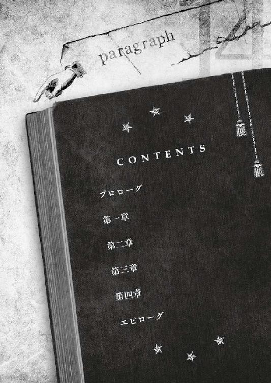
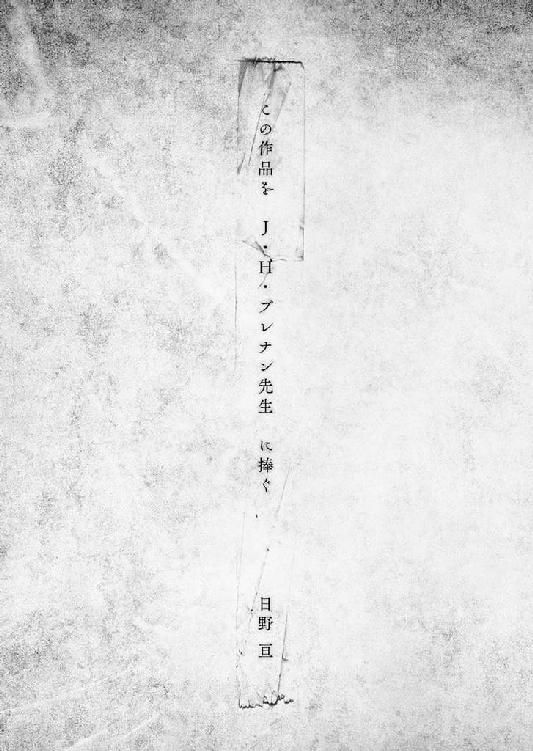
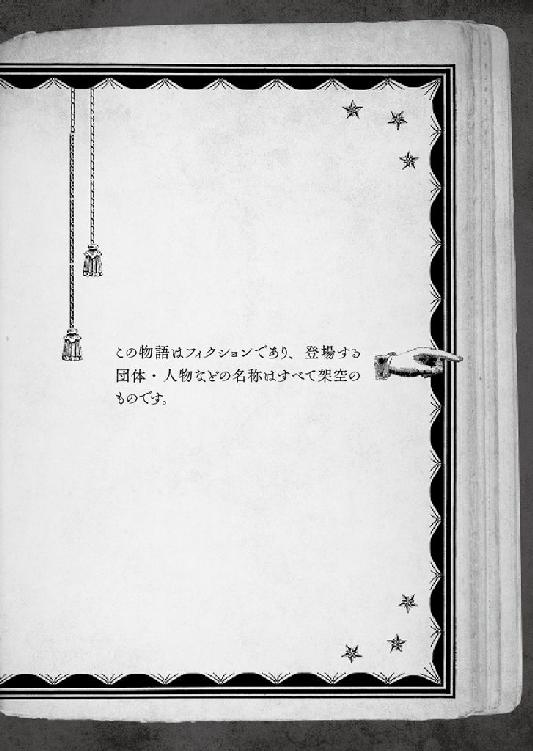
──要は、「遅い」か「早い」かだけの違いだった。
大昔の偉い人には、「全ての道がどこかに通じている」と、馬鹿みたいなことをほざいたヤツもいたそうだ。
きっとソイツは、世の中の道理を履き違えていたのだろう。
丁度この場所が行き止まりであるように、道に限らず物事は、最後の最後には尽きてしまうのが必然なのだから。
一直線に辿り着こうが、迂回して後回しにしようが、『結末』は同じである。ならば、最初から『進まない』という選択もありではないか。歩くだけ損だというのは、立派に筋の通った考え方である筈だ。
そんなことを考えながら、倒れていた。
路上に、大の字で、もはや息をするのも面倒で、考えるのさえ億劫だ。このまま屍になってしまうのも、それほど悪い結末ではないような気がしてきた。
いい加減、これ以上逃げ回ることに疲れ果てていたのだ。
人生は選択の連続だ。
だが、選択の行き着く先は、大概が行き止まりだ。
今いる袋小路のどん詰まり感が、如何にも象徴的で、最後の意欲を摩耗させてくれる。
世の中で一番目に、諦めることが嫌いだった。
どうにもならなくても、投げ出すのはまっぴらである。何かに負けたみたいで我慢ならない。そんな自分の信条を高らかに掲げ、意地を張ってここまできたが、そろそろ限界だ。
ちなみに二番目に嫌いなのは、『薄っぺらい』ヤツだ。
何よりも、空腹のせいで肉体的に終わりそう。
横たわったまま、地べたから空を見上げた。
看取る者もない行き詰まりで、『彼女』はこれまでと変わりなく、やっぱり独りだ。
ふと、目だけ動かしてみると、街の中心にさほど大きくもない山が鎮座していた。この街は、あの山の周りにあるのだろう。精々二〜三百メートルそこそこの頂には、鉄塔やらパラボラアンテナやらオブジェめいた建物やらがある。あんな所にも人の営みはあるのだ。
「......ちっ、遠いンだよ、テメーらは」
目眩がして、足下がフワフワし始める。そろそろ本格的にお迎えが来そう。
今更心乱すこともなく、ただ従容と結末を受け入れてしまおうと思った。
「──君、どうかしたの？」
そうはいかない、と運命が高笑いしたような気がした。
少しも劇的さのない、街を彷徨けばどこにでも落ちていそうな声音と台詞の中身に続いて、身体の上に影が落ちる。
「困ってそうに見えたんだけど......違ったかな？」
まさか、である。この見るからに薄っぺらそうな大馬鹿者は、よりにもよって、死して屍拾う者なしのロクデナシに、余計な手を出そうというのだ。渡る世間には、道理を解さない輩が後を絶たないらしい。世界平和の敵だ。世界は関係ないかもしれないが。
「──失せろ」
と、残された力を掻き集めて、遮った。
「テメーはアタシの何だ？ 見ず知らずだ。これっぽっちも無関係だ。どこかの馬の骨のクセに、アタシにそんな面しやがると、その鼻面を蹴り飛ばすぞ。いいか、アタシがここでこうしてるのは──ただの趣味だ！」
ビシッと言ってやると、露骨にドン引きする気配があった。それなのに立ち去ろうとしない。路地の入口を塞いだまま落ちる影に、いよいよ腹が立ってきたので付け加える。
「まだ居やがるのか？ 人助けして感謝されたいのか？ フン、偽善なンざクソ食らえ。テメーみたいなのが本物のクズなンだよ。死ンじまえ。生きてるだけで迷惑だ。べっ」
最後の「ぺっ」には失敗した。カラ元気を集めて、一気に捲し立てたところで体力が底をついたが、流石に相手は背を向けて路地を出て行った。
（よし、勝ったっ！）
無意味な勝利に酔いながら、再び独りになった。
いつも通りで慣れている筈なのに、自分以外には誰もいなくなった路地を不思議とうそ寒く思う。春どころか夏も近い季節なのに、この場所はどこまでも薄暗い。
でも、これでいい。後は、成り行き任せでごく自然にオチが着く。自分にはお似合いの場所で、読み終わった本を閉じるように、終わった物語には「完」の文字が記されるのだ。
と、見事な完結を想い描いた。
──もう一度、影が落ちる。
顔のすぐ近くに、消えた筈の少年がいた。
これといって目立つ顔立ちでもなければ、頼りになりそうでもない。赤毛のメッシュの入った髪が、一本気そうな雰囲気とは上手く折り合わず、何か軽い印象を与えていた。年の頃は、少し年上だろう。
取り立てて難しいことでもなさそうな顔で、倒れて空を仰ぎ見る相手──つまり自分に、右手を差し伸べていた。
（ああ、何て馬鹿なヤツなンだろう）
差し出された手に魅入っていた彼女に、少年は、
「......欲しい？」
と、そんなことを言った。
何を言っているのだろう。猫騙しでも食らった気分。
少年は後ろでに回してた左手から、右手の上に何かの袋を手渡した。
パンの袋！ クリームパン！ 食べ物！
「君が欲しいのは、コレかな？」
「────」
ピンポイントで急所を突かれた。欲しいに決まっていたが、見ず知らずの相手から貰う義理はない。厚意も同情も、まっぴらだ。
こちらの葛藤もお構いなしに、ひょいと目の前から消え去るクリームパン。
咄嗟に手を伸ばしかけたのは、一生の不覚。
空腹と誇りと羞恥と困惑と警戒の入り乱れる彼女に向かって、少年は路地の底から見上げる青すぎる空を漂う空気みたいに、透き通って捉えどころのない笑顔で言った。
「あげない」
──よし、コイツは殺そう。
そう、彼女......叔美は、心に誓った。
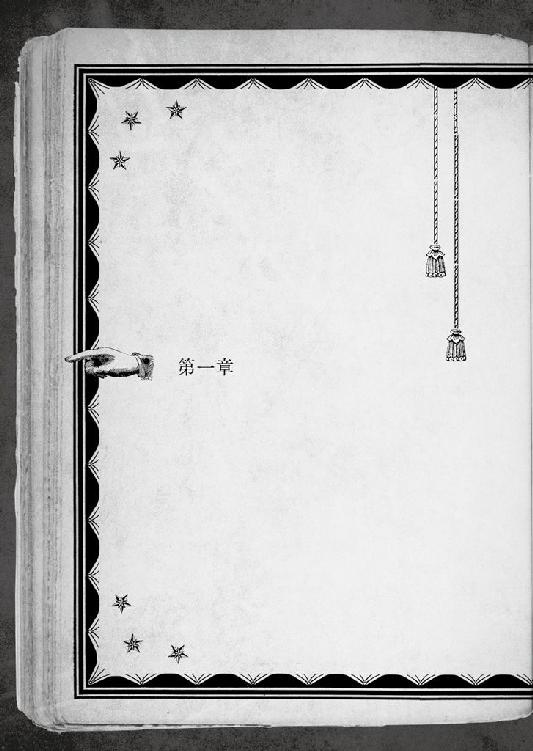
......叔美という少女について語るなら、彼女は事の始まりから、一貫して極めて不可解な少女であった。
叔美命名『クリームパン男』こと千里一條が、最初に見つけた時の彼女の恰好は、どれほど贔屓目に見ても真っ当ではなく、行き倒れも同然に酷く薄汚れていた。
そのワリに、不思議と目を惹き付けるものがあったのだ。
正直に言えば、初対面の第一印象で「可愛い」ぐらいは思ったものである。年下に見えたので、どちらかというと「妹みたいで可愛い」だったが。
世間の多くの妹がそうであるように、叔美は見た目は愛らしくても、お世辞にも可愛らしい少女ではなかった。
大層口は悪かったし、斜に構えているせいか目つきも相当に悪くなっていて、初対面で彼女の美点に気づくものは稀だった。おまけに、最初の頃は人見知りまで激しかった。
縁側でまどろむ飼い猫を人生の理想像と嘯く一條とは真反対に、叔美はどこから見ても野良猫な性質の少女である。
そして何よりも、正体不明。
本人の名乗った「叔美」という名前だって、本当かどうかも定かではない。
要するに、『怪し』かったのだ。
まるで、怪であるかのように。
人の姿を取って、その場に在るのが欺瞞のように。
欺瞞であった方がよほどマシだった、と周りの人間が痛感するのは後々のことである。
彼女を見つけたのが一條だったのは、叔美にとっては、偶然拾った宝くじが一等当たりクジだったような、凡そ最大級の幸運だったのだろう。
これは、初夏のある日、奥志麻という田舎町にやってきた、とある少女と少年が出逢う、『二人』の物語である。
出逢うまでも面倒だったが、本当に厄介だったのはその先だ。
何故なら──
叔美は、『死神』だったのだから。
比喩ではなく。
全く、言葉通りの意味で。

遡ること一千余年、孝徳天皇の御代に下された改新の詔で、王威の及ばぬところ、いわゆる「化外の地」と定められた土地の一つが、今日でいう四国であった。
気の荒い瀬戸内海で本州と隔てられていたせいか、長らく中央から放逐された者たちが追いやられる流刑の地とされてきたらしいが、何もかも今は昔の話だ。
──七月頭のことである。
叔美と出逢ったのは、真夏ギラギラの陽射しが降りしきるようになる少し前だったと、千里一條は、彼にしては珍しく憶えていた。
初夏......といっても、Ｔ県奥志麻市は四国。本州に比べれば夏の足音は相当に早い。「死神の少女」と行き遭った頃は、まさに真夏への最終カウントダウンの途上だった。
勤労学生である一條は、優雅な人生を愛していた。
一言で言えば、気楽に生きようという主義だ。
敵（？）は、心を煩わせる悩み事。とりわけ、過去を振り向いて悔いたりするのは最悪だ。過ぎたことにしがみつくよりも、未来を見ておおらかに生きる方が健康にいい。
そんな主義を持つ一條は、言いつけられた買い物を済ませ、まだ不慣れな道をアルバイト先へ帰る途上、古町川沿いを自転車で東に漕いでいた。
対岸に目立っている紅白の鉄塔を横目に、愛島浜公園の辺りへと差し掛かる。浜という字の通り、この公園は古町川沿いに細長い。川の浜というわけだ。
と、公園の広場で、一団の若い女たちが一糸乱れず怪しげな呪的儀式を繰り広げているのに目を奪われた。
地元では知らぬ者のない、天河踊りの練習風景だ。
奥志麻市には、『天河踊り』なる伝統的な盆踊りの一種がある。この西の僻地で生まれ、日本三大踊りの一つとして知られるまでになった。郷土の誇りたる民芸で、盆の祭りの頃には、この踊り目当てにのべ百万人以上もの観光客が訪れる。
幾万もの観客たちを瞠目させるべく、奥志麻二六万の市民から選び抜かれた踊り手たちの練習風景が人目に付き出すのは、毎年七月の頭頃と決まっている。それまでは、目に触れない場所で静かにやっているのだから。
本当に極めつけに珍しく、叔美と遭遇した大凡の日付を記憶していた理由である。
「昼間から踊っていられるなんて、いいなあ......」
長閑な踊りの練習を物珍しそうに横目で眺めながら、バイトに勤しむ我が身を嘆く。
実際には、「天河踊り」は奥志麻の貴重な観光財源であり、その檜舞台とは生き馬の目を抜く競走社会に他ならないのだが......。
「ま、ボヤいたところで何も始まらない、と」
気分を切り換えるべく、抜けるような青空を見上げようとしたその目の前に──
黒塗りの、ぶ厚い『本』が現れたのだ！
場所は、古町橋の袂。
思えば、凶運に導かれたような叔美との遭遇の日、決定的な出逢いの瞬間の少し前から、一條のツキの無さは、とっくに臭い立っていた。さながら台所の片隅で腐った生ゴミが腐臭を放つように、だ。
「────」
この『本』が突然現れること自体は、いつものことである。
これはこれで驚くべき事なのだが、人間、繰り返せば何にでも慣れていく。そろそろ約一年の付き合いになる一條は、今更驚きもせず、素早く左右を確かめた。
棘を逆立てたヤマアラシよろしく、ほんの一瞬で全方位に警戒を張り巡らせて。
この『本』の出現は、『前兆』なのだ。
現れるのは、「何か」が起こる時と決まっていた。針が落ちるような小さな出来事の場合もある。命を左右する大事件の場合もある。事の大小とは無関係に、重要だ。後から振り返れば、人生を劇的に変化させる意味を持っていたと知れるのだから。
また、そんな出来事が起きようとしている。
一條は、身に染みていた。優雅に生きようとするなら、これから起きるだろう「何か」を、決して見落としてはならない。
さて辺りに何があるのかと注意深く見回してみると、そこに巫女が立っていた。
イタタタッ！ と、最初に思った。
年の頃なら自分と変わりない少女の巫女だが、金糸銀糸を使った水干、いわゆる巫女装束はとにかく派手である。
昨年一年ほど暮らしていた大都会には、この手の巫女さんも沢山いた。特製の派手なラメ入り巫女装束のコスプレ系の巫女とか、キャッチセールス系の巫女とか。前を通ると、怪しそうなお店の割引券を手渡されたりする。古い伝統から解き放たれ、二一世紀の新たな時代を生きるシティ派巫女たちだ。
ここ奥志麻は、典型的な地方都市である。昼間であろうが、街の中心に近いこの辺りだろうが、相応に閑散としているような土地に、大都会の喧噪に揉まれて生きる、逞しきシティ派巫女さんたちがいるとも思えない。
一條は、マジマジと見入る。目が合いそうになって、慌ててそっぽを向いた。
派手巫女さんは、何をするでもなくボンヤリ佇んでいるだけなのに、ドン引きする程周りの空気から浮いている。
本音を言えば、即座に回れ右して「二度と拘わらない」という選択肢を選びたいところだが、迂闊に動いてはならない。
目の前に、『本』が姿を見せているからだ。
誇示するように開かれた黒い本は、まさしくこの世の不条理の象徴のように、支えもなく宙に浮いていた。
更に怪しいのは、こんな『本』があれば普通注目の的だろうに、眼前の巫女さんは気にも留めていないことだ。
驚くには当たらない。この『本』は、一條にしか見えないのだから。
「貴方、憑かれています！」
巫女さんが、いつの間にやら大真面目な顔で目の前に迫っていて、ズビシッと効果音の出そうな勢いで指差された。
ぶ厚い『本』は、何の支えもなく一條の目線の高さに浮いたまま、とあるページを見せつけるように広げた。
開かれたページには、分岐が記されている。いつもの如く、奇妙な文字で書かれた『文面』だ。
調べた限りでは、どんな既存の言語とも違う読めない文字なので、一條は『のたくり文字』と呼んでいる。それこそ「ミミズがのたくっているよう」だからだ。
一番最初に記されているＰＧ、『３１３─■■■■』を確認。それから、目を通すのに合わせて初めて、文面の頭から順に日本語へ変換されていく。変換というよりも、敢えて言うなら「翻訳」だろうか。
３１３─■■■■
さあ、例のヤツがやって来たぞ。お待ちかねだ。
キミの最初の感想は、困ったなぁ〜だ。よくわかるとも。目の前にいるのは、誰がどこから見てもイタい巫女さんだからな。だが、この巫女とその後の行動が、この『物語』の先行きを右か左か、はたまた三択にせよ四択にせよ、綺麗に分けてしまう一点であるのは間違いない。
巫女な彼女は、身構えているキミに迫ってくる。幸運にも襲い掛かってくる様子はない。戦闘にならなくて済んだようだぞ。
「貴方──憑かれています」
川のせせらぎをバックに、彼女はキミを激しく指差して大声で叫ぶ。予想もしなかった一発だ。どうする、言い当てられてしまったぞ。青くなってる場合か。さあ、選択の時が来たぞ。足を掬われないように、よーく考えるんだ。
勇敢にも、このイタそうな巫女に返事をするなら／６１６─■■■■ へ行け
尻尾を巻いて逃げ出すなら／２３４─■■■■ へ行け
『本』のサイズは凡そＢ５版。辞書を思わせる厚みがあり、装丁も厚さに相応しくしっかりしていた。タイトルはない。控えめな装飾が自己主張しているだけだ。材質はおそらく黒革だろう。触ってみた感触もそのものである。
ただ一つ──一條以外には見ることも触れることもできない幻めいた代物だ、という点を除けば、だが。
千里一條は、『本』に「憑かれて」いた。
目の前に浮かんでいる、幻じみた本がそれだ。
見知らぬ巫女さんの託宣は、文字通り正鵠を射ていたのである。
仮に、人生を一個の物語だとしてみよう。
ある人間の一生が、人智の及ばぬ観測者のしたためた、長大な物語に例えられることは多い。延いては、この世の中森羅万象の悉くが、一冊の膨大かつスペクタクルに富んだ物語といえるかもしれない。
その物語の中で、ある者は華々しい主役を演じるのかもしれないし、目立たぬ脇役として一生を終えるかもしれない。いずれにせよ、登場人物には、己の書かれた『物語』を読む術はあるまい。
幸か不幸か、とある出来事以来、一條は『それ』を読み取れるようになったのだ。
自分の──千里一條の『本』を、である。
異能と呼ぶべきか、異才と呼ぶべきか。
果たしてどういうカラクリになっているのかは、さっぱりわからなかったが。
この『本』には幾つかのルールがある。
ルールその一：目を眇めて集中すると、『本』は現れる。
正確に言うなら、取り憑いた『本』はいつでも傍に在る。普段は姿が見えなくなっているだけだ。もう少し補足すると、敢えて一條が見えなくしているのだ。
考えてみるといい。目の前を四六時中、浮かぶ『本』に遮られていたら、邪魔ではないか。きっと、大半の人間はさっさと消えてしまえと思うだろう。一條もそうだった。
そして。
「──どうなるのかな？」
一條は、サバンナを奔る草食動物と化す。秘かに近づくパンサーの痕跡を捉まえるべく、神経を張り巡らせた。
ルールその二：《分岐点》で、『本』は勝手に現れる。
今の状況が、「ルールその二」だ。
出てくるよう念じたワケでも、弾みで目を眇めてしまったワケでもないのに、普段は見えない『本』が勝手に現れるのは、「何か」の起こる前兆だ。
どちらの場合であれ、『本』の記述を読み取ろうとすれば、目を眇めなければならないのだが。
「貴方──憑かれています」
川のせせらぎをバックに、彼女はキミを激しく指差して大声で叫ぶ。予想もしなかった一発だ。どうする、言い当てられてしまったぞ。青くなってる場合か。さあ、選択の時が来たぞ。足を掬われないように、よーく考えるんだ。
勇敢にも、このイタそうな巫女に返事をするなら／６１６─■■■■ へ行け
尻尾を巻いて逃げ出すなら／２３４─■■■■ へ行け
日本語に書き換わった文面の最後には、『選択視』が著されている。
──選択肢ならぬ、『選択視』。
人生の選択が視えるところから、一條は、これを『選択視』と名付けた。
語呂合わせみたいだが、本人的には悪くないと思っている。
人の一生を、敢えて『物語』と表現するなら、それは決して一本道ではあるまい。人は傀儡回しの人形ではなく、意志というものを持っている。様々な場面で決断をし、選択を行う。
朝食をパンにするかご飯にするか、志望校をどこにするか、就職、恋愛云々。人生には選択が憑きもので、時には生死すら決定してしまう。
つまり──人の一生は、無数に分岐しているのだ。
一條の『物語』が著された『本』も、当然のように無数の枝分かれを内包している。
人生の分岐と一口に言うが、物事に大小があるように、分岐にも些細なものとそうではない重大なものがある。
この『本』が勝手に現れた時に教えてくれる、「何か」。
それを一言で表せば、その後の人生が劇的に変わってしまう重要な──《分岐点》なのだ。
（さてと、選択の時間......ってところか）
一條は目を凝らす。
この『本』は人生の分かれ道の存在を矢印付きで教えてくれるようなものだが、どの道を選べば、本人にとってより善き人生が得られるかは、精々ヒントしか与えてくれない。しみったれだ。
より平和に安全に優雅に日々を過ごそうとすれば、「正しくない選択視」を選んでしまわないよう、細心の注意を払わなければならないのである。
善き人生である為には。
こうして「文章」になると、巫女さんの台詞が、「疲れて」でも「突かれて」でもなく、やはり「憑かれて」であったと判る。
出現した選択視は、二つ。どちらかが、幸福な結果に通じているとは限らない。どれを選んでもバッドエンドという袋小路も往々にあるのが、人生の理不尽極まりないところだ。
絶対値としての幸福がない場合でも、相対的に「幸福」な選択視は必ずある。分かり易く言えば、今の時点でコレが「一番マシ」なヤツ。
注意しなければならないのは、著された二つ以外を選択しても無意味──という点だ。
世間には、「人は無限の選択ができる」としたり顔でいうヤツもいるが、選んで意味のある──本当の意味での『選択』は、言うまでもなく一握りだと、一條は知っていた。
この『本』を見れば、イヤでも知らざるを得ない。
ある場面で取り得る選択は、有限である。
例えば今現在、「返事をする」と「逃げ出す」の二つの選択視が示されている。
取り得る行動は、他にも沢山あるだろう。唐突すぎるが「デートを申し込む」や、ヒドい話ではあるが「黙って殴りかかる」を選んだ場合はどうなるのか？
あるいは、たった今この場で全裸になって、地元名物「天河踊り」を踊り出すという突拍子もない選択はどうか？
一條にしてみれば、そんな埒もないことは頼まれたって願い下げだが、仮に涙を呑んで遣ってみても、このページの『選択視』に著かれていない以上、結果は明らかである。
人の一生──人生という名の本の筋書きは、時に小石を蹴った程度で大きく成り行きが変わってしまう蜘蛛の糸のような繊細さを持つ反面、これで中々、したたかで頑固者だ。気に入らない『物語』のオチを変えようと、突拍子もない行動を繰り広げたところで、記されている選択視のどれかに収束してしまう。
真の意味での『選択』は、ごく限られているのだ。
ルールその三：選択視にない選択を選んでも、選択視に収束する。
今ここで「デートを申し込む」とした場合、おそらくは「返事をする／６１６」へ収束する。実際どうなるのかは、やってみなければわからないが。
だからといって、この場の結果だけを参考に、好き勝手をするのは考え物だ。
例えば、「突然裸踊りをする」のような破廉恥行為を選ぶと、普通に考えれば、後々警察や学校から手厚いお叱りを受ける......だけでは済まないだろう。
この場の選択が先々どう影響するのか、それともしないのかは、『本』のみぞ知るだが、そんな人生の行き止まりに着きそうな迷惑行為を、わざわざ選んでみようとは思わない。
それが、この一年間で一條の辿り着いた結論だった。
（今、選ばなければならないのは、この二つの──どちらか、か）
重大な《分岐点》を前にして、匍匐前進のように慎重になる。
注目すべきは、選択視毎に付いている、一條がＰＧと呼ぶ番号だ。選択視を選んだ場合の行き先が、数字に割り振られている。
何故数字なのか、と言われても、一條にだってわからない。そういうものだと納得するしかなかった。
勇敢にも、このイタそうな巫女に返事をするなら／６１６─■■■■ へ行け
尻尾を巻いて逃げ出すなら／２３４─■■■■ へ行け
この数字は辞書の見出しのようなもので、行った先でどんな内容が書かれているのかが大凡分類されている──らしい、と一條は経験則から判断していた。
ちなみに、見出しの後に続く黒く潰れた文字列は、行き先の詳細だ。目を更に凝らせば、桁数の多い数字が並んでいるのが読み取れる。例えば今、６１６の後に続いているのは「１５６８１１１２４......」といった具合だ。
基本的に大した意味はないようなので、普段は意識していない。だからなのか、黒く潰れた文字列として表示されているのだった。
ＰＧの数字からは、様々な情報を読み取ることも出来る。今のところ、一條がＰＧから最も読み取り易いのは──行き先で待ち受けている『危険』の度合いだ。
注目するべきは、頭の１ケタ。今回の選択視では６と２が、それに当たる。
（ふむ、どっちが良さそうだろう？）
単純には、ＰＧ２３４を選ぶ方がいい。
これまでの傾向では、「ただ一つの例外」を除けば、数字が少ないほど平和な成り行きが待っていた。０〜３番の範囲なら相当に安全だ。逆に７番を越してくると、ほとんど間違いなくトラブルが起きる。
（発見！）
分岐の記述に、「足を掬われないように」とあるのを発見した。
こうやってわざわざ著かれている場合、足下に注意しろという警告である場合が多い。
転ぶのか、滑るのか、それともツンのめって道路に飛び出すのか。
狩猟者を察知したリカオンのように注意深く左右を見渡すと、ご丁寧なことに、すぐ傍を古町川が蕩々と流れていた。
奥志麻は水の街と呼ばれており、駅の傍だけで三本も大きな河川が走っている。古町川はその一つ。天川の支流で、遊覧船がコースを取ったりもする観光名所だ。
（──こいつか！）
「川のせせらぎをバックに」という記述が、行く先を暗示しているような気がする。
この巫女に拘わるのなら──ギャグ漫画めいた展開ですったもんだの挙げ句、足を掬われて、ここに落ちて濡れ濡れになる可能性がかなり高そうだ。
ばかりか、よく読めば選択視には、「返事をするなら」と著かれていた。
拘わる......どころか、返事をしても駄目なのだ。それだけで『運命』が決まってしまうというのは相当である。
選択視が二つしか現れないのも当然だった。
拘わることを選んでしまえば、『運命』はＰＧ６１６へと収束する。近道を一直線に走っても、遠回りしても、落ち行く先は一つ。古町川の中だろう。
（......彼女、困ってる様子はない、か）
声には出さなかった。『返事をする』を選んでしまわないとも限らないからだ。
彼女、とは言うまでもなく、ラメ入り巫女さんである。何事かに困って助けを求めてきたのなら、一條としては通り過ぎるわけにはいかなくなる。相手が、個性的な（婉曲な表現）巫女さんであっても、よしんば川の中に落ちるのが確定でも、その時は仕方ない。
そうではないのだから、選択の余地があった。不作法をするので甚だ不本意とはいえ、わざわざ「落とし穴です」と書かれた地点へ、理由もなく全力疾走でダイブするような奇特な趣味の持ち合わせもない。
（すみません。というわけですので──!!）
特急速度で離脱した。ＰＧ２３４を選択したのだ。
胸の内で手を合わせて、鋭く回れ右して、全力疾走でママチャリを漕ぐ。
「あっ、待ってください！ 貴方がそっちへ──」
待てるわけがない。
あたかも黄泉比良坂から浮気がバレて妻に追い掛けられたどこかの亭主の如く、振り向きも返事もせずに速やかに走り去ったのである。
ふう、と胸を撫で下ろす。今回も『本』のおかげで、無用のトラブルを避けられた。
こういうケースでＰＧを無視して強引に進んだ場合、どういう目に遭ってしまうのか、一條はたっぷりと思い知っている。
「『運命』には逆らえないよねえ」
『本』が、いつ現れるのかは、一條にもわからない。
邪魔なこともあるが、役にも立つ。そういう『本』だ。
出たままの『本』を手で閉じると、煙のように音もなく消えてしまう。最後に名残惜しそうにしているような気がしたのは、きっと目の錯覚だ。
視界を遮るものから解放されたので、うんと伸びをした。
「さて、と。過ぎたことは過ぎたこと」
過去を振り向かないのが、一條の信条だ。
置いてきた巫女さんの一件はとっくに過去となったので、速やかに脳内の想い出フォルダ内に片付けた。
初夏とはいえ、観光シーズンにはまだ早い奥志麻の街は、人気がなくて静かなものだ。親しみの湧かない故郷だが、都会の騒々しさから縁遠いのは、一條の好みに合う。
改めて漕ぎ出した自転車の帰路。道なりに、時々、『アニメのマチ☆東古町』と書かれた幟が残されている。街の新たな振興策として年に数度行われているという、サブカル系イベントの幟だ。
頭上の空は青々と輝き、夏へと向かう盛りを謳歌していた。
奥志麻市は、美山の周りにぐるりと広がっている。ドーナツめいた形の街で、間近にそびえる山嶺をどこからでも見上げることができる。
「変わった形の街だよね」
などと思っていると、はしたなく腹が鳴った。そういえば小腹が減ったなぁと近くを見渡す。コンビニはなかったがパン屋があったので、入って適当に選んだクリームパンを購入した。
すると──黒背の『本』が現れ、背表紙手前のページがパラパラと開かれた。
まさか、と身構える。さっきの今だ。人生を劇的に変化させる『選択肢』が、こんな短期間に連続で現れるなんてことは、これまで一度しかなかったレアケースだ。
■所持品
手作りクリームパン
「......マジですか」
おいおい、と思わず一條はツッコんでいた。
開かれたのは《分岐》のページではなかった。だからといって、気は抜けない。
今開かれているのは、『ステータス欄』と呼んでいるページだ。当然の如く『のたくり文字』で書かれており、目を通すと次々に「翻訳」されていく。そこには、一條の能力や体調が、全てデータ化されて記されている。
体力・２０／２０
状態・健康
他にも、素早さや攻撃力の項目もある。社会生活上、攻撃力を何に使うかはともかく。相手は、突然襲い掛かってくる押し売りセールスマンとか、山から下りてきたスズメバチだろうか。どちらにも、まるで勝てそうな気がしないが。
つくづく、この『本』がどういう仕組みになっているのか、よく判らない。とはいえ、自分の状態を客観的に見ることができるのは......まあ、便利ではあった。
ステータス欄には、『所持品』の項目もある。買ったばかりのクリームパンが、早速記載されていた。
「......もしかすると、コレ、『アイテム』なのか？」
クリームパンの袋をしげしげと眺めたり、軽く振ったりしてみた。
どう見ても、只のパンだ。
バナナがおやつに含まれないように、一條が何かを手に入れる度に、所持品欄に記入されていくわけではない。それでは膨大な量になって、すぐに所持品欄が一杯になってしまうだろう。
欄が埋め尽くされたら、それ以上持てなくなってしまうのだろうか。一條にとっても興味深かったが、これまでそういう経験はなかった。所持品欄に記載されるのは、人生の道筋を変える可能性を持つ品に限られるからだ。
「このパンが、人生を左右するのか......」
一條の『本』の役立つ点であり、厄介な点でもあった。
物語には「伏線」が付きものである。
なべて世の出来事は、因果応報。無から生えてくる結果はない。試験の成績が悪くて大目玉を食らうのは日々遊び呆けていたからだし、ある日突然燃え盛る隕石に潰されるのは、落下地点にいたからだ。
一條の『本』は、普通の人間なら見落とすだろう人生という物語の「伏線」を、細大漏らさず集めてくれる。
やはり、どういうカラクリなのかはわからないが、この『本』の所持品欄に著かれてしまった以上、クリームパンの必要な選択視＝出番が、近い将来、高い確率でやって来るのは、経験則として疑いない。
その時、このパンの有無、あるいは使い方次第で、一條の人生は大きく左右されるのだ。
何だかなあ、と手の中のパンの軽さにしみじみ思わずにはおられなかった。
人の一生とは、これほどお手軽に変わってしまうものなのか。
「それよりも重要なのは、このパンが食べられなくなったってことだよね............」
パンを食べてしまえば、当然の事ながら、所持品欄からは消えてしまう。後々現れるだろう選択視は、大抵の場合、持っているアイテムを使用する方がイイ感じの結果に結びつくのに、それが選べなくなってしまう。
「......仕方ない、もう一個買うか」
折角買ったパンを取り上げた『運命』に愚痴りながら、奥志麻名物の明文金時パンを買い足して食べる。クリームパンは自転車のカゴに放り込んだ。
「早く帰ろう。遅くなると、オーナーにまた怒られる」
頭を切り換えて、一條は再び帰路に着く。
巫女さんから逃げる時に引き返してしまったせいで、帰りが二度手間だ。また鉢合わせしないように、多少遠回りだが、さっきとは違う道筋で帰ることにした。
ところで、物語における劇的瞬間──いわゆる「ヤマ場」は、唐突に出現するものだ。
それは、先程のように。
あるいは、今のように。
「────」
唐突な、悲鳴じみた甲高い摩擦音。
表通りから奥に入った狭い道を潜ったところで、一條は慌てて自転車のブレーキを握り締めていた。あまり丁寧に扱っていない典型的なママチャリの古びたブレーキが、軋みながらタイヤを止めて、路面に短い跡をつける。たった今見たものが、何かの悪い冗談なのだというように、何度も瞬きをした。
裏路地の、更に入った細い路地の奥に──少女がいた。
まるで絶賛家出中!! とでもいった萎れた風体で、だらしなく地面で大の字になっていた。こんな所に独りで寝転がっているのは、それだけで相当の変わり者だろう。加えて、容姿や服装にも独特の風変わりなところはあった。
普通なら近づくのも躊躇う相手だろうが、一條ならきっと声を掛けたに違いない。
そこにいて力尽きたようにへたり込んでいるだけで、そうする理由は十分だ。
律儀に、身を案じて。どうしたのか、大丈夫かと。
彼が止まり損ねて急ブレーキを掛けたのには、別の理由がある。
路地の前に差し掛かる直前に、『本』が再び現れたのだ。
何事かと速度を落としながら注意を振り向けた一條には、『彼女』が家出少女などという生易しい『もの』ではないことが、否が応でも視えてしまった。
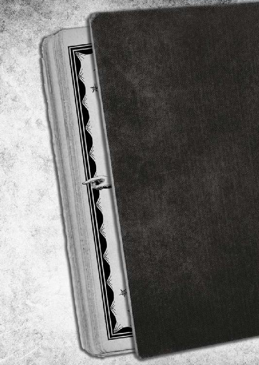
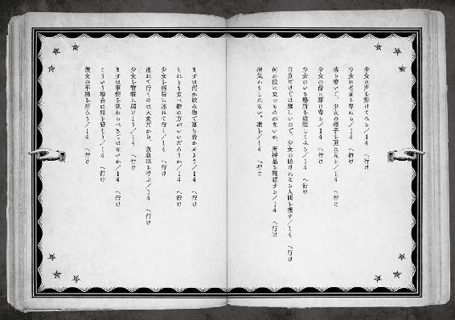
──突き詰めれば、その少女はおかしかったのだ。
１４、１４、１４、１４......──１４ へ行け！
目の前に開かれたページには、あり得ない数字が並んでいた。
サドルからズリ落ちそうなほど驚いて、またしてもブレーキを握り締めてしまった。更なる制動が掛かったせいで、結局は自転車から振り落とされた。
「おわあ!?」
ゴロゴロと二回転ほどしてしまったが、気にもならない。そんな些末に注意を割いてる余裕などまるでなかった。
１４！ そう、『１４』なのだっ!!
一條は、１４には鼻が利く。
以前、非道い目に遭った事があり、それ以来、敏感になったのだ。
ＰＧの１４は、選択視ならぬ選択死。分かり易く言うなら、『死』の番号だ。
破滅の数字。選べば、死ぬ。絶対に、確実に、逃れようもなく。
そのＰＧ１４へ向かう選択視が、見開かれたページにずらりと列を成して並んでいたのだから、一瞥した一條が腰を抜かし掛けたのも、ごく自然の有様だった。
──まるで、地雷原のような少女。
一條のこれまでの経験上、「１４ へ行け」がいきなり著かれているなんてことは、まずあり得ない。そんなものは『選択視』とは呼ぶに値しない、選択の余地のない地獄行きだ。
なるほど、死の危険というものは、何処にいても付きまとう。一歩外に出れば、いや、家の中にいても、ある日突然空から落ちてきた燃え盛る隕石に当たって鬼籍に入らないとは、誰にも言い切れないのだろう。
そんな、まさに降って湧いた不幸な例でなければ、いや、降って湧いた不幸な例であったとしても。
多くの物事がそうであるように、ＰＧ１４にも「伏線」はついて回る。
『本』の導きで、そういう草むらに潜む毒蛇めいた１４の訪れを回避したことがある。
だからこそ、今開かれたページのような凶悪なシロモノは、ハッキリと言って突拍子もない。
１４がズラズラ並んでいる悪ふざけのような見開き。
ここまで行き切ってしまうと、もはや滑稽だ。
「これってもしかすると、相当マズい《分岐点》に立たされているってこと？」
最初の衝撃が去って我に返ると同時に、そう思った。
悲劇であれ、喜劇であれ、人生の予兆は、大半がすぐ目の前を通り過ぎている。
人間は、大概手遅れになってからしか、それに気づけない生き物というだけで。
しかし、千里一條の『本』は、人生の伏線を見逃さない。
よしんば、本人が見落としてしまっても、至れり尽くせりで丹念に拾い上げてくれる。
だとすれば、この突飛な選択視の、意味するところは何か？
「......彼女に拘わろうとしたら、何をどう選んでも死んでしまうってことなのかな？」
最初に一條が思いついたのは、大きな事故の可能性だ。
例えば、ここで突然足下の道路が大爆発を起こすとしよう。いや、別に陥没でも隣のビルが不良建築で崩れてしまうといった、ありがちな展開（？）でも構わないのだが。
そういった大きな凶事の「伏線」が何らかの形で現れて、一條が気づいていないだけだとすれば、この死の罠めいたページみたいになるのではないか。
だとすれば、あそこで項垂れている少女一人では収まる筈もない。周辺の人たちに、今すぐ逃げるよう説得して回らなければならない。『本』が教えてくれました──とか言い出したところで、可哀想な顔をされてしまうのは間違いなしだから、美山の狸のお告げですぐらいは捻って伝える必要があるだろうが。
一條自身だって、当然危うい。
ここまで選択視があからさまでは、どうしたところで逃げようのない気配だが。だからといって結末を殊勝に受け入れるのも、それはそれで業腹である。
素早くそこまで思案を巡らせて、再度『本』へと見入った。
３３４─■■■■
おや、どうしたことだろう。少女が路地で生き倒れているぞ。何かの病気か、それ以外のトラブルだろうか。
よく目を凝らすと、この辺りではあまり見ない恰好で、持ち物は身に付けているもの以外何もないらしいのが判った。謎は深まるばかりだ。土地の者ではなさそうなのに、旅行者というには軽装過ぎる。
付近には、人の気配はない。此処にいるのは、どうやらキミと少女の二人だけだ。
さて、どうするべきだろう。お得意の紳士的精神を発揮するか？ ああ、キミの性分はよくわかっている。いやいや、しかしだ、日頃から無鉄砲なキミだが、ここはよくよく頭を使って考えるべきところだぞ。
少女に声を掛けてみる／３３５─■■■■ へ行け
少女に名前を尋ねる／８８３─■■■■ へ行け
落ち着いて、少女の様子を更に見る／２６７─■■■■ へ行け
少女に拘わらずに立ち去る／１９１─■■■■ へ行け
「あれ？ 普通になってる」
流石に首を傾げた。開かれたページに著かれているのは、『本』の言い回しこそ大げさに持って回っているが、普段と何ら変わりない分岐と選択視だった。
先程視た筈の１４の列は、欠片もない。
「時間切れ......じゃないよな」
人生には、選択がついて回る。
意識しなくても、人は選択をし、決断を下しているものだ。
学校には遅刻が、宿題の提出には締め切りがあるように、世の中は、どんなものにもタイムアップがある。
人生を劇的に変化させる選択視だろうとそうでない選択視だろうと、また然り。時間切れを迎えると分岐は収束して、粛々と『次』へと進んでいく。
ルールその四：選択視には時間切れがある。
それは「選ばない」を選んだということ。それでも人生は、無慈悲に、回り続けるカラクリのように、先へ先へと進んでいく。これが俗にいう「運任せ」、「天任せ」ではないのかと、一條は思う。
選択視には、タイムアップまでがごく短い......ほんの数秒や一瞬のものだってある。
さっきの「１４ へ行け」の群も──ごく短いタイムアップで、選ぶ時間もなく次の分岐に進んでページが書き換わってしまったのかと思ったが、どうにも腑に落ちない。
あれほど分かり易い、「１４ へ行け」の列が時間切れを迎えたのなら、結末は、逃げようのないバッドエンドで然るべきなのに、一條はまだピンピンしている。元気一杯だ。
それなら、先程のアレは──赫灼と燃え上がった死の入口めいた見開きは、果たして見間違いだったのか？
......腹の底に溜まったような重さが拭いきれなかった。カタチにならない衝動が、今すぐここから逃げろと囁いていた。
ＰＧ１４は狡猾である。
一見、平穏無事で人畜無害な選択視の裏側にこそ、悪辣な死の罠は待ち受けている。この、普通に見える選択視の群れも、ほくそ笑む『運命』の手招きかもしれない。
さっき垣間見た、ページを埋め尽くす『１４』を思い返す。今見えている選択視を一つ、二つと選んだ先で、１４に繋がっているのだとすれば──
ならば、少女は地雷原どころか、本物の死神に違いない。
どの選択視を選べば、死神のカマを見事に回避して、平和な明日を迎えられるのか？
......強いて言うなら、これだろうか。
少女に拘わらずに立ち去る／１９１─■■■■ へ行け
拘わるな、というのが特にいい。死神の災いを避けるのに、触れることなく遠くへ去るというのは、筋が通っている。さっき、巫女さんにしたように。
１４の少女は相変わらず大の字だった。一條から判るのは思いのほか色の白い横顔だけで、声は聞こえない。何かの偶然で、首を傾げた少女と目が合うこともない。
「それじゃあ、仕方ないな」
特に気負うでもなく、一條は選択した。
ルールその五：選択にやり直しは利かない。
落ち着いて、少女の様子を更に見る／２６７─■■■■ へ行け
──さっき見てしまった「１４ へ行け」の列を思い出した。
見たくて見たのではないが、見えてしまった以上、このまま倒れている女の子を放置して逃げるのは寝覚めが悪すぎる。回れ右でダッシュして、少なくとも自分だけは平穏無事という選択は、一條にはない。
選択視通りに、大の字の少女に見入った。
パラパラと『本』のページが独りでに捲れていく。元の３３４よりも、行き先の２６７がページでは前だから、表紙の方向へ戻っていくことになる。
ようやくお目当てのＰＧに辿り着いたのか、またご開帳された。
２６７─■■■■
キミは大の字の少女をガン見する。
慎重なのは重畳だ。落とし穴はどこにでもあるからな。
冒頭に『２６７─■■■■』とある分岐。
読めない『のたくり文字』で著かれた記述は、前から順に目を通したところが日本語に書き換わっていく。一文字でも飛ばすと「翻訳」されないのがとても面倒くさい。
記述はあっさり風味で、ガン見したがますます怪しげだと愚にも付かない内容が著れているだけ。
「......セーフ、かな」
運命は、先送りが可能だ。
試験に対策があるように、物事は万事、遣り方次第。
ここにクリームパンがあるとしよう。まぁ、実際にあるのだが。食べればなくなってしまうのは同じでも、いつ食べるか、どんな食べ方をするか、辿れる道筋は幾通りもある。
『運命』とは、その程度には自由だ。
但し、選んだが最後、その選択から導かれる結末だけは変えられない。クリームパンがなくなるのがイヤなら、最初から「食べない」を選ぶしかないのである。
『運命』というヤツは、その点において頑迷強固。
進むべき道を選んだ後で出来る事はといえば、避けがたいその時までに覚悟を決めるなり、多少でも被害が少なくなるように身構えるなり......が精々だ。
ＰＧ２６７の最後には、お馴染みの選択視が五つ。
地雷を踏み抜かなかったことに胸を撫で下ろした。おそらくまだ大丈夫と推測したから選んだとはいえ、予想はどこまでいっても未定のもの。最後の一歩はいつだってギャンブルだから、無事に選び終えられれば、ホッとする。
「で、今回選べるのは──」
少女に声を掛けてみる／３３５─■■■■ へ行け
少女に名前を尋ねる／８８３─■■■■ へ行け
落ち着いて、少女の様子を更に更に見る／２６８─■■■■ へ行け
少女に駆け寄ってみる／３１２─■■■■ へ行け
少女に拘わらずに立ち去る／１９１─■■■■ へ行け
選択視の内容は、前のとほとんど変わっていない。
「......さっきの選択、本当に先送りしただけじゃないか」
このまま更に見入っていても、おそらく埒は開かないだろう。こうなれば踏み込むしかないか、と覚悟を決めた。
一番怖いのは、『行き止まり』だ。
「１４ へ行け」を選択すれば死ぬ。一條もそれは真っ平御免である。
遠ざけるべきは、最も危険な──選択視の袋小路。
分岐がそれしかない、死ぬとわかってもＰＧ１４を選ぶしかできない、そんな状況。
逆に言えば、行き止まりに捕まらない限り、『本』のおかげで致命的な「選択」ミスを避けられる。
ＰＧ１４が「死」なのだから、そこに到着しない以上は死なない──理屈だ。
「となると、次は」
相手に聞こえない小声で呟きながら思案した。
注意すべきは、この『本』に著かれているのが、「未来」なんていう便利な夢物語ではないことだ。
一條の持つ黒革の一冊の『本』の中身には、無数の『選択』と『分岐』が記述されている。かつて選んだもの、選ばなかったもの、やがて選ぶもの、絶対に選ばないもの、選ぶかもしれないもの──ある人間の一生に起きるかもしれない、ありとあらゆる可能性が網羅されているのではないか、と一條は思っている。
但し、『翻訳』して読むことができるのは、『ステータス欄』を除けば、「現在」を著すページのみに限られている。他の、どのページを捲ってみても、全ての記述は『のたくり文字』で著かれていて読むことが出来ない。
要するに人間というヤツは、「過去」でも「未来」でもなく、「現在」にしか生きられない生き物だということなのだろう。
本来なら、こんな掌サイズではとても収まらない厚さになる筈だが、凡そ常識的な「ページ数」という概念が通用しないのも、この不可思議奇妙な『本』には相応しい。
一條の『本』が告げるのは、「未来」ではなく「現在」。今ここで、どんな道を選び取れるのかという選択視。
この先に何が待っているのかは、慎重に伏線を読み取り、推測するしかない。
一條は罠を避ける野ウサギよろしく、突発的な事故が起きなさそうなものを、声を掛けたり、手を差し出したりして、いきなり抜き差しならないところまで行ってしまわないように、慎重に慎重に吟味して──ＰＧ３１２を選んだ。
３１２─■■■■
ふー、危ない危ない。
やったな、爆弾処理のような慎重さで、キミは無事、少女の傍に駆け寄る事に成功したぞ。
結構な大胆さで、路地の奥へ近づいていく。
「────」
大の字少女は、一條の気配を感じたのか、死体が死後硬直するようにピクンと僅かだけ反応した。返事があるかと身構えたが、残念ながら、それっきりで無反応だ。
「......それなら、こっちから行くしかないか？」
一條は素早く、それでいて小さな見落としもないように、少女と『本』を見比べる。
ほら、地面に大の字になっている少女がピクリと動いた。キミに気づいたらしい。
が、それ以上の動きはなく、どちらかというと、不機嫌そうに眉を寄せている。
近づいて少女を助け起こしてみるなら、彼女の身に何があったのかを聞くことになる。その為の話術が必要だが、持ち合わせはあったろうか／８１２─■■■■ へ行け
見ず知らずの人間がいきなり駆け寄り助け起こすのは、唐突すぎないだろうか。ここはやはり、慎重に名前を聞くところから始めた方が無難じゃないか。そうするつもりなら、やはり、説得なり対話なりを経なければならないが、結構難しい。ダイスを二個振り、８の目以上が必要だ。
８以上なら対話に成功／４７６─■■■■ へ行け
８以下なら対話は失敗／５５７─■■■■ へ行け
少女に拘わらずに立ち去るのなら／１９１─■■■■ へ行け
相変わらず「立ち去る」の選択視が残ったままというのが、とっても暗示的だ。
立ち去った後のＰＧは１９１。一ケタ目が１番台なのは、普通の場合なら行き先が平穏無事であることを意味している。今は『１４』のすぐ傍で、ＰＧだけを判断基準にするのは賢明とはいえないのだろうが、この選択視だけは別格に見えて仕方がなかった。
そもそも、《分岐点》たり得る選択視、その後の人生がガラリと音を立てて変わってしまうような瞬間が何度も連続するのは、普通に考えておかしい。ほとんどあり得ない。
では、今の場合はというと──おそらく、生死の分岐点。
これほど明確な人生の選択はまずあるまい。最初に見えた「１４ へ行け」の行列が、隠れた死を嗅ぎ取った直感なり本能なりの『警告』だとすれば、それらしく辻褄は合う。
千里一條がこの状況から逃げ出さない限り、人生を左右する選択視は続くのだ。
ならば、さっきからついて回っている危険な跫音の大元は、やはりこの場の......もっとぶっちゃければ、十中八九あそこで大の字の女の子に違いなかろうと、一條は結論づけた。
選択視の見える一條だからこそ、一目瞭然に運命の罠を嗅ぎ取り、先送りもできる。ごく普通の見えない人間には、ニトログリセリン並の危険物だ。どういう理屈でＰＧ１４を引き連れているのかは想像もつかないが、『本』が憑くくらいだから、１４が憑いてたっておかしくはないのだろう。
死神を助けるのは初めてかな、とズレた感想を抱いた。
最初から見て見ぬ振りをするのが正解だったろうか。そんな、ひとでなしなことも頭の隅を掠めたが、ほんの一瞬だ。やったことを後悔するのは一條の信条に反している。
「今大事なのは......『本』の内容だね」
睨むページに提示された選択視は、残り二つ。記載されているのは三つあるが、内二つは『判定』付きのワンセット。
判定とは、『ダイス判定』のことだ。勿論、リアルにポケットからサイコロを取り出して、振れば人生が決まってしまう──なんてことはない。この判定は、千里一條の現在の能力と状況から導き出される、行動正否の確率予測なのだ。
今回の判定は、ダイスを二個振って、８以上の目が必要。
ダイスには、一般的な正六面体のもの以外にも、マキビシのような四面だとか、八面だとか十面だとか、果ては百面ダイスなんてものもあるらしいが、一條の『本』の記述で『ダイス』といえば、スタンダードな六面体のものを指す。
ダイス二個を振った場合の出目は、１・１から６・６までの三六通り。合計が８以上になる組み合わせは、２・６から６・６までの一五通り。
つまり、一條が大の字の少女に声を掛けた場合、その成功率は四〇パーセント強。
「......思ったより際どいな」
とはいえ、二つの選択視の、どちらを選ぶかは悩まなかった。
いきなり助け起こすと、ＰＧ８１２。
声を掛ければ、失敗したところで、ＰＧ５５７。
万事に前進思考の一條も、あからさまな地雷ゾーン目掛けて一直線で飛び込んでいくほどの主人公気質ではなかった。
原則として、ＰＧは数字が大きくなると危険なのだから、助け起こすのに比べれば遠回りでも声を掛けるのが正解だ。死神を相手にしている以上、ここは慎重にやるべし。
問題の少女は変わることなく大の字で、どう声を掛けるべきか悩む。
成功率四〇パーセント。声の掛け方次第で、少女の反応が変わる。それは、一條の考えつく方法で、『運命』を変えられるという意味だ。結果が良くなるとわかっているのだから、知恵を絞らない理由はない。
路地の奥へと一歩踏み込みながら、選択する。
同時に、唐突に脳内に浮かび上がるダイス二個のイメージ。
タララーという、何故か軽快なサウンドと共に転がったダイスの目が、フラッシュバックのように視界に映る。
出目は４と６。10だ。８以上だから文句なく成功。
選択に従って、次のＰＧ目指して『本』はパラパラと捲れていく。
「君、どうかしたの？」
考え抜いて、狙いを定めた筈の一言を口から出すと、自分でもビックリするほど捻りのなさ過ぎる内容だった。
いくら何でも、「どうかしたの？」はないだろう。
「困ってそうに見えたんだけど......違ったかな？」
付け加えてみた。更に捻りがなくなった気がした。
判定に成功した筈なのに、本当に大丈夫なのかと不安になった一條は、開かれたＰＧを見た。ちゃんとＰＧ４７６へ進んでいる。
胸を撫で下ろして更に記述を読もうすると、先に現実の地面からの返事があった。
「──失せろ」
奥志麻駅の南東側、日宵町には老舗カフェ『ＤＣ』があるが、そこの月替わりスペシャルパフェは大盛り過ぎて、一人で行っても食べきれないと一目で判る。それと同じレベルにあからさまで分かり易い拒絶がきた。
１４の少女は、サイズの大きすぎる帽子にホットパンツのラフな恰好だ。
薄手のジャケットを羽織っていたが、妙にボロっちい。大きな目と三つ編みと女らしくなる前の華奢に伸びた手足が印象的だった。それ以上に目に止まったのは、首のチョーカーだ。細い金属の環を思わせて、ネックレスというよりもそのまま輪っかである。
彼女の声音は意外に子供っぽかったが、口調は妙に大人びていた。すれている、という言い方が正しいのかどうかは、一條にもよく判らない。少なくとも、チラリとこちらを一瞥している眼差しが非友好的なのは、『本』を確かめるまでもなく瞭然だ。
「テメーはアタシの何だ？ 見ず知らずだ。これっぽっちも無関係だ。どこかの馬の骨のクセに、アタシにそんな面しやがると、その鼻面を蹴り飛ばすぞ。いいか、アタシがここでこうしてるのは──ただの趣味だ！」
一息に捲し立てられた。見事に脅しと罵倒の入り交じったイントネーション。本気の悪罵に、ドン引きする。
「まだ居やがるのか？ 人助けして感謝されたいのか？ フン、偽善なンざクソ食らえ。
テメーみたいなのが本物のクズなンだよ。死ンじまえ。生きてるだけで迷惑だ。べっ」
もう一度ＰＧを確認する。間違いなく４７６だった。つまり、捻りのない遣り取りだろうと、善意を抉る心温まる面罵の限りだろうと、この一手は成功の筈なのだ。
なので、少女の苛烈な悪態にも引き下がらず、更に二つ、「ジリジリと近づく／５４５」、「回れ右をする／３７６」と選択視を選んで『本』を読み進める。
これまで同様、危険の臭ってきそうな選択視を賞味期限切れの卵を見抜くような細心さで避けながら、焦る気持ちを窘めてゆっくりと距離を詰めた。
「......あれ？」
一條は、路地の外へ出てしまった。
気が変わって逃げ出したのではない。細心の注意で選択視を選んでいたら、自然とこうなった。より正確には、少女により近づく系の選択視は、どれも８番台。どう見ても地雷のプレリュード臭いので回避した結果だ。
「これは............近づくなってこと？」
死なない道を選ぶと遠ざかってしまう。流石、死神だ。
選択視が見えても、否、見えるからこそ、近づけない矛盾。どこにでもある路地の入口は、今や難攻不落の要塞だった。
だからといって、尻尾を巻いて逃げ出す選択はない。
「正攻法でダメなら、奇策かな」
次に選んだのは、「少女に近づく方法を考える／６２１」。
一ケタ目が６。より危険な領域へ踏み込んでいくのを頭と肌で感じながら、肩を竦めて現実と『本』に向き直る。
６２１─■■■■
いいのか、それで間違いないか？ もっと、いい選択があるかもしれないのに、敵意丸出しの、まるで野良犬みたいな少女に向かって、キミは更に前進するのか？
いい加減諦めの悪いことだが、まあいいだろう。キミもよくご承知であるように、普通の手段では近づけないのだから、頭を使うしかない。勿論、頭突きをしろという意味じゃないぞ。
ところで、どうにかしてクリームパンを入手しているだろうか。持っている場合、路地に引き返して、少女にパンを有効に使え／５７３─■■■■ へ行け
持っていないか、それとも使いたくないのであれば、危険な臭いしかしないが、敢えて大胆に少女に近づくしかないだろう。最後の武器は、拳銃でもパンでもなく勇気だ。キミの幸運を......まあ、祈るのはタダだ／８６１─■■■■ へ行け
少女に拘わらずに立ち去るのなら／１９１─■■■■ へ行け
来た、クリームパン！
そう、所持品に登録されたおかげで食べ損ねたクリームパンが、自転車のカゴに放り込んであった。良かった。寄り道万歳。
一條はこれを待っていた.........わけではなかったが、これが状況打破の鍵になることを、経験則から知っている。
アイテムを使う選択視は、使わないものに比べて、基本的には、より良い結果が出るものだ。
早速、選択する。といっても、自転車のカゴからクリームパンを取り出して、路地に引き返すだけだが。
舞い戻った一條を、大の字の少女が地べたから、まるで不気味な怪物でも見るような目で見ていた気がしたが、おそらく気のせいだろう。
それよりも今考えるべきは、このパンを如何に「使う」かだ。
「......欲しい？」
数秒考えて思いついたまま問い掛けてみれば、果たして少女は目を剥いた。
一條の意味不明な言動に驚いたのか、それとも警戒されたのかは判断が難しい。『本』は出来事を記述するだけで、形のない他人の心は描写してくれない。
いずれにせよ、選択はなされたのだ。前に進むしかなかった。
理解できない顔で固まっている少女の前で、一條は後ろでに回してた左手から、自分の右手にクリームパンを握って差し出す。
「君が欲しいのは、コレかな？」
「────」
息を呑む気配。
見るからに空腹で行き倒れている彼女にとっては、きっと値千金のクリームパンだろう。反射的に身を乗り出してしまったその姿に、一條は何かを思案するように視線を泳がせてから、表情を笑顔に似た形に強張らせて──
おもむろに、ひょいと手を引いた。
彼女の指先から遠ざかるクリームパン。
「あ、あ......あげない......っ」
一條は、たどたどしく陳べたのである。
考えるまでもなく、非道い話だ。
人間をより絶望させるのは、立ち塞がる困難ではなく、遠くにチラつく希望である。
少女が俯いて肩を震わせたので、一條は焦った。こんな筈ではなかった。普通、アイテムを使えばより善い結果が出るのだから、クリームパンを使った『茶目っ気』で彼女の気を惹けば、そのまま平和に対話できるのだろうと信じて疑わなかったのに。
現実はこの有様だ。余計に拗れてしまったような気がする。
「あの......っ」
『本』を見ながら、取り上げてごめん、このパンをあげるから機嫌を──と彼女を宥めようとしたところで、
５７３─■■■■
クリームパンという『光』をチラつかされてから奪われた少女は、絶望したのだろう。至極当然の行動を取った。
オー・マイ・ゴッド。
そう、彼女は獲物を見出した蛮族よろしく、キミに襲い掛かってきたのだ！
「死ねーーーーーーーっ！」
「死ねーーーーーーーっ！」
まさしく、彼女が襲い掛かってきた。
一條のこめかみを掠めていく右ストレート。
「ひい」
いきなりの実力行使だ。腰の入ったパンチは、今の今まで足下に倒れていた女の子のやる事とは到底思われない。不意打ちかつ本気の一発を、一條は不格好に避けて、ついでに足を滑らせて転んで頭を打ちかける。
「避けるな、たった今この場でミソ出して死ねぇ!!」
「いやあああぁぁぁぁぁ」
最後の力を振り絞ったのか、食い物の恨みが新たな力を与えたのかは知らないが、少女はまさにモンスターと化していた。
「選択......ッ、次の、選択視は!?」
身も蓋もなく悲鳴をあげて逃げ惑いながら、ＰＧ５７３の続きを確かめた。この状況を打開できる（かもしれない）選択視が、そこにはきっと著されている（かもしれない）。
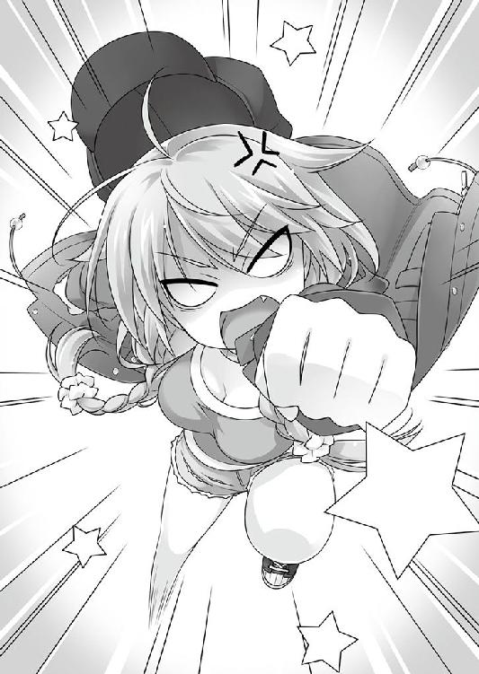
何たることか、もはや少女は一個の怪物だ。牙を剥き出しにして、キミに襲い掛かってくる！
死力を尽くして戦え！ 敵を皆殺しすれば、平和が訪れる。普遍の真理だ。キル・アンド・ピース！ それとも、キミは無謀にも防戦一方がお望みだろうか？ 速やかにこの場を逃げ出す、でもいいだろう。
少女は、生命点一〇点、攻撃点は素手なので一点だ。戦えば何なく勝てそうだぞ。ダイスを二個振って、戦闘を開始せよ。
彼女を退治できれば／４１９─■■■■ へ行け
彼女に負けても死ぬことはない。そう、死ぬことは......／６１５─■■■■ へ行け
敢えて防戦一方を選ぶとすれば......争いを是としない君の心根は、きっと美しいものだろう／５９８─■■■■ へ行け
回れ右して、勢いよく路地を飛び出そうとするのなら、細心の注意が必要だ。この辺りの路地は入り組んでいて視界が悪い。慌てていると、思わぬ目に遭うかもしれないぞ／６４２─■■■■ へ行け
少女に拘わらずに立ち去るのなら／１９１─■■■■ へ行け
平和じゃないよ！
戦闘なんて選んだら、あっという間に警察のお世話になった上、田舎ネットワークの力で一族郎党が村八分確定だ。ある意味、平和だと言えなくもないが。
巫山戯た『本』の記述の中で、一條が引っ掛かったのは、一番最後の選択視だ。
少女に拘わらない、という選択視が依然として居座っている。あられもなく逃げ回りながら、むしろ警戒を強めた。
ここは、まだ死神の掌中らしい。
いよいよ危険な一手が接近しているのを、本能で察していた。全身の産毛が逆立つ。提示された選択視は五つだが、拘わらない１９１以外で最も安全そうなＰＧは、戦って勝ち抜ける４１９だった。
流石に、一応助けようとしてる相手を倒すというのは、どうなのか？
それに、万一負ければ６１５。死ぬことはないと著かれているのが、どう見ても撒き餌にしか思われない。
最も危うそうなのは、回れ右する６４２。少女から離れる行動の筈なのに、拘わらない１９１とは別の選択視になっているのも怪しいし、追い掛けられたら思わぬ目にと、但し書きまで付いているのが最悪だ。
死神の間近にいるのなら、一見安全そうに見える選択でも、迂闊に選ぶべきではない。
『本』は当然ながらそしらぬ顔。冷酷非情に記述を進めていくだけ。
選ぶのは、どこまでも一條自身なのだから。
彼女に近づくには、どうするべきか？
まだ死神への接近を諦めていなかった。往生際が悪いのが一條の信条である。
近づけば『死ぬ』のだから、近づかないことだ。
ケダモノの如く飛び掛かってくる少女を前に、刹那の思考の末、選択視を選び取った。
こけつまろびつ身を躱しながら路地を飛び出すと、紅い布を見せられた猛牛よろしく、我を忘れた少女が後ろから追ってきた。
危険は承知の選択だった。
「あ──」
逃避行はほんの数秒で終わる。
路地から通りへ飛び出した瞬間、それは起きた。
右から左へ走り去っていく車が、一條と接触したのだ。
奥志麻駅を中心にした一帯は、奥志麻市内、つまりはＴ県で一番開発の進んだ区域だ。
奥志麻市は典型的な地方都市。拓けていても華やかと言うには及ばず、賑やかではなく大勢が往来する、という表現がよく似合う。
そんな、まことに田舎らしい中心街の外れに位置する柄杓横町に、『アンブロシウス』というバーがある。
「ふわぁぁぁ〜〜〜」
右手に箒、左手にちり取りを持って、店の前で大欠伸するのは──叔美であった。
寝ぼけ眼を擦り、起き抜けの背筋を丸めたまま、店の前に出る。
春でもないのに眠気が晴れない。ここしばらく、キチンとした寝床で朝を迎えているので余計にだ。その日暮らしを遣り繰りしてきた叔美にとって、目を覚ますと決まった屋根のある日常は、慣れない上に調子が狂う。
肩でも凝ったような居心地の悪さに、張りのない舌打ちを一つ。それから、中天に差し掛かる前の太陽を見上げる顔は、日向で居眠り中の犬みたいに気が抜けていた。
「ちっ......まだ一一時過ぎ......ってとこか」
体内時計は、誤差五分以内の正確さだ。『時は食い物なり』──が叔美の信条である。
学校も試験もない、住処も持たない身の上が、気ままなフリーマンで「ウラヤマシス」と思うのは素人の浅はかさ。例えば、野生動物の生態に、エネルギーの無駄遣いは禁物だ。狩りで得られる獲物以上のカロリーを消費すれば、待つのは飢え死になのだから。
後ろ盾のない我が身一つだからこそ、あらゆる状況の変化を敏感に嗅ぎ分け、素早く的確に動かなければならない。叔美はこれまで、そのセオリーに従って生きてきた。それなのにこの一週間は、何もかも忘れたような長閑さだ。
「......こんな生き方してると、すぐにナマっちまうよな。ったく、腹に肉でも付いたら、どうしてくれやがるンだ」
山猫が庭先で飼われるようになったら、こんな気分だろうか。
どうでもいいことを考えながら、いまいち具合の良くない肩を揉む。もう一度欠伸を噛み殺してから、この一週間続いている起き抜けの『仕事』に手を付ける。
最初はナイロン箒で店の前を払う。それだけでは時間が余るので、両隣の店の前まで綺麗に掃き清め、ついでに向かい三軒の前も手際よく掃除した。
次は、軽く水打ち。水を打つ時は水量に注意しろと、厳重に言い含められていた。奥志麻は下水絡みで水道代が高い。些細な経費も積み重なると馬鹿にならない。細かな節約が日々重要──これは、如何にも細かそうなオーナーからの、一〇〇％受け売りだ。
柄杓横町の路地は、狭い上に入り組んでいる。柄杓の読みは、「ひしゃく」ではなく「えしゃく」。すれ違う度に会釈する丁寧な人たちの住む土地、という世評が訛った名前だという説と、その昔には名水の湧く井戸があり、水を掬う柄杓からきた名だ、という説がある。どちらも話半分の昔語りだ。
路地には看板が幾つも並んでいた。夜には色鮮やかというよりも艶めいたネオンを瞬かせるが、昼間は火の消えた提灯のように息を殺してる。地元名水のおかげで小料理屋が集まってきたという昔日の面影か、今日でも界隈には飲食店が多い。
柄杓横町は、地元では「繁華街」──いわゆる、一八才未満お断りの成人指定領域にカテゴライズされている場所だが、厳密には違う。いわゆる繁華街的店は、一つ通りを挟んだ向かい側の通りに集まっている。人の出入りも、断然そちらの方がいい。
柄杓横町に軒を並べているのは、昔気質で通人好みのシブい店ばかりだ。今時「柄杓」なんてクサい名前の通り、古式ゆかしき伝統の息づく場所である。
もっとも、彷徨えるエトランゼの叔美には、伝統も只のオンボロも区別がつかなかった。
つーか、食えない物はどーでもいい。
「あららん、叔美ちゃん、おはよう」
斜め右向かいのカラオケスナック「蒲田」のママが起き出してきたので、店の前に水を打ちながら挨拶を返す。
「うー......おはよ、面倒くさい。ＯＫＡＭＡ田......さン、昨日も遅かったの？」
叔美にしては言葉尻が柔らかいが、意識してではなかった。初対面で揚げ豆腐を貰って、熱々の大豆とスダチの風味にやられて以来、何故か腰が低くなる。彼女自身途惑っていた。ママの人徳というべきか、それとも、野良猫だって餌付けされる、と言うべきか。
そろそろ正午にも近い時刻。「おはよう」は流石にどうかと思ったが、この界隈には深夜営業の店が多いので、時間感覚がズレている。
郷に入っては郷に従え。旅暮らしの長い叔美にとって、土地に倣うのは下手な外交問題を引き起こさない為の初歩中の初歩である。
「ノノノ、ＯＫＡＭＡ田さん、じゃなくて蒲田さん。女の名前は間違っちゃダメよ」
小粋に指を振り振り、ついでに腰を色っぽくくねらせる。
「......うーす」
「いつもウチの前まで掃除してくれて、ありがと」
「投げキスはやめて、目が醒める」
「あらあら、寝ぼけ眼さんなのね、叔美ちゃん。まだ、ここの生活に慣れないの？ ウチなんか、昨日は三時ぐらいまではやってたわよ。でもこーんなに元気！」
「あの布団っていうの、結構ヤバい」
寝床が柔らかすぎて目が冴える。動物は慣れない環境では緊張するのだ。
「枕が変わると眠れないの？ 繊細な女の子って可愛いわ。素敵なレディの素質があるわよ」
「『れでぃ』って食えるの？」
「もうバカみたいなこと言って。食べられるのは女の方って相場が決まってるわよー。それとね、これもそう。大根の煮物。煮物ってわかる？ まあ、お国柄じゃないかもね。碧流ちゃんによろしくね」
「うー」
スキンヘッドの厳つい自称女性の蒲田がしなを作って、まだ上手く頭の動いていない叔美に鍋を渡していった。二日に一度は、何かと理由を付けてお裾分けをくれる蒲田は、叔美からすれば天使も同然だ。髭の剃り跡が残ったエンジェルがいるのなら、だが。
それはともかく、鍋を持ったままだと掃除の邪魔だった。
「先に置いてくるか」
叔美が店内に戻ると、濡羽色の長い髪の少女がカウンター席にいた。
叔美よりも、ほんの少し年上だろう。人目を惹く目鼻立ちは、麗しい花の華美ではなく、怜悧でどこか近寄りがたい。すらりと伸びた手足。背丈は、叔美よりも随分高かった。ごく普通にそこに居るだけで、オーラのようなものが駄々漏れていた。
叔美が山猫なら、向こうは血統書付きのシャム猫といった風情である。
「......ちっ」
と、叔美は聞こえるように舌打ちした。朝からロクでもないのと顔を合わせてしまった、と。
カウンターのシャム猫は、この店のオーナー、碧流。端的に言って、一番偉い群れのボスだが、とある悪癖を抱えている。
「朝一番なのに随分眠そうだな、キミは。従業員の分際で身の程を弁えない輩だ。一睡もしないで働くように」
しれりとした横顔から、いきなり棘が飛んできた。
「朝一番からご挨拶だな、この性悪！」
叔美も相当だが、碧流も劣らず口が悪い。この若きオーナーのスカートの下に棘付き尻尾が生えているに違いないと、叔美はこの一週間で確信していた。
見た目が清楚な美少女然としている分、碧流の毒舌が与えるダメージは大きく惨い。一部の特殊な嗜好には需要があるかもしれない。
叔美はといえば、見た目程度で恐れ入ったりしなかった。
「見りゃーわかンだろ。眠いンだよ。誰かが、つまんねーこと手伝わせてやがるからな」
「見ていて思うが、キミはスジがいい。私の手駒としてこき使われるのに向いている。望むなら、死ぬまで消費してやらないでもない」
「アタシは、雇われてるわけじゃねえ。人見てもの言いやがれ」
実際、叔美は万事に手際がいい。掃除に限らず、物事は勘所を押さえれば、上手く遣り繰りできる。叔美の生きてきた世界は、もたついていると生き馬の目を抜かれる厳しいところだ。自然と生き延びる勘が身に付いた。
今もオーナーに毒を吐く傍らで、箒とちり取りをテキパキと片付けて、起き抜けの一仕事を終わらせる。
『アンブロシウス』の従業員は、全部で三人。碧流と夜から出てくるマスター、それにもう一人。叔美を頭数に加えると四人だ。片手で足りる。一人あたりのやるべき事は多いが、こぢんまりとした店なので、一つ一つの仕事量は多くない。
誰の趣味なのか、店内はこの界隈で珍しくシックな洋風。田舎のバーらしからぬ、大時代的な風格すら漂う。
叔美にしてみれば、「ボロっちい」の一言で一刀両断なのだが。
碧流は、カウンターに軽く肘杖をついて、面白そうに叔美を見ていた。ニヤニヤ笑われているみたいで、癪に障る。
殊更肩肘張っているようには見えない碧流だが、姿勢がいいのですらりと一本筋が通って見える。いつもなら畏まったヤツと笑うところが、一瞬見惚れてしまった。
カッコ良かったのだ。
「ンだよ......珍獣扱いすンな。金取るぞ、見物料」
魅入っていたのがバレて、これ以上いい気になられてもプチムカつくので、ワザと険のある顔で右手を突き出す。お代をお寄越し。
相手もさる者で、風に柳と意に介した様子もなかった。
「言いがかりで賠償するほど、私は甘くないぞ。見てるのは、オーナーの仕事の内だ。新入りの奴隷がどの程度使えるか、計らなければならないだろう」
「............オマエ、絶対本気で言ってるよな」
「そう。私は、何時でも何処でも本気一二〇パーセントだ」
天上天下に隠すところなしと言いたげな碧流を横目に、叔美は溜息を吐きたい気分というものを久々に思い出した。果たして何年ぶりだったか、忘れてしまったが。
「......今日でかれこれ一週間。いくら何でも、そろそろわかったんじゃねえのか、そっちの目玉が節穴でなきゃあな」
「口の減らない従業員だな、キミは。オーナーに対する口の利き方を後で教えてやろう」
「口の悪さはテメーほどじゃねえよ」
肩が凝りそうにお堅そう、という第一印象をイヤというほど裏切って、碧流は性格が折れて曲がっていた。外見は大人びているのに、気が短くて舌には棘が生えている。そのクセ、妙に真っ直ぐで譲らないところがあって複雑怪奇だ。
一言でいえば、叔美にとっての碧流は、得体の知れない極めて変な女だった。得体の知れない度なら自分も負けてはいないが。
この変わり者オーナーは、毎日学校とやらに出掛けている。昼間顔を合わせなくて済むので平和だ。今日は残念ながら休みの日らしく、朝からガッツリ家にいる。叔美も負けず嫌いなので、顔を合わせると角突き合わせてしまう。
世間では、娘を持つ父親も似たような扱いをされるのだと、以前噂に聞いたことがある。叔美は、父親についてほとんど憶えていないので、いまいち実感は湧かない。
「働け、さあ働け。死ぬ気でやらなければ、お給金を出さないぞ。ただ働きだ。そうなると嬉しいな、主に私が」
「だから、好きで雇われてンじゃねえよ！ ......監獄にでもいる気分だ」
「こっちも好きで雇ってるんじゃない。忘れるな、キミには『貸し』がある。山より高くて海より深い。『働かざる者食うべからず』。文無しは金持ちの奴隷になるのが道理だ」
冷ややかに上から目線で笑われて、叔美は結構ムカついた。
「歌詞？ 菓子？ 華氏？ キーーーー！ アレは、アイツが勝手に事故ったンだよ！ 自業自得をアタシに押しつけンな。そういうのはな、えっと......責任テンカって言うンだぜ！」
「勝手だろうが自業自得だろうが、傍にいた以上、アレが怪我をした責任は、残らずキミに背負ってもらう」
「何だよ、そのえンざい！」
「違う、私決定だ」
「もっと最悪だろうが!!」
手ずから緑茶をマイ湯飲みに淹れながら、碧流はしれりと述べていたが、要約すると「冤罪だが私は一向に構わん」と言っているだけである。
目が真剣だった。ちょっと怖い。
叔美は口惜しそうに「むぐぅ」と低く唸った。口先で後れを取るとは思わないが、『貸し』──実際に負い目がある。ハンデが重い。
「アレを轢き逃げた『犯人Ｘ』にも、いずれ然るべき報いを与えてやる。それに比べれば、私の目の届く範囲で働けば許される、キミは幸運だ」
死刑のところをシベリアに送って我慢します、と言われてる気がした。限りなく本気らしいので、流石の叔美もドン引きである。
「ところで、キミも飲むか、お茶だが」
「何でもいいけど、タダなら貰う」
「お客には有料だ。従業員なら、今日のところはタダにしてやろう」
さて。
アイツ、とは一條のことである。碧流こと千里碧流は、一條の姉だ。
碧流は、先代の主人......彼女の祖母から店の権利を引き継いで、この『アンブロシウス』のオーナーになったとの事。といっても、まだ学生の身分なので、マスターは別に雇っている。
「さっき、表で蒲田さんと楽しそうに会話が成立していたな。キミにしては珍しいが、まあ感心だ。一人の働く者として、常日頃から営業努力を忘れてはならない。一言でいうと、笑顔だ」
「笑顔なンて、食えもしねえぞ」
「......キミは、何かというと食い気だな。目先の饅頭よりも明日来店するお客様だ。従業員として接客の心意気を忘れないように」
「全然イミフだけど、オマエがすっごく偉そうなのはわかる」
「実際偉い。オーナーだ。キミ流に言うと、部族の長だな」
「どうして部族がアタシ流なンだよ!?」
「お茶の淹れ方も知らなかったから、さぞかし山奥に住んでいたんだろうと思っただけだ。違ったのか？ キミの実家の方では、大きなイノシシが山の主とかじゃなかったか？」
「ねえよ！」
主はイノシシではなく大きくて片目の熊だった。が、口を滑らせたらバカにされそうな気がしたので、悪態を吐きたくなるのをグッと我慢して黙っておいた。
目を合わせて導火線に引火しないよう、視線を何処へともなく彷徨わせる。
叔美が『アンブロシウス』に居候し、邪悪女王の世話にならざるを得ないのには、海よりも高く山よりも深い理由──『貸し』のせい、だ。
（──ヤバくなったら、さっさと逃げよう）
固く誓っているのだが、あっという間に一週間が経ってしまった。平穏無事かつほどほどに忙しく慌ただしい日が続いている。
いいのか、これで？
そんなことを思わなくもない。こんなに長く、一つの場所に留まった経験は、叔美にはほとんどなかった。周りがこれほど騒がしいのも、だ。
何年も前に故郷を出て以来かもしれない。
「悔しかったら、身の上話の一つでもしてみろ。得体の知れないキミみたいな生物を黙って置いておく寛容な私に、無様に這い蹲って慈悲を請えば、いいことがないかもしれないしあるわけがないかもしれない」
「結局いいことナシじゃねえか！ 誰が教えるか」
「そうか」
もっと詰め寄ってくるかと思えば、碧流は予想外にあっさりと矛先を引っ込めた。
叔美の方が眉を顰める。
自分は得体が知れない。正解だ。なのに、この碧流は、正体が気にならないのか。
「安心しろ。問い詰めたりはしない。所詮、他人の事情だ。どちらにしても、キミのしでかしたことの責任は取らせるが」
「だから、やったのはアッチ側！ アレ、実は頭のネジが緩ンでるのと違うか」
「その暴言は許せない。今日は昼食抜きにする」
怒りスイッチを押すと、即座に罰が飛んでくる。
「この外道......っ！」
それにしても。今回は、我ながらどういう気まぐれだろう。
自分でも予想外の長居になってしまった理由は、わかっている。
この一週間、何事もなかった事に納得がいっていないのだ。
（──しばらく居ろって命令したのは、そっちだからな。どーなったって知らねーぞ）
お茶を飲み終えた碧流は、湯飲みと急須をキチンと片付けてから奥へと向かう。店の裏側と二階は、そのまま一條と碧流の自宅になっている。
「アレを見てくる」
「アタシも行く」
意識するよりも先に、そう応えていた。
深い闇。
見通せない黒の奥から届く、声を聞く。
──そう、だから、いつか貴方の『フォティゾ』を......。
続きは、消えてしまってよくわからない。
永遠に手が届かない。
「──どこだっけ」
天井を見ながら、ボヤく。目覚めて最初に目に入るものに馴染みがなかった。一〇秒程考えてから、自分の部屋なのだと現実を理解する。
一條は、ベッドからのそりと緩慢に上半身を起こした。
奥志麻に帰ってきてまだ日が浅いせいか、ここが自分の部屋という実感は薄い。親戚の家にお泊まりにきているような印象が拭えない。
そんなことに頭を使っていたのも数秒だ。
過ぎたことは振り返らず、考えても詮無いことは悩まないのが、一條の生き方である。
一年ほど前、とある出来事がキッカケで、千里一條は『本』に取り憑かれた。
その時に負傷し、療養の為に故郷を離れていた。回復に伴ってつい最近帰郷したのだが、自分の部屋のベッドにもしっくりこない。
「ま、そのうち慣れるんじゃないかな」
憑かれる前と後で、一條の『人生』の何かが、劇的に変化したのだろうか。
「過ぎたことは過ぎたこと」
過去に思いを巡らせるような、らしくないことは途中でやめた。
自分にしか見えない『本』が一冊増えたところで、頑固にして逞しい世間という川は、休むことなく蕩々と流れていく。変わるものは変わるが、変わらないものは変わらない。
「おっこらしょっと」
お年寄りっぽい掛け声で、一息に起き上がった。
身体に痛みは残っていない。十分に動くことができる。本当なら、もう数日早く復帰できたが、碧流が完治まで寝ていろと譲らなかったのだ。
碧流は一條の体調管理にはとにかく厳しい。どれぐらい厳しいかというと、逆らって動き回ろうとすると、ベッドに縛り付けられた上に足を切り取られそうなくらいだ。
彼女にしてみれば、一年前の怪我の記憶がまだ新しいからなのだろう。
恐ろしいので、大人しく今日まで療養していた。学校も休んだ。一年ぶりの復学早々、一週間も病欠するのはかなりバツが悪かったが。
住み飽きたベッドから出て、思い切り伸びをしてから、景気よく服を脱いだ。
「取りあえず、着替えておこう」
全部脱いだところで、
「............」
音もなく扉が開いて、碧流が立っていた。
着替え途中の一條とバッチリ眼が合う。猛犬に遭遇した猫みたいに毛を逆立てて、一瞬で耳の先まで真っ赤になった。
すぐ後についてきていた叔美がポツリと一言。
「肉、足りてねえな」
「おお大馬鹿者ぉっ!!」
一瞬遅れて、ぶん殴るような勢いで扉が閉まる。
開けたのは僕じゃないのに、とか思ったりもした。
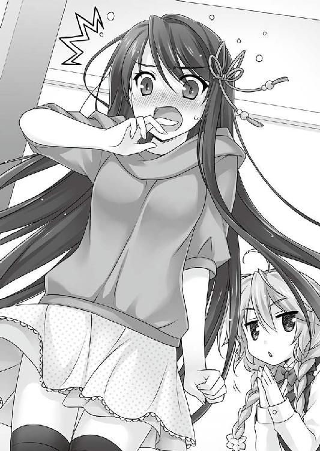
おかしな二人組が歩いていた。
奥志麻駅付近の、如何にも地方都市らしいシャッター街のアーケードを抜けて、南へ。
地元に詳しい歩き方ではなかった。どこかを目指して歩いている様子とも違う。行く先には迷っていたが、歩みはしっかりと躊躇いがない。明確な意図があるのだ。
「どう？」
「..................」
「無駄口叩かずに捜せ？ 無口なクセに一言多いヤツ」
ぶっきらぼうに皮肉を付け足した少女と、やたらと長身の男の二人組。
奥志麻のような長閑な地方都市には似合わない、奇矯な二人であるが、かといって大都市なら似合うかといえば、それも怪しい。
片方は長袖にハーフパンツという身軽な恰好の少女で、場の浮き具合ではまだ幾分かマシだ。もう片方はどこから見ても目立つ男だった。長身で、隣の少女とは頭二つ分ほど違っている。大凡二メートル近い。それだけで十分人目を惹くが、ぶ厚いコートをぞろりと着込んでいた。コートは隙間なくピッタリ合わされ、立てた襟も閉じている。帽子を深く被っているせいで、他人から見えるのは、鍔の下から睨んでくるような眼光だけ。
端的に言って、怪しすぎるコンビだった。
「どうやって捜す？ 一週間はゆうに経ってるわ」
「............」
男の声は蚊が鳴くよりも小さいが、少女には聞こえているらしく、会話が成立していた。
「ここへ逃げ込んだのは間違いない。問題はここから。アテはある？」
「..................」
「ないか。ないよね。どうするか」
二人とも考えるのに夢中だったからか、ぼさっと突っ立てていた長身の方が、前から来た自転車と接触した。
倒れる自転車。微動だにしない長身コート。道路にバラ撒かれるタマネギとジャガイモ。
中心街を離れれば、田畑が多く残されているのが奥志麻市だ。地産の野菜が置かれた無人販売所も点在するが、昨今の不景気と不人情のアオリで次第に消えつつある。
「おい、テメェ、どこ見てやが......ひ、ひぃい」
自転車を漕いでいたオッサンは長身コートを睨み付けるや──
何かにビビって、荷物もそのままに奔って逃げた。
未だ思考中なのか微動だにしない長身コートを余所に、小柄な少女がジャガイモを一つ拾って、しげしげと眺める。
「あーあー、もったいない、もったいない」
「..................」
「私に訊く前にちょっとは自分で考えろ。......まあ、虱潰ししかないでしょうね。ヤツが居るなら、必ず騒ぎが起きる。それを捜せばいい。正直、昼間は出歩きたくないんだけど」
「..................」
男は、異論を唱えるように口元を歪めた。
コートの襟で隠されていたが、唇の隙間から覗いたそれは、間違いなく、まるで犬歯を思わせる大きく鋭い牙だった。
「いや、目立つからじゃなくて......見てるだけで暑苦しいから、アナタのコート」
「まったく、キミはいつまで経っても考えがなさすぎる。もっと思慮というものを身に付けるべきだ。そうやって落ち着かないことばかりしているから、すぐに怪我をする」
「こっちへ来て怪我をするのは、初めてじゃないかな」
「......帰ってからはな。一年前だって......いや、それはいいが。とにかく、キミにはあるべき熟慮が、警戒が、注意深さが、怖れが、足りていないんだ」
「うん、はい、まあ、そうです」
ちゃんと着替えた後で、怪我が治るまで先延ばしにされていた碧流の小言を、ここぞとばかりにまとめて聞かされることになった。
それもこれも、あの日の事故──叔美を助けた（？）日の出来事が原因だ。
一週間前。
取り上げた『クリームパン』に釣り上げられた叔美が襲い掛かってきた顛末には、一言でいえば、間抜けな事故というオチがついた。
通りへ飛び出した瞬間、一條は車に引っ掛けられたのだ。
非道い話もあったもので、ビビった車はそのまま一瞬も停止せず、遥か彼方へ走り去っていった。いわゆる轢き逃げ？ だが、一條的には、相手の態度に感謝した。
やむなくとはいえ、ほとんど狙って飛び出したのだが、まさか相手が車とは......。大事になっていれば、相手にとっては迷惑どころではなく、その後の人生を左右してしまう。
非道い話だったのは、一條の方だ。
（......すみませんでした、運転手のひと）
恐慌して走り去る車のバックを眺めながら、胸中で手を合わせる。
誰にとっても被害が最小で済んだ結果に、改めて胸を撫で下ろした。
一條のハタ迷惑な行動は、叔美を逃がさない為だ。
拘われば１４に、死に近づいていく。話し掛けただけでも危険が迫ってくるのだから、危険物にも程がある。
死んでは元も子もない。自分からは近づけない。では、どうするべきか？
一條の出した答えは、不動の山の如く動くことなく、相手の自主性と善意に付け込む
──だった。
叔美から近づいてきたのなら、こちらからは近づいた事にはならない。自分で行動を選んでいないのだから、その分、１４への到着を先送りできる──という理屈だ。
屁理屈っぽいが。
ついでに言うと、真っ当な性根の人間であれば、自分のせいで誰かが怪我をしたと思い込んだ時、後ろめたさと動転とで次の行動は大凡決まってくる。「その場を動けなくなる」か、「卑怯にも見捨てて逃げる」かの二者択一。
叔美は、逃げる方を選ぶような悪い娘には見えなかった。
「おい、生きてるか!? 死ンでねえのか!?」
そして、事情のわからない叔美は、一條の目論見通り、「自分が追い掛けたから飛び出して怪我をした」と思ったのだろう。案の定というべきか、真っ青になって、路上に倒れ込んだ一條に駆け寄ってきた。
これもまた、相当に非道い話である。
後でどう謝ろうか、いっそ謝らない方が平和だろうかと思案しつつ、狼狽する叔美の百倍も冷静に、文字通り身体を張った選択の結果を確かめる。
６４２─■■■■
ラッキーだったな。キミは車に引っ掛けられはしたが、最悪の羽目には陥らなかったようだ。
ゴロゴロと転がってから、地面に大の字になる。キミを引っ掛けた車は、残念ながら彼方へと走り去ってしまった。まったく、事故を起こして謝罪の一つもないとは......。
さて、細かいことはどうでもいいとして、だ。無事かどうかは、まだわからないぞ。
上体だけ起こして、身体をチェックしていく。手足は無事に付いている。だが、右足が痛い。下手をすると折れているだろう。
なるほど、痛い筈である。
全ては一條の計画通り......のワケはない。『本』のおかげで、運否天賦とは言わないまでも、出たとこ勝負だったのは否めなかった。
選択視が見えても、一寸先は箱の中。開けてみなければ、中身の『運命』はわからないのだ。
体力・２０／１８
状態・負傷／右足捻挫
ステータス欄を見てみると、状態が変わっていた。体力も減っているが０にはなっていないから、このまま墓の下には直行はしなくて済みそうだ。
ＰＧ６４２の記述の最後には、幾つかの選択視が。
「..................」
ほんの少し考えて、その中から「碧流に連絡を取る／１７２」を選んだ。
またページが捲れる。次のＰＧの記述に目を通すと、『本』を閉じた。
選び終えた『本』を閉じてしまうのは、一條の癖みたいなものだ。さっきまでは１４の迫る気配にせっぱ詰まって、そんな余裕はとてもなかった。
閉じられた『本』は、大人しく消えてしまう。
──《分岐点》をやり過ごせた、ということだ。
一條は安堵の息を吐く。肩から一気に力が抜けたのがわかった。自分で思っていた以上に緊張していたらしい。やろうと思えば、このまま『本』を読み続けられるが、その手の意味のないことからはとっくに卒業している。
重要な《分岐点》がやって来れば、この『本』は自分から現れて教えてくれる。
そういう仕組みだ。
変わり映えのない毎日を過ごしてきたという自負のある一條の前にも、平均して週に一度はそんな機会がやって来た。
人生を劇的に変化させる選択視は、得てして地味な見た目で、誰にも気づかれない内にすぐ傍を通り過ぎていく。立て続けに現れたりすることは滅多にない。さっきまでのような状況は、極めて異例で特殊なのだ。
携帯で『アンブロシウス』に連絡して、それを叔美に手渡したところで、本格的に足が痛み始めた。いよいよ動けない。
「おい、これは何だ!?」
「電話の相手に状況を説明して」
「オマエ、結構な怪我なンじゃねえのかよ!? ちっとは焦った顔しろよ!!」
その後、叔美と碧流の間で要領を得ない遣り取りがかなりの時間あって、痛い足を抱えながらことの進展を待つ羽目になった。苦労惨憺の挙げ句、タクシーに乗った碧流がやってきて、一條が病院に運ばれたのは、たっぷり四五分は後のことだ。
ちなみに、例の『クリームパン』はというと。
「うん、勝ちとった食い物はすっげー美味い」
迎えを待っている間に、叔美が、まるで自らが仕留めた獲物のように、持ち主に何の遠慮も断りもなく、欠片も残さず平らげてしまった。
「さよなら、クリームパン。キミは『運命』を果たし終えたんだね......」
......当時の状況を回想し終えても、碧流のお説教は続いていた。
付き合いきれないからか、叔美はとっくに避難して姿を消している。
もうほぼ治った足を見て、ふと思う。
叔美と行き遭う直前、巫女さんに詰め寄られた時も『本』は現れた。あの時、「逃げ出す」ではなく、「話し掛ける」を選んでいたら、そして、予想通り川に落ちていれば、叔美と遭うことはなかったかもしれない。
過ぎたことは過ぎたこと、だ。
あったかもしれない分岐の先を想ったところで、何の意味もない。一條の信条にも反している。
「キミのことだから考えはあったんだろうが、無茶をするのは勧めないし、無茶をしたところで得るものはない。まして、その結果がこの様では......」
前を向き直ると、碧流が大きく肩を上下させていた。お小言も一段落ついたらしい。
「過ぎたことは、まあいい。今の話だ。......一週間経った。キミのたっての願い通り、あの子をこの家に置いた」
「うん......その、ありがとう」
「姉弟で、礼はいらない。それよりも、キミも復帰した。そろそろ事情を説明してほしい」
「実は......その......叔美が、おかしくて......」
「笑い話が得意なタイプには見えないな。イヤまあ、わりと笑えるヤツには違いないが」
「そうじゃなくて、えっと......そう、変だったんだ」
事故の日から今日まで、大ざっぱな説明しかしてこなかった。一條自身、何をどう説明すればいいのか、見当がつかなかったからだ。一週間、ベッドで療養しながら考えていたが、やっぱりこれっぽっちもわからない。
仕方ないので、あの日起こった出来事を、順番に見たまま説明することにした。一條の『本』のことを、姉の碧流だけは知っているのだ。
一通り説明が終わると、黙って聞いていた碧流は、形のいい眉を思案顔に顰める。
「なるほど、オカシイな。オカシイというより怪しい。そんな妙なものは、私にしたって聞いたことも見たこともない。勿論、私には『本』も見えないが」
「あれは......一体何だったのかな？」
「キミにしか見えないことを、聞かれてもわからないよ。だが、引っ掛かる。その『見開きの１４』を、キミはどう思った？」
「それは、印象の話？」
「印象は大事だ。キミは、世の中を本として見る。普段と違っていたのなら、キミが意識はしていなくても、何かを感じ取ったということかもしれない」
「......怖かった、かな」
怖い。恐ろしい。避けがたい。逃げ出したい。
アレは、よくないモノだと。
正体はまだ何一つわからないが、その事実だけは明白で揺るがない。
「......わかった。キミは怪我が治ったばかりだ。また不用意に危ういことをしないように。叔美には、私から訊いてみよう」
いっそ本人に問い質そうかと思っていた矢先に、早速釘を刺されてしまった。
「でも......僕の方が安全じゃないのかな？ 何かあれば、『本』が現れるし」
「キミが不安に思うのは判るが、おそらく大丈夫だ。この一週間、何事も起こってないだろう？ キミが見た『１４』を疑ってはいないが、おそらく、一番危険なところは去ってしまったのだろう」
碧流の言う通りだった。
一條も、叔美を連れ帰った後、１４に備えて身構えていたのに、ずーっとベッドで寝ていたせいか、この一週間、『本』が『現れる』ことはなかった。
１４は去ってしまったのか？
台風のように、自然に通り過ぎてしまったのだろうか。
腑に落ちないところもあるが、『見開きの１４』なんて異常がいつまでも留まっているのは、別の意味で不自然ではある。仮に、そんな異常が間近にあるのなら、とっくに大きな事故や事件が起きていなければならない。
「わかりました。叔美のこと、お願いします」
いずれにしても、だ。怪我が治った以上、猶予も終わり。
叔美をどうするべきか。本人次第のところもあるが、この先を考えなければならない。いつまでも、碧流に頼っているわけにはいかないのだから。
一條の内心を見透かしたように、碧流は言う。
「休息は終わりだ。キミにも遣るべき仕事がある。起きられるようになったことだしな」
下の階の店内で叔美が待っていると、碧流が下りてきた。
どういう理由か、あからさまに不機嫌そうに眉が寄っている。クールそうに見えて、碧流は顔に出やすいタチなのだ。特に弟絡みは。
「一條のヤツは？」
「すぐに下りてくる。今日からは仕事に復帰する」
叔美が『アンブロシウス』に留まるよう仕組んだのは一條だが、そんな事情を知る由もない彼女からすれば、ことの原因は碧流にあった。
先週、『クリームパン男』こと千里一條は全治一週間の怪我を負った。それは困る、と横から口を出したのは、碧流である。この『アンブロシウス』の従業員は、実のところギリギリだ。一條が欠けたままでは回らない、と。
知ったことか。
吐き捨ててやりたいところだったが、一條の怪我の大元は自分なのだから、借りを作ったまま逃げ出すのは、後ろめたかった。
「『働かざる者食うべからず』、だ」
叔美の退路を罪悪感で断ってから、碧流が付け加えた。
「何だよ、それ」
「働く者は食う資格があるということだよ。キミはここで働く。借りを返す。その代わり、ここにいる間は私が食わせる。理に叶っている」
深く深く悩んだが、一條が復帰するまでという約束で、叔美は『ここ』に残る約束をした。
それから、目まぐるしく一週間が過ぎている。
「眉間にシワ寄せて、えらく機嫌わるそーだな」
「ああ、機嫌は良くない。主にキミのことでだ」
言いにくいことでもハッキリと言うのは、叔美の認める碧流の数少ない美点だ。
「オマエの機嫌とか、知ったこっちゃねーけど......アタシが原因だってンなら、さっさと追い出せばいいンじゃねーの？」
「自分を追い出せと言うのは、中々逞しいな」
「そもそも、アタシは得体の知れないヤツだろ？」
叔美にだって、小さじ一杯分くらいの一般常識はある。それに沿って考えるなら、生まれも素性も判らない正体不明を、あっさり家に引き込んで働かせる碧流や一條は、頭の何処かが致命的に壊れているんじゃないかと思えた。
「そうは、いかない」
碧流の表情は変わっていないが、腕を組んで叔美を見下ろす態度は、心底残念そうだ。
「『借り』があるからというだけじゃない。キミみたいなハグレ者を拾うのが、我が家の家訓であり、代々の『仕来り』だ。キミを追い出すと、お祖母様の遺言に背いてしまう」
「オマエの婆さン、物好きなのか？」
「ウチは、『ヒトデナシ』なんだ」
「それは言われなくても知ってる」
「その『人でなし』じゃない。──『ヒトデナシ』だ」
開店には少し早いが、碧流は看板を表に出す用意をする。手を動かしたまま話を続ける。
「その昔、奥志麻は流刑地だった。時には、その中に真っ当な人ではないもの、つまり『人で無し』も混じっていたという。嘘か本当か、今でも『ヒトデナシ』の末裔だという者がちらほらといる。我が家もその一つだ」
叔美はキョトンとした顔で聞いていた。
「悪党かよ」
「日本語が通じないのか。学がないと将来、格差社会の壁に踏みにじられるぞ。現時点でも、私に踏みにじられているが」
「うっせー、よけーなお世話だ！ つーか、セキュリティ意識足りてねーンじゃねーの。あのな、鍵かけないで夜寝たら、身ぐるみ剥がれた上に内臓まで抜かれるような場所だってあるンだからな」
よくあるギャング映画のように、叔美は斜に構えた態度で、テーブルにドカンと腰を下ろして講釈を垂れる。
「夜はキチンと施錠する主義だから、安心だろう」
「そうじゃねー！」
「奥志麻はウチの縄張りだ。そして、ムカつくことにキミは客人だ。こともあろうに、一條が怪我をしてまで連れてきた」
「連れてきたンじゃねえ！ アタシが付いてきてやったンだ」
「どちらでもいい。順番や目に見える些末な物事の話はしていないからな。見えない成り行き──つまり、縁のことだよ」
「だいたい縄張りだぁ？ ギャングか何かか、オマエらは？」
「私たち......千里家は、まぁ、この土地を守っているわけだよ。そういう役柄なんだ。昔は、防人だとか地守だとか言ったらしい。だから、キミがロクでなしだろうとひとでなしだろうと、縁が遇ってしまった以上は、世話をする」
不満たらたらの顔でしれりと述べる碧流に、叔美は机の上で身構えたまま、口の端を釣り上げて見せる。それは不敵というよりも、この異邦人の少女が奥志麻に来てはじめて見せる、ハッキリと言って兇悪な顔だった。
「世間知らずのお嬢ちゃまが、『世の中の不幸』ってヤツをナメてンじゃねえぞ。後で泣いて謝ったって遅せーンだからな」
まるで嘲笑うように、面と向かって宣言した。
夜が来る。
日が暮れて以降が、『アンブロシウス』の時間だ。
開店は一八時、閉店は二六時。
この手の商売は水物だ。決まり事は、「概ねそれぐらい」程度しかアテにはならない。暇を持て余した柄杓横町のご老体たちが早めに遊びにくれば、時間前に店を開くこともある。愚痴を零すお客が長く居つくと、閉めるのが二八時を回ることも少なくない。
勤労学生として、一條は『アンブロシウス』でアルバイトをしている。実家の手伝いというのが実情だが、キチンと正規の時給は出るので助かっている。
一條の通う鷹崎南高校はバイトを禁止していないが、この件は極めて厄介な事案だ。
『アンブロシウス』は、界隈では珍しい古風な正統派バー。いかがわしい店ではないとはいうものの、当然お酒は出る。学生が働くべき環境として相応しいと、職員室のお歴々を説得できる自信は一條にもない。
二二時以降は店に出ないようにしているし、実家の手伝いということで、学校からお目こぼしもされているが、いつ何がどう転んで、突然バイト禁止の措置を言い渡されるか知れたものではなかった。要するに、危なっかしいサルナシ橋なのだ。
サルナシ橋というのは、Ｔ県西部にある澤谷山に、今も残る吊り橋である。葛類と木で作られた、古めかしいというよりも化石じみた代物で、谷に掛かけられた橋が風に大きく揺れる様は、今にも落ちてしまいそうで足が竦む。残念ながら、当世では風情よりも安全を重視。こっそりとワイヤーで補強されており、Ｔ県の名所の一つとして毎年多くの観光客が訪れる。
『アンブロシウス』は、業種が業種だけに給料はいい。そこいらのコンビニよりも。
世知辛い話でも、渡る世間はまずお金。人は経済原理の歯車の運命から逃れられない。
そういうわけで、一條は輝かしい『未来』への積み立てとして、今日も『アンブロシウス』でのバイトを続けている。
一條が復帰したのは、たまたま土曜日だった。学業復帰よりも職場復帰が先になった。
平日と休日前では、『アンブロシウス』の客層も変わる。平日なら職場帰りの客の息抜きが主になるし、休日前には翌日を当て込んで出てくる客が相手で、騒々しい。
都会のオシャレなバーのように、クラシックの流れる光量の低い店内で、シックにグラスを傾ける──とは行かないのが地方都市の片隅である。
店の奥には、円形の見事な大テーブルが置かれていた。持ち込んだのは『アンブロシウス』の先代オーナー、碧流と一條の祖母だ。時代がかった店内に相応しい一品は、近所の暇を持て余した長老たちの社交場と化している。三日と開けずに開店直後からやって来て、卓を囲んで世間話に興じるのが常だった。
今日も、勿論来ていた。
「おい、蘭さん、小腹が減ったわい」
「ロックじゃ、ロックをバカにしてはならんぞ！」
「それがなあ、聞いておくれよ」
還暦も過ぎた爺婆たちが若者顔負けのファンキーな恰好で丸テーブルに入り乱れる。お馴染みの地獄絵図だ。
「カシオレ、１」
一條がオーダーを持って帰ると、学生オーナーに雇われた「店長」であるマスターが無言で頷く。
滅多に口を開かない寡黙なマスターは、髪に白いモノの混じり出した初老の男性。背筋は真っ直ぐ伸びている。
一條が見る限り、「紳士」という言葉がピタリと嵌る人物だ。先代の友人で、店を継いだ碧流に手助けを買って出たということらしい。詳しい事情は一條もよく知らない。
最後まで無言でシェーカーを振り、グラスにカクテルが注がれる。
細やかで、鮮やかな色。
酒の類には詳しくない一條だが、マスターがグラスに作る一品が、ちょっとしたアートだというのは理解できる。彼の手際を眺めている時間は、帰郷してから得た、数少ないお気に入りの一つだ。
「おい、酉さん。だから、アレは、ちょっとしたミスだったと言っておるじゃろうが、四〇年も言うことか」
「三味線じゃ、三味線じゃ。ロックに決めるぞい！ ｙｅｙ！」
「もうすぐお迎えが、迎えが......ああ、窓に窓に！」
「カシスオレンジを......あー、訊いてませんねー」
注文の品を丸テーブルに運んだが、いつも通り誰もまともに聞いてないので、ひっくり返らない場所を選んでグラスを置いて大人しく引き下がった。
あの綺麗なグラスの中身が、キチンと飲まれるのを祈るばかりだ。
爺婆は騒々しいが、店の奥に集まっているので、カウンター周辺ではそれほど邪魔にならない。というよりも、ご長老たちもそこは弁えているのだろう。
都会の店と違い、客は近所の常連ばかり。羽目を外しても、度を超さないよう、距離感は慣れたものなのだ。
時間が経つ。お客が入っては出て、また入る。
その隙間を縫うように、一條と叔美は走り回っている。店が忙しくなると、一條だけでなく叔美も手伝いで入るのだ。
叔美が働いているところを見るのは初めてだった。店の制服がお仕着せみたいで、収まりが悪い。拾ってきたばかりの野良猫みたいに全身の毛を逆立てて、警戒心丸出し。触られるのが怖いみたいにお客から距離を取ろうとしている姿は、一応でもウエイトレスとは思えない。
「その......大丈夫かな？」
「オマエの姉貴がやらせてンだよ！ どうなったって、アタシは責任もたねーからな！」
不安になった一條が心配して声を掛けると、叔美はジト目で噛みついてきた。
手際はいいので、持ち方を覚えて間もないトレイを掌の上でクルクル回しながらテーブルの間をするりと抜けていく姿は、軽快な燕を思わせる。今夜の店は大入りなのに、誰にも触れもせず動いているという事実だけでも、大したものなのだ。
「そうじゃなくて。いや、そっちも心配といえば心配だけど......そういう意味じゃなくて」
「......なにワケのわかンねーこと言ってンだよ」
訊かれても、困るのだ。知らない方がいいのかもしれない。しかし、自分より相当背の低い叔美を見下ろしていると、確かめておいた方がいいかもしれないとしみじみ思う。
悩んだ末、奥からこちらを横目に見ているオーナーに、ＳＯＳの視線を飛ばした。
返事はすぐにあった。
こちらの声が聞こえていたのか、碧流は黙ったまま、厳かに首を横に振った。
「だから、何だよ？」
「......何でもない」
「変なヤツ」
首を傾げながら離れていく叔美を見送りながら、胸中で小さく頷く。
世の中には、知らなければそのままの方がいいことってあるのだ。
詰まるところ常連しかいない店内なのだが、一口に常連と言っても、真っ当な客ばかりとは限らない。むしろ真っ当な人間の方が少ないんじゃあと、一條は思う。
類が友を呼んだのか、水が低いところに流れたのかはわからないが。
「キミ、新しい子かね？ どう、キャンギャルやらないかーい!?」
ハイテンションで叔美に呼び掛けるのは、綺麗に七三に分けた髪と眼鏡の中年男性だ。通称「部長さん」。アフター５のテンションはちょっぴりおかしいが、市役所勤めのお堅い役人である。決まって、仕事帰りに寄っていく。実際には、まだ部長ではないらしいが、部長と呼ばれると幸せそうなので、皆で生温かく呼んであげるようになったらしい。
「見たまえ、この素敵な『コウジロウ』くんを！！！！！」
店の中に貼られている市の観光ポスターを指差して、強調マークが山ほどつきそうな勢いで力んでいた。
コウジロウくんとは、奥志麻市の公認マスコットだ。公募されたデザインが採用された。スダチをイメージした緑で丸い物体に短い手と足が付いている。愛らしいかどうかは微妙......というのが一條的感想だが、市の偉い人は全国区で有名にしようと本気で画策しているという。
えーーーーーと思ったが、一條は口には出さなかった。日本人的奥ゆかしさである。
「......可愛くねー」
離れた位置から横目を送っていた叔美には、奥ゆかしさが搭載されていなかった。
「えー!? 今、これがキてるのよ！ コウジロウくんの着ぐるみの隣で、『いい感じ』の衣装で、駅前でビラ配りとかどうよ!!」
「ギャー！ アタシに近寄るンじゃねえ！ アッチいけ！」
いい感じってどんな感じ？ 一條はちょっぴり想像を逞しくしたが、叔美の方は接客業にあるまじき態度で「部長さん」を今にも蹴り飛ばしかねない。
一條はそれとなく間に入って、今の内に早く行けと叔美に目で合図した。
野良猫少女は「はんっ」と鼻を鳴らして、安全地帯のカウンターの裏へと走り去った。
「何だか大変そうな新人ちゃんだねえ」
「悪い子じゃないんです..................多分」
フォローをするのも、一條の仕事の内だ。
例えば、眼鏡の女性「三輪さん」は一條にとっては知己なので、バイト先に現れるとやや微妙な気分になる相手だ。
普段、三輪さんの職場で顔を合わせる時とは、雰囲気がまるで違う。仕事中とプライベートで切り替えるタイプらしい。
「どっかしたー？」
当人は、こちらの心情などお構いなしに、のんびりした声で気楽に呼び掛けてくる。
身を乗り出してくると良い匂いがした。香水かもしれない。
同世代の女の子とはまるで違う。若さのエネルギーを失くした分、持てる熱はずっと高い。それが頭に直撃する。クラクラした。
「すぐにお持ちします」
オーダーを確認して、逃げるようにその場を離れる。
加えて言うなら、顔見知りに接客するというのは、何となく座りが悪かった。
碧流に言わせると、「仕事への熱意が足りない」ということになるのだろう。
中にはタチの悪い客もいる。
例えば、今、カウンターの端っこにいる男がそうだ。
見た目は、ハッと目を惹かれる、モデルかと見紛ういわゆる水も滴るいい男だが、中身の方は些か困り者である。
「しゅ先生」とここでは呼ばれているが、教育機関の関係者でないのは明らかだ。特定自営業の方々で、ヤバい時に呼ばれたら奥から出てくる方のがまだ幾らかは似合う。
「おお......っと、財布、忘れてきちまった。マスター、今日はツケで」
パンパンと全身をまさぐるいつものポース後ににんまり。
ちなみに、彼が財布を持っていた験しは一度もない。
流石に気になって碧流に訊ねたところ、
「アレ、いいのかな？」
「アレ、というと？」
「えっと............しゅさん」
常連だからツケというのはわからなくもないが、毎度となると話が違う。
「いいんだ。あれで昔馴染だからな。まあ、愛想良くしなくてもいいが、気分良く飲ませてやるといい。役に立つこともある男だよ」
変人ばかりが客にやってくる小さなバーとはいえ、人間模様は複雑怪奇なのだ、と一條はまた一つ学んだのだった。
「もー駄目だ」
遂に、叔美は音を上げた。
今夜は、ひっきりなしに客が来て、昨日までの倍ほども忙しかったのだ。物事には限度がある。ただでさえ不慣れな『労働』に加えて、始終店内を走り回らされて、疲弊で目の前がチカチカしていた。
店の裏に逃げ込んで、待機室を兼ねた和風の畳床に、仰向けで大の字になって倒れ込む。いつぞやの路地裏の再現だ。
「この程度でだらしがないな。忘れるな、キミは労奴だ。死ぬまで働かねばならない」
「どんな暗黒企業だよ!? そしょーすンぞ」
「......ちっ。キミは、知らないことが多いクセに、詰まらない知識だけはつけているな」
「オマエみたいなブラック女社長に騙されちゃーたまンないからな！」
上体だけ起こして一息文句を吐いたところで、叔美は如何にも弱々しく、同情を誘う態で背中を丸めた。実際に弱ってはいたのだが。
「つーか、今日はお客多いよ、多すぎるよ。こんなの初めて......もう駄目、許して」
「もう弱音を吐くのか。その程度か。ふふふ、キミという女の器も、たかが知れているな」
「──ッッ、だ、誰が弱音なンか吐くか！ アタシを舐めてンじゃねえぞ！」
「素晴らしい。では、もっと働け。美山の上で、ライブイベントがあったらしい。その帰りの客だろう。喜べ。稼ぎ時だ」
ギリギリと歯ぎしりの音が聞こえてきそうな顔で、叔美は口の減らないオーナーを睨む。
「......他に、アタシにいうことは？」
「『働かざる者食うべからず』」
「くたばれ、鬼畜生ッ!!」
腕組みして仁王立ちのまま、碧流は遠い目で窓の外を見る。
「そうとも。私は仕事の為なら、鬼にも悪魔にもなるとも。この店は、お祖母様の残してくれた大切な宝物だ。私が守らずしてどうする......ッ」
「そんなに大事なお宝なら、アタシを働かせてないで、自分でやりゃーいいンだ」
「言いたいことがあるようだな。腹を割って話を聞こう」
叔美は、矜持と体力を秤にかける。ギリギリで傾いた。
「.......................................休ませろ。一時間ぐらい」
「却下」
碧流は、何処までも冷酷非情だ。
「聞くつーたろ、さっき！」
「だから聞いただけだ。さあ、言って満足したなら、死ぬまでじゃなく、死んでも働け」
「休ませないと呪うぞ！ 呪いは怖いぞ、恐ろしいンだぞ！」
「やってみろ。私は吐いたツバは何があっても呑まない女だ」
「でも、流石に今日は大変だったし......一時間は駄目でも三〇分くらいは」
路地裏に倒れるほど空腹でも意地を張る叔美が、水の切れたアサガオみたいに萎れている。障子の影から見ていた一條の胸の深い所で何かがチクリと痛んだので、犬も食わない二人の労争に恐る恐る口を挟むことにしたのだ。
「.........珍しいな。キミから頼み事とは」
「自覚はないけど。まあ、たまにはよくないかな？」
「うん、そうだな。──キミの言うことももっともだ。三〇分の休憩を許そう」
吐いたツバを呑みまくっていた。
「おいおい、さっきと言ってること違うジャン!!」
「そういうこともあるかもしれないが、ないかもしれない。きっと些細な問題だろう」
最悪だ、このブラコンオーナー！
と扱き下ろしそうになったが、この状況で口を滑らせたら、折角の休憩も水泡に帰すという計算が働いた。叔美は、自分の宿命的とも言える負けん気の強さをグッと堪える。今夜だけだと誓いながら、不本意な敗北を涙ながらに飲み下した。
碧流はとにかく弟に甘い。本当に甘い。一條にはバレないように振る舞ってる様子だが、端から見ていれば筒抜けだ。というよりも、気づかない一條の方がヌケている。
今日だって、病み上がりの一條を何くれとなくフォローしていた。こっちの苦労には、これっぽっちも関知せずだったのに。
大体、碧流が叔美に厳しいのだって、きっと、一條に怪我させてしまったことを根に持っているからに決まってる。絶対に。
ブラコン、ブラコン、ブラコン。
呪いの言葉のように、口の中で三度唱えて、爆発寸前の悪態を我慢した。
「......ぐぐぐっ、三〇分休憩する」
「うん。復帰が一秒でも遅れたらお仕置きする」
最後まで、冷酷非情な碧流だった。
「それでは、お客様も捌けましたし、時間ですので失礼いたします」
「お疲れ様でした」
奥の部屋にマスターが顔を出して、丁寧に閉店の合図を告げた。
一條は反射的に正座して頭を下げる。正座はない、と毎回思うが、マスターの醸し出す空気に当てられてしまう。
当のマスターは、微笑ましい様子に苦笑を浮かべるわけでもなく落ち着き払い、今夜も紳士然と立ち去った。
入れ違いに、席を外していた碧流が戻ってくる。
「マスターは帰ったのか。今夜は労っておこうと思ったのに」
「そういうのは、別に気にしない人じゃないかな」
時刻は二七時を回っていた。
叔美はとっくに寝ているが、一條と碧流はそういうわけにもいかない。何かあってはいけないので、閉店までは奥の部屋で待機しているのが常だ。
碧流と二人っきりで過ごす時間は、一言でいえば、気まずい。小さな部屋で、話す話題にも事欠きながら、時間が過ぎるのを待っている。
今夜は多かった客足がようやく絶えたことよりも、重苦しい時間が終わった事で、一條は肩の荷を下ろしたような気分になった。
学校では、大層な有名人で美人の姉と一つ屋根の下にいると羨む向きもあるが、そんなに喜ばしいものではないとしみじみ思う。真実を知らないってのはいいですね、というヤツだ。
二人で店内の椅子を、テーブルに上げていく。
「......久しぶりで、疲れなかったか？」
どこか遠慮がちな問い。そして、柔らかな腕の感触。
後ろから碧流に抱きしめられていた。近すぎる体温の熱と石鹸混じりのいい匂いが近くて、心臓が跳ねる。
「一週間寝てたから、その分、働かないとね」
どう返せばいいのかわからない。精一杯普通を繕った自分の声が、妙に素っ気なく聞こえてしまう。
「ところで、キミが復帰したという事は、アレを働かせている理由はなくなったわけだが」
思い出したように切り出される。アレというのは言わずもがな、叔美のことだ。
一條の代役として引き留めていたのだから、もはや彼女が出て行くのを止める理由はない。今夜は一緒に働いてたが、本人が約束を忘れてしまっているのか、それとも成り行きで居ついているのかは──よくわからない。
「あの......もしよかったら、本人が自分から言い出すまでは、置いてやってくれないかな」
「..................まあいいだろう」
かなり良くない、と声音が露骨に語っていたが、敢えて気づかないフリをした。
「そういえば、碧流さん。叔美に言ってたこと......」
「姉さん、だ。......そう。ヤツは死ぬまで働かねばならない、奴隷のように」
「......違う、そっちじゃなくて」
碧流は、一條から見ても相当の変わり者だ。
学校では、立てば芍薬座れば牡丹歩く姿は百合の花の優等生として知られている碧流だが、誰もがそうであるように、家の中と外では得てして違う顔をしているものだ。
学校での優等生ぶりと自宅での姿だけでも、二重人格で通用する。怖いので面と向かって指摘できないが。
「この店が、お祖母さんの残してくれた宝物だって......」
「大切な場所なんだ。キミにとっても、そうだろう。千里一條も、千里家の人間だから」
「......うん、そうかな」
「キミからそんなことを訊いてくるのは、初めてだな」
「まあ、たまには」
「千里の家は、昔からずっとこの辺りを守る役目を担ってきた。今となってはこの通りの有様だが、せめて私は、最後まで、自分に与えられた責任を果たしたい」
「その、お祖母さんの為？」
想い出に眼を細めた碧流は、一條の知る限り彼女にしては本当に珍しく、まるで悔いのような色を浮かべて、
「お祖母様には、大きな借りがあるんだ」
そんなことを言った。
そろそろ夜明けも近い時刻。
コート男ことヨブスとその相棒の少女ウシオは、未だ奥志麻を彷徨っていた。
誰もいない明け方を、平然と、普段通りの足取りで。
二人に姓はない。彼女と彼に与えられたのは、最初からこれだけだったが、不自由はないので取り立てての不満もない。
「ねえ、やっぱりアナタって、注目され易いんじゃないかな」
「........................」
「気のせいじゃなくて、昨日も、通行人とすれ違う度にマジマジって見られてた。アナタが目立ってるんじゃないの？」
「............」
「スタンダートな服装？ そうかなあ」
疑問には思ったが、ウシオも自信はない。彼女たちは、「力」に比べて「経験」の絶対量が不足している。つまり、アンバランスなのだ。
「まあ、いいわ。それよりも、何処へいけばいいかな？」
「..................」
しばらく思案して男は答えたが、ウシオは返事代わりにコートに包まれた男の足を蹴り飛ばしてやった。石でも蹴ったような手応え。男は、へとも感じていない。
「無駄なことするな？ いいのよ、ムカついたんだから。ま、それもアナタに言わせれば、無駄なのかもね」
見た目よりも性格がキツいのか、柳眉を逆八の字にしてウシオは怒る。だが、不思議と熱量に乏しく、目を逸らせば忘れてしまいそうに気配が淡い。
「だからね、見つかるまで捜す......じゃなくて。そもそも、おかしくないかと言ってる」
「............」
「あー、もう、つまり、私たちは今迷子でしょう。それはいいとして、追い掛けられないのはどうしてよ？ アレが何処にいても、すぐに判る......という触れ込みだったのに。一週間も無駄にするとか、どうかしてるわね。発信器とか、便利な物を付けてあれば楽だったのに。すぐ壊れるからって、何もしないのはどうかしら。おかげで、こっちは頼りにならない相棒と勘を頼りに、東へ西へ。そろそろ飽きもくると思わない？」
捲し立てたものの、この同僚が木石同然に無駄なことをしないとよく知っているウシオは、反応を期待していたわけではなかった。
「..................」
にも拘わらず、聞こえない声で明確な返事があった。
「......何らかの手段で欺瞞しているのかもしれない？ そんなこと言われても、そんな話聞いてないし。大体、そんなことができるなら、今までどうして誤魔化さなかったのよ」
今度こそ返事はない。
「まったく役立たずのデクの坊。この近くには居る筈なんでしょう？ アナタの耳で見当くらいはつかないの」
「.........」
「聞こえてる？ ......いいけど。何を聴いてるんだか」
他に行く宛てもなく。
男が目線で示す方向へ、ウシオは先に立って歩き出した。
土曜日の翌日は日曜日である。
世間が休日と浮かれている時こそ、『アンブロシウス』のような店が稼ぎ時なのも、また自明の理。おいそれと惰眠を貪っておられないのが一條の環境だった。
『本』が見えるぐらいでは、世の中の理は変えられないのだ。
今日も、いつも通りのコースを取った。
一週間寝込んでいた分、やる気は余っているが、急ぎすぎても空回りして、ロクでもない結果に終わる。焦らず、日々と同じことを積み重ねていくのが、一條の信条だ。
平日なら学校から戻った後で最初に手を付ける仕事だが、今日は日曜。叔美から「薄っぺらだ」と扱き下ろされたように、普段の人間関係が薄っぺらな一條には、休日だからと出掛ける予定もない。午前中は惰眠を貪り、午後を回った辺りから、ゆるりと本日の仕事に掛かった。
店の在庫チェックをしている碧流から必要な品のメモを受け取って、その日の分の買い出しに近場の商店を回る。それから、仕入れ先をぐるりと回って注文を掛ける。そこまでが、一條の分担だ。
「叔美を拾ったのは、先週の日曜だっけ」
一週間ぶりに自分で自転車を漕いでいく。
動けなかった一條の代わりは、碧流と叔美で手分けしていたらしい。
仕入れるモノは様々である。急ぎで入り用なら電話で済ませてしまうが、余裕がある時は、店先まで直接出掛けて頼む。田舎らしい、「ご近所付き合い」の内である。
「おや、弟ちゃん、今日も精が出るね」
「はい、頑張ってます」
コースの折り返し地点にある、『アカデンチュウのデンキとポケベルの店』の頭が禿げたオヤジさんに挨拶してから、交換用の蛍光灯を頼んでおいた。
大規模量販店やネット通販に押された個人店舗はすっかり下火だが、この界隈には、今時「ネット何それ？」な昔気質の頭の固い親父どもが生き残っている。
「後は、『金平』だけか」
一通り、買い物やら注文やらを済ました後で、最後に『金平』へ足を向けた。
柄杓横町から道を挟んで向かいにある鷲見町に、小料理屋『金平』がある。そこの主人から酒を一山受け取って、自転車の荷台に括り付けて持って帰るのだ。
アルコール類の仕入れには、馴染みの酒屋を使っているのに、わざわざ小料理屋に受け取りに行くには理由がある。
『金平』の主人は、ウラナリな見た目に違わず大の酒豪で、各地の酒造とよしみを通じ、玄人好みの地酒を手に入れてくる人物だ。
以前、碧流が『金平』で貰った「梅宿」なる酒を店で出したところ、スッキリとした飲み心地と深い味わいにファンがついた。と言っても、あの爺婆たちなのだが。
そういう馴れ初めで『アンブロシウス』でも「梅宿」を並べるようになった。奥志麻では中々手に入らない酒なので、『金平』の主人を通じて買い付けている。
一條は、くたびれたママチャリを押しながら南へ向かう。仕入れの荷物が小山のように積まれているせいで、漕いでいくとバランスが悪いのだ。
「......そういえば、あれから、出てないな」
叔美が『アンブロシウス』に留まるようになって一週間。１４の気配どころか、『本』が自動的に現れることのない、理想的な、平穏無事な毎日である。
言い換えるなら、『本』が現れて《分岐点》を告げない限り、人生は些末な差異......右折しようが左折しようが、目的地に辿り着くのだろう。
この『本』を手にして、最初に思い知ったのは──人間が、どれほど偶然に左右されるのか。
朝食の献立一つで人生の《分岐点》になることもあり、地獄の特訓をしても結果の変わらないこともある。本人の力や意志ではなく、気まぐれじみたダイスの目に決められているようなもの。
行く先は『本』のみぞ知る。先の見えない人の目で見通すのは至難の技だ。
──だとしても、やめたくはない。
一條は信じている。
毎日十円を貯金箱に入れれば、一年後は三千六百五十円。十年後で三万六千五百二十円。
日々の齷齪が、今見える『選択視』を変えなくても、きっといつか辿り着く「行き先」は変えてくれると。
「優雅な人生、万歳。でも、問題は──」
周りは閑散とした通りで、考え事をするには丁度よかった。
「悩み事が解決していない......ってことだよ」
つまりは、叔美のことである。
完全無欠に自業自得だ。悩むのが嫌なら、路地で手を差し出さなければ良かったのに。
詰まるところ、彼女を放っておけなかった。
言えば叔美は怒りそうだが、突き詰めれば「それだけ」なのだ。
一條が『本』に憑かれているように、叔美は『ＰＧ１４』に憑かれていた。そんなものが独りきりで倒れているのを、黙って見過ごすことができなかった。
「......まあ、過ぎたことは過ぎたこと」
後悔はものの足しにもならないので、前向きに現状を思案するべく、頭を切り換える。
叔美は、謎と秘密の塊だ。人見知りが激しくて、一條や碧流にも中々馴れないし、それとなく素性を聞き出そうとすると、もの凄い顔で露骨に話を逸らそうとするので、詳しいことは問い質せていない。
どこから来たのか？
あそこで何をしていたのか？
これからどうしようと思っているのか？
今、判っていることと言えば──
珍しく叔美が、昼食を持ってきてくれたことがあった。
１１６─■■■■
「おい、これ。置いておくからな」
食事を運んできたのは、無愛想な顔の叔美だ。
キミは、彼女の様子がどこか普通ではないのに気づいた。最初は、オドオドしているのだと思ったのだが、どうやらそれだけではない。彼女は、キョロキョロともしていた。
これまでの野良生活の賜物なのか。彼女は、物音や人の気配にヒドく敏感に反応する。
自動的に現れたわけでもない『本』を、わざわざ眼を眇めて読んでみる気になったのは、叔美の態度が妙に引っ掛かったからだ。簡素な記述の中で、叔美についての部分だけ詳細に著き込まれているのが不思議だった。
叔美は怪しい。
出遭いからして怪しかったが、立ち振る舞いにどこか真っ当ではない......単に流浪のストレンジャーだからでは片付けられないものがある。
やたらと警戒心旺盛なのも、最初はこれまでの習慣かと思ったが、一緒に生活して彼女に見慣れてくると、それだけではなさそうなのが理解ってきた。
叔美は、何かを捜している。正しくは、台所へ忍び込んだ鼠よろしく、猫が現れないかを警戒しているのだ。
──猫......ってなんだろう？
ＰＧ１４に憑かれた少女──叔美とは、何者なのか。
冷静に考えれば、『アンブロシウス』に招き入れたのも危険行為そのものだった。巻き込みかねなかったという意味で、姉の碧流にも申し訳ない。
やむにやまれぬ状況だったとしても、だ。
あの路地裏で行き遭ってしまった日。
向こうからやってきてくれた叔美を、どこへ連れて行こうかと悩んだ時に、
【あそこなら大丈夫】
と、声が聞こえたように思ったのだ。
『本』にも、声の記述なんて欠片もなかった。だから、気のせいには違いないのだろうが、不思議と一條は納得していた。
声。誰の声だろう。敢えて言うなら女性の声だったと思う。
聞き覚えはない。聞こえたのが、気のせいでなかったとして、だが。
そして、一週間は無事に過ぎてしまった。
今日まで『本』が自動的に、つまり、１４へ通じていそうな危険な《分岐点》が現れなかったのは、碧流が言うように嵐が去ったから、なのだろうか。
叔美を助けた時の見開き──ページ一杯に広がる「１４ へ行け」から感じた妖気めいたものがこの程度で収まるとは到底......と一條は本能じみたもので感じている。真夜中の海水浴中にすぐ足下でサメが泳いでいるような、得体の知れない怖気は依然続いているのだ。
ならば、アレはすぐ傍で息を殺して、こちらが隙を見せる機会を窺っているのだろう。
正直、甘くみていた。
碧流と同じように、幾らか時間を置けば１４という危機が消えるのではないかと、一條は考えていたのだ。
事実関係を整理すると、論理的に只一つのイヤな解答が導き出されてきた。
道の途上なのだ、と。
ここはまだ、ＰＧ１４という行き止まりに到着するまでの、迂回路の上にすぎないのだ。
「じゃあ、どうすればいいのかな......」
思考に夢中な一條は、端から見るととんだアホ顔を浮かべていたが、有り難いことに彼の『本』は、どんな状況でも伏線を見落としたりしない。
突然、灯る真っ赤な警告ランプのように、目の前に『本』が現れた。
３０２─■■■■
開い■ページは、何故だか■■■■■とになっ■■■。
■■■■■■■と■■■■■■■■
■■■■■■■■
現れた『本』に驚いて、咄嗟に一瞥した一條は眉を顰めた。
書いている内容よりも、先に目に止まったのは、翻訳ミスとでも言うべき文字化けだ。
一條は、『現在』の著かれたページを「翻訳」して読むことができる。それなのに、所々日本語に変換されず、『のたくり文字』のまま。まるで黒い虫食いのよう。
こんな有様は、これまでに一度もなかった。
「そこの」
マジマジとページの記述に見入りそうになったところで、急に呼び掛けられた。
一條は、慌てて何事もない風を装った。
この『本』は一條以外には見えないのだから、バカ正直に説明したりしなければ、幾らでも誤魔化しようがある。真実を告白したところで、『可哀想な子』のレッテルを頂くことになるだけなので、幽霊みたいな『本』に取り憑かれているという真実を、誰にも知られないように隠し通してきた。
「聞こえてないの？ そこの」
「どこのどなたかは存じませんが、なにか御用でしょうか」
ぞんざいに呼ばれたので、持って回って返した。
──珍しく後悔した。
文字化けに気を取られていたので、相手と選択視を確認する前に返事をしてしまった。
今ので選択視を選んでしまったらしく、パラパラと捲れながらページが進んでいく。
過ぎたことは仕方ない。「ルールその五」だ。選択にやり直しは利かないのだから。
場所は鷲見町。繁華街を縦横すればすぐ見つかるその通りには、「ようこそ、鷲見町」とアーチの看板が二つ、出入口に掛けられている。
その一つの手前に、二人組が立っていた。まるで幽霊みたいに気配の薄い少女と、初夏だというのにぶ厚いコートを着込んだ不気味な長身コート。
「............えっと」
流石の一條も絶句した。人間、見た目じゃないが、限度があるだろう。全方位的に怪しい二人組だった。あまりに周囲から浮きすぎていて、できる限り拘わり合いにならない方がいい、と確信してしまった。
「アナタ、妙な気配なんだけど」
つかつかと踵を鳴らして寄ってきたのは、運が良いのか悪いのか、少女の方。甲冑みたいに襟元までコートを着込んだ男の方なら、一條も「即・回・右」して逃げ出していたが。
「アナタ、知ってる？」
「何をですか？」
要領を得ない会話だなぁ、と思う。
拘わらずに逃げる機会は過ぎ去ってしまったらしいので、腹を括る。一旦覚悟を決めれば、物怖じしないのが一條の美点の一つだ。
「違うわね」
真正面から、少女が覗き込んでくる。背が低いので、見上げるようなポーズ。薄い空色をした眸が、淡い気配の少女にはよく似合っていた。
「..................」
少女が相方の方に振り向くが、相手は無言だ。
「何言ってやがるの。アナタが言った通りに来たら、結局勘違いじゃない。こういう時は、責任を取らないとダメなの。アナタに言っても無駄だろうけど」
まるで会話のような独り言。
改めて、次のＰＧに進んだ『本』に目を落として、驚きに息を呑む。
４２６─■■■■
「違うわね」
「この辺りだった」
今の一幕の描写には、男の台詞も著されていた。
記述が正しいとすれば、あの二人は意識できないような小さな声で会話しており、それをこの『本』が「聞き」逃さなかった、ということになる。
こんなことが出来るなんて......一條も初めて知った。
それに、もう一点。
さっき見た文字化け──「翻訳ミス」だが、次のＰＧに飛んでからは起きていない。
アレは、一体何事だったのか？
「捜索は順調だ。ワカサキチョウから」
「それって何処にあるわけよ」
「それって何処にあるわけよ」
「案内しましょうか？」
またやった......と思ったのは言ってからだ。いつものクセで、困っていそうな相手だからつい申し出てしまった。コート男の声は普通では聞こえないほど小さい。平然と聞こえるように対応したのは迂闊すぎる。
「......案内？ 何が？ どこに？」
「......案内？ 何が？ どこに？」
ＰＧの記述は、何事もなかったようにまだ続いていた。
「えっと......道に迷ってるみたいだったので、気になって」
ぎこちない作り笑いを浮かべて誤魔化す。相当分かり易く焦りが顔に出ていた筈だが、少女は気にもしなかった。
「ワカサキチョウへ行きたいんだけど、どこかな？」
イントネーションが独特だが、会話には支障のない日本語。しかし、眼前の二人はどこからどう見ても日本人とは思えない。
若前町は、鷲見町を通り抜けた向こう側にある。
これは、何処から見ても怪しい二人組だ。首を突っ込むのも相手を選んだ方がよくないか？ それでも、キミが自分の信条を貫いて、このまま二人を案内しようという奇特な考えを実行に移すのなら、行くべきはここだ／３１７─■■■■ へ行け
危険人物扱いされるかもしれないが、この二人をジロジロ検分してから、色々と問い質してみることもできる。聞いてみたいことを根掘り葉掘り問い質すのなら／２２９─■■■■ へ行け
後ろの二人と別れ、自分の仕事に戻るのなら／１８２─■■■■ へ行け
選択視は、もはやどれを選んでもあまり変わらない気がする。それなら、一條的に案内しないという選択はない。根掘り葉掘り問い質して「変なヤツ」と思われるのもまっぴらだし。
「丁度そっちの方向へ行くんです。途中まで案内しましょうか」
「そうしていいわ」
ぞんざいな物言いはお礼とは思えなかったが、不思議と不快さはない。少女の言い様に卑下も侮辱も感じないからだ。
「それじゃあ、ついてきてください」
さっき自動的に現れた『本』は、一体何を告げたかったんだろう。
《分岐点》の選択視では人生の筋道が大きく変化する筈なのだが、人間の身では、選択したことでどう変わったのかを知る術はない。結局のところは、不便な『本』だ。
胸の内でボヤきながら、いつものように『本』を閉じた。
またすぐに『本』が現れた。
「────」
今度こそ、一條は絶句した。
「え......また連続で？ それって、ここは......」
まだ《分岐点》の途中なのだと、『本』は告げているのだ。
「行かないの？」
「はい、今から行きます。ついてきてください」
もはや引き攣り気味の、精一杯の作り笑顔を装って、少女に促されるまま歩き出す。
「......人生の山谷が多すぎやしないかな」
一條は先導して歩いた。後ろから、少女とコート姿の長身がついてくる。
若前町は何もない簡素な住宅街である。鷲見町から大通りを渡ってすぐだ。ほとんど真っ直ぐに進むだけ。正直なところ、案内がなくても行くのは簡単だろう。
一條が敢えてガイドを買って出たのは、率直に言えば、奇妙すぎる二人組に興味を惹かれたからだ。チロチロと後ろを覗き見るほど、おかしな二人組である。
片方の少女は、可愛いというよりも綺麗。顔立ちは日本人離れしているが、何よりも肌の色がビックリするほど白い。どことなくマネキンめいて不健康そうで、そんな印象を受けてしまった自分の感覚を、一條はちょっぴり恥じた。
そんな淡い色の少女は、印象どころか行動も淡泊だった。物事を見ているのか見ていないのかわからない。それでも、声を掛けるとぶっきらぼうだが返事がある。
もう片方の男は、更に輪を掛けて変だ。
長身で、コート。一言で言えば、ただそれだけ。口元を襟で隠し、無口で時計のように規則正しく歩く。
（──この人たち、何者だろう？）
美女と野獣だろうが、美少女と不気味中年男だろうが、恋愛の自由を一條は広い心で迎え入れる。市条例と社会正義は許してくれないかもしれないが。
後ろからついてくる気配には、恋人同士の隅に置けない距離感はこれっぽっちも窺えない。全く狂いのない機械仕掛けのような跫音。人間がそこにいるという気にもならない。
３１７─■■■■
カチコチ、カチコチ。
二人組の正確極まりない跫音は、精密な時計の秒針の如しだ。ほんの一秒も差異がない。ネジを巻いてゼンマイで動いていると言われても、信じてしまいそうだ。
『本』が連続して現れた事やこの二人組の事も気になるが、さっきの「文字化け」の件が頭にこびり付いて離れない。これまで、あんな異常は一度もなかったのだから。
（......まだまだ、僕の知らないことがある）
一條は、気楽そうに浮かんでいる『本』を、眼を細めて睨み付ける。だからといって、何かの返事があるわけもないが。
鬱陶しいこの『本』は、時に「前兆」を告げる。おかげで危難を避けられたと思うこともしばしば。そして──
一條にしてみれば、あの事故以来、唯一の確かなものだ。
この『本』は「伏線」を見落とさない。例えば、一條が意識できないような小さな声だとしても、だ。
だから、その都度の記述をしっかりと読み込めば、何が起きているのかを、目や耳以上に明確に認識できる。
二人は、ヒソヒソと会話を続けている。
「どうかな」
「近いが、わからない」
「わからないって？」
「前と同じだ。隠蔽かもしれない」
内密な相談なのか、お互いに目を合わせず、蚊の鳴くような低く小さい声。端からは歩いているだけに見える。どうやら、キミには聞こえていないと高を括っているらしいが、「話は見させて貰った」ってヤツだな。
この『本』は役に立って素敵で最高だ、と思ったろう？
......思ってないよ。
二人の会話の内容は、イヤすぎるものだった。
日常会話では使う頻度のごく低そうな、不穏当な単語が幾つか混じっている。
女の方が、如何にも詰まらなそうに辺りを流し見る。
「何事もないわけはないのよ。だって、アレの周りでは、問題が必ず起きる。事故とか、事件とか。だから、捜すのは簡単だと思ってたのに。会社もそう思ってたわよね」
「だが、この一週間、何も起こっていない」
「それが問題よ」
それが問題だ。
そろそろ思案のしどころだ。
後ろの二人組は、色々な意味で厄のタネであることが、怖いもの知らずのキミにも十二分理解できただろう。君子危うきに近寄らずという諺を知っているか。知らない？ 最近の若いのはこれだから......。
それよりも、このまま、この二人と行動を共にしていてもいいのだろうか？ 本当に？
このまま案内を続けるのか、勇敢なる者よ／７２５─■■■■ へ行け
後ろの二人と別れるなら／１８２─■■■■ へ行け
ＰＧ３１７の最後には、当然のように選択視が著されていた。
「案内するのは勇敢なのかよ」
流石にツッコんでしまった。応える者は皆無だが。
一條の『本』は賢しらな老人のように警告しているが、この二人が危険を秘めているらしいのは、言われるまでもなくわかる。見た目からして怪しいし。
会話を盗み見るなんて、正直やりたくもない。こんなのはルール違反、ぶっちゃけるなら、自分が多少人と違うことができるのをイイコトにやっている反則技である。それでも一條が踏み込んだのは、二人の素性がどうしても気になったからだ。
それに、ここはまだ《分岐点》の途中。『本』から目を逸らしたら、また迂闊な真似をやりかねない。
後悔はしなくても反省はするのが一條だ。新しい失敗をしでかさないよう、細心の注意を払う。提示された選択視は、「案内を続ける／７２５」か、「別れる／１８２」か。
「７番台......」
ＰＧの数字は、人生におけるその選択がどの程度危険なのかを、ある程度暗示してくれる。
ＰＧ４６２の選択視では、生死に関わるような危険はほとんどあるまいと判断した。相手の正体が何者でも、いきなりのっぴきならない状況に陥る可能性は低いだろうと。
しかし、この先へ踏み込もうとすれば、７番台。７以上はハッキリと危険域だ。話が違ってくるし、『本』が自動的に現れた理由だって、この７２５に根ざしているのでは。
優雅な人生。穏やかな今日。
自分の信条と『本』の警告をどう足し引きしても、ここは尻尾を巻くのが正解だ。
だから、選んだ。
『７２５─■■■■』を。
ヤバいなあ、と思わなくもない。実際、ヤバいのだろう。
危険な選択視だと承知で、この二人ともう少し付き合うつもりになっていた。
姿形が怪しくて気になるから、ではない。
奥志麻は、夏場こそ一〇〇万人ものの観光客が訪れる観光地だが、普段は閑散とした地方都市だ。日本人離れした、どう見ても余所者の二人組が、観光シーズンにもまだ早い今の時期にやってきて何かを捜しているというのが、一條には酷く引っ掛かった。
それよりなにより、さっきの台詞。
（......アレの周りでは、問題が必ず起きる）
叔美の横顔が浮かんだのには、多分、理由なんてない。
しかし、だ。ここで、あくまでも仮定の思考実験をしてみる。
ＰＧ１４に憑かれた少女。
仮に。仮に、だ。あの時、一條が叔美に拘わらなかったとしよう。回れ右して立ち去って、代わりに誰かが通り掛かった、と。
叔美に取り憑いていた１４が見たまんまのものだとすれば、彼女に拘わりを持ってしまった誰かさんは、本人の意思やそこまでの経緯を問わず、行く先でＰＧ１４が大口を開けて待っている、そんな選択をしていた筈だ。
きっと『問題』が起きていた......のではあるまいか。
事故か、事件か、他の何かか。その『問題』が一体どういうカタチを取るのかは、神様ではない一條には想像もつかない。
大都市と違って奥志麻では、叔美のような流浪の余所者が突然現れることは、滅多にない。そして、叔美と時を同じくして現れた、おかしな二人組。
この二つは無関係だろうか。本当に？
案内を続けて歩く内に、辺りの空気が心なし古臭くなる。
鷲見町には、歴史ある料亭屋が多く、未だに暖簾が現役の店もあるほどだ。更に一本、通りを移ると、相当いかがわしい年齢制限エリアがあったりもするが、近寄りがたいので行ってみたこともない。
「どうかした？」
「あの、いや......実は僕、目が悪くて」
少女は、一條が目を眇めているのに気づいたらしい。意外に鋭い目の付け所を、適当な言い訳ではぐらかす。ワザとらし過ぎたかと思わなくもないが、少女は気にした様子もなかった。
（さっきの『文字化け』は、やっぱり......）
この凸凹コンビと遭遇する直前に、文字化けは起きた。
他人を無闇に疑うのは品がないとは思うものの、原因はこの二人ではないのかと、勘繰ってしまう。
ちなみに、奥志麻といえば狸が有名だ。奥志麻やその周辺には、大いなる化け狸が幅を利かせており、江戸時代の昔から過酷な勢力争いに明け暮れたという。かの八十八大狸が四国を統一してしまうまで、狸たちは戦国の世を生きたのだ。
化けと文字化けなら、語呂合わせとしてお似合い......な気もした。
まさか、この二人は狸の化身ではあるまいか？
......ないだろう。いくら何でもそれは。
──そもそも、『文字化け』とは何だ？
それを言い出すと、一條に取り憑いたこの『本』はナニモノか、に行き着いてしまうが、解答のない問いを思案するのは時間の無駄なので止めた。
別の角度から考えてみる。
叔美と出遭った時に見えた見開きを埋め尽くす「１４ へ行け」は、察知された『伏線』が、危険を警告する映像として現れたのだと解釈すれば、一応納得できなくもない。「虫の知らせ」や「正夢」の親戚という解釈だ。
つまり、叔美の正体は「１４ へ行け」を束にしたもの──それを死神と呼ぶのか、地雷原と名付けるかは、その人の感性として。
では、文字化け......翻訳ミスとは──本としてのバグ、落丁......あってはならない間違いだ。後ろの凸凹コンビが、「文字化け」として著される何かだとすれば、それは「本来この世にあり得ないモノ」を意味しているのではないのか。
７２５─■■■■
後ろの奇妙な二人は、悪巧みする魔女のように、小声で相談を続けている。よく話すネタが尽きないな。
だが、キミに貴重な手掛かりを与えてくれてもいる。感謝しておくべきだろう。
結構な距離を、自転車を押しながら歩いてきた。そろそろ案内の道中も半ばに差し掛かろうとしているので、キミに再び訊ねよう。
さて、どうするべきかな。
どうしてわざわざ訊くのかって？ それは自分で考えるんだ。キミの頭は何の為についている？ ただの重りじゃないんだろう。
このまま真っ直ぐ鷲見町を抜けていくなら／８０４─■■■■ へ行け
後ろの二人と別れるなら／１８２─■■■■ へ行け
次に著された選択視を見て、多少なりとも自分の目を疑った。
選択視の内容が、さっきとほとんど変わっていない。
選択視が変わらないのだから、状況も変わっていない。
要するに、このまま二人といるとロクなことにならないから考え直せ、という忠告だ。
一條は思い知ってしまった。ここはまだ《分岐点》の途中に違いない。試すまでもなく、『本』を閉じても、またすぐに現れるのだろう。
頭のいいイタチが的確に罠を察知するように、敏感に行く先の危険を予測しなければ。
一條は、『本』の文面を食い入るように読み込む。
ＰＧは８０４──最近はよく見かける８番台の選択視は、日常ではあまりお目に掛かれない大物だ。このまま案内すると、大層なトラブルに巻き込まれることを暗示している。
最近の選択視が『異常』なのは、考えるまでもなく叔美が原因。死神が凶運を運んでくるのは理に叶っている。
しかし、この場に叔美はいない。ならば、このＰＧ８０４の元凶は？
一條の『本』は伏線を物語るだけで、行く末を教えてはくれない。どこまで行けども、精々が神ならぬ紙......『本』なのだから。
「......若前町には、大通りを渡って真っ直ぐです」
「そう」
流石に限界だ、と一條は決断した。
７番台のＰＧなら蛮勇を振りかざして選んだが、更に格上の８番台となると、いつ爆発するのか判らない時限爆弾とデートするようなものに違いない。未曾有の危険エリアに自ら飛び込んでいくなんて、正気の沙汰ではない。
一條が指差すと、少女は一つ頷いてから、そちらの方向へと礼も言わず歩いていった。コート男は、更に輪を掛けた寡黙さで少女の後ろを着いていく。
「山の方に近づくと、タマに野犬が出たりするそうなので、注意した方がいいですよ」
おそらく大丈夫だろうと思いながら、自分の代わりに二人がトラブルに巻き込まれないよう、遠回りな警告はした。
当然のように、返事はなかったが。
「ハードボイルド」
無愛想というべきだろうに。一條もまたズレていた。
「......まだ解決はしてない、か」
当面のトラブルがではなく、もっと根本的な問題が、だ。
人生の山と谷が突然増えて、一條の身近には『爆弾』がある。
目の前の危機的到来を遠ざけても、それだけでは只の先送り。いつかは到達してしまうのと同じ意味だ。
仮に、さっきの思いつきが正しくて。
あの二人と叔美の間に何かの繋がりがあるとすれば──
いつものように音もなく『本』を閉じたが、形にならない黒々したものは、いつまでも喉元で蠢いていた。
その少し前の『アンブロシウス』では──
「アタシは猿かっつーの！」
叔美が、『アンブロシウス』を飛び出していた。
昔、ここじゃない国の道ばたで、年寄りが首輪の付いた猿に芸をさせているのを何度か見たことがある。おひねりが投げられて、爺さんと猿は並んで頭を下げていたのだ。
自分が、あの時の猿にでもなった気分で、精神衛生上よろしくなかった。
さっき手渡されたばかりの封筒を、何か得体の知れないもののように、曇った空に透かしてみる。
何故、突発的に外へ飛び出すことになったのかといえば。
「口惜しいが仕方ない」
開店前の店内にいると碧流に呼び止められた。
指招きされてカウンターの奥に入ると、素っ気のない茶封筒を差し出して寄越した。
「............ンだよ、これ何だ？」
「何だと思う？」
碧流を見ていて腹が立つところは沢山あるが、何かというと上から目線で勿体つけるその態度は、三番目ぐらいにムカついていた。
取りあえず、黙って封筒を受け取る。くれるというなら貰っておかねばならない。それが叔美の信条だ。人生、何が幸いして命を拾うとも限らないのだから。
中身を覗くと紙幣が入っていた。ここしばらくで見慣れたそれは、日本のお金である。
「なにこれ？」
「お給料だ。キミは学がないから、意味がわからないだろうな。ハーハーハー」
「つくづく一言多い女だな、オマエは......」
判りはするが、理解は追い着かなかった。
本能で、指で弾いてチロチロと数えてみた。むう、結構ある。
時給換算で適正かどうかという概念のない叔美だが、彼女的には大げさな額だ。
「なにこれ？」
もう一度訊ねた。
「そのままだ。この一週間働いたから、給料を出す。『働かざる者食うべからず』というのは、働いた分は食っていけるということだ」
「別にアタシ、雇われてたわけじゃねーぞ」
イヤがる叔美を無理矢理代役にして働かせていたのは、この目の前の偉そうな女である。
「一條のことは極めて重大かつ重要な問題だが、取りあえず横に置いておく。あくまでも取りあえずだぞ。その給料については、胸を張って受け取っていい。残念ながら、それはキミの労働の正当な対価だ」
碧流の言っていることが、ピンとこない。
叔美は、働いたのも初めてなら、そのようなことを言われるのも生まれて初めてだ。自分の何かを価値にして評価された経験が、彼女にはほとんどない。
それなのに、何の変哲もない封筒がピカピカと輝いている気がした。
「返すというなら、いいだろう。一條の治療費に充てておこう」
「いや、くれるものは返さないけど......」
「そうか。よかった」
......残念だ、じゃねえのかよ。
碧流の顔は本当に嬉しそうで、何故か、やっぱりムカついた。
叔美は、評価には縁のない生き方をしてきた。評価は、自分以外の誰かと触れ合って初めて意味を持つ。そんなものは、叔美の世界では価値がない。
有り体にいえば、叔美は、ずっと独りだったのだ。
少し古い話をしよう。
叔美の母親は、とある仕事についていた。
叔美の母親の母親もそうだったし、やがて叔美も跡を継ぐ。継ぐ筈だった。
仕事といっても、日々慎ましく生活するだけのことである。碧流の言う「仕事」とは、随分と違う。叔美は、そんな小さな世界で生きていた。
母親に誉められたことはある。
それは、碧流が封筒にして投げて寄越したものとは違う。
厳しいし、豊かではなかったが、今ではとっくに色褪せた風景の中にあった暖かなものには、理由や根拠はいらなかった。
形はなくても、それは在った。対価や評価が入り込まない。ただ、在るだけでいい。
そういうものだと、叔美は今でも信じていた。
母との二人暮らしが終わったのは、随分と昔のことのように思えるが、実際には数年といったところに違いない。生まれ育って十数年の叔美にとっての数年間は、人生の三分の一以上。とっくに大昔の部類に入る。
「給料袋がそんなに珍しいのか？ そこまで面白い顔をするとは思わなかったな」
「......どンな顔しようが、アタシの勝手だろ」
叔美は、封筒の形をしげしげと眺め、縦から横からと角度を変えて見入ってしまう。薄っぺらな紙袋一つ渡されただけなのに、普段のように噛みついてやる気になれない。
凡そ物事は形になると実感する。壁登りの練習でも、店の手伝いでもそこは同じ。多くの場合、形とは数字だ。達成した距離であったり、受け取った金額であったり。
「いいンだな、貰うぞ？ 後で返せって言っても、もう手遅れだからな」
「好きにすればいい」
偉そうな碧流の顔を見ていると、何やら負けたような気がして腹が立った。
......そして、気がつくと店を飛び出していたのだ。
「逃げた訳じゃないからな」
初めてのお給料の封筒を空に透かしながら、独り言。
自分でもよく判らない感情が、胸の奥でドロドロしていた。嬉しいのか、悲しいのか、首輪を付けられたみたいでイヤなのか。どれも正解で、どれも間違いの気がする。
見透かされてるみたいで、今は碧流と同じ場所にいたくなかった。
──それに、首輪なら付いている。
叔美は、素っ気ないデザインのチョーカーの表面を、鬱陶しそうに指で引っ掻いた。金属製なので、爪痕が付くどころか、傷も入らないのだが。
飛び出してみたものの、叔美には行きたい場所も特にない。
しばらく思案してから、お使いに出た一條を追い掛けてみることにした。
ヤツの行動パターンはわかっている。昨日まで自分が担当していた『仕事』だったから。
『アンブロシウス』の近くの『地図』も頭に入っていた。叔美のような根無し草にとって、地理の把握は死命を制する場合がある。
例えば......偉そうなヤツから財布を掠め取って逃げる場合とか。
これまで、悪事に全く手を染めなかったとはいえない。背に腹は代えられない局面は何度もあった。さりとて真っ当に働いて......どころか、いかがわしく働くのさえ、叔美にはそれはもうまるっきり不可能である。
そうしたいと願ったところでどうにもならないと、最初から決まっている。
どいつもこいつも──
誰が決めたのか、どういう仕組みなのか。無駄なことは、とうに考えなくなっていた。
自分に拘わった者の行く先を、叔美はよく知っている。一條や碧流は、怖いもの知らずだ。死神の近くで笑っていると、その内後悔もできない羽目に陥ってしまうのに。
叔美はとびきり危険な毒薬である。触れれば侵される、否、触れなくても拘わるだけで同じこと。噛む必要がないだけ、毒蛇よりも輪を掛けてタチが悪い。
──筈、なのだ。
「............やっぱり、おかしいよな。どうして、何も起こらねーンだよ？」
気安い口調だが、叔美にとっては命と引き替えにするほど深刻な問い掛けだった。
これまでずっと──叔美は、どこにも留まれなかった。
一箇所に根を下ろして、誰にも拘わらずに生きていくのは限りなく困難だ。誰とも縁を結ぶまいとすれば、風に任せて土地から土地へ流れていくしかない。
それなのに、一條や碧流はもとより、近所周辺の住人たちですら、叔美が来て一週間経っているのに元気そのもの、夏風邪で咳をした様子もない。
オカマダさんに至っては、さっき店から飛び出した際、通りで正拳瓦割りの練習中とすれ違った。夜更けの仕事だけに、空手も必要になるらしい。
「ぜっこーちょー！ っていうか、新記録よ。十枚割り達成したわよ、叔美ちゃん!!」
さながら蛮族のように踊っていた。元気あり余り過ぎである。
「変だろ？」
今更だった。この一週間、「仕事」なんてものを押しつけられて、忙しさにかまけてすっかり呆けていたらしい。『アンブロシウス』に辿り着いてから、叔美の何もかもが調子を狂わせてしまったようだ。
変というなら、そもそも出だしからしてこれ以上なく変だ。
クリームパン男、改め千里一條。
「............たく」
自分に手を差し伸べるなんてことをしたヤツが、今もって己の足で歩き回っているのが、どうしても腑に落ちない。
車に引っ掛けられて一週間ばかり寝込んだが、その程度だ。
だから、だった。
ここに留まる気になったのは。
そうでなければ、とっくに『アンブロシウス』を飛び出している。来るなと言っても利かないバカが死ぬならともかく、自分の周りの与り知らぬところで勝手に「問題」が起きるのは、叔美にとって迷惑この上ない。
それが、ズルズルと一週間。流石に、そろそろだ。
理屈ではなく肌で限界を感じていた。どういう『幸運』が作用したにせよ、こんなご都合主義の偶さかが、いつまでも続くわけはないだろう。
叔美は知っている。
結局、道は行き止まりで終わるのだ。
閑散とした通りを抜けながら、ふと空を見上げようとしたが、残念ながらアーケードに遮られて見えなかった。
──このまま、ずっとこうしていられればいいのに。
らしくもなく、夢みたいなことを考えていた。
予定通り、仕事を果たした。
一條は受け取った日本酒のケースを自転車の荷台に括り付けて、細っこい『金平』の主人に礼を言う。
「いつも、ありがとうございます」
「いやいや、こちらこそ、いつもお世話になってるしね。ウチのお爺さんも含めて」
この『金平』の主人の祖父は、今年九〇を超えるとかだが、年老いてなお元気すぎて困る人物で、毎晩碧流目当てに『アンブロシウス』へ顔を出す常連だ。
「そういえば、今日はあの子じゃないんだね」
あの子......と言われて、すぐには出てこなかった。少し考えて思い当たる。
「ああ、叔美ですか。小柄で、はっしっこそうな」
「そうそう。シュクミちゃんか、珍しい名前だね。この前来た時は、ちょっとビックリしたよ。ほら、あんな若い子のバイトを雇ったのかって」
「それを言うと僕も......」
「キミは、碧流ちゃんの家族だしね」
「しゅく......彼女、真面目にやっていましたか」
「真面目だったよ。ぎこちなかったけどね。目を合わさないっていうのかな」
くくく、と思い出しながら苦笑する『金平』の主人を見ながら、一條も何となく頬が緩みかけてきた。事ある毎に怒って噛みついてくる叔美だが、通す筋は持っているらしい。目の届かないところでも、仕事ぶりは随分と真面目で一本気だ。
「じゃあ。僕は、そろそろ帰ります」
「碧流ちゃんによろしく」
細っこい顔の主人にぺこりと頭を下げて、一條は重い自転車を押しながら帰路に就く。
「..................出ない、か」
臆病な小動物のように周囲を警戒するが、田舎道は平穏無事。一條の『本』が現れる気配もない。来る時は続けざまに《分岐点》が訪れたのに、帰りは静かなものである。
状況の違いが、原因を矢印付で教えていた。さっきは在って、今は無いもの。あの凸凹コンビが、往路の《分岐点》を呼び寄せたネタだったのは、これでほぼ確定だ。
往きの道のりよりも重くなった自転車を押しながら、もう一つの「ようこそ鷲見町へ」のアーチに差し掛かったところでお出迎えが来た。
「うわっ、重そう」
野良猫みたいにはしっこそうな眸と、ホットパンツの少女。
叔美である。
「あれ、どうしたの？ わざわざ迎えに来るなんて」
多少マシになったとはいえ、叔美はずっと馴れない野良猫風味だったのに、一体どういう心境の変化だろうか。
一條は、不思議に思って首を傾げる。何か良からぬことでも企んでいるのでは......という、なさそうなネガティブシンキングが、出鱈目な選択視続きでめげ気味の頭を掠めた。
「いいだろ、ンなこと。それよりも、今日は荷物多いンだな」
付き合いはごく浅くても、叔美が悪巧みや計画性とは縁のない、行き当たりばったりなヤツなのは解る。捻くれているクセに真っ直ぐで、口も態度も悪いのに、何かと周囲に気を遣う。
「見ての通り、多いし、実際重いよ」
「......手伝ってやンねーからな」
「一人で大丈夫だよ。でも本当に珍しいね。この一週間、仕事以外でロクに横町から出たことなかっただろう？」
叔美は、警戒も顕わに眉を顰める。
「......何で知ってるンだよ。オマエ、ずっと部屋で寝てただろ」
「碧流さんから聞いた。姉さんは、蒲田さんからかな」
「ちっ、あのオカマ野郎、余計なことを」
吐き捨てるような台詞を聞いていなかった。一條は、別のことに意識を向けていた。
「............」
更にしばらく待ってみる。反応なし。
──やはり、『本』は現れない。
今回は、「ルールその二」も適応されないらしい。
（叔美がいるのに......ってことは、トラブルは起きないってことなのかな）
このところ普通でない状況が続いたし、少し前におかしな二人組と出遭って警戒しすぎたか、とも思う。これなら何も考えなくても店まで戻れるのだろう。「ルールその三」だ。
（......人生という大きな河は、滔々と流れていくんだね）
小石を一つ投げ入れたくらいでは、河の流れは変えられない。
時折、思いつきで行動を試してみたくなる瞬間はある。無駄と判っているのに、だ。
後ろの叔美にチラリと目を向けた。
自転車を押して歩く一條が親ガモなら、叔美は小ガモのように荷台を支えている。
信号待ちになったので、二人で足並みを揃えて停止した。上手く行かず、自転車の前輪が少し車道に突き出してしまう。街道を横切る車の川は、流されて転がっていく石のよう。県外まで繋がっている道路だから、夕方に近い時間には通行量も増えてくる。
ここを渡れば、柄杓横町はすぐそこだ。
「こんなの、テメー一人で十分なンじゃねえの」
「手伝わなくてもいいって言ったのに」
「帰ってから手伝わなかったのがバレたら、あのカリカリ女が噛みつきそうな顔して、ついでに噛みついてきやがるからに決まってンだろ」
叔美なりに気を遣おうとしているのかな、とも思った。
空は夕方の赤。信号は青。歩道の赤。
今の一條は、鮮やかな色を好きになれない。
「噛みつくまではしないんじゃないかな」
「噛むンだよ！ オマエを置いてったら絶対。間違いなく。確実に」
「どうして？」
叔美は、一條はバカだろうかという顔をした。一條が素で訊いているのだと理解すると、肩を落として盛大な溜息を吐く。
「どうしてもなにも、アイツが厳しいンじゃなくて......」
言い掛けて、やめてしまった。
そんな真似は自分らしくないといいたげな顔で、叔美は明後日の方向にそっぽを向く。
「......オマエら、仲いいの？」
叔美が、ふと思い出したように、そんなことを訊ねてきた。
まだ信号は変わらない。
「どうして？」
と、繰り返してしまう。
「あんま......親しそうじゃねーし」
「そうかな？」
「家族じゃねーのか？」
「まあ」
「何だよ、ハッキリしないヤツだな。オマエみたいな流されるだけのヤツを『薄っぺらい』って言うンだよ！」
溜息を一つ挟んで、思わず尖ってしまった声のトーンを落としてから、叔美は言った。
「じゃあ、ついでだから答えろ。どうして、わざわざ、アタシのこと拾ったりした？」
他人に訊ねられても上手く説明できない──そんな一條と叔美の間の煮え切らない関係に、先に切り込んだのは叔美だった。
「どうして......か」
難しい問いだ。この一週間、叔美が敢えてハッキリと訊ねてこなかった問い掛けだ。一條も、何となく事態に流されるままに任せてきた。
色々な意味で、そろそろ限界が近いと予感しているのは、一條だけではなく、叔美もなのだろう。そもそも、彼女は「怪我をした一條」の代理で、その役割は終わっている。『アンブロシウス』に居続けるべき理由はない。
自分たちは、一体どんな関係なのだろう。
一條と叔美は出遭ったばかりで、親しいとはお世辞にもいえない。
バイト仲間ぐらいだろうか。それも違う気がした。
隠し事や秘密や、そして危険の火種をすぐ傍に抱えながら。
それなのに、今こうして一緒に自転車を押して帰っている。
信号は、いつの間にか青になっていて、また赤に変わった。
完全に渡り損ねた一條たちを余所に、車の川が五月蠅い音と排気ガスの臭いを振りまきながら、再び左右に流れ始める。
あの時、叔美をはじめて見た時。
──きっと、似ていると思ったのだ。
詰まるところは、独りにしておけなかったのだが、それを答えにしてしまうと、叔美はきっと怒り出す。選択視を選んで結果を見るまでもなく、手に取るようにわかる。
一條はどう答えるべきか悩んだが、名案は浮かばない。取りあえず、お得意の「迂回路」で凌ぐことにした。
「僕も訊きたい。叔美は、どこからきたの？」
いわゆる『奥義・質問に質問で返す』というヤツだ。
「さあね」
叔美には、とりつく島もない。ギブ・アンド・テイクも相互主義も、彼女は知ったこっちゃないのである。
どの問題も、これ以上遠回りしたところで埒があかない。いつかは何とかしなければならないことばかりだ。
そうしなければ命に関わる──かもしれないのだから。
「君は、誰？」
深呼吸を一つしてから、真正面からばっさりと斬りつけた。
「.....................どういう意味だよ」
脊髄反射で生きているような叔美にしては珍しく、考えて考えて考えてから、訊ね返す。
「身近におかしな事が起こるとか、そういう心当たりは──」
「────」
痛いところを突かれた顔で、叔美が黙り込む。
やはり、気を取られていたのだろう。
叔美のこと。ＰＧ１４のこと。さっき出遭った二人組のこと。日々のこと以外にも、考えるべきことは山ほどあった。
だから、普段の一條ならおそらく気がついた、『重要な変化』を見過ごしていたのだ。
──何故、『本』は現れなかったのか？
ここへ至るまでの筋道で、現れて然るべきだった。
叔美に何を言うべきか、どんな言葉で問うべきなのか。
選択視は、人生の分岐点。この場の一言は、その後の成り行きを多少なりとも変えてしまう重要な《分岐点》──である筈だ。
そうである筈なのに、そうはならなかった。
それは、一條がここまでにどんな行動を取っていたとしても、同じ結末に辿り着いたということ。
それは、どんな場合だろう？
考えるまでもない。
会話の結果なんて、些末にしてしまうような『状況』が待ち構えているからだ。
どんな選択をしたところで、揺るぎもしない大きくて重い結末が、大岩のように行く先を塞いでいる。
最初に気がついたのは、一條だった。
警戒心旺盛の叔美が遅れたのは、先程の一條と同じで、余計なこと──つまり、他人との本音トークという慣れないことに気を取られすぎていたせいだ。
男が、居た。
夕日がそろそろ美山の影に隠れようかという時刻。
鷲見町のアーチの下に、男は案山子のように突っ立っていた。初夏だというのに暑苦しい、ぞろりとしたコートは浮きすぎている。襟と厚手の帽子で目元以外を隠していた。
「あ、さっきの──」
言うまでもなく、一條は男に見覚えがある。
そして、不審も抱いた。若前町へ向かった二人組の片割れが、どうしてこんな場所に、それも、帽子の下から尋常ではない目の光を覗かせているのだろうと。
「オマエ............」
成り行きに途惑っていた一條と違い、叔美の反応はリトマス試験紙に酸性溶液を落とすよりもまだ顕著だった。全身の毛を逆立てて、親の仇であるかのように男を睨み付ける。
「..................」
男が何か言ったが、先程と同じで、やはり聞こえない。
一條は慌てて目を眇めて『本』を見ようとしたが、その必要はなく、
４５１─■■■■
「捜したぞ」
機械のような男が、カメラのような目で凝視しているのは、キミではなく叔美だ。
見られただけで穴でも開きそうな強烈な視線に、叔美はひたすら敵意を返す。今にも噛みつかんばかりの彼女の横顔は、まともに会話するのだって憎たらしいと思っていそうだ。相手の声が小さすぎて聞こえていないだけ、という可能性も非常に高いが。
夕闇時に現れた男は、先程とは比べものにならないほど怪しかった。単に姿形が不気味とか、喋らないのが薄気味悪いとかではなく、存在感が異常なのだ。
音もなく『本』が自動的に現れる。
またしても《分岐点》の訪れを告げられた一條は、驚きに目を見開いて、『本』と異常な眼光以外は死者のように感情の欠けた男の顔とを見比べる。
どうやら、この男は殺る気満々だ。狙いは、叔美らしいぞ。
残念ながら、泣いて謝っても許してくれそうな雰囲気ではない。となると、キミは世界のどこでも役に立つ共通言語に頼らなければならないだろう。
そう、「逃げる」か、「ぶちのめして勝利する」か、だ。
逃げるのであれば、怒り心頭といった様子の叔美を連れて逃げるか、それとも安全策を取って彼女を放置していくかも決める必要がある。ちなみに、オススメは間違いなく放置だ。
賢明にも、叔美を放置して後ろも見ずに逃げるとすれば／１９１─■■■■ へ行け
そうそう、折角仕入れた荷物なのだから、自転車は放置せずに押していこう。
もしも、無謀にもぶちのめしてみようとするのであれば......。悪いことは言わない。止めておいた方がいい。警告はしたぞ。だが、それでも敢えて修羅の門に足を踏み入れるというのであれば、仕方ない。
敵の生命点は一二〇点、防御点は三点だ。つまり、こちらの与えるダメージは、常に３点差し引かれることになってしまう。相手の攻撃点は、これはキミにとって有り難いことに素手なので、一〇点だ。鋭い爪が付いているので、ダイス二個で５以上が出れば二倍のダメージを与えられてしまうが──
勝てるか、そんなの!!
大体、殺る気とかってナニよ!?
文句の一つも『本』に言ってやりたいところだったが、クレームは受け付けないと承知なので、流石に止めた。
それに、そんな余裕もない。選択視以前に、選択の余地がないことを思い知った。
性能差どころの話じゃないのだ。
一條が思いっきりぶん殴ったところで、コート男にはまともに効きもしないし、効いたところで生命点一二〇点。自機六機分である。おまけに、相手の一発を食らうと、七割以上の確率で死ぬ。マジ即死。
「鋭い爪って一体なんな──」
異常な記述に、頭を悩ませる必要はなかった。
夕日に赤く染まった、甲冑じみたシルエットの男の右手から、細く長い爪が伸びている。ハリウッドのＳＦＸでお馴染みの映像だから、一條はパニックに陥ったりしなかった。だからといって、拍手喝采してやれるわけもない。
爪というよりも、鋭利な刃物を思わせる。細く鋭く研ぎ澄まされた先端は、なるほどダメージ一〇点だけのことはあった。三〇センチほどもある長い爪は、全部で五本。
レトロなホラー映画に登場する、指先に兇器を付けた殺人鬼に似ていた。違う点があるとすれば、それが特殊なナイフの類ではなく、本物だということ。
「............嘘、じゃないんですよね？」
とまあ、人間追い詰められると、口から出るのは芸のない台詞なのだ。
戦力差が圧倒的過ぎた。爪男が叔美を始末するつもりなら、とっくに終わっていなければならない、ということでもある。わざわざ姿を見せて、一方的だが会話をする意思を見せたのだから、目的はもっと別にあるのだろう。
幸か不幸か、一條には何の注意も向けられていなかった。戦力外だからだ。
実際問題、たとえ一條が一〇人いたところで、この男一人に手も足も出まい。
選ぶ余地がないのだから、「戦う」選択視なんて、あったところで無いも同然だ。別の活路を探して、選択視の続きを最後まで読み進めようとした。
「────！」
同時に、爪男が右手の兇器を振り翳す。
男が動く前に、一條はバランスの悪い自転車に飛び乗っていた。叔美の手を掴んで、怒った猫みたいに毛を逆立てる彼女を後ろの荷台に引っ張り上げる。そのままペダルを全力で蹴る。
タンデムの自転車が、ウィリー気味に前輪を持ち上げて、一瞬荷物だらけの自重で倒れそうになってから一気に走り出す。
男は何もしなかった。
何もしなかった、のではなく、慌てることなく一呼吸置いてから行動した。
それで十分間に合うからだ。男の「力」なら、走ろうが、バイクに乗ろうが、車を持ってこようが、追い着くことは赤子の手を捻るよりも簡単だ。
一條は、選択視を既に選んでいた。
他にも選択視はあったような気がしたが、一條が読めたのは──
ダメージを与えられてしまうが、キミの体力は二〇点以上に増えているだろうか？ 増えていなければ、一撃で即死だ。注意するんだぞ。幸運に恵まれて、勝利を拾えたのであれば／５２８─■■■■ へ行け
独りで逃げるのも、戦うのもイヤならばしょうがない。キミに残されているのは、僅かな可能性に賭けて、二人で一緒に逃げ出す手だ。正直、あまりオススメしない。
何故なら、これには判定が必要だからだ。しかし、同時にチャンスでもある。一緒に逃げるのが叔美なら本来はあり得ないチャンスをモノにできるかもしれない。ダイスを二個振ってみよう。合計が９以上なら／８１８─■■──
コンマに充たない短すぎる猶予の中で、出来る限度まで冷静に頭を動かそうとした。
ダイス判定。合計が９未満なら？
......それ以上は悩むよりも読むよりも早く。
一條は『本』が自分に取り憑いてから初めて、考える前に『直感』で選んで走った。
叔美を乗せたまま、車道へ飛び出す。
背後で男が狼狽する。襟と帽子で隠されて、それだけは覗く二つの目に、ようやく表情らしい表情が横切る。
それは敵意よりも焦り、焦燥よりも恐怖だ。
男のコートがはためく。跳躍というよりも飛翔の速度で、地を蹴って飛んでいた。誰かが目撃していたとしても、確かとは見定められなかったろう。それはあまりに速く、速すぎて弾き飛ばされた大気が巻いて、汽笛に似た耳障りな音を立てる。
一條は振り向かずに突っ走った。男が尖った犬歯を剥いて威嚇しているような気がしたが、確かめてみようとも思わない。
そして、路上に飛び出した一條と叔美の真横から、一〇倍では利かない質量の大型トラックが突っ込んできた。
ゴッ、と。
何かのぶつかる重い音。
８１８─■■■■
キミは叔美を乗せたまま、車道へ飛び出した。
しかし、何たることか、そこにベストなタイミングでスピード違反気味の大型トラックが突っ込んでくる。また車か、とでも思ったか？ 交通事故運があるのかもな。
悲鳴をあげる？ そんな暇すらないぞ。
だが、コンマ５秒後の激突より早く、後ろの荷台を蹴り飛ばされた自転車とキミと叔美は地面を離れて跳んだ。暴走するイノシシめいた青く巨大なトラックのバンパーが、自転車の荷台のバーを掠めて背筋の凍りそうな音を立てたが、続く激突音に掻き消されて、キミの耳には届いてこなかった。
スローモーションのような浮遊感。
幸か不幸か、二人と一台は宙を横切って、二車線の車道を越えた中央分離帯の辺りまで跳ばされていた。
かなり先で大型トラックが、長い長い急ブレーキを響かせて、地面ごと削るような急停車を決める。車から飛び出した運転手は一條たちには目もくれず、車両の前方に回るや、怒声とも悲鳴ともつかない声をあげていた。
「......さっきの、コートは？」
まだ何が起こったのかさっぱり解ってない顔で、一條を下敷きにしたままの叔美が問う。
「何とかなった」
一條はようやく『本』に目を落とす。
冒頭の『８１８─■■■■』の表記を確かめて、安堵で全身の力が抜けて、その場で崩れそうになる。
ダイスを振った筈だが、出た目の数も憶えていない。無事にＰＧ８１８に到着しているのだから、９以上だったのだろう。確率としては三割弱。成功の目は十分にあったが、命が懸かっているとなると話は別だ。
下手をしたら、手を引いた叔美ごと命を落としていた。
飛び出した自分の足が他人の物のようで、まだしばらくは立てそうにない。
全力疾走中のトラックと真正面から抱き合ってしまったコートの男がどうなったのか。
死体もなければ、負傷して転がっているわけでもない。死んだのか。そんなに簡単に決着がつく相手か？ まさか、だな。きっとまたやってくるだろう。
だが、ひとまずは自転車が多少傷んで、荷物の幾つかがダメになった程度で、キミは......まあ、概ね無事に窮地を脱したようだ。おめでとう！ CONGRATULATION!!
「......全然めでたくないよ」
勿論、『本』に文句を言ったところで始まらない。
大の字に倒れたまま、ダメになった積み荷をどう言い訳したものかと考えながら、いつものように『本』を閉じた。
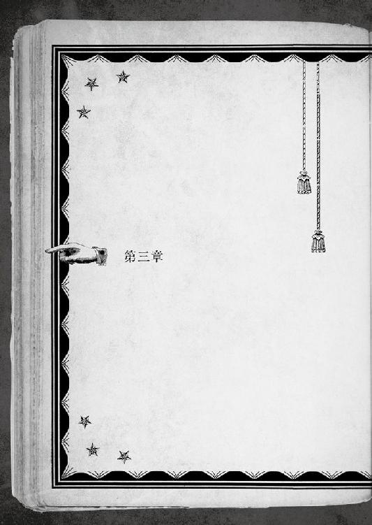
ウシオは、夜を飛び、月を横切った。
暗く沈んだ奥志麻の街の上を、家から家、屋根から屋根へ跳ね飛ぶ。足は一度も地を踏むことはない。宙を蹴っているとしか思われないが、よくよく目を凝らせば、細い糸が進路上に張り巡らされているのがわかったろう。
飛天のように、自由に気ままに闊達に、喜悦を謡う。
少女は、常人の目には映らないほど細い糸の上を、凡そ人間とは思えない敏捷さで駆けていた。短い髪が夜露に靡いて、月明かりに映える。
見咎める者もいない夜天の散策の終点は、雑居ビルの屋上だ。
指先を軽く動かすと、空から一抱えもありそうなものが落ちてきた。これほど目立つ大きさのモノがどこにあったのか。
言うまでもなく、彼女のすぐ後ろを、糸に吊されて移動してきたのだ。
凡そ二メートル近い人間じみた形──ではなく、人間そのものである。まるで縛り付けられたように直立不動の姿勢だが。
コート男であり爪男であるヨブスだ。
ウシオの頭上、更に一〇メートル近い高さから、乱暴に投げ捨てるような軌道を描いて落下した男は、コンクリートの床に激突する僅か一〇センチ手前で、測ったようにピタリと宙に浮いて静止した。
「......運び方が手荒い？ 注文を付けるなら、失敗しなきゃいいのよ。一人で先走った上に逃がすだなんて、何やってんだか。大体あんな人目につきかねないところで《尸器》を起動させるなんて、アナタの脳は飾り？ 《規範》を無視して、それでもｃＳなの？ おまけに、失敗。多少風変わりだって、相手は只の人間でしょうに。無様も此処に極まれりね」
よほど腹に据えかねたのか、ウシオは淡泊な横顔のままで一息に捲し立てる。
半分以上欠けた月の下、逆さ宙吊りのヨブスは、目だけで不満を表明した。全身拘束されていて、目以外はロクに動かすこともできないからだ。
「早く離せ？ どうせ動けないでしょう。まあいいわ」
少女が指を鳴らすと、コートの大男を吊していた糸がどこかで切断された。で、受け身も取れずに頭から落ちた。イイ感じに、とても鈍い音がする。
「......そういえば、身体の糸を解いてなかったわね。まあ、いい気味。アナタ、少しはコミュニケーションというものを覚えなさい」
満足げに笑みを浮かべてから、ヨブスの全身を拘束していた糸も解く。
動けるようになった筈なのに、コート姿は、出来の悪い標本のように雑居ビルの屋上で横たわったまま動こうともしない。手傷を負っているせいだ。
ついさっき、大型車両と真正面から熱烈に抱擁し合ったばかりである。まともな人間なら、原型が残っていたかどうかも怪しい。ここまで相当乱暴に扱ったのに、呻き声一つあげなかったのは、常人どころか、ウシオから見てもどこかネジが飛んでいる。
「アナタ、相当偏屈よね」
ヨブスとのペアで派遣されるのは初めてではないから、悪趣味にも慣れている。大した感慨はない。ウシオもまたｃＳなのだから。
ｃＳが持つべきは、命じられた仕事を果たす為の機能だけだ。
「で、間違いなく、アレだったのね。それなら、余計に意味不明。こんなに近くにいたのに、今まで何も感じなかったのは、どうして？」
ヨブスにしろ、ウシオにしろ、アレの気配をある程度は追える。その為に、彼女たちは派遣されたのだから。
実際、船から逃げ出されるまでは、何一つ問題は生じなかった。アレがこの土地へ逃げ込んでから、歯車が狂い出したのだ。
居場所が、わからなくなった。居るという漠然とした感覚はあっても、正確な位置は、霧の向こうから聞こえる声の主を捜すように曖昧だ。
「それに──アナタのザマを見れば、アレが健在っていうのもわかる」
「............」
横たわったまま無言で唸る相棒に、ウシオは肩を竦める。
「奇妙は奇妙だけど......」
──アレは猛毒だ。
拘わるモノは、軒並みこうなる。危険過ぎて、人手を集めて後を追わせることさえできないほどの代物。
完全に防ぐ方法はなく、一度荒れ狂えば、敵も味方も区別なく、平等かつ公平で、これっぽっちも容赦ない。タチの悪さも極まれり。
追いかけ回して、既に一週間以上。拘わったということを含めるなら、それ以前も含まれるだろう。許容範囲は、とっくにオーバーしている。
追っ手が二人だけというのは、だからだ。
ヨーロッパに、バジリスクという獣の王の名が伝わっている。この魔性の獣は地上の誰よりも強い毒を持っていた。槍で突き殺そうとすれば、槍を伝わった毒が構えた者を殺したと伝説にはある。
今回の計画を立てたウシオの上司たちは、空調の効いた会議室で角突き合わせて、架空の獣を捕まえる相談をした。仮に、バジリスクが居るなら、どうすれば捕まえられるのか。
様々なものが用意された。
毒でも腐らない網。
同じく特別製の檻。
更に特別な首輪や手枷。
解毒剤だけはなかったが......。
さて、最後に問題が残った。
──誰に行かせるべきか？
解毒剤がない以上、せめて死ににくくて、死んでも惜しくない者にしよう。
何と言っても、労働中の事故や死亡は、訴訟や賠償の種になる。可能な限り、そんな醜態は避けるべきだ。
何処も世知辛い。
「取りあえず、まだこの辺りに居ることは判った」
ウシオの本来の仕事は「ここ」からだ。
捜し出し、追い詰め、狩りたてること。脳天に鉄を叩き込む、くらいまでの手順を指す場合もあるが。
「ここまでやって危険手当の一つも出ないんだから、みみっちいわよね」
ごちてみたが、実のところ、危険手当など出されたところで使い道なんて、ない。
屋上の端から下界を見下ろせば、夜の底に沈んだ奥志麻の街は、深海のように死んでいた。夜光虫のような窓の光がまばらに残る。ウシオの見慣れた摩天楼と比べれば、子供の遊び場みたいな規模の街。
今夜はやけに静かだった。まるで、怯えているように。
きっと、そうなのだろう。人は知らなくても、街は知っている。
アレの息遣いに怯えている。嵐が過ぎ去るのを待つ子供のように、ひたすら頭を下げて大人しくしている。
「..................」
「五月蠅い。役立たずは黙って寝てろ。一日かそこらあれば、動けるようになるでしょう」
ウシオが表情を消す。整った顔はマジックで描いたように味気なく、夜風に揺れる銀の髪はただの糸切れも同然。
案山子のようにゆらりとも揺れず、夜の帷のどこかにいる目標を見据える。
「それでは仕事を始めましょう。あの最悪の代物を、キッチリ回収して持ち帰る」
──目を覚ますと、病室にいた。
自分が寝かされているのは、清潔そうなベッドの上で、薄いタオルケットが身体に掛けられていた。綺麗に整えられた壁も天井も色彩の薄いクリーム色で、足下はリノリウム。
空調の効いた室内は、如何にも病院をイメージさせたが、本当のところはわからなかった。
頭が痛い。どうしてここにいるのか、よく憶えていない。
近くにいた看護師さんが驚いていた。すぐに喜びを顔に出して、話し掛けてくる。
目を覚ましたのか、気分はどうか。
よくわからない......そう正直に答えた。
先生を呼んでくるからと、看護師さんが立ち去るよりも先に。
「うわあああなああななん」
驚いたことに、縋りつかれた。
ベッド横に立っていた長い髪の少女は、起き上がった自分の胸元にしがみついて、嬉しいのか悲しいのかよく判らない声で泣き喚く。
すぐ傍にいたということは、ずっと付き添って──
考えがまとまるより先に、異様なモノを発見した。
「あれ？ なに、これ......」
目の前に、『本』が浮いていたのだ。
２０５─■■■■
ようやくのお目覚めだというのに、少女は泣きながら縋りついてくる。
鬱陶しい、とか邪険にしたものじゃないぞ。
どうやら、彼女はずっと看病してくれていたらしい。皺だらけの服、しばらくはブラッシングもしていない髪や目の隈から、疲労具合が窺える。ここ数日間は、ロクに休んでないに違いない。よほどキミを想っている証拠だな。
しかし、そうなるとだ──キミは少なくとも数日間、このベッドに倒れていたということだろうか。
「何、これ」
重要なので二回思考する。
大きな『本』が、支えもないのに浮いている。まるで手品だ。手を入れて確かめてみたが、何のタネも仕掛けもなかった。
「何、これ？」
もはや、マイブームなのか、「何これ」が止まらない。
「どうした？ お医者さんが何かしたのか？」
一番近くにいた少女が、こちらの様子がおかしいのに気づいたらしく、涙で腫れた瞳を拭いながら訊ねてきた。
「この本、だよ？」
指差して教えたが、よくわからないと首を傾げられる。
「だから、どれだ？」
その後すぐ、自分の今の状態について、教わった。
事故に遭ったこと、意識不明でここに運ばれたこと、ようやく目を覚ましたこと、その他諸々──
幾つか困ったこともあったが、お互い話し合うことで事情がわかって、少しは落ち着いた。ただ、『本』は、依然として説明もなく目の前に浮かんだままだった。
──この『本』は、他の人には見えないのだ。
付き添ってくれていた姉だという碧流にも、病院の医師や看護師たちにも。後になって、他の入院している人たちにも訊ねてみたが、皆、冗談と笑い飛ばすか、変な顔をするだけだった。
担当医の先生に『本』が見えるとしつこく食い下がったところ、脳の精密検査をされる羽目になった。異常は何も見当たらず、『事故』の後遺症による一時的なもの、と診断された。
「あ、そういうものなんだ」と納得するには度が過ぎている。
無視しようにも目の前を彷徨いて邪魔なので、いっそ色々と試してやろうと思いついた。
とにかくこの『本』は、何処へ行くにも一緒についてきた。机に放置しても、勝手に後ろからやってくる。ガムテープで机に貼り付けてやろうとしたが、さながら幻めいて、自分以外の誰にも見えないし触れることもできないので諦めた。
『本』だけに中身はキチンと著かれていたが、各ページはのたくったミミズみたいな文字でまるで読めない。目の前に開かれているページだけは、目を通すと日本語に書き換わっていく。どういう仕掛けなのか、とにかく全てが変だった。
そして、書かれている内容といえば──
８─■■■■
キミは、今度のチャレンジでは病室に閉じ込めてみたわけだが、『本』は壁を突き抜けて追ってきてしまった。
これで......何度目だったか忘れてしまったが、また失敗だな。そろそろこの『本』を受け入れてしまえばいいのにな。まあ、いいだろう。納得いくまで付き合おうじゃないか。
さて、重い溜息を吐きながらキミが病室へ戻ると、碧流が、これまで一度も見たことのないような厳しい顔をして待ち構えていた。
「『本』のことは、もう誰にも言うな」
と、強く言いつけられる。
『本』と現実を見比べながら、訊ねた。
「どうして？」
「お医者さんにはわからないことだから」
「姉、さん......には、わかる？」
「..................わからなくもない。我々は『ヒトデナシ』だからな」
この時は、言ってることがよくわからなかったし、それ以上は教えて貰えなかった。
結局、一條が、碧流の知っている『色々』を聞かされたのは、退院してからのことである。療養中に余計なことを考えさせたくなかったのかもしれない。逆効果だったが。
この『本』は、取り憑いている幽霊みたいなもので、自分にしか見えないのだ。
やるだけやってみた後で、嫌も応もなく、その事実を受け入れた。頭を抱えたところで『本』は居なくならないのだから、悩むよりも前向きに行こうと思い直したのだ。祟りを為すような悪さをしでかす訳でもないし。
色々と試し続けた唯一の成果として、『本』を消せるようになっていた。そこに在るのは変わらないので、「見えなく」できるようになった、というべきだろう。
いちいち目の前を横切って邪魔だ、ということもなくなった。
これにて一件落着......とはいってくれない。
この『本』にまつわる、「怖いこと」が一つあった。
入院した原因を、医師の先生や碧流は『事故』だと言っていたが、そうでないのだと。
あの瞬間、意識が千々に砕けてしまう直前に──
それは、黒かった。
深海のように、夜闇のように。
墨汁を落としたように視界は黒く染まっていて、一寸先さえ見渡すことができない。
この濃密で物質じみた暗闇の向こうに、得体の知れないものが。
何かがいた。
──あるいは、あった。
低く篭もる息遣いのような、あるいは鼓動に似た重い拍動。
光さえないところで、何かが身じろぎする気配を感じ取る。
生きているのか、そうではないのか、色はどうか、形は何かに似ているのか。
どんな理解も及ばない。
真の恐怖とは、身に迫る危険ではなく、理解を絶したものから訪れる。
悲愴に急き立てられて、その場を逃げ出す。
追ってくる。
追ってくる。
ずっと走り続けたが、容易く追い着かれてしまう。
そもそも、それから逃げられる筈がなかったのだ。
何故なら■■■■■■■──
ぞわりと背中が総毛立つ。
敢えて言葉にすれば、とてつもなく遠いところから、空ごと落ちてくるような大きな何かが、ゆっくりと音もなく形もなく手を伸ばしてくる。
一〇〇万ボルトの電流で脳髄を掻き回されたような衝撃に、身体ごと後ろに跳ね飛ばされた。
ショックのせいか、立ち上がるのはおろか、身体が半分動かない。
どうにか動く残り半分を使って、夢中に這って逃げる途中で。
頭の中を蟲が這う。訪れた錯覚に吐き気を催す。脳の襞に潜り込んだ蛆が、肉を食らっているような痛みと熱。下から上がってきた血の色に目の前が染まる。
世界が血を吹いてしまったのか思ったが、すぐに気づいた。
赤いのは眼球の方なのだ、と。
──視界が突然壊れてしまった。
９０１─■■■■
■■■■■、■■■■■■■■■■■。■■■■■■■■■、■■■■■、■■■■■、■■■■■。
■■■■■■■■■■。
■■■■■■■■■■■■■■■、■■■■■。
■■■■■■■■。
■■■■■■■■■■■／９１８─■■■■ ■■■
■■■■■■■■■■■■■／８７９─■■■■ ■■■
目の前に『本』があった。
本の中身である文字は、ほとんどが読めない。日本語でもアルファベットでもない。凡そ、一條が知っている「文字」という概念に収まらない何かで書かれている。
これは『選ぶべきもの』だ。
内容は判らないのに、どうしてそう思ったのか。一條にもよく判らない。
ただ夢中で、この袋小路の状況から逃げ出したくて。
おそらく、一番最後にあった「それ」を、咄嗟に選んでしまったのだろう。
選んでしまったのか、必死に逃げ惑っている内に、選んだことになってしまったのか。
音もなくパラパラと捲れていくページ。
それから、
８７９─■■■■
■■■■■■■■■■■■。
■■■■■■。■■■■■。
■■■■■、■■■■■■■■■..................１４ ■■■
そこで、意識は闇に。
全てが途絶えてしまう瞬間、誰かの声を遠くに聞いた。
......気がつけば、病院のベッドの上だった。
果たして本当にあった出来事なのか、あるいは倒れていた間に見た悪夢でしかないのか、一條にもわからない。残された光景は、どれも磨りガラス越しのように曖昧で、前後の繋がりもハッキリしなかった。
胸の潰れそうな恐怖以外に、憶えているのは『二つ』だけ。
とても怖いところへ行ってしまったことと。
その後、何もかも黒く塗りつぶされていく最後の最後、誰かの、胸の詰まるような暖かな声。
「......『フォティゾ』............」
それだけは、今も消えることなく憶えている。
「──という夢を見たのさ」
白い天井を見ながら、ボヤく。
目覚めてから二秒で、現実を理解する。
「にしても......こんなのは久しぶりだね」
過去に拘らないのがポリシーの一條が、過去を夢見るなんて珍しい。
とはいえ、忘れられることでもない。正しくアレがことの始まりなのだから。
あの『出来事』以来、一條は『本』に憑かれたのだ。
ここは、いつかの暗闇でも白い病室でもなく、学校の保健室のベッドの上だ。
よく似た薬品の匂いのせいで、あの時の夢を見たのか。
鷹崎南高校──というのが、この学校の名前である。
一條は......正確には、約一年の休学を経て復学した。
去年のあの事故の療養の為に、長きに渡って故郷を離れていた。本来二年生に進級している筈の襟章には、今年も一年生の印が付いている。
由緒正しい歴史があり、地元ではそれなりに名も通っているらしいが、一條は気にしたこともなかったし、鷹崎南という名前が、文明開化の頃までこの辺りにあった鷹崎という社に由来するという縁起も勿論知る由もない。
歴史があるばかりで、大きなイベントとは縁のないことで有名な学校でもある。野球部は、地区予選の準決勝が一番の記録。卓球部は全国レベルだが、競技として地味だし、オリンピック代表選手のような華々しく語り継がれる人物を輩出したことはない。卒業者に、偉大な文豪も著名な企業家もいない。
そんなどこの地方にも一つか二つは転がっていそうな学校だが、一條は復学して間もない時期に、早速一週間も休んでしまった。叔美と出遭った時の事故が原因だ。どうかすれば、昨日の一件で、更に何週間か休む羽目に陥っていたかもしれない。
新参者の分際で、度胸がいいにも程がある。
本日は、一週間ぶりでやけに敷居の高い登校だった。長く休んだ後の教室は、他人の土地のように近寄りがたい。引き篭もりが外に出なくなる一番の理由がコレだという。キッカケを見失ってしまうと、時間が経つほど外に出る難易度は高くなっていく。
一條は、勇を奮って学校に行った。優等生になりたいとは言わないが、落第するような真似はしたくない。動けるようになった以上、多少無理をしてでも登校するのだ。
しかし、世の中、無理なものは無理である。
２時限目の授業中に気絶して、そのまま保健室に運ばれてしまったのだ。
「お、起きたんだ〜」
目覚めた気配を察したのか、窓際のデスクから、首を伸ばした三輪教諭が覗いていた。
保健室の主である「お花ちゃん」こと三輪養護教諭は、くるくるパーマとタレ目の眼鏡という、愛玩動物的印象の女性である。如何にも田舎っぽい「お花」というあだ名の由来は、雰囲気が『お花畑』そのものだから。
職場の彼女は、仕事帰りに『アンブロシウス』に来る時とは印象が違う。アフター５になると精神年齢が一〇歳ほど繰り上がって、「大人の女」に変身するのだ。
女の人って怖いな、とつくづく思ってしまう一條だ。
丁度、一仕事の後のコーヒーを煎れ終えたところだったらしい。熱そうなコーヒーの入ったマグカップを両手で抱えて、舐めるみたいにして飲んでいた。
教師のクセに、この女、行儀は良くなかった。
「一條、記憶ある？ 飛んでない？ 憶えていることは？」
「えっと、古典の授業中に落ちた消しゴムを取ろうとしたら、机の角に傷口を思い切りぶつけて痛くて意識が飛びました」
より細部まで説明すると、授業中に『本』が現れて、何事かと思ったら、消しゴムを拾うか諦めるかの選択視が出た。「拾う／４２５」は判定付きの選択視だったが、ダイス二個で５以上なら成功と余裕だったので選んだ。
ダイスの出目は、３。
......失敗する確率があるなら、最悪の可能性はいつもあり得る。そんな基本を忘れてしまうとは、昨夜の成功で調子に乗っていたに違いない。自業自得のしっぺ返しで目が醒めた。その直後に痛みで気絶したが。
４番台のＰＧで失敗しても、この有様である。昨日の８番台で失敗していれば、どんな悪夢的顛末が待っていたことか、想像するだに寒気がする。
成功しても、只では済まなかったのだ。
机の角をぶつけた怪我というのは、他でもない。昨日の騒動、『怪奇爪男』に襲われて間一髪逃げ延びておめでとう（......やかましい）になった時に負った傷である。
一條の『本』が選択視を告げてくれたから、逃げられる可能性を見出せた。
叔美を捨てていくのはともかく、『本』の記述がなければ、無謀に体当たりという名の特攻ぐらいはしたかもしれない。体力値一二〇の化け物を相手に、である。
ある意味『本』に救われたのだが、その後が問題だ。
逃げられる可能性に縋って、叔美の手を引いて飛び出したところで、まさか爪男に自転車ごと蹴り飛ばされるとは予想だにしなかった。
トラックに轢かれる方がまだマシかもと思える加速で蹴り出された挙げ句、叔美と二人で地面に叩きつけられかけた。咄嗟に一條が庇ったおかげか、叔美は奇跡のように掠り傷一つ負わなかったのが、せめてもだろう。
庇われた方が無傷でも、庇った方はそうは問屋が卸さなかった。
叔美を抱えて二人分の体重で落下して、中央分離帯のフェンスにぶつかった。おまけに上から自転車が落ちてきて潰されそうになった。避け損ねていれば、更に怪我のボーナスが加点されていたところだ。
判定に成功したとはいえ、８番台のＰＧを選択した結果が、これだった。
その後。
叔美には、襲われたことを碧流に言うなと、厳重に口止めをした。
そうでなくても、先週（叔美絡みで）怪我をしたばかりだ。この上、非道い目に遭ったと知られたら、何と言われるか何をされるか......。
「一條？」
「あ、はい」
三輪教諭に呼ばれていたのに、遅れて気づいた。
「まだぼーっとしてるねー。そんなにヒドいのか、それ？」
「まあ。多分肋骨。ヒビぐらい入ってるかも......」
「医者は？」
「行きました」
「行ったのに？ 多分？」
ぼーっとしてる顔なのに、三輪教諭は妙に鋭いところがある。
「ははは、つい、聞き流しちゃって」
「ほほほ、そっかー」
生温い笑いが保健室に木霊した。勿論、病院にはまだ行っていない。
「一條はダブりなのに色々やってるなー。去年も怪我してたんだよね」
笑顔なのに目が全く笑っていない。女の人って怖い、とまたまた思い知る。
今年赴任してきたばかりの三輪教諭は、一條が夢で見たばかりの去年の事故は知らない筈だが、見かけによらず情報収集能力が高いらしい。
「耳早いですね」
「うん、聞き出した」
学校という小社会には、個人情報の保護という概念はないのだろうか。
「ウチの担任から？」
「いやいや。最近はほら、スクハラにモンペアと教師を巡る環境も過酷でさー。みんな、腰が退けちゃうんだよねー。特にウチの学校は、去年と一昨年に超レア級のモンペアが居たとかでー、先生みんな真っ青〜」
三輪教諭は、嬉しそうに立てた指を振る。ゲンナリする話題のどの辺りがツボなのか、今にも歌い出しかねないテンションだ。
「それ以来、みんな余計なこと言わなくなっちゃったらしー。会話も絶えてるし、それこそ父兄のスパイでもいないかって、職員室の雰囲気が悪いったらー」
「おおう」
ゲンナリ度のキツい、リアル学校事情というのを聞かされた。
組合を組んで小世界を守り抜く地方領主的な教師や、それに反発する若き熱血教師の時代は遠く去り、今や少子化で希少価値に成りつつある若人を導いているのは、恐るべきＰＴＡモンスターたちの奴隷に成り下がった事なかれの官僚主義的教師たちなのか。
「でも......すると、一体誰から」
「久留美っち」
さもありなん、と一條は納得した。
「ところで、熱いコーヒー飲む？」
「傷に染みそうなので。冷たい麦茶なら頂きます」
出てきた麦茶を早速チビリとやった。喉は渇いていたのだ。こういう気の回り方は、如何にも養護教諭だと感心する。
水分を補給すると、ボケた思考も幾分かまともに回り出した。
「ところで、今何時限目ですか？」
「五時限目の半ば」
「おおう」
喉も渇く筈だ。壁掛け時計の時間を確かめる。四時間以上も暢気にぶっ倒れていた。怪我よりも、精神的な疲弊が原因のせいかもしれない。
「お姉ちゃんに連絡は？」
「......それはナシで。余計な心配を掛けたくないから」
「姉想いだねー」
笑顔が強張りかけたが、どうにか、微苦笑を作ることに成功した。
碧流は、この学校の在校生かつ最上級生だ。学校での彼女は、文武両道の優等生で美少女という、額物に入れたいくらいの完璧超人キャラで通っている。
そんな彼女の、一年近く離れ離れに暮らしていた弟キャラとして復学してきた一條は、話題性に事欠かない。全く嬉しくないことに、注目のニューカマー扱いだった。
三輪教諭と親しく話せる仲になるまでには諸々あったが、それも元を質せば、「碧流の弟」という立場に由来している。
「ま、今回はいいだろう」
「感謝します」
両手を合わせて拝んだ。
「それで、今日はどうする？ 授業に戻る？ もう今更だから、寝ててもいいよ」
「ご厚意に甘えます」
普段の一條なら、無理してでも授業に出るところだが、今日のところはリタイヤする。そんな気分にはなれなかった。
「そう」
短く言って、眼鏡のフレームを中指でクイッと上げた三輪教諭が、後ろ手にベッドのカーテンを閉じた。
ピタリと合わされるカーテンで、ベッドは一瞬にして密室に変わる。
チロリ、と舌なめずりされた、ような。
脳内に、何故か怪しいＢＧＭが流れ出す。
「じゃあ、脱いで」
「──は？」
伏線もない超展開が目の前にあった。
ベッドの上の一條の枕元に、三輪教諭は両手をつく。いわゆる、女豹のポーズ。
距離が近い。とても近い。白衣の下は、襟のくびれたブラウスなので、驚くべき立派な持ち物がぶるんと揺れながら迫ってくる。三輪教諭の兇悪さたるや、野暮ったい白衣のせいで普段は目立たないが、どう考えても年頃の青少年の敵だ。
前屈みに腰を捻った弾みか、一條の視界をチラリと横切ったピンク色のものは、もしかしなくても、ブブ、ブラジャーだった気がする。
こ、これは一体......。
だがしかし、『本』が自動的に現れる様子はない。
悶々と錯乱する一條の耳元で、囁くように三輪教諭は言った。
「脱いで、上着。シップ貼ったげるからー」
「............ですよねー」
すっかり授業の終わった放課後。
保健室のベッドから起き出した一條が、自分の教室へ足を向けたのには理由があった。誰もいない空っぽの教室へ入り込んで窓際の席に陣取り、取り留めもなく視線を彷徨わせる。
昨夜、姉の碧流から『衝撃の告白』をされた。
といっても、その事だけが、このアンニュイな気分の原因ではなかったのだが。
「人生は、難易度高いなあ」
三階の教室から臨める風景は、それなりの見晴らしだ。
鷹崎南高校は、奥志麻市のど真ん中を占めている美山のすぐ真下にあるが、一條の教室からは、この時期には緑なす景観の見事さは覗えない。
開かれた窓から臨めるのは、丁度山の反対側の景色。学校の校庭と正門とその向こうに広がる街並みだ。
奥志麻では、大きなビルの大半は駅前に集まっているし、他に高身長なものと言えば、精々マンションか郊外の大型量販店だけ。それなりに高いこの教室からは、遠景がすんなり見通せる。
雲間から望める空。凸凹としたブロック模型のような建物の列。住宅の間を蛇行しながら目映く光る河川。雲は流れる。風は緩やかに頬を撫でる。まばらな人影が長閑に行き交う。
優雅な暮らしが、そこにはあった。
一條は、さも眩しいものでも見るように手を翳した。都会とは、どこまでも違う造りが珍しい。
風景は見通せても、選択視のその先までは見通せない。一條の『本』も「未来」を与えてはくれない。それを残念に思うのは、詮無い話である。
誰しも、「現在」にだけ生きているのだから。
「シケった顔してる場合っすかー!!」
「！！！！！！！！！！！！！！！！！！！！！」
不意打ちで、背中に思いっきりぶつかってこられた。
身体ごと飛び込んできた感触は柔らかい。むしろ幸せ。一部の発育がとてもいいからだが、こっそり負傷中の一條には、その程度でも効き過ぎた。
「ふーんぐ......ッッ」
「おやー、嬉しくないっすか？ 面白い顔をしてやがりますね」
青よりも紫に近い顔をして、痛みにジッとしていられなくて、教室を三周してそのまま飛び出して、ウォータークーラーから三回水を飲んでからようやく落ち着いて、教室に舞い戻った。
「ほぅほぅ、それって新手の創作ダンスですかねえ？」
「久留美と違って、そんなことはしない」
「はーい！ わたしはやる！ やるったらやりますよ！ 体操に限りませんけど！ やっぱ人間、常に挑戦が必要なのだ！」
いつもながら、キャッキャッと無駄にはしゃぐ。
誰もいない教室で特に意味もなくボンヤリとしていた一條を、やはり特に意味もなく後ろから襲撃したエネミーの名は、麻美久留美という。
一條は、チラリと右を見て左を見る。『本』は現れない。
（久留美が襲ってきたくらいじゃあ、普通は出ないよね......痛かったけど）
やむ得ぬ理由で同級生だが、久留美とは別にクラスメイトでもなければ、部活仲間というわけでもない。
一條は帰宅部員だ。『働かざる者は食うべからず』。日々『アンブロシウス』のバイトに精を出しているので、とても部活をやる暇はない。
──というのは、半分本当で半分嘘。
姉の碧流は、部活に入った方がいいんじゃないかと、それとなく勧めてこなくもない。
持って回った言い回しになるのは、本当は勧めたくないが、しかし、秤で量ると勧めなければならないと自覚している、というのが丸わかりの態度で言うからだ。
去年の事故がキッカケで、碧流は『アンブロシウス』を引き継いだ。彼女にとってあの店は、祖母の形見であり、支えていくべき物なのだろう。
では、自分にとっては、どうか？
一條は自問する。思い入れは......おそらく、ない。
碧流は何かと一條に気を遣ってくれる。ブラコンブラコンと叔美に陰で笑われるぐらいには。一條の時間を、『アンブロシウス』だけで潰してしまうつもりはないというように。
残念ながら、一條本人にその気がなかった。一年ぶりの学校にまだ馴染んでいないから......というのは建前で、悩みの種は『本』なのだ。
親しい関係を作ってしまうと、どうしても自分のオカシナ挙動が人目に付く。見えない『本』が見えますと告白するのは、痛い子認定間違いなし。地動説の昔から、人は自分の見えないものついては、至極冷酷に振る舞うのが相場である。
では、どうするべきか。
邪魔になるし、自分から呼び出すことは滅多にしない『本』だが、だからといって、粗略にするという選択は一條にはない。
こうして放課後の教室で独りぽつんと残って、改めて見つめ直してみれば、我ながら今のお互いの立ち位置は『半端』なのだと思う。
「変な顔してますね、イチジョー」
久留美の声が隣からして、一條は思索から戻ってきた。
「してるかな」
「してますしてます。つーか最近のイチジョー、いっつも景気悪そうな顔だけど。なんか悩みとかあるっすか？」
「あるといえばあるかも」
久留美のように気兼ねをしなくて済む相手は、一條にとって数えるほどだ。自覚すると、ますます切なくなるが。
「うんうん、誰だって悩みぐらいあるものですよね。あのネーチャンも、昔からいつでもピシッとしてましたけど、悩みの一つ二つはあるに決まってるし！」
いつかは弱みを握ってやると言わんばかりに、空に向かって拳を突き上げる久留美。
碧流との間に一体何があったのか気になったが、怖いので聞かないことにした。
学校内外から尊敬を集める有名人である碧流を、彼女は「ネーチャン」と気さくに呼ぶ。怖いもの知らずというよりも、過剰に人懐っこいのだ。叔美の正反対である。足して二で割ればイイ感じになりそうだが、そうは問屋が卸さないのが切ない浮き世だ。
「悩むより慣れろだ！ 悩みなんて、ぶっ飛ばせ!!」
一息で捲し立ててから、久留美は大凡女子らしくなく、ケラケラと楽しそうに笑った。
「いっつも楽しそうでいいね、久留美は。僕も見習いたい」
「おー、いいっすねー。見習ってください！ 今なら先着一名様に、二〇〇円で究極奥義を伝授するぞなもし」
フンフン、と正拳突きから回し蹴りへのコンビネーションを綺麗に決める。
久留美の動作は、何かの武道を遣っているわけでもないのに、一條が気を取られるほどメリハリがあって綺麗だ。その上、脚を大胆に上げるので、容赦なくスカートがヒラヒラする。
しかしながら、全く楽しくはない。何故なら、サービスシーンの如く大暴れする久留美のスカートの下は、常にスパッツ着用なのだ。「あーん、モーレツー」対策は完璧だった。本人の意志ではなく、先輩に指摘されてやむなく着用しているらしいが。
人懐っこさ一〇〇％の天然体育会系子犬女子の久留美は、体育会系の血なのか、所属する部の部長には頭が上がらないでいる。
「で、居残りで何やってるんですの？」
「変人と思われない為にはどうしたらいいのか、悩んでるんだ」
こいつ変人か、という白い目をされた。隠し事がなくて、実に分かり易い。
「何と言いますか......日々悩むのは青春に付きものですけど、考えすぎると腹くだすっすよ」
「例え話としては、いまいちセンスがないと思う」
「そこまでして変人になりたいなら、ウチらの部に入ればいいのでは？ 部長は間違いなく変人だし。それも人類最強レベル」
だから、なりたくないんですよ久留美さん、とは思っただけで言わなかった。
どうせ、言っても聞きやしないのだ。
一條の記憶にある久留美の初出シーンは、復学初日まで遡る。
その日。帰郷して復学して一通りの説明を聞き終えて、何事もなく一日が終わって、さてそろそろ帰ろうかなと思った時に、久留美が落ちてきた。
比喩でも何でもない。
後で本人に聞いたところによると、職員室を出て階段を下りようとしていた一條という獲物を発見し、廊下の彼方から狙いを付け、全力疾走してきたらしい。
踊り場へ下りたところで、階段の手摺りの上を、如何にも嬉しそうに、まるでギャグ漫画みたいな勢いで駆け下りてきた久留美は、陸上部やら体操部やらの助っ人に時々狩り出されるぐらい、身体能力が人並み外れている。
だが。
「おおおおお!?」
足が滑ったのか、目測を誤ったのか。
久留美は途中で手摺りから滑り落ちかけた。が、持ち前のガッツで、落ちてなるものかとハイジャンプする。
そして、獲物目掛けてラ●ダーキックよろしく急角度に突っ込んできた久留美を、一條は後ろを向いたまま避けた。
「あ──」
避けられたのは、現れた『本』のおかげだ。選択視に従って、二歩右に移動した。その三センチ隣を、何かが高速で通過していった。
久留美は、全てを計算していた（と後に本人は力説した）。一條の目の前に三回転宙返りで見事着地して、驚きと拍手喝采の中で名乗りを上げようと考えていた（らしい）。
急に一條が移動したので目測が狂い、着地に失敗して、そのまま転がって壁にぶつかって頭を打って気絶した。
..................大惨事になった。
この『本』が『ＰＧ』という形で教えてくれるのは、一條の選択と行動の結果に関することだけ。結果的に周りがとばっちりを被るとしても知らぬ顔の半兵衛なのだ。
叔美の場合、とばっちりというよりも自業自得だったが。
そして、開いた口が塞がらない顔のまま、倒れて動かなくなってしまった少女を担いで保健室まで運んだのである。
想い出すと溜息が漏れた。出逢いのレベルとしては、最低の二歩手前ぐらいだろう。
「ダメだってわかってるけど、敢えて誤解を解いておくんだけど。僕は変人になりたいとか、変人を鑑賞したいわけじゃないんだよ」
「判ってるっすよー、皆まで言うな！ その、アレだ......ツンデレってヤツですよね!?」
「それ、もう死語だって聞いたけど」
そうかなあ、と首を捻る久留美。イチジョーは都会にいたから違いますね、とか言い出したが、都会は関係ないんじゃないか、と思ったりした。
「でも、居残りしてるのは珍しいっすね。普段、授業が終わるとすぐ帰ってますよね？ ネーチャンも」
「居残りってわけじゃないし、とある重要な考え事をしてるんだけど......その前に一つだけ教えてほしいんだ。どうして、珍しいって把握してるのかな？」
「それは！ ジャーン!! 夜討ち朝駆けで、イチジョーを部活に誘おうとしてますので。行動パターンは把握済みっす！」
「個人情報の漏洩！」
「それを言うなら、プライバシーの侵害なのでは？」
「わかっててやってるんだ......」
久留美、恐ろしいヤツ。
一條にとっての久留美は、ある意味とても厄介だ。こちらの都合お構いなしでじゃれてこられるのは、見えない背中のカサブタに触れられるような何とも言えない気分になる。
しかし、こうして世話を焼いてくれる（？）おかげで、敷居の高い復学生活をどうにか遣り繰りできてもいる。
感謝はしているし、邪険に扱う気にもなれない。それも彼女の人徳なのだろう。
そして、久留美の指摘は正しい。
普段の一條なら、授業が終わるとそのまま帰宅して、今頃『アンブロシウス』を手伝っている。本格的に店が開くのは一八時以降だが、開店前の時間にもすることは多い。それが、今日に限っては居残りだ。おまけに、久留美から見れば、何をするでもなく教室でボンヤリしているのだから、疑問に思うのも至極当然。
理由はあった。
目下一條を悩ませている多くの『問題』をどう解決すべきか、考えあぐねていたのだ。
現時点で、千里一條の優雅な人生を妨げる障害の大半は、叔美に起因する。昨日、遂に「怪人現る」という事態が発生してしまった。
最初に手を差し出した時から危険を承知で、のらりくらりと先送りにしてきたが、それもこれまで。この先を座して成り行きに任せておけば、取り返しがつかなくなる。
一條にも、その程度の分別はつく。
「意外に、僕は結構図太いのかな」
異常事態にも、それなりに冷静に対応しようとしているのは、『本』との出遭いがあったからだ。常と違う異常は遠く離れてはいない。理由もなく、ふとした弾みで訪れるものだと、多分、とっくに教えられていた。
「自分でわからないっすか。そーとー太いっすよ。血筋かもしれませんねー。ネーチャンも、あれで結構なタマですし」
独り言だったのに相づちが入った。大人しく独りで考え事もさせてもらえない。久留美らしいとはいえるが。
「そうなのかな......」
姉弟だから、似てしまうのか。今は二一世紀。家系やら、血の因習ネタは流行らない。一條も、そんな細かいことには拘らない。モットーは優雅な生活だ。
──細かくなければ、そうもいかない。
昨夜の、『衝撃の告白』の一幕を思い出す。
爪男から逃げ延びた後、這々の体で店まで帰った。台無しになった荷物の惨状は、アクロバティックに転んでしまったと大嘘を言い張った。当然、叔美と二人して怒られた。
「まったく、主にキミが仕方のないヤツだな」
「アタシだけかよ!?」
......叔美だけ集中して怒られていたような気もする。
碧流は、一條から見ても、必ずしも公平な人物とは言えない......のかもしれない。
叔美は、今にも噛みつきそうな顔で、謂われのある批難に耐えながら、最後まで約束通り、一條の怪我のことは口を割らなかった。奔放な叔美は、妙なところで義理堅いのだ。爪男に襲われたことについて、責任を感じているのかもしれない。
叔美がどういうつもりかはともかく、碧流に知られずに済んだのは素直に感謝した。
『衝撃の告白』はその後。負傷を隠して仕事をしていた一條に、閉店後、二人きりなのを見計らって、碧流が真剣な表情で詰め寄ってきた。
「キミに話がある」
そこで、『本』が現れた。
何事かと飛び上がり掛けたが、確認したＰＧは２０３。
今すぐヤバいことにはならなさそうだと、ひとまず安心する。
人生の《分岐点》と一口に言っても、自身に劇的な悪影響（一條主観）を及ぼすものばかりとは限らない。最近は、極めつけにヤバそうなのが圧倒的に多かったが。
一応、慎重にＰＧを読み進めた。文末の選択視は、「話を聞く／２６３」か、「話を聞かない／２６８」のどちらか。
碧流に真顔で迫られながら、「聞かない」を選べるだろうか？ ......無理だ。
「......話って何かな？」
「キミは、『ヒトデナシ』なんだ」
唐突すぎる。まさかの急展開。しかも真顔で。怪我のことを見抜かれたのかと大いに慌てた。
「なな、何を、と、唐突に。も、もしかして、寝不足かなにか？」
「私の体調管理は完璧だ」
「いや、でも......よく起き損ねて遅刻しそうになってるけど」
「......些末な問題を除けば完璧だ」
かなり穴だらけな完璧である。
「慌てているようだが......もしかすると、何かやましい隠し事でもあるのか」
「全然ありません。それよりも、どういう意味ですか？」
痛いのを我慢して、こっちも真顔になった。ついでに敬語になった。
露骨に挙動不審だったが、碧流は何事もなかったように話を続けた。
「本当は......今更言わなくてもいいと思っていたんだ。ところで、その前に一つ。叔美みたいなのを連れてきても、私が何も言わないのはどうしてだと思う？」
「..................優しいから？」
「正解だ。だがそうではない。私の役割だからだ」
半分ぐらいは味噌擂りだったのに、真顔で返された。
「..................家出少女の再就職の斡旋をしてるとか？」
「もう少しのっぴきならない話だ。以前に、我々は『ヒトデナシ』だと教えたろう。あの時は、詳しくは言わなかったが......我々、つまり千里の者は、昔から『普通ではない』ことをやってきた一族だ。ざっくりと言えば、叔美のような普通でない輩と付き合う窓口というか、世話役というか......この土地の顔役と言ってもいい」
のっぴきならない上に、ざっくりし過ぎだった。
いい加減、常識のアテにならなさは痛感しているが、いきなりそんな衝撃告白をされてもどういう顔をするべきか、判断に困る。
「そういえば......ここを離れる前にも、何度かそんなことを言っていたような......」
目の前に浮かぶ『本』と、現実の碧流を見比べる。
『本』に取り憑かれて途惑っていた一條に、『色々』な事を教えてくれたのは碧流だ。
何故、そんなことを知っているのか？
どうしてこんなものが、一條の元に現れたのか？
等々。
当時は、どれだけ訊ねても詳しいことは教えてくれなかったし、その内に一條は、療養の為に奥志麻を離れてしまった。
このままずっと教えてくれないままでも、それはそれで構わないつもりだった。
過ぎたことは過ぎたこと──だから。
「..................えっと、そうすると、僕が『本』を見えるようになったのも」
「うん、だからだと思う」
あっさりと告白されてしまった！
「それなら......碧流さん、この『本』はなんなの？」
「姉さん、だ。実は、私もキミに教えた以上のことは知らない。それは、人生の筋道を告げるモノ。私には見えないから、そういうモノだとしか言い様がない。正直に言えば、本当にそれが血筋の成せる業かどうかも、確証はない。ただ、千里の家のことや自分のことを鑑みて、そうじゃないかと思っている」
自分のことを鑑みて......それはつまり碧流にも──。
「信じられないか？ まあ、それが普通だろう。突然だしな」
「信じるかどうかって聞かれたら、信じる」
大して迷うこともなく応えた。
「碧......姉さんは、嘘はつかない人だと思う。それに騙すつもりなら、もう少しそれっぽい話にするだろうしね」
「一條......」
途惑いよりも嬉しさを顔に表す碧流の黒い眸を覗き込むのが何故か気恥ずかしくて、一條は目を逸らした。
自分にしか見えないこの『本』には、いつものように今の遣り取りも記述されている。
この『本』こそ、どれほど信じがたい破天荒な物語でも納得できる、動かぬ証拠だ。
今更、このぐらいの『告白』では、取り乱すような衝撃はない。
過去を振り向かないのが信条の一條にしては珍しく、昨夜の出来事を回想しながら、教室の窓に重い溜息を吐きつけた。
「ほう」
「ほー、乙女チックな溜息つくんっすね、イチジョーは」
「世の中、選択の幅は少ないんだなって、つくづく思う」
姉の碧流は、思う以上に「結構なタマ」なのは事実だ。
血筋であれ何であれ、一條がいきなり正体不明の叔美を連れて帰ったのに、それを受け入れて、あまつさえそのまま働かせるのは、鷹揚なのか、器が大きいのか。いっそネジが外れてると言うべきかもしれない。
斜め上の方向に尊敬してしまいそうになった。
とはいえ、一條自身も、姉のことは言えない。
叔美と出遭って以来の出来事は不可解極まりないし、彼女を追って現れた怪人に至っては、「常識なにそれ美味しいの？」の世界に肩までどっぷり突っ込んでいるが、お構いなしに普段通り学校へ出てきている。
何気なしに、自分から目を眇めて『本』を出現させてみる。
自分から呼び出すのも珍しい。今日は普段通りでないことが多い。
一條の図太さは、何よりもこれのおかげである。
傍らの久留美の目には映らない『本』との付き合いも一年とちょっと。間違いなく、一條のさして広くない人生交友録の中で、一番長くて深い付き合いである。粗略にはできない相手だ。
自分のアドレス帳の薄さについては、直視するのは心がとても痛いので目を逸らした。
「この先、どうしたものやら......」
今度は久留美に聴かれないように小さな声で、『本』に語り掛けるように独りごちる。
怪しい血筋だと言われても実感は伴わないし、今は二一世紀。家系やら血の繋がりやらは流行らない。
一條も、そんな細かいことには拘らない。
だから、細かくない問題があるとすれば、もっと別のことだった。
どうして碧流が、突然、あのタイミングで、突拍子もない『告白』をしたのか。
おそらく、一條の負傷を察したからだろう。叔美に口止めしたのにも、意味はなかったわけだ。原因が叔美だということも、あるいは見抜いていたかもしれない。
それは、碧流の言う「千里の血筋」の成せる業かもしれないし、単に彼女が鋭いというだけの話かもしれない。
どちらにしても、碧流は警告してくれている。一條の『本』同様に。
昨夜、彼女が伝えようとしたものは、千里一條の人生が大きく変化するほど重いものだったのだ。
それだけの想いを込めてくれたことに、一條は精一杯の感謝をする。
碧流の言わんとしていたこと、つまり。
──そろそろ限界だ、と。
いきなり叔美を放り出すのではなく、先に一言入れてくれただけで、十分以上に気を遣ってくれているのが、わかる。
そもそも約束の期間は、一條が復帰した時点で終わっているのだから。
「おや、妙なもの発見！」
移り気な久留美は、とっくに一條のアンニュイを忘却し、右手でひさしを作って、散発的に部活に勤しむ人間だけがいる広い校庭を、獲物を狙う肉食獣の目で見定めていた。
「ヘンシツシャでもいた？」
ひょいとそちらを見て、一條は口を閉ざした。
変質者はいなかったが。
──叔美がいた。
叔美にとっては、『初めて』の場所だ。
鷹崎南高校が、だけではなく、学校という空間が、である。
学校が何をするところかぐらいは、叔美だって知っている。自分ぐらいの歳の連中が集まって勉強をするところ。
実際に、通ったことはなかった。遠目に眺めることはあっても、近づいたこともない。
ここには、人が多すぎる。
叔美の目の前には、いかめしい門がそびえていた。拒まれているようで、ほんの一歩で跨いでいける筈の校庭との敷居が、どうにも越え難い。
行きつ戻りつ中を覗くと、広い庭を囲むように、大きな箱を何層も積み上げた建物が幾つもある。
「鳩舎みたいだな」
この場所には碧流が通っている。今朝からは一條も通っている。
校庭には、今も大勢が居残っていた。叔美には知る由もないが、部活の学生たちだ。
数日前に学校から帰った碧流に聞いた終了時間は過ぎているから、もう誰もいないだろうと高を括っていたのに、些か目算が甘かったらしい。
小さな学校だが、校庭は広くて余裕がある。陸上、テニス、他の運動部の準備体操。散らばった学生たちが、それぞれの遣ることに興じていた。短い掛け声があがっては消える。
叔美は、そんな場面の一つ一つを、不思議そうに、丹念に見入っていた。
自分と同じような年頃の連中が、男も女も入り交じって遊んで（？）いる風景を。
別に初めて見るわけではないのに。
ただ、いつも、遠く離れた景色であっただけで。
......ここも、そう。
叔美の胸の奥に、焦げつくような気分が溜まっていた。
元々来るつもりはなかった。つい、足を向けてしまった、と理由にもならない理由を胸の中で釈明する。一体誰への弁解なのか、叔美自身にもわからない。
やっぱり、やめよう。
結局、踏み込まずに踵を返そうとした。
校舎の方から走ってくるのが見えたのは、その時だ。
「──叔美」
一條は、教室から正門まで全力疾走で駆け下りてきた。
イタチや野良猫めいて警戒心旺盛に、校庭で物珍しげにキョロキョロと見回していた叔美と、すぐに目が合う。
ぎこちなく手を振ったが、彼女は無愛想にそっぽを向く。
昨日の事件以降、『アンブロシウス』に戻った後も、叔美はやけに素っ気なかった。元から愛想がよくなかったが、更に輪を掛けて、だ。
あの爪男についても、何も喋ろうとしない。彼女は何か知っている筈なのに。
「こんなところで、一体何を......？」
「なにって......」
叔美は中を覗きながら、正門の前を行ったり来たりしている。あからさまに不審者な行動なので、学校関係者に見つかれば即座に通報されてもおかしくない。
一條は、現在の状況について、頭を働かせる。
昼間は学校に行くと一度か二度は言っただろうが、場所までは教えていない。『アンブロシウス』からここまでは、当てずっぽうに歩いて辿り着けるとも思えなかった。自分の他に道を教えそうな人物と言えば、碧流ぐらいか。
出番を待っていたかのように、『本』が出現した。
昨日の傷がズキリと痛んで、呼吸が止まりかける。
３１８─■■■■
遭遇だ！ こんな所に、突然叔美が現れた！
この時間なら『アンブロシウス』にいる筈の彼女が、どうしてこの学校に？
キミの脳みそがスポンジでないのなら、ここは使いどころ、思案のしどころだぞ。
仮に、興味本位以外でやって来たとするならば──
一條は、念の為に正門の外の右を見て左を見て、突然爪男が降って湧いてこないのを確かめてから、深呼吸を入れて更に思考を加速させた。
叔美が、学校を訪ねてきた理由はなんだろう？
僕に用事があったのでは。
他の理由は考えにくかった。一條以外に叔美が知っていて、かつ南高に関わる人間と言えば、碧流と三輪教諭がいるが。
碧流は学校が終わるとすぐに帰宅するのだと、叔美だって知っている。碧流に用事があるなら『アンブロシウス』で待っている方が手っ取り早い。
三輪教諭の方は、まだ学校内に残っている。彼女は『アンブロシウス』の上客なので、叔美とも面識がある。「ここの教師」だということも知っているだろう。だが、わざわざ叔美が会いに来るような理由は思い当たらない。
実は叔美と三輪教諭の間に深刻な軋轢や対立が生じていたとか、痴情が縺れたとか。
どう考えても、なさそうだった。
「この場所、よく知ってたね？」
「ＯＫＡＭＡ田さンからきいた」
「......あのオカマさん」
謎は全て解けた。ミステリーの不可解は、種を明かせば得てして単純だ。
地元の人間だから、学校の場所を知っているのはおかしくないし、蒲田さんが以前ここの高校に通っていたと（訊ねてもないのに）聞かされた憶えもある。
「ＯＢ......いや、ＯＧ......かな？」
そこは今考えるべき問題じゃない。後でもわざわざ考えようとは思わないが。
重要なのは、叔美が何故来たのかと、来たことでどんな結果がもたらされるか、だ。
「それで、どうしたの？」
わざわざ来たのはどうしてか、と思ったままを訊ねたが、叔美は返事をしなかった。キョロキョロと落ち着きなく左右を見ている。
どこにでもありそうな学校の様子が珍しいのか。
叔美には珍しいのかもしれないと思い直す。そういえば、朝「学校へ行く」と言った時の反応も、よく理解できていないような感じがした。
叔美がこれまでどんな日々を送ってきたのか、一條は何も知らないのだ。
叔美の様子が、物珍しがってるだけじゃないのに気づく。
というよりも、一條と目を合わせるのを避けている。ふて腐れているみたいに唇を尖らせて、そうかと思えば、合間に上目遣いでこちらの様子を窺っている。
初めて遊園地に連れてきてもらった子供みたいな態度の裏に、全力全開で「何か魂胆がありますよ」と語っている。
横目で読み進めていた『本』の記述の最後には、当然、選択視が著かれていた。
一條は叔美に倣って小動物の心地で首を伸ばして、全身を針のような警戒心で武装しながら、もう一度、正門向こうの通りの右を見て左を見て安全を確認した。
──何かが起きるかもしれないからだ。
いつまでも正門の所で話し込んでいるのか？
目立つ場所で、見知らぬ少女（つまり、叔美だ）と親しそうにしているキミに、校庭の生徒たちが興味津々な目を向けているぞ。今は人数が少ないからいいが、ここのまま突っ立っていては、明日は学園を席巻するゴシップの主人公になってしまいかねない。
それがお望みならともかく、そうでないのなら、これ以上注目を集める前に、どうするべきか考えた方がいいだろう。
叔美ともう少し話すべきことがある、と思うなら／３５０─■■■■ へ行け
キミは気を利かせて、物珍しそうに見ている叔美に学校を案内してやろうと考えてしまうのなら／６３７─■■■■ へ行け
ここはマズいな、叔美を連れて二人で学校を出て行こう／７１５─■■■■ へ行け
部外者は立ち入り禁止だと、彼女を追い返すなら／１９１─■■■■ へ行け
一條は、考える。
著かれたＰＧの数字を食い入るように見る。舌には、砂のような乾いた味を錯覚した。
昨日は昨日で、自分と叔美して危うく死にかけたばかりだ。
これは即ち──いつぞやの「１４ へ行け」の群れが追い着いてきたということではないのだろうか。
選択視が見える一條は、自分に降り掛かる１４の訪れを遣り繰りして、先送りにすることだって可能だ（あくまで自己責任だが）。あからさまな『運命』の罠なら、回避もできる。
しかし、どんな距離も有限だ。
永遠に先送りすることは、限りなく困難に違いない。クリームパンを食べれば、なくなってしまうのと同じくらい確実なのだ。
人が齷齪と足掻いたところで、何を、どうしても、変えられないことがある。
『本』が読めるようになった一條は、そのことをイヤというほど思い知らされてきた。
......自由というのは、与えられた選択視の隙間にだけ在る。
──いつか、ＰＧ１４に辿り着くという結末。
それは、叔美を身近に置いておく限り、遅かれ早かれ避けられないゴールだ。
「１４ へ行け」の見開きを見た時から解っていた筈なのに、どうして連れ帰ってしまったか。
路地で見た彼女の横顔が、とても寂しそうだったから──
選択の対価を迫られているように、一條は感じた。
あの爪男は、追い着いてきた『１４』の先触れに違いない。昨日の生死の掛かった一幕は、既に足下のすぐそこここに地雷が埋まっているという事実の証明だろう。
だから。
先延ばしにしてきた選択を決断すべき時が来た、ということだ。
物事と面と向かった時には、大抵のことは手遅れになっている。
結果を根こそぎ変えてしまいたいのなら、行き詰まる前に別の可能性を選び取るしかない。
──どうするべきなのかは、簡単だ。
行き止まりを避けたいのなら、「原因」を遠ざけるのが一番いい。
理屈では、そうだ。
理屈通りにいかないのが人間だ。
それは、叔美を「独りで放り出す」という意味なのだから。
あの薄暗い行き止まりの路地に、独りっきりで寝転んでいた時のように。
「......ま、仕方ないかな」
一條の腹は決まっている。
気楽で優雅な生活を夢見て生きてきた筈なのに、いざとなると、どこまでも身勝手な選択のできる自分に驚く。
だが、手を差し出してしまったのだ。責任は最後まで取らねばならない。
一度選んだ選択は、取り消すことなんて出来ないのだから。
目の前にある地雷を死に物狂いで避けて通って、時限爆弾を無理矢理解体してでも、行き止まりへ行き着く以外の選択視を選んでいかなければならない。
──それが、一條にとっての「選択する」ということだ。
方針が決まったので、一つ大きく深呼吸した。
端から見れば、唐突に無言で考え込んでしまったとしか思えない一條に、叔美が不思議そうにしていたが、決心もついたので、晴れ晴れ気分。その程度の誤解は甘んじて受けよう。
そして、一條は。
選択視の一つを選んだ。
３５０─■■■■
ところでだ、そろそろ重大極まる問題を検討しなければならない。
キミの運命を、正確に言えば、生死を左右する決断になろうことは、おそらく間違いない......。
余計な回り道ではなく、今遣るべきことを最短のコースで選んだ瞬間。
来た、と思った。
これまでお目に掛かったことのないほど、大げさで直截な記述がされている。
これも１４に近づいているという、証明なのだろうか。
それだけせっぱ詰まった、重要な選択を迫られるということだろう。
可能な限りの速度で先を読み進める。
だから、よく考えてから決めるんだ。
何をかといえば、それと何処で話すかを、だ。
──何処で？
つまり、場所か!? それが生死に関わるのですか!?
思わず、敬語になってしまった。
些細に見える選択が、人生の行く末を決定的に変えてしまうこともあると、よく解っているつもりの一條だが、いざ自分の目の前にそれが突きつけられると泣きそうになる。
学校の前で立ち話をしていると、僕はうっかり死んでしまうのか。
厳しすぎる人生だ。正解以外を選ぶと即ゲームオーバー。以前、蒲田さんが楽しそうに見せてくれたコレクションに混じっていた、数十年前のレトロゲーム「スペ......何とか」並に過酷すぎる。
通行の邪魔になりそうだが、このまま正門の前で立ち話を続けるなら／８５４─■■■■ へ行け
ＰＧは８５４。８番台ではどんな危険に遭遇するのか。
昨日の爪男との顛末を思い出して、口の中が冷たく乾く。胸の傷がずくんと痛んだ。
判定に成功してもあの様だったのだ。
おまけに──
選択視を一目見るや、一條の全身に悪寒が走った。
皮膚の下の肉の中を数万の蟲に這い回られているような、痛苦とも忌まわしいとも言い難い感覚に、内臓がまとめて裏返るような錯覚をする。
地面の感覚さえ曖昧になる、不快な酩酊。
ああ、これはあの時と......叔美と初めて遭った時の感覚と同じ。
千里一條の本能と、思い出しがたい記憶がもたらす、重大な警告だ。
ここに............ＰＧ１４が在る。
この選択視は、１４に通じている。二つか、三つか、あるいは五つぐらい先かもしれないが、確実に行き止まりへ誘う巧妙な罠なのだ。
つまり、ＰＧ８５４は選べない。
選ぶべきは、次の──
ここは危険だと直感するかもしれない。流石は歴戦の古強者だ！ 素晴らしい。では、キミが自分の鋭さを称賛しながらこの場所を離れるなら、叔美の手を引いて、季節柄暑い午後の教室へ案内すると良いだろう。その場合は／９５１─■■■■ へ行け
「........................................................................ちょっと、お待ちください！」
流石に敬語で叫んでしまった。
当然『本』が見えず、目の前の一條が突然悲鳴をあげたとしか理解しようのない叔美が、痛い子を見るように薮睨みしていたが、やむを得ない。
これは非道い!!
ＰＧ９５１だ。
９！ ８の更に上!! その９番台でも後半に分類される大物!!!
これほど大きな数字のＰＧで何が起こるのかは、一條の経験も役立たずだが、絶対に、確実に、賞味期限切れの牛乳を飲んだらお腹を下すほど明白に、想像も及ばないほどロクでもない──高確率で生死に関わる恐ろしい出来事が起きるに決まっている。
それこそ、学校ごと爆発しちゃうとかか？
一條は、サバンナで敵の臭いを探すシマウマのように鼻をひくつかせる。
餌を狙うサメのような１４の気配は、ＰＧ９５１からもした。
どちらを選んでも「死」に近づく。即ちこれは、選びようのない二択だ。
「次は!?」
熟練ハンターに追い詰められた獲物のように、生きた心地はしなかった。せめてもう少しマシな進路はないのかと、焦りに息切れしながらその先を追った。
──なかった。
二つ目の選択視でＰＧ３５０は終わっていた。
これから千里一條は、８５４と９５１......どちらかの選択視を選ばなければならない。
どちらを選んでも危険すぎる二者択一。完璧に、完全に、どうしようもなく逃げ道を塞がれてしまったのだ。
一條は、イヤになるほど思い知る。
道は、最後には必ず行き詰まるものなのだ、と。
こうなってしまうのを怖れて、慎重に慎重を期して選択視を選び、優雅な人生を送ってきたが、遂にバッドエンドだ。
「イチジョー、この子、誰っすか!? かーわいー!! 超かわゆ過ぎる！」
緊張感ぶち壊しの姦しい声と共に、窮鼠状態の一條の背中にぽよんとした感触。
久留美がじゃれるように抱きついていた。幸せ攻撃だ。
叔美を見て慌てて教室を飛び出した一條を、わざわざ追ってきたらしい。
「......ッッ、もう少し加減してくださいよ、久留美さんッ！」
背中は素晴らしいが、肋骨に響いて死にそうになる。
涙目で抗議したが、久留美は半分も人の話を聞かずにきゃらきゃらと笑う。
「軟弱文系男子っすね。これからの新世紀は、肉食系が笑う時代っすよ」
突然現れた謎の新顔に、ドン引きしている叔美。
「それよりも、この子、どこの誰様っす？ 誰誰誰？」
「お、おおぅ......」
人懐っこすぎる久留美は、目をハート形にして叔美の両手を掴んで振り回す。ターゲットは咄嗟に逃げようとしたが、失敗した。固まった表情のまま、叔美はされるがまま。
久留美の挙措は一見乱暴だが、加減はしてあって、お互い初対面の相手を過剰に怖がらせない配慮なのか、力の入れ方が優しい......風に、一條からは見えた。
......さっき背中にぶつかってきた時は気遣いナッシングだった気もしたが、深く追求すると落ち込む結論が出そうなので、考えるのは止めた。
見知らぬモノを見つけて嬉しそうにはしゃぐ久留美と、見知らぬ相手に過剰に近寄られて石みたいに緊張している叔美。
叔美には迷惑かもしれないが、じゃれ合う姿は微笑ましい。
彼女は孤高だ。『アンブロシウス』に来てからは随分人慣れたように見えるが、それでも打ち解けてはくれてない。
孤高は、ひっくり返せば孤独と同じ。
叔美は、自分から望んで孤高に振る舞っている様子なのに、どこかそれを望んでいないのでは、とも思える。
根拠と呼べるほどのものはなかったが、本当に孤高を望んでいるのなら、速やかに『アンブロシウス』から出て行く選択だってあった。
叔美は、どんな理由であるにせよ、この場所に留まってくれているのだから。
──そっか。
一條の中で、ようやく一つ、縺れていた何かが解けた。
居てほしいと思っているのは、自分の方だったのかもしれない。
日向のような物思いも、実際には一秒に充たない刹那だ。
千里一條は、今この場で遣るべきことに、全神経を集中する。
ここは《分岐点》、「ルールその四」だ。タイムアップになれば、選択視は収束してしまう。
そんなのは御免だ。
どちらを選んでもダメそうなのは、仕方ない。そういう『運命』なのだから。
泣いても叫いても、著かれた選択視は書き換わってくれない。そんな無駄なことをしている暇があるなら、選ぶまでだ。
例え行き先が袋小路だとしても、運命の成り行きに任せて、仕方なく進むのではなく。
千里一條は、最後まで自ら選んで進む。
後ろを振り向くことなく。前を向いて。
どんな結果になるとしても。
──選んだ。
「お、おい、離れろ、オマエ、どうなってもしらねーぞ！」
しどろもどろの顔には「何とかしてくれ」と書いてあったが、一條も今この場で余裕はない。それに、これも良い機会かもしれない、とも思った。
「久留美のことは、気にしなくていいよ」
「しないわけにいくか、バカぁ！」
叔美が困っても、久留美は一方的かつ過剰気味の愛情表現を止めない。今は頭を撫で撫でしていた。頬ずりし出すのも時間の問題だろう。子犬の大軍にじゃれつかれて閉口する猫の動画を見たことがあるが、叔美は丁度そんな感じの顔をしている。
「かわいーっすねー！」
「ぎやああああああああああ」
いつの間にか、スキンシップが臨界を越えていた。
狩猟者の目をした久留美が、叔美の胸を、後ろから大胆に鷲掴みにして揉みしだく。
「いや、いややややややややや！！！！」
「わはははは、もっと泣け！ 叫ぶのだ！ お前の悲鳴は心地よいぞー!!」
悪役の台詞だった。
叔美が叫ぶ。喚く。久留美は情け容赦なく更に揉む。
イケナイ光景でも見ている気がして、大層バツが悪かったので、一條は早々に開かれたページに意識を向けた。
８５４─■■■■
「いやあああああ、ケダモノ、けだもの、襲われる、けがされる、ぎゃにゃあああ」
「おお、良い声っすね。ちょっと、かなり、凄く可愛いかも、もっと泣かせたい！」
「にゃあああああああああ！！！！」
キミの目の前で、女子二人で揉み合っている、というか、久留美が一方的に揉んでいる。叔美が暴れても抵抗しても、体育会系万能女子の久留美はお構いなしだ。
──選んだのは、ＰＧ８５４。
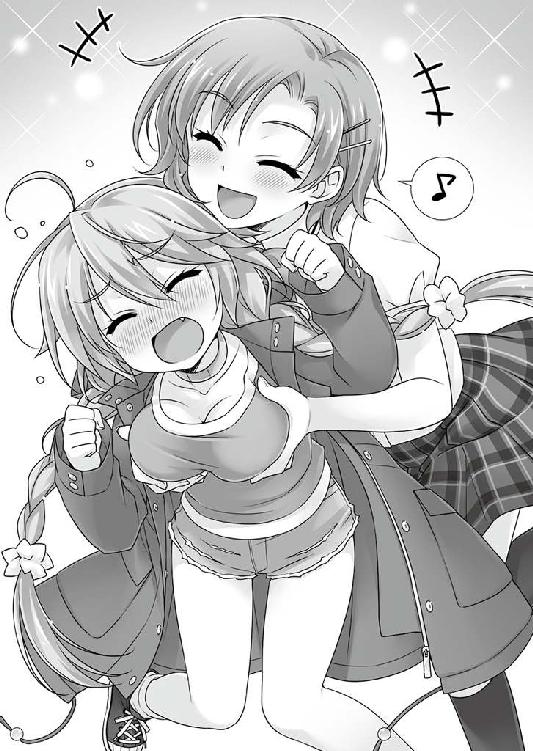
８番台の危険は承知だ。
しかし、「教室に戻る／９５１」は、選べない。
９番台のＰＧがどんな危険を運んでくるのか、まるで予想できない。それに、万一どころか高い確率で起きる『トラブル』は、周りを丸ごと巻き込んでしまう。学校の中に入ってしまうよりも、広い校庭に留まっている方が、もしもの時に動きが取り易いし、巻き添えだって少なくできるという計算もあった。
この『本』が告げるのは、自分に降り掛かる問題だけだが、一つの出来事は水面に投げる石ころと同じで、波紋を広げて波及する。自分一人では終わらない。
一條は、周りごと巻き込むような選択視を、「まだ大丈夫だろう」なんて憶測で、何の躊躇いもなく選べるほど面の皮は厚くなかった。
それでも選択は迫られるし、選ばなくても選択視は収束する。それが人生というものだ。
一條は、最後まで、自分で選び、決断をする。
全くもって優雅な人生とはいえないが、せめてもの意地だった。
人生の選択視は限られている──否応なくそう突きつけられてきたからといって。
──そんなものに、好き勝手されてたまるか。
「ぎゃにやああああああ！」
叔美が啼き出してしまった。
学校の正門のすぐ外での騒ぎだ。校庭に残っている部活の連中が何人か、キミたちに気づいて、微笑ましそうに眺めている。中には、ちょっと注意した方がいいかなという表情をしているヤツもいるな。
息をする間を惜しむように呼吸を止めて、『本』の記述を追いながら、これまでの人生のどの場面よりも、真剣に高速で思考する。
悪足掻きで終わるとしても、後ろは振り向かない。
千里一條は、いつだって前しか見ないのだ。
焦るな、落ち着けと、ともすれば見失いそうな自分に言い聞かせる。
重要なものは......そう、順番だ。
選択視にはタイムアップがついて回る。限られた猶予で、何から手を付けていくかの順番が大切なのだ。
もう一度、周囲にあるものを的確に素早く確認していく。叔美、久留美、正門、校庭には部活を営む生徒たち。物事には必ず「伏線」があるのだから、それを見落とすな。
腹に溜まった氷の泥めいた悪寒が去らない。一條の本能か、それとも直感かが、ここがまだ１４への途上なのだと告げていた。蜘蛛の糸みたいに細い道を踏み外せば、待つのは底の見えない奈落だ。心地は、薄氷の上を歩むに等しかった。
逃げ道のない行き止まりは、何歩先にあるのか。
遠ざける手立てを見落とさないことが、一條千里に今できる、唯一にして最善だ。
「ぎゃははははは」
「いーやー」
久留美と叔美がはしゃいでいた。
「うらら、待つっすよ、わたしの嫁にしてやるぅ！」
活字だと海岸で幸せムード全開のバカップルお得意のシチュエーションみたいだが、実際に目で見ると、泣き叫び逃げ惑う叔美と襲い掛かる久留美という、結構な阿鼻叫喚模様だった。
長閑に眺めて楽しんでいる余裕はない。
襲い来る「運命」を出し抜いて、叔美と久留美を救い上げる手掛かりを見出す為に、『本』と現実を見比べながら先に進む。
じ ゃ れ 合 い を 眺 め て い る 場 合 じ ゃ な い ぞ 、 身 構 え ろ 。 状 況 は 刻 一 刻 と 迫 っ て き て い る 。
頭 の 上 に は コ ウ モ リ が 群 で 飛 ん で い る 。 カ ラ ス で は な い ぞ 。 門 の 外 は 人 気 が な く 、 取 り 立
て て こ こ で 何 か 起 き そ う で は な い 。 頭 上 の 群 影 の 他 は 、 低 い 唸 り 声 が 聞 こ え て く る く ら い
だ 。 さ あ 、 も う い い か ？
「ふひひひ、たまらん、もそっと見せてー！」
「ああン!!」
まるっきり緊張感ねえ！
いや、だから、こんなのに気を取られている場合じゃないんだって──
右か、左、どちらか一方を選ぶだけ。簡単だろう？ それで、キミの運命は大きく変わるに違いない。おっと、どちらを選んでも、その場にいる叔美と久留美を連れて行くのを忘れてはならないぞ。
右に跳ぶのなら／７４７─■■■■ へ行け
左に跳ぼうというのなら／７５２─■■■■ へ行け
ＰＧ８５４の最後には、運命の選択視があった。
内容は簡単極まる二択。右か、左か。唐突に迫ってくる選択視のその簡潔さが、タイムアップの厳しさを印象させた。
一條は、残された猶予の全てを費やして、正しい選択を見出そうとする。
──選択が人生を変える。
この簡単明瞭な、誰もが知っている事実が、果てしなく重い。
一瞬先に訪れるかもしれない「行き止まり」の不安に耐えながら、一條は最善を選ぶ為に「選択」ではなく「行動」した。
記述を、もう一度確かめたのだ。焦りに身を任せて選ぶのは愚の骨頂。それは、「選択」ではなく運否天賦。選択の重圧から逃れて、一刻も楽になる為の、選択ではない選択だ。
何が起こるのかではなく、自身で何をどうするのか。
それが重要なのだと、一條は信じている。
二つの選択視は、依然どちらも１４の気配をさせたままだ。何を選んでも死の危険の途上でしかないという、その予感に全身の血が凍る。
しかし、選択次第で、終焉をより遠ざけることはできる。
それが、この『本』の「機能」であり「力」。
どこかの誰かが、どういうつもりか投げて寄越した、千里一條だけが見出せて、他の誰の目にも映らない──「例外の選択肢」。
だから、もう一度、選択視の記述を熟読した。
選択視には、「跳ぶ」と著されていた。走るでも移動するでもなく、跳ぶ。よほどせっぱ詰まった状況が起きるに違いない。
二つの選択視の条件に、何か違う点はないか？
動作する上でなら、右へ動く方が早い。叔美と久留美は、一條から見て右側にいる。何かが起きた瞬間に飛びつけば、一動作で地面に伏せさせることができるだろう。
左に動けば、タイムラグがある。叔美と久留美の腕を引っ張り寄せて跳ばなければならない。
だからといって、安易に右に跳び出すのは早計だ。目の前にぶら下がった利益という名の人参こそ、実は計算され尽くした罠の蓋を閉じる、悪辣な釣り針かもしれない。
もう一つ、違っている点を発見した。
右へ跳べば、正門の内側へ跳び込むことになる。左なら逆に外へ跳び出す。
......ちょっと待て、跳ぶ？
ブンブンとかつてなく高速で回り続ける思考の片隅に、ごく小さな何かが引っ掛かった。奥歯に挟まって取れないスルメみたいに、座り心地の悪い腑に落ちなさが、うなじの辺りの毛を逆立てる。
跳ぶといえば、「わたしの嫁にしてやるぅ」という頭の悪そうな台詞から、右か左へ跳ぶという選択視が現れるまで、唐突に文面が......それこそ跳びすぎてはいないだろうか。
気のせい、かもしれない、が──先を急げと急く自分を宥めて深呼吸した。
考えろ、精密に、正確に、見落としなく。
選ぶのは一度切りだ。やり直しは利かない。
この世の中は、ミステリーとしては丁寧に作られている。大概は手遅れになってから気づくが、ほとんどのヒントは制限時間内に提示されているのだ。
もう一度、ＰＧ８５４の記述をよく読んでみた。
「うらら、待つっすよ、わたしの嫁にしてやるぅ！」
じ ゃ れ 合 い を 眺 め て い る 場 合 じ ゃ な い ぞ 、 身 構 え ろ 。 状 況 は 刻 一 刻 と 迫 っ て き て い る 。
頭 の 上 に は コ ウ モ リ が 群 で 飛 ん で い る 。 カ ラ ス で は な い ぞ 。 門 の 外 は 人 気 が な く 、 取 り 立 て て こ こ で 何 か 起 き そ う で は な い 。 頭 上 の 群 影 の 他 は 、 低 い 唸 り 声 が 聞 こ え て く る く ら い だ 。 さ あ 、 も う い い か ？
右か、左、どちらか一方を選ぶだけ。簡単だろう？ それで、キミの運命は大きく変わ
何たることか！ 記述の一部が、もの凄く小さいフォントになっていた!!
爪楊枝の先のような印字で、凝らしている目を更に凝らさないと読めないのを気づかずに流し読んでいた。
何これ、これってインチキ保険の契約書じゃん。
実に非道い。たとえ伏線が著されていても、これでは見落として、そのままバッドエンドへ一直線だ。こんな卑劣な記述は、今まで一度もなかった。あるいは、これも『１４』のもたらす死の魔力なのか。
なんて恐ろしい......。
だが、隠されていたのは、重要であることの裏返しだ。
何時なのかわからないタイムアップが刻々と迫っているが、慎重に目を通す。
「うらら、待つっすよ、わたしの嫁にしてやるぅ！」
じゃれ合いを眺めている場合じゃないぞ、身構えろ。状況は刻一刻と迫ってきている。頭の上にはコウモリが群で飛んでいる。カラスではないぞ。門の外は人気がなく、取り立ててここで何か起きそうではない。頭上の群影の他は、低い唸り声が聞こえてくるくらいだ。さあ、もういいか？
右か、左、どちらか一方を選ぶだけ。簡単だろう？ それで、キミの運命は大きく変わ
選択しろと急き立てているだけで、大したことは書いていなかった。
あれっと首を捻りかけて、更にもう一度読み返してみて、とある記述で目が止まる。
..................低い唸り声？
周囲の音に意識を向けると、確かに動物の唸りめいた声が聞こえて──
違う、エンジン音だ!!
考えるよりも早く身体が動く。叔美と久留美に跳びついた。
「きゃあ!?」
「お、イチジョーもやりますか？」
誰が、何を!?
右に跳ぶのなら／７４７─■■■■ へ行け
久留美がじゃれてて、叔美が暴れていたのが幸いした。
不安定な姿勢で、横から不意打ち気味のタックルを仕掛けてきた一條を受け止めるのは、如何に体育会系万能女子の久留美といえど不可能で、それが結果的に三人を救った。
一條は、叔美と久留美をまとめて押し倒しながら、正門の中へ跳び込んだ。
直後──
グレーのバンが、まるで猛犬の唸りにも似たエンジン音をあげながら、元居た場所に突っ込んできた。
最初は音だった。
馴れ馴れしすぎる子犬のような久留美に襲われていたせいか、叔美はそれが何なのか、手遅れ寸前まで気づかなかった。
遠雷のように響き渡るエンジン音だと判断できた時には既に遅し。ほとんど真後ろの死角から、時速六〇km近い速度で車両が突っ込んできた。
居眠り運転による事故だ、と判明するのは後日である。
四メートルの砲弾と化したグレーの車は、『運命』に定められた者全てを巻き込んで無惨に撥ねて即死させ、車体も正門に激突して大破する──筈だった。
世界が回った。残念なことに回転しているのは叔美自身で、大空を仰ぎ見た辺りで、横から一條がぶち当たってきたせいだと朧気ながら理解した。
勝手に口から悲鳴が出た。一條も久留美も叫んでいた。自分の声も他人の声も、間近の轟音に掻き消されて、耳まで届いてこない。急変する状況にパニくっていたのに受け身を取れたのは、きっと奇跡が大安売りだったからだろう。
叔美の頭上から、落ちてきたものがある。それは確かに、さっき走っていた車だったモノの一部、右のドアだ。スチール塊は回転する刃よろしく、叔美の首へとギロチン同然に落下する。
何もかも一瞬の出来事だ。
──当たる筈なんてない。
ほんの一瞬前まで自分の首があった位置で、即席のギロチンがコンクリートとぶつかって跳ねるのを、叔美は呆気に取られた顔で見届ける。
間一髪、一條に腰の辺りを掴まれて引き寄せられて、レトロな断頭処刑の結末を回避した叔美は、抱っこされた熊のヌイグルミみたいに、足を投げ出してペタリと座り込む。
一條が早口で何かを喋っていたが、耳が死んでいるのか何も聞こえない。あるいは、感覚は正常でも、精神が音をシャットアウトしているのかもしれない。
油の切れた機械さながら、骨の軋む音が聞こえてきそうなぎこちなさで首を巡らせる。
そして、背後で待っていた光景は、予想に輪を掛けて凄惨だった。
突っ込んできたグレーのバンは、正門の隣のブロック塀に激突して動かない。車の前半分は特に酷い有様で、どれだけ贔屓目に見ても原型を留めていない運転席の中が、どれだけ笑えない状況なのかは想像するのも御免だ。
「────」
時間の止まったような静寂。
壊れたクラクションだけが、耳に痛く鳴りっぱなしになっていた。
やがて、麻痺したような世界の停滞が、ようやく人並みの動きを取り戻して動き出す。
騒ぎを聞きつけたのか、校庭から学校内から、人が集まってくるところだった。
「今のな──」
一條に押し倒された格好のまま、状況にまるでついていけてない久留美が下から何かを言う前に、叔美は立ち上がっている。
「叔美、どこへ──」
背を向けた彼女に何を見たのか、一條が手を伸ばして捕まえようとして、
「これ以上、アタシに拘わるな」
振り返りもせず、一刀両断で言い捨ててから、後ろも見ずに走り出す。
──逃げ出したのだ。
何かに追われるように、叔美が走り出した。
咄嗟に追い損ねた一條の視界から小さな背中が消えると、何故か、脳内で五月蠅くがなり立てていた本能の赤い警報ランプが、キレイさっぱり消え去った。ずっと薄いオブラートのように我が身に張り付いていた、不安も、怖れも、掻き消される。
敢えて言うなら、ようやく長い夜を抜けて、山間から昇る最初の曙光を目にした気分だった。
その代わりに、別の色の警告ランプが灯っている。それがどういう色なのか、何を告げているのか、一條自身にもよく判らない。
死の危険が完璧に去ったのだと、根拠もなく納得する。
それは言うまでもなく、とある決定的な事実の裏返しだ。
──この選択視を招いたものが、何だったのか。
今更だ。一條には、最初から答えが見えていたのだから。
何をするべきか考えがまとまらない。立ち尽くしたまま、右手で『本』を閉じたのは、身に付いた動作でしかなかった。
『本』は消える代わりに再びページを開き、主の機微を知り尽くした老練な執事のように、ここが人生の《分岐点》だと告げる。
「............ッ」
一瞬、怒りに近い感情が胸の奥にチリつきかけた。
ＰＧの記述を確かめるまでもない。今回のＰＧの最後に著されているだろう選択視を予想するのは、定期試験の出題範囲をヤマ掛けするよりも簡単だ。
こいつは......この『本』は、叔美が傍に居た時、何度となく繰り返していた諫言を、今度もまた偉そうな冷笑混じりで囁くに決まっているのだ。
いい加減、意地を張るなよ、と。
「事故っす......事故だあ、ぴやあぁぁぁ......」
一條の下で、久留美がようやく状況に追い着いてきた。彼女は、驚きでも怒りでもなく、ただただ呆気に取られている。
真っ当な人間であれば、生き死にの境を越えた直後には、正常な思考なんて一から十まで麻痺してしまう。一條の選択がほんの一秒遅ければ、三人とも、今頃この事故で本物の仏になりかねなかったとは、まさに知らぬが仏。
「イチジョー......もしかして、助けてくれたっすか？」
「どうだろう、咄嗟だったから」
「落ち着いてるっすね。でも、そういうイチジョー見ると、わたしもちょっと安心しそー」
──落ち着いている？ そんなことないよ。
見た目には普段通りの顔で、一條はへたり込んでいる久留美に手を差し出す。
「久留美は平気？ 立てる」
「軽い軽い............って、駄目みたいっす、腰抜けちゃって」
「それなら、ジッとしてて。すぐに先生たちも来るから。救急車も呼んでるだろうし」
一條は、とっくに久留美を見ていなかった。視線は誰もいない街路の先へ。
「叔美がパニくったみたいだから、悪いけど、後は任せるよ。先生とかに訊かれたら、僕は『ブエルタの風になった』とでも言っておいて」
「......イチジョー、ロードレース好きだったっすかね？」
「最近興味持ったんだ」
久留美は、それ以上細かいことをとやかく訊ねなかった。
せっぱ詰まった状況なのに、彼女は不思議と目尻を下げている。元気過剰の久留美が、とても少女に見えて、ほんの一瞬ひどく途惑う。
彼女の顔に浮かんでいるのは、事故の衝撃からようやく晴れた安堵でも、一方的に押しかけてなった友人の行動を奇矯に思っているのでもない。では、どんな感情かと問われても、一條にはよくわからない。
「さっきの子、叔美ちゃんっていうんだ。ふぅ〜ん、おもしろい名前っすね」
「部外者を学校に入れたのがバレたら大目玉だから、何とか誤魔化しておいてくれるかな」
彼女は腕を組んで、難しい顔で何やら考え込んでいた。事故直後なのに立ち直りが早い。
「叔美ちゃん、イチジョーの親戚です？」
「違うけど」
「......ま、いいっすよ。『わたしとイチジョーの仲』じゃないっすか。この場は、この久留美様が任されました」
「任せた」
一條は、別れの手も振らずに走り出す。時間が惜しい。
胸の怪我が、さっきので悪化したかもしれないが、今はアドレナリンだか何だかが出ているせいか、大した痛みを感じない。
『本』は、同じ速度でついてきていた。
７４７─■■■■
危ういところだったな。右に跳んだから、学校の外壁が車の盾になってくれた。左だと、どうなっていたのかは......まあ、そうならなかったのだから考えてみても仕方ない。
最近は車というと事故ばかりだな。よほど何かに憑かれていたんだろう。しかし、安心していいぞ。三人で挽肉になる運命から逃れられたのは、まだキミが何かを持っているからだ。
危機は、去った。わかるだろ？ 本当の意味で、危機は去ったんだ。いなくなった。
さて、いつもの時間がやってきたぞ。
..................わかっているとは思うが、行くべき道は「二つ」しかない。
片方は危険だらけ。キミの信条的にも、今後の身の安全の為にも、元の平穏な日常を取り戻す為にも、正しい答えを選ぶことを進めよう。
無理をして、信条を曲げる生き方を選んだところで、キミに得られるものは、何もないのだから──
──余計なお世話だ。
『本』に分別を説かれるのは頭に来たが、返事もしない相手に噛みついても虚しいだけだ。
叔美を追い掛けるなら／７９３─■■■■ へ行け
叔美を追い掛けないなら／１９１─■■■■ へ行け
ＰＧの最後の選択視は、予想通りだった。
叔美が拘わる選択視には、事ある毎に付きまとう定番だ。
いつでも見捨てていんだぞと、甘い誘惑を囁き続けている。
弁えろ、そろそろ止めておけ、これ以上は踏み込むな。
思えば、この『本』は事の始まりの前からそう告げていた。
疑う余地なく、彼女──叔美は『ＰＧ１４』そのものだ、と。
それこそ死神としか呼び様はないだろう。
だから、叔美を追い掛けるという選択は、何処までも矛盾している。
近づく一歩ごとに、ＰＧ１４へと近づく。望んで死へと向かいながら、いつかは必ず訪れる行き止まりの終点を、必死になって先送りにしようとする、馬鹿げた堂々巡り。
誰よりも選択が見えて、誰よりも１４が怖い自分なのに。
どうして、そんな徒労を選び続けようとするのだろう。
答えは出ない。
ただ、走る足は止まらなかった。
──まただ。
叔美は、走る。後ろも見ない、見事な逃げっぷりだ。
ただの弱虫の、その場逃れの行動だった。
吐き気のような、粘度の高い感情が腹腔の底で蠢いていた。この感覚が還ってくるのは久しぶりだ。
以前は、もっと警戒心旺盛にやってきた。慎重と拒絶を鎧に着込んで、全身をガチガチに固めて、些細な事にも油断せず、気を緩めず、誰にも隙を見せず、そもそも近づいたりせずに、たった独り、どんな道だって平然と渡り歩いてきた。
そうすることで、この鬱陶しい気分をずっと遠くへ突き放せていたのだ。
それなのに──
ぎりりっ、と忌々しげに噛み締めた歯を軋ませる。
何もかも奥志麻に来てからだ。歯車が狂ってたまらない。
一條や碧流たちのような、あんな薄っぺらい連中に、ちょっとばかりの情けを掛けられたからって、そんな程度で隙を作ってしまうのは堕落もいいところ。
これまで、叔美はずっと独りだった。
あの人里離れた土地で、母親と一緒にいたのは、今は遠い昔の出来事。
二人で過ごしていた、変化に乏しい時間が止まったような穏やかな日々──それが終わった後のことは、想い出すのも億劫だ。
ついでに言えば、一條や碧流に教えるつもりも毛頭ない。
ヘタレの甘ったれて薄っぺらい綺麗事が、叔美は世の中で二番目に嫌いだ。
珍獣扱いなんて願い下げだし、可哀想にと慰められて同情されるのは、更に輪を掛けて真っ平御免である。
孤独も、踏み止まれば孤高に変わる。
きっと、その強さが叔美には必要だったのだ。
どんな形だろうと同情されることを由としてしまえば、自分が可哀想なのだと認めてしまうことになる。自分を卑下すれば、歩く力がなくなる。
叔美は、誰から教えられるでもなく、その理屈を自明として身に付けていた。
もしかしたら、これまでにとても憶えきれないぐらいすれ違ってきた誰かの中の、どこかのお人好しな年寄りが、もっともらしく語ってくれた蘊蓄が根っこにあるのかもしれなかったが、もはや記憶にも残っていないのだから、同じことだ。
──叔美には、沢山の名前があった。
ある者は「祟り」と言った。ある者は「人柱」と呼んだ。「呪い」だと指差す者もいたし、「神の子」だと崇め奉ろうとした者もいた。
そんな奴らは、残らず死んだ。そうでない奴らも、軒並み死んだが。
この宿業、叔美の周りに凶事を呼ぶ「何か」は、博愛精神過多である。公平無私で平等極まりない。一切合切区別をせず、どいつもこいつもまとめて『死』という大鍋に叩き込む。
いつも、只一人、叔美だけが生き残る。
まるで他人の命を吸っているかの如く、自分だけが怪我一つなく。
つまり、叔美は『猛毒』なのだ。
大昔の欧州を一呑みにした最悪の流行病のように、拘われば拘わっただけ、命という命を攫っていく。
いつしか、独りでやっていくようになった。
人の集まるところへ近づくのも、可能な限り避けようとした。何かの弾みで縁ができてしまわないとも限らない。生き馬の目を抜くような世の中だというのに、頭のネジがイイ感じに緩んだお人好しは、何処にだって一人か二人は混じっていた。
自分も飢えていたのに食べ物を分けてくれた爺さん、迷子と勘違いして親を捜そうとしてくれた若い夫婦、独りの叔美を仲間に入れようとした子供たち......。
近づく不吉に鼻の利かない盆暗どもが一体どうなってしまったのか、叔美は努めて考えないようにしてきた。
自分とすれ違った名前も知らない初めて出遭う誰かが、次の日には叔美の知らないところで野垂れ死ぬ。
何が起こっても、自分は鐚一文どうにもならない。
そう、ならないのだ。
──なってしまえば、まだしも気は楽だった。
学校なんて、近づくのは愚の骨頂。
誰よりも自分自身で、わかっていたクセに。それなのに、そんな馬鹿げた真似を自分に許してしまったのは──
つい、夢を見てしまった。
もしかしたら、今回だけは大丈夫なんじゃないかって。
奥志麻に来てからのことは、叔美にとって初めて尽くしだった。
ここには、かつてなく叔美の名前や顔を知っている人間がいる。一條とか碧流とか、オカマダさんとか、美人養護教諭だと名乗っていた三輪もそう。他にも、もっと居るだろう。
どの名前も、よく憶えている。叔美は、一度聞かされた名前は忘れない。
何よりも一番巫山戯ていることは──
この一週間、まだ誰も死んでいないのだ。
考えられない。バカみたい。
どいつもこいつも、薄っぺらくて面倒くさくて気に入らない奴ばかりだが、叔美にとっては初めて触れ合う他人に違いない。
本来とっくに、全員揃って墓に入っていなければならない筈なのに。
そもそも、ことの始まりからして尋常ではない。あれだけ叔美と拘わって、生きているまともな人間は一條ぐらいだ。
最初は、千里一條だけが、特別なのかと思った。
だから、立ち去るべき理由も、立ち去った方がいい事情も、数えるのが面倒なくらいあったのに、軒並み全てを棚に上げてここに残ってしまった。
本当に、自分と一緒にいても死なない誰かが、この世界に居るのだろうかと。
確かめたくて一條の周りをウロチョロしたのは、今思えば軽率だったかもしれない。
それでも、あんなに薄っぺらいクセに、一條は死なず生き延びた。出遭った時と昨日の事件と、凶運と行き遭ったクセに間一髪で死に損ねている。
──そんなことは、あり得ない。
何もわからないまま去りたくなかった。
もう二度と、出逢えないかもしれないのに。そう思えば動けなくなった。
碧流に言われるまま、甘えるように居残って、そのクセ、自分のせいで一條や碧流や他のヤツが死んでしまう「決定事項」に、夜ごと魘されて飛び起きて嗚咽して、毎日寝不足になるぐらいに怖かった。
それでも、飛び出せないのが情けない。
普通に寝て起きる場所がある。朝起きてやることがある。誰かが声を掛けてくる。
そんなもの..................ずっと忘れていたのだから。
誰も死なない、不幸のない一週間で、自分はすっかりナマクラになってしまって。
だから、いい気になってしまった。
──でも違う。
さっきの『事故』で、一目瞭然だ。
叔美の『毒』は、回りが遅くなっていただけで、今もここにある。
気を緩めるのを狙って、ずっと息を殺して待っている。
それでも──。
「アタシが一番嫌いなのは、投げ出すヤツだ」
だから、と思う。
もう、これ以上、ここには居られる筈がない。
一條は、追い掛けた。
とっくに見えなくなった叔美を捜して走る。その為に、次々に選択視を選んだ。
その都度、誘惑の文言が影のように張り付いていた。
今すぐ学校に引き返せ。追い掛けるのをやめろ。
７９３から８１１、そして８２７へ。
叔美を捜そうとするほど、危険の気配は増していく。それは距離が近くなっている証明なのか、それとも違うのか。
選択は全て綱渡り。気を抜けば、どこかにＰＧ１４が待ち構えているかもしれない。
一條は、１４の気配を知っている。選択視から匂い立つ僅かな気配を頼りに致命傷の選択を避け、叔美を追い続けることができる。
いや、本当は半ば無理なのを承知で、強引に食い下がっている。
いつかは切れる蜘蛛の糸を、見えない頂き目指して永遠に登り続けているようなものだ。
「叔美はどこに......」
拳に力を込めて、余計な考えを振り払う。叔美の居所を思案した。行く宛てもなく出鱈目に走っているのだとすれば、見つけ出すのは至難の業だ。
「そうじゃないのなら──」
走って苦しくなる息に、一年前の出来事を思い出す。
あの時も同じだった。どこまでも走った。行き場なんてなく、ただ逃げ出そうと走っているに等しい鼠の気分で。
アタシに拘わるな。叔美の拒絶が耳の奥にリフレインする。
──古い記憶の断片が重なる。欠け落ちた穴だらけのピースのように。喪われたものは還ってこない。それは欠けたのではなく、失せてしまったからだ。
女の悲鳴、男の嘲る声。年老いた怒りの声。ありとあらゆる声が、意味もなくお互いを罵り合っているような轟きを遠くに聞きながら、一條は中心へ近づいていく。
ひたすらに。入り込んでしまった迷路から逃げ出そうと、視界の利かない闇の中を走り抜ける内に、ひと続きの笛の音がすぐ近くまで迫っていた。
それは笛ではなく、歌声だ。
この世のモノとは明らかに異なる「何か」が、もう目と鼻の先で歌っているのが聞こえてきて──
「────」
次のＰＧへ向かって、ページが捲れていく感覚で正気に戻った。
８２７からさっき選んだ「叔美を追い続ける／８０１」へ移動している。
このＰＧの最後に著かれている選択視の内容も、見るまでもなく予想できた。
ここまで追い掛けてきただけで十分だろう。叔美は、勝手に奥志麻にやってきた。死にかけていたのだって、自業自得に違いない。この一週間、よくしてやったじゃないか。これ以上は採算が合わない。支払う対価が高く付きすぎる。今度という今度こそ逃げ遅れてしまう。だから、落ち着いて状況を考えろ。叔美を追っている連中もいる。まともじゃないあんな連中を相手に、自分一人で結末を変えられると思うのか？ 大体だ、アイツ一人助けたところで何の得にもならない。今すぐ引き返して、久留美の処へ走るんだ。早くしないと、本当に取り返しがつかなくな、
「──黙れ」
喧しく囁く、幻の声を一蹴する。
自分が冷静ではないと、一條だって気づいている。
一歩進む毎に危険が掛け算で増えていく。そんなこともわかっている。
「選ぶのは僕だ。何もかも。お前じゃない」
力強く、断言した。
頭の中で後ろ髪を引いていた声が、ようやく黙る。
後悔するぞ。
最後まで、往生際悪く呻く自分の怖れを振り切って、足を速めた。
「──よし」
ようやく叔美の背中が見えた。追い着いたのだ。
８０１─■■■■
地理に詳しくない叔美なら、素直に往路を引き返すのでは、というキミの推理が大当たりのようだ。追われているのに気づいた叔美は、キミを撒こうと左に曲がるが、もう逃がさない。叔美は、神社の入口を更に奥へと進もうとする。古い鳥居のところで息が切れたのか、観念して足を止めた。
さてはて......やっと追い着いたな。
周りは静かで、人気は幸いにもない。何か怖いものが飛び出してきてもおかしくない雰囲気だが、大通りからは少し外れているので話をするにはもってこいだろう。
「待って、叔美。待ってったら......」
キミが呼び掛けても、叔美はまともに聞く耳を持たない。引き留めるのは無理そうだが、まだ続けるのか？ キミもよっぽどだな。
「はー、ひー、はー、ひー」
「ふー、ふー、ふー、ふー」
一條は詰め寄ろうとして、叔美は振り払おうとして、お互いに限界が来た。走り過ぎだ。三〇秒タイムを取ってから、再開した。
「ふー......アタシに拘わるなっていったろ。これ以上、ついてくンな」
「ひー......ついていってない、僕が勝手に追い掛けてきたんだ」
「へ理屈こねやがって......うっとうしいンだよ」
やはり、とりつく島もない。
叔美があの場を逃げ出したのは、結果的には正解だ。
おそらく、真っ当な立場と方法で入国してきたわけではないのだろう彼女は、事故の現場にやってきた警察に見咎められれば、非常によくない状況に陥っていた筈だ。
（後で、久留美に上手く言っておかないと──）
なんて言う？ 一條は、頭の中でシャドー対話をする。全部説明する方法。それとなく誤魔化してしまう方法。土下座して泣き落とす方法。どの方法でも、割り切れずに余りが出た。
「......余りは四捨五入かな」
細かいところは見ないフリをする。あれでも、久留美はよく気が回るタチだ。余計なことは訊かないでいてくれるかもしれない。かも......だが。
物事には順番がある。今は、脳内の久留美ファイルの順番を最後に回した。
一つの選択を終えなければ、次は選べない。
「叔美、僕の話を──」
引き留めようと叔美の腕を取ったら、乱暴に振り払われた。
「触るな、はなせ」
もう離しているから離せも何もないのだが、叔美はドスの利いた声と挑み掛かるような眸で、一條を威圧する。
どこから見ても怒っている顔なのに、どうしても泣いているようにしか見えない。不思議と、見ているこっちが悲しくなった。
「アタシは出て行く」
「どうして、」
と訊ねてから、自分がとてつもなく間抜けだと気づく。
叔美は、一條が復帰するまでの代役だ。約束の一週間はとっくに過ぎた。『アンブロシウス』を出て行く理由も権利も、叔美にはある。
「行くアテ、ないんだろ」
「そンなの欲しくもない」
「そんな強がり──」
反応は激烈だった。台詞を言い終える前に、叔美は思いっきり振りかぶって握ったゲンコツで、一條の横面をぶん殴った。威力よりも不意打ちだったせいで、骨に響いた。腰が砕けなかったのは運よくである。
「今のは......結構効いた」
腰の入った、目眩のしそうな一発だ。二発目は飛んでこないようなので、一安心というところだ。
ＰＧはそのまま進み続ける。
叔美のグーパンを「避ける」か「避けない」かの選択視は出なかった。それはそもそも、このＰＧでは殴られることが『運命』付けられていた、ということだ。
「────」
一條はこれまで、目障りなクセにお節介に行き先を示してくれていた不可思議な『本』と、半端なりに上手く付き合ってきたつもりだ。
だが、今はその『本』を閉じた。
が、消えたのも一瞬。当然のように『本』は自動的に現れる。
一條だって、この状況ではそうなる筈だと思っていた。
その当たり前さが腹立たしくて、鬱陶しくて──『本』と目を合わせるのを止めた。押しつけがましく開かれたＰＧの記述は、もう追わない。
──見たくなかったのだ。
「アタシは、さっさと出て行くつもりだった。チンタラしてたのが間違いだ」
「やっぱり..................あの爪男に、心当たりがあるんだ」
今度も、反応は如実だった。
叔美の顔色が、見ていて可哀想になるほど変化する。血の気が引いて、クシャクシャになりかけて、最後の一線で自分を保って虚勢を張り続けた。
「あれは、叔美の厄介事なのかな」
そこまで聞いた叔美は真剣な顔で、上目遣いに一條に迫る。
「..................変だろ、オマエ。どうして、そんなに自信満々で、『アタシの厄介事』だっていえるンだよ」
「────」
咄嗟の返事に詰まる。叔美の台詞は、濡れ衣を糾弾するものではなく、「どうして判るのか」と問い詰めるものだ。
仮定に仮定を重ねているとはいえ、一條には、叔美と爪男を繋ぐ線を推測できるだけの材料が幾つもある。そもそも、爪男が「捜した」と叔美に告げるのを、耳には聞こえなくても目で見たのだ。
そう、一條には、「見える」のだから。
「最初から、そんな気がしてたンだ。オマエ、やることなすこと変だしな。そのクセ、ネジが外れてるってわけでもない。いや、外れてるのは外れてるのか。まあ、そンなことは、どうでもいいンだけど──」
一條へ、ハッキリと敵を見る目を向ける。
「オマエ、『なにか』見えてるンだな」
叔美が言った「見えてる」というのは、あくまでも喩え話だろう。
彼女から見て筋が通らない一條の行動を説明するには、彼女には理解できない何らかの手段と方法で、相手には自分の正体が見えているのだと考えるのが一番スッキリする。
一條にしてみれば、それは痛い急所だった。
奇異の目を避けようとして、誰の目からも上手く誤魔化してきたのに、出遭ってから間もない叔美が、「見える」という言葉で喩えるほど的確に「秘密」を言い当てたことに驚かされる。
叔美は、本当の意味で聡い少女だ。
深呼吸をする。慎重に、ここから先に対処できるよう、気合いを入れ直す。
「──見えるよ」
正面から叔美の眸を見て、誤魔化さずに答えた。
１４へ続く虚を覗き込んでしまったような錯覚に、無意識に一歩下がりかけたのを、ヤセ我慢して踏み止まる。
傍らの『本』は、一條が読まなくてもお構いなしで、腹立たしいぐらい、いつも通りの挙動。
叔美との話に没頭していたから、今のＰＧが８０１のままなのか、とっくに次の選択視を選んで、もっと先に進んでいるのか、わからない。
『本』に目を通しさえすれば、叔美に何を告白すればいいか、どう説き伏せればいいか......『運命』が分岐する様が著かれているのだろう。
今は、確かめる気にはなれなかった。
本当に、踏み止まれなくなるかもしれないから。
さっきのように、行き止まりしか『道』がないと声高らかに宣言されてしまったら──
それでもこの先の選択を選び通せるかどうか、正直自信がなかった。
「ふーん、見えてるのに黙ってやがったのか。それは......まあ、イイや。アタシだって黙ってたことあるし、おあいこだな」
叔美は、一條が熱くなるほど冷めていくようだ。まるで彼女らしくなく、極めてクールに、皮肉げに鼻を鳴らす。
「なにが見えるンだよ、オマエ」
「それは話すと凄く長くなる」
「長いなら、いらない」
叔美は、細かいことには気を回さない上に、気が短いタイプの少女だった。
「一番大事なことだけ聞く。オマエには、アタシがどう見える」
直球で来られて、迷わなかったと言えば嘘だ。
「拘わると..................死んでしまう」
叔美が真っ直ぐだったから、見えていたモノをハッキリと言葉にした。
「......オマエ、バカなの？」
なにバカバカしいことマジで言ってんのかよ──
では、なかった。
叔美のヒドく抑えた、絞り出すような言葉は、間違いなくどうしようもなく真剣に、泣きそうな声だった。
──それが見えているのに、どうして手を差し伸べたのか。
ぶっちゃけて言えば、端的に「バカ」なのか。
身体の奥まで突き刺さるような叔美の問い掛けに。
──バカなのだろう。
さっきの事故は十中八九どころか、ほぼ間違いなく叔美が「原因」だ。
普通では考えられない。何の因果関係もない交通事故の原因が「叔美」というのは、「『本』が人生の《分岐点》を教えてくれる」のとは、段違いのレベルで常軌を逸している。
一條の『本』は、突き詰めれば「情報処理」だと定義できる。絶対音感の持ち主が、音階の違いを精密なある種の形状として厳密に判別できるように、自身の置かれた環境や変化を本の形で認識し、分析しているのだと説明が可能だ。機能として高度で、常人離れしていても、入力と出力の問題である。
凶運──それも、拘わった他人に死を招く、となると次元が違う。
ロジックが説明できない。
理解できないものほど、人間にとって恐ろしいものはない。
「オマエ、最初からわかってたンだな。どうして、アタシに拘わったンだよ!?」
「放っておけなかったから」
「なにそれ！ バカみたい!!」
正直に伝えれば怒るだろうと思ったら、やはり怒った。
結局はそこに戻ってくる。自分は、バカなのだろう。
叔美は死神だ。本人が望んでいるのか、どんなカラクリかはともかく。彼女に拘わることで、罠のように死への選択視が現れてしまう。
さっきの事故でも、一歩間違えれば久留美を含めた誰かが、もしかしたら全員が、１４を踏んでいたかもしれない。
いや──
死神が、自身の「力」で死んでいれば世話はない。叔美が巻き込まれてしまうなら、彼女はとっくに死んでいなければオカシイ。
──叔美だけは死なない。
一條は、考える。
これまで必死で何とか遠ざけていた１４が、もはや後ろ髪に触れてくる位置にいるのではないか。怖気を振るう磁力で、こちらを引き寄せようとしているのではないか。
さーっと全身の血の気が引いた。
叔美と遭って『時間』が経過したからか、それとも、多少でも一條と叔美との『距離』が縮まってしまったせいなのか。
まるで運命の女神が、叔美に近づく者に嫉妬して殺そうとしているようだ。
「アタシは、このまま行く。荷物もないから、『アンブロシウス』には戻る必要はないしな。碧流には適当に言っておいて」
踵を返した叔美の小さな背中は、ぶ厚い拒絶の鎧で装甲されている。
仕方のない事なのだろう。
それこそ、選択の余地などあり得ない。
叔美は『本物』なのだ。自分だけならともかく、彼女の猛毒は、周囲の不特定多数に被害が及ぶ。どれだけ広がるのか予想もできず、一條にそれを阻止する手段がない以上、この先できることは、ただ叔美を見送ることだけだ。
それで、問題は解決する。
『ＰＧ１４』は去っていく。他の誰かが、危険に晒されることもなく。
昨日襲ってきた爪男にしても、叔美がいないのに一條を襲うほど暇ではないだろう。何度も、水面下で蠢く１４のやり過ごし方を考えなければならなかった、ここしばらくが異常だったのだ。全て世はこともなし。何もかも元通り。
叔美と出遭う前の、静かな奥志麻の日々が戻ってくる。
それで、いいじゃないか。
──本当に？
「......いい訳ない」
他の誰だって、きっと叔美を追い払う選択をする。
安全で、平穏で、穏やかで、優雅な人生を選び取る。
誰も損はしない。ただ一人を除いては。
叔美は、また独りになる。
あの路地で見た横顔のように、ぽつんと行き場もなくへたり込んで空を見上げるのだ。
この世界で、叔美を受け入れてくれる場所や人が、一体どこにあるというのか。
何故なら、叔美は「死」なのだから。
人間は、本能として行き止まり死を怖れる。
どんな金持ちにも貧しきにも、いつか必ずやってくる公正無比な終端。
目に映らない１４を音もなく運んできて、自分だけが生き残る。そんなおぞましい生き物は、紛うことなく怪物だ。
怪物が、人里から遠ざけられるのは仕方がない。
誰だって、目には見えない選択視を手探りしながら、日々自分の生活を守って慎ましく生きていくので精一杯なのだから。
一條が一度は差し出した手を引く選択をしても、誰も非難しないだろう。
──するとすれば、自分だ。
見捨ててしまったことを、投げ出してしまったことを、何もできなかったことを。
この先ずっと忘れられない。
きっと、悔いになってしまうから。
「逃げるのか！」
激しい感情に任せて踵を返した叔美の背中に、叫ぶ。
千里一條は、過ぎたことを振り向くわけにはいかない。
ここまで遣ってきたのに、勝手に駄目だと見切ってしまおうとする彼女にも腹が立った。
頼まれたわけではない。自分で勝手に遣ったことだ。
だからといって、それとこれとは話が別である。人間だから、腹が立つものは立ってしまう。
負けず嫌いの叔美は、一條の予想通りの行動を取った。
「何だと」
ベタ足のインファイターボクサーみたいに足を止めて、ハッキリと怒りの宿った眸で一條に向き直る。
「バカみたい、バカみたい、バカみたい！ はンっ、それでアタシを怒らせて、どうするンだよ？ オマエは頭が悪すぎるから、念のために忠告しといてやる。死ぬのはオマエだけじゃないからな。アタシの周りのヤツは、軒並み全部ひとまとめだ」
詰め寄って、ぶち殺してやるぞ、と言わんばかりの啖呵。
死にたいのか、と叔美は迫る。
自分だけじゃなくて、家族も、友達も、知り合いも諸共全部。
──死ぬのは御免だ。
選択は行動を、行動は結果を生む。
誰も何も傷つけない選択、なんて都合のいいものはないのだろう。だからといって自分は勿論、周りの誰かを勝手に生贄にして良しとするのは本末転倒だ。
一條にとって、前兆を告げる『本』は、邪魔であると同時に、得難い導き手だった。
危険に踏み込むな、愚かな事をするなと教えてくれる。
すげなくしても、愚痴一つ零さない。
誰よりも近くにあって、一條が一條であることを証明するものでもあった。
今、この瞬間も、『本』に目を向ければ、現在置かれた状況への解答を分かり易い選択視にして寄越すだろう。
叔美とは拘わるな、と。
そんな正解は選べない。
だから、ギリギリの意地を張った。今は、この『本』には縋らない。
どうにもならない道理も、分かり切った結末も、薄々見えているクセに。
まるで駄々を捏ねる子供のようだと自分で思いながら、それでも自身の頭で考えた選択視で、叔美と面と向かい合おうとした。
しかし、だ。
正直、辿り着くべき『結末』を思い描けない。
バカ、何とか考えろ。知恵を絞れ。
壊れたモーターよろしく回転の止まりそうな脳みそへ、必死に喝を入れる。
この状況を打破できなければ、一條か、叔美か、どちらかがハズレを引くのを黙って受け入れなければならなくなるのだから。
「待って!!」
自分でも思いもよらず、ビックリするほど大きな声で叫んだ。
「三〇分待って」
「......はあ？」
ほとんど脈絡もなく、その上やけに具体的な時間が出たので、流石に叔美の足が止まる。
「貸していた時間を返して貰う」
「なに訳のわかンないこと言ってンだよ、オマエ？」
「土曜日に、三〇分休憩したろ」
「あれは、碧流が──」
「僕が助け船を出したから、叔美は三〇分手に入れた。なら、その時間だけ、今僕が貰うのは、筋が通っていると思わないか？」
咄嗟に思いついた、最後の手札だ。
「な......なにが、どう通ってるンだよ！ そんなの」
「借りを作ったまま、逃げるのか？」
「誰が逃げるか!!」
負けず嫌いの叔美は、上手く乗ってきた。
「......三〇分ぽっちで、なにが変わるンだよ」
おそらく、最後の機会だったのだろう。
これでもダメなら、納得できたかもしれない。
先送りの猶予を使い切って、何一つ手段が見つからなかった時に、それでも自分にできる限りの事はしたのだと、最後まで精一杯頑張ったけど上手く行かなかったと、叔美を追わない理由を造り出せたかもしれない。
しかし、もうダメだ。
彼女に問い返されてしまった。
本当は行きたくないのだとわかってしまったから。
千里一條は、二度と手を引くことはできなくなった。
「何とかする！」
言い切った。根拠も何もなくても、言わずにはおられない。
『本』を見ずに、何もかも決めたのだ。
今までの自分とは、違う自分になった。
行く先はわからないのに、不思議な満足感がある。大きなものを勝ち取った気分。
言うなれば、「やったぞ、ふりーだーむ!!」といった勢いだ。
しかし、勢いだけで世間が回れば苦労はない。
「具体的に言えよ」
「..................これから、考える!!」
バカか、という顔で見る叔美。
けれど、さっきまでとは違って、小さな花が咲くように唇が綻んでいた。微笑ましいものでも見るように。きっとあり得ないかもしれない望みを、それでも賭けてみようというように。
一條はどこまでも真剣だ。たとえ一〇時間あっても、叔美の『問題』を解決できるゴール地点を見出せる可能性は限りなく皆無だ。それを三〇分で？
やろう、と決めた。
何としても、どうやっても、この状況を覆す。
──無駄だって気づけばいいのに。
一條が気づけたのは、異常にだった。
意識の全部を叔美に向けていたから、とっくに手遅れになってからだ。
変じゃないか？
叔美と出遭ってから、初めての真剣さで彼女に立ち向かっている。ずっと隠していた真実さえ告白した。
ここまでに何度か《分岐点》での選択があって......当然だと思う。
選択視が選ばれると『本』のページは、次の運命へ、次のＰＧへ向かって、前へ後ろへとパラパラと捲れていく──のに。
記述を読むのをやめてからも、ずっと一條の傍らに現れ続けていた『本』のページは、今に至るまで粛々と捲れ続けているだけ。
パラリと。
見えない手でページを捲るように、また一枚。
あり得ないことが起きたのではなく、あるべきことが起きないからこその異常事態。
──ここはまだ、ＰＧ８０１の途中なのだ。
前言も個人的憤りも撤回して、見るのをやめた『本』の続きを一気に読み下した。突然怖い顔で黙り込んだので、叔美が不審そうに見ていたが、今は説明する時間が惜しい。
一條は、これと同じ事態に、つい最近も遭遇している。
昨日の夕方に。アレが現れる直前に。
詰まるところ、本来なら《分岐点》になり得る筈の選択視が無意味になり、ずーっと同じＰＧが続くのは──
気がつくと、日はとっくに暮■■いた。
空を灼く血の色じ■■■昏の最後の欠片が、長い影を自■■足下に伸■■ている。
──この先に、より大きな『運命』が待っているからだ。
慌てて目を走らせたＰＧ８０１は、記述の途中から、虫食いのような「文字化け」を起こしていた。
随分と待た■■■まったが、選択のお時■■がきたようだ。
この場でキミが選ぶ■■■■──
「──走れ!!」
叔美が返事をするのも待たず、無理矢理手を引いて逃げ出そうとする。
頭上から、あの二人が見下ろしていた。
ＰＧ８０１の最後にあった選択視も文字化けを起こしていて、一條には著いてあることの半分も読み取れなかった。
叔美の手を引っ掴んで逃げようとする一條の傍らで、『本』は普段と何も変わらず、選ばれたＰＧ目指して、独りでに捲れていく。
遅まきながら悟っていた。さっきまでのＰＧは、叔美と話をする事ではなく、その先に待っていた今の状況──追っ手と対峙する選択視を示そうとしたものだったのだ。
８４２─■■■■
「──走れ!!」
叔美の右手を強引に掴んで言い終える前に、頭上を突風が横切った。
身体を持って行かれそうな強風が巻く。頭のすぐ上を、本当に触られそうな至近距離を、鳥にしては大きすぎる何かが通過して、落日の赤光を一瞬遮る。
垣間見た姿は間違いなく人のカタチで、視覚の情報を理性が大声で否定する。
人間は、空を飛ぶようにはできていないのだから。
キミがよく見直せば、夕日を浴びる相手の姿は、ごく普通の......ではないが長身でコートの男。そして、幽霊のような印象の少女。
二人は、キミと叔美の頭上四メートル程の高さに、支えもなく浮かんでいる。まるで手品でも見ているようだ。
「警戒しろ」
まともに口を開くのも億劫そうな男の、柄にもない警告に、隣の少女は驚くよりもまず呆れかえった。
「警戒？ 誰に？ アイツらに？ 只の人間相手に？ 黙ってなさい、ヨブス。アナタがヘマしたからって一緒にしないで。私に任せれば、一分も必要ない」
頭上の二人は大層な余裕だ。羨ましいな。
だが、キミにはゆっくり考えている余裕などない！ 最近お馴染みの、危機的状況だ。
バカバカバカバカ、自分の馬鹿！
意地を張りすぎて墓穴を掘った。もっと早く『本』に目を通していれば、手遅れになる前に気づいて、もっと適切な選択視を選べたかもしれないのに、咄嗟に「二人で逃げる／８４２」であろうものを選ぶしかなかった。
それだって、正直本当に間に合ったのか、実に怪しいレベルのタイミングだった。
「──ッ」
二人組の反対方向へ走ろうとして、一條は慌てて急ブレーキ。砂煙を上げそうな勢いで踏み止まった。
行く手には、ほんの数秒前まで頭上にいた筈の影が立ち塞がっている。
二メートル近い長身。初夏なのにぶ厚いコートと帽子。機械のように淀みなく、冷淡極まりない眼光だけを鍔の下から覗かせた男。
続いて、何もない空中を歩いて、少女が一條の背後を断つ。彼女が目に見えないほど細い糸を張り巡らせて足場にしているのだとは、一條には知る由もない。
いや、知る由はなかったが、知っていた。
クモ女が空中に立っているのは魔法の類ではない。足下に、目には見えないが、縦横に糸が張り巡らされているのだ。まさしく蜘蛛の巣のように。
視覚に捉えていても意識できないほど細い糸だが、『本』は決して見落とさない。
にしても......クモ女はないだろう。
あまりにあまりなネーミングに、一條は状況も忘れてツッコむ。
奇妙に腑に落ちるものはあった。爪男にしろ、この少女にしろ、凡そ真っ当な人間とは思われない。『本』の著するように、クモの力なり特徴なりを持っている「何か」と考えるのは、それほど間違っていない筈だ。
では、「何か」という答えのなさそうな疑問とか、人外の何かが太陽のある時刻に堂々とデカい顔をして闊歩しているという、何とも言えない納得のいかなさは、一纏めにしてさっさと頭から切り離した。
今思考すべきは、この局面を、叔美と二人で切り抜ける方法だ。
一條が勇を奮って拳を握り締め、慣れないケンカに精を出したところで、どうにもならないのは明白だ。あの爪男は体力値一二〇の化け物で、頭上の少女（クモ女）もどうせ似たり寄ったりだろう。
選択視が見える以外は至って当たり前の高校生では、よしんば拳銃の類を持っていたとしても、太刀打ちできるか相当に怪しい。
「コイツらは......ッ」
「ご挨拶ね。随分捜して無駄骨を折ったわ。まったく面倒掛けさせてくれたわね。でも、そろそろ門限、帰宅の時間よ。叔美」
総身の毛を逆立てた猫のように歯を剥いて威嚇する叔美を、頭上の少女が、どこまでも冷めた目で見下ろす。
銀鈴を振るような声音は可憐そのもの。なのに、彼女の言葉には内容に相応しい憤りも苛立ちもない。淡々と回る時計が喋れば、こんな声で語り掛けてくるかもしれない。
「やっぱり、お前たちは叔美を捜してたんだな」
千里一條は、この場の成り行きにとっては部外者だが、黙ってはいられない。こいつらがこれから何をするつもりなのかは、一目瞭然なのだから。
「そういえば、昨日は有り難う。まだお礼言ってなかった」
「え、あの、えっと......その節は、どうも......」
クモ女の普通過ぎて場違いなお礼に、反射的にお辞儀してから、思い直して頭上を睨む。
「大人しく叔美を渡すなんて思うな」
「オマエ、なにバカなこと言ってやがる、コイツらは......！」
頭の悪い言い分に噛みつく叔美を余所に、
「ふーん、ソイツと知り合いなんだ？ まあ、細かいことはどうでもいいわ。さっさと仕事を片付けてしまおう」
四メートルの宙空に立つクモ女は、もう一條をまともに見ようともしない。欠伸でもしそうな、どうでもよさそうな態度で右手の指を鳴らす。
同時に、四方から叔美に極微の糸が放たれる。
クモ女が手足のように操る、極微の糸による遠隔拘束。並の人間には、避ける以前に糸を目視することも叶わない。叔美は一秒と掛からず拘束されて、新たな蓑虫が出来上がる。
──とは、ならなかった。
そら、クモ女が何か仕掛けてきたぞ。急いで選べ！
とにかく避けよう。ここは直進して大通りへ／４７７─■■■■ へ行け
避けずに大人しく様子を見る／２０１─■■■■ へ行け
分かり切った結果を見るまでもないとクモ女が余所見した隙に、一條たちは糸が作る脱出不能の罠を綺麗に擦り抜けていた。
「えっ、何......？」
一條が選んだのは、「直進する／４７７」の方だ。
クモ女が何を仕掛けてきたのかはわからないが、見えない糸がタネなのは予想がついた。
敢えて選択の理由を加えれば、「様子を見る／２０１」が、今の状況ではあり得ないほど安全な数字過ぎたからだ。
この『本』は、幾度となく「叔美から手を引け」としつこい程に食い下がってきた。叔美さえ居なくなれば、一條は安全。素晴らしい。ハッピーエンド。
如何にも待ち受けていそうな展開だ。２０１の方を選んだら、おそらく叔美は手の届かない所へ連れ去られてしまうのだろう。
その手には乗らないと『本』に言って聞かせるように、叔美の手を引いて直進コースを迷いなく突き進み、そのまま大通りへ走り抜けた。
どうせ糸は見えないのだからと、躊躇いなく突っ走った決断の結果が、糸の罠を避けさせたのだとは、一條自身にもわかっていない。
「あれ............？」
不可解過ぎる失敗に固まったクモ女は、走り去る一條たちを黙って見送ってしまう。
下から爪男が、相変わらずの寡黙さのまま、糾弾の目を同胞に向ける。
「..................」
「何をって、見ればわかるでしょ。捕まえようとしたのよ」
「..................」
「知らないわよ。まだ糸を付ける前だったから、走って追い掛けて。それと、今度無茶して目立つ真似をしたら、私がアナタを処分してやるから」
爪男は大股で走るというよりも、歩いているとしか見えなかったが、速度は明らかに全力疾走のそれだった。
何処まで逃げ続けられるだろうか。
叔美の手を引いて大通りを走りながら、一條は考える。
追っ手との性能の差は明白だ。遅かれ早かれ追い着かれてしまう。
『結末』は決まっているんだと言いたげに、『本』は腹立たしい程淡々と選択視を著き綴っていく。６０４、５５２、７１９。
次々と選び続けても、逃げ切れると思える選択視は現れない。
「アイツらの狙いは、多分アタシだから！」
「だから、なんだって!?」
「アタシを置いていけば、オマエは追われなくて──」
「黙って走れ」
「──ッ」
７１９─■■■■
ピシャリと怒鳴られたことに驚いたのか、口の悪い叔美が口を噤んだまま走る。
多少静かにはなったが、問題は少しも解決していない。
静かといえば、誰にとって有り難いのか、車の流れ以外に大通りには人気はない。
さて、どうやってクモ女とコウモリ男を振り切るべきか。キミが諦めないのと同様に、連中もキミたちを執念深く追ってくる。このまま走り続けても埒は明かないだろう。今のキミは、故郷の土地勘もあやふやだしな。
前方の十字路、左折する道の手前に長い石段が見える。上の神社に続いているらしい。ところで、このまま真っ直ぐ行くべきか？ それとも......。
真っ直ぐ大通りを走り抜けるなら／８２１─■■■■ へ行け
神社を左折して山手へ逃げるなら／５２８─■■■■ へ行け
和の心で追っ手と話し合いを試みるなら／８９７─■■■■ へ行け
二手に分かれて別々に逃げるなら／２０１─■■■■ へ行け
『本』によると、コートの男はコウモリらしい。
流石に苦笑し掛かった。クモにコウモリ。まったくとんだ怪人たちだが、そんな連中が相手でも、一條には「逃げ続ける」ことは出来る筈だった。
示される選択視を正しく読み解いて、捕まる結末へ続いている選択視を避けて選んでいれば、自分たちが捕まることだけはない──道理だ。
......捕まらない「だけ」かもしれないが。
無事に逃げ切る選択視は、どれだ？
８番台は危険すぎる。間違いなく非道い目に遭う。落ちるのか、崩れてくるのか、吊されるのか、はたまたコウモリ男が突っ込んでくるのかはともかく。
「そこの神社！」
「また神社かよ。それよりも、このまま行った方が──」
「違う、そこを左折。山手へ」
一見このまま大通りを逃げる方が逃げ道の選択が多くて良さそうだが、選択視の数字がそのルートを否定している。それに連中が人目を気にせず暴れ出したら、何を巻き込んでしまうかわかったものじゃない。
「運よく上の神社に逃げ込んだとでも勘違いしてくれたら、時間も稼げる」
「そんなに、うまくいくのかよ！」
全ての推測が的外れ、という可能性もあるが、一條は自分の判断を信じて選ぶ。
更に７９３、６６９と選んだ。幾つかの通りを横切った。隠れる場所を探したりもした。どれだけ走っても「二人で逃げ切る」に繋がっていそうな、一條の望む選択視は現れない。
「アイツら、振り切ったのか？」
「全然ダメ。まだ撒けてない！」
相手の姿は確認できないが、今も追ってきていると『本』が教え続けている。
「おい、もういいから、手を離せよ！」
「そんなのよりも、叔美も考えろ！ 何か引き離す方法、引き離す方法......」
一條は引き離す方法を必死で考える。その一方で、ひどく冷静で何でも知っているもう一人の一條──が、叔美と一緒では逃げ切れないと肩を竦めていた。
クモ女とコウモリ男の狙いは明らかだ。
自分だけなら、この『本』が示し続けている、とある選択視を選べば、楽になれると判っていたが。
それだけは選べない。
だから、破滅とは逆サイドに懸けて、決定的な敗北を先送りにする悪足掻きを続ける。
選択視の先を推測することだけが、一條の、たった一つの武器だった。
「それしかできないなら......遣ってやる！」
猫に追われる鼠の気分を味わいながら、恐怖を飲み下して吐き捨てる。
「こうなったら、我慢比べだ。僕はしつこいからな！」
自分が根をあげるのが先か、本当の意味で逃げ切る結末へ続く選択視が現れる──つまり、二人組がこちらを見失うか、諦めるかが先か。
また新しい選択視が現れる。
６６９─■■■■
人気はないので、このまま真っ直ぐ進むのなら／８４９─■■■■ へ行け
左に折れて路地に入り込むなら／８７８─■■■■ へ行け
やっぱり二手に分かれて別々に逃げよう／２０１─■■■■ へ行け
分岐のＰＧの数字の差が、小さくなってきている。
運命の行き先が減っているような気がして、一條はゾッとした。この調子で均されていけば──あと一度か二度の選択で、分岐は行き止まりになってしまいかねない、と直感が告げる。
最悪だ。最も忌避する、『行き止まり』がやってくる。それでも、８４９を選んだ。
「......さっきから、見てるンだな？」
突然言われて、心臓が止まりかけた。咄嗟に言葉が出てこない。
一條の視線を追ったのか、見えない『本』のある宙空を、腑に落ちた顔で叔美が見つめる。
「見えてるって......っ」
「やっぱりオマエは変だ。遣ることがデタラメのクセに『迷い』がないンだよ。何を選べばいいか見えてるンだろ？ ......いや、ちょっと違うか。選べばいいかじゃなくて、選べるのが見えてるって感じだ」
今度こそ、驚きで言葉も出なかった。見えていない筈の叔美が、ほとんど正解というべき場所に辿り着いたのは、本当の意味でよく見ているという証明だ。
『本』は選択視を示し、一條は深く思考する。
選択視のどれが、自分にとって正しい道かと。
ノイズになる無意味な選択が切り捨てられている分だけ、思考の時間は短くなる。端から見れば、迷いなく行動しているように見える道理だった。
「......そんなの言われたのは、初めてかな」
「いいか、『見』えてるンなら、わかるだろ？ このまま連中から逃げ切れるワケないンだ。ヤツらだって化け物なンだからな。さあ、手を離せよ」
「そんなに簡単に諦めるな！」
「──誰が諦めるか！」
血の滲む慟哭じみた悲鳴に、一瞬、走るのを忘れかける。
「アタシは、諦めないンだ！ コイツはそんな腹の立つものじゃなくて、ただの道理だ。勝ち目もないのにぶつかっていくのは本物のバカなンだよ！」
泣きながら怒っているような叔美の隣に並んだ『本』が、次の選択視を──
叔美を突き飛ばして、一條は出鱈目な方向に転がった。
たった今までいた場所に、頭上から雪のように煌めく、細い糸が降りしきる。
「また避けた？ なに、コイツ」
淡々とした表情は変わらないクセに、クモ女の声には確かに途惑いがあった。どうにも納得のいかない顔で、張り巡らされた見えない糸から飛び下りて、一條の前に着地する。
「どうして、避けられたの？」
真顔で訊かれたので、一條の方が困った。そんな状況ではない筈だし、そんな間柄でもない筈だが、相手が極めつけに真剣なのだということは伝わってくる。
「まあ、いいわ。取りあえず、遣ることは終わったし」
「......終わった？」
疑問への返事のように叔美が叫いた。悲鳴だ。
「テメッ、離せ、離せって、どうなってンだよ、これ!?」
叔美は宙吊りになっていた。
支えもなく宙に浮かぶ叔美の格好は、レトロな空中浮遊の手品のようだ。さあ、お立ち会い、ご覧じろ。
「叔美！」
とうとう、追い着かれてしまった。
さっき選んだ「叔美を突き飛ばす／６８７」では、二人とも避ける処まで辿り着けなかったのだ。せめて、もう一方の「大人しく観念する／４０４」よりもマシな結果だったことを祈るしかない。
６８７─■■■■
「離せーっ！」
「五月蠅い、少しは黙りなさい。ｃＳは目立っちゃダメなの」
叔美は吊し上げられた。まだキミは自由の身だ。首の皮一枚だが、まだ繋がっているというべきだろう。だからといって、奴らを相手に何かできるのかは疑問だが。
「さてと」
仕事を完了したというのに、クモ女は何の歓喜も達成感もない様子だ。ふわりとした捉えどころのない身のこなしで、キミに向き直った。
「叔美を離せ！」
「ダメ。これも仕事だし」
何気ない一言なのに、背筋に氷柱を差し込まれたような怖気が走る。もっと身体の芯から熱を奪われているような、恐怖とは別種の、言語化しがたい違和感。根本的に正しくないという感覚。
一條の持つ『本』に、あるべき世界に、このクモ女やコウモリ男はあるべきでないものを紛れ込ませる。生身の人間には、細い糸を操って叔美を捕らえたり、トラックに激突した翌日に動き回ったりはできないだろう。
それが「文字化け」という現象なのだと、一條は漠然と理解した。
「そういうワケだから、叔美は貰っていくわ。アナタは大人しくおウチに帰りなさい」
思ったよりも丁寧にクモ女が告げる。丁寧すぎて、一條の毒気が抜かれたぐらいだ。
「──勝手に決めるな」
「勝手じゃない。彼女は、元々私たちが運んできたのが逃げ出したもの。連れ戻さないと」
「畜生、バカ野郎、元々さらってきたクセしやがって！」
糸に縛り上げられた叔美は、手足が動かせないので、口だけで喧しくがなり立てる。
「......とか、言ってるけど」
「とも、言う」
クモ女はちっとも悪びれなかった。
吊し上げられたまま、延々と汚らしい言葉で悪態を吐きまくる叔美のことは取りあえず放置して、クモ女は着地する。一條の間近に顔を寄せ、瞳を覗き込んでくる。
「それにしても、私たちを相手にして、そんな口の利き方するなんて。普通のヤツはビビったりするのよ、生物の本能ってやつでね。アナタ、相当レアなヤツなのかな」
息も触れそうな距離に近寄られて、正直ビビった。何をするのかと後ろで叫んでいた叔美が声を潜めるぐらいには、クモ女の行動は予想外で唐突だった。
「......やっぱり普通か。同類かと思ったのに」
「同類......？」
「さっき、糸を避けたでしょう。普通、避けられる筈はない。そんな事が二度も続いたから、何かあるのかと思ってちょっと興味が湧いた」
そう言ったクモ女には、落胆した様子もない。
「でも、違うみたい。まあ、こんな片田舎に同類がいるワケはないし。じゃあ、どうして避けられたんだろう？ わからないけど、仕方がない」
踵を返したクモ女が、ひょいと何でもなさそうに指を動かす。
「うわわああ」
投げ飛ばされたような放物線で、叔美はクモ女の足下へと運ばれた。
「じゃあ、行こうか」
「おい、ソイツは──」
大暴れする叔美は、大真面目な顔で、為す術のない一條へと目線を投げる。
「アタシとは、無関係だからな」
「ふーん、無関係？ まあ、いいわ。そういうことで。私の仕事の範疇じゃないから」
「よし、なら大人しくする」
「へー、意外ね。そっちの方が私は楽で良いけど」
「............なんだよ、それ」
一條は、どうしようもなく腹が立った。
これでは、叔美を助けようとして、助けられたも同然だ。
おまけに放置された。何の脅威でもない、捨てておいて何もできないと見透かされた。実際、クモ女がその気になれば、ほんの数秒も掛けずに一條は殺されるに違いない。
相手は化け物。一條にあるものと言えば一冊の『本』だけで、要するに無力だった。
「叔美を離せ！」
だからといって大人しくしておられない。
ここまで走り通しで身体が軋んだが、どうでもよかった。
「オマエは寝てろ！ これ以上、アタシに拘わるな！」
叫んだのは、クモ女ではない。
見えない糸で簀巻きにされて、蓑虫よろしく吊されながら、真剣に怒った顔の叔美が。
「アタシはどっちみち出て行くンだ。これで元通りだろ」
「この弱虫！」
一條は吐き捨てた。叔美の怒りに火が点いた。
「何だと!?」
「また逃げるつもりだな！」
「アタシがいつ逃げた!? アタシは──」
捕まっているのだ。
「どうしようもなく逃げてるだろ！ そうでなきゃ、どうしてわざわざ逃げてきたんだよ」
叔美が、ハッキリとムカついた、という顔になる。ムカついているのはお互い様だ。
叔美は、独りで、奥志麻の路地裏で行き倒れかけていた。クモ女たちから逃げ出してきたのだろう。それなのに、大人しく捕まるという。
簡単な引き算だ。一條たちに迷惑を掛けられないと、身を引こうとしている。
つまり──
敵にも、助けようと手を伸ばしている味方にも、一條にはこの状況を変える力がないと、ハッキリ見切られたということだ。
だから叔美は諦めた。諦めて大人しくすることを選んだ。計算の上で、誰かが損をするなら、最初からここにいなかった余所者が損をするのが一番平穏無事だ、と。
余所者とは、つまり、叔美自身を意味している。
「そんなことの為に、ここまで苦労してきたんじゃない！」
わざわざ「遠回り」してきたのは何の為か。
叔美が地雷原だと判っていて手を差し出して、必死で先送りの苦労をしてきたのは、こんな納得できない『結末』へ辿り着く為では断じてない。
「叔美、そこを動くな！」
「動けるか、バカ」
芋虫のまま怒りを顕わにした叔美の背後に、もう一つ、別の人影が落ちてきた。
ドカンと音がしなかったのが不思議な質量。長身で、コートで全身を隠し、詰め襟で口元まで隠れていてまともに表情だってわからない男。
７８８─■■■■
キミと叔美が諍いを起こす理由も判らず、他人顔だったクモ女は、遅刻し過ぎた相方に全く隠す気のない白い目を送る。
「ヨブス、遅すぎ。仕事はもう終わってるから」
「一分どころか......」
「アナタも五月蠅いわよ。ちゃんと始末はついたんだから問題ないでしょ。結果オーライよ。さっさと船に連絡を。回収したから、保管の準備を」
「連絡は、まだだったか。何よりだ」
「だから、アナタがさっさとやりなさいよ。役立たずだったんだから、それぐらいは」
コウモリ男が合流してきたが、何やら様子がおかしい。以前見た時と、奴の様子が違うように見えるのはどうしてだろう。
だが、これは思わぬ好機かもしれない。
今だ。隙をついてクモ女に飛び掛かるんだ／９５２─■■■■ へ行け
大声で騒いで人目を集めてしまうか／９３５─■■■■ へ行け
まだ様子を見てジッとしているなら／２０１─■■■■ へ行け
コウモリ男の出現に、一條は脊髄反射で『本』の内容を確かめた。
叔美との言い争いに夢中の内に、いつの間にか選んでいたのか、それとも時間切れになったのか、ＰＧは進んでいたらしい。
６８７だったのが、今は７８８になっている。
「現在」のＰＧの最後の選択視は、『本』の言いたいことが一目瞭然だった。
９番台は、正門での事故と同じ。危険度を分類するなら、「規模の大きい、避けがたい生命危機」とでもいったところか。
叔美を見捨てるのが唯一無二の正解だと、この『本』は今更ながらに繰り返す。
これ以上動かずにジッとしていろ、そうすれば無事に終わるから、と。
巫山戯るな、だった。
今日はいい加減、頭にきていた。無茶は承知だった。行き止まりでも諦めたくなかった。
──ＰＧ９５２を選んだ。
僅かな記述から、二人の遣り取りの食い違い、ほんの些細な歯車のズレを読み取って、まだしも可能性のある筈だと信じて賭けた。
叔美を助ける。
できないかどうか、決めるのは自分だ。
それが正しくない選択だというなら、止めてみろ。
クモ女には、トンだ災難だった。
勝算のないことは十二分に理解して、大人しくしているだろうと信じ切っていたその隙を、一條の無謀が突いた。
選択視の赴くままに飛び掛かる。クモ女が何事かと振り返る。驚き。一條は勢い任せに拳を振り上げて、
（あ、駄目だ）
あとコンマ五秒という距離で悟る。
いくら何でも、女の子を殴るなんて。
馬鹿な話だ。今更気づくなんて。この後、自分はどうなってしまうのか。
叔美も救えないし、随分非道い結果に陥ってしまうだろうが、仕方ない。
奇妙な清々しさで、結末を待つ。
──おかしな光景を見た。
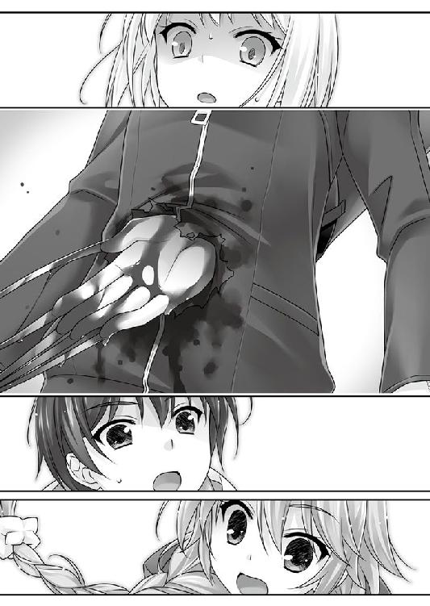
突き出ているのは、おそらく手で、その先に鋭利な爪がついている。
まるで漫画に出てくるタチの悪い悪役のような、とても人間の持ち物には思われないコウモリ男の爪が、クモ女の腹から生えていた。
「────あ」
溜息のような細い声を出して、クモ女が自分の腹を不思議そうに眺めていた。目に沁みる程赤く染まった爪と無骨な男の手に、まるで悪い冗談のように苦笑して。
「ああああああああああああああああああああああ」
絶叫と一緒に血を吐きながら、クモ女は前方へ跳躍する。その動きで、背中から貫通した男の腕を引き抜いた。
生身の人間なら動くどころか即死間違いなしの負傷だが、腹の大穴を左手で押さえ、表情らしい表情もなかった顔に怒りも顕わに相方を睨み付ける。
「............どういうつもり、このコウモリ野郎ッ」
９５２─■■■■
飛び掛かり損ねたキミは、着地に失敗して、ウシオの足下に落ちたままの姿勢で転がっている。
「あの、これって何がどうなって......」
仲間割れか？ それも突然？
「始末が面倒だと思っていたが、勝手に好機が転がり込んでくるとはな。人間も生かしておくと役に立つ。楽な展開になった」
「どういうつもりかって訊いてるのよ！」
「この娘は、本社には持ち帰らない」
「アナタ、何言ってるの？」
ヨブスが右腕を一閃させる。鋼色の爪が叔美を吊していた見えない糸を切って、芋虫の身体を左手で抱えるように受け止める。
機械のように余分な動きをしない男は、その間、ほんの一瞬もウシオから目を離さない。
腹をぶち抜かれた凄惨な姿のクモ女ことウシオは、処理能力をオーバーして固まりそうな一條を余所に、口元の血を袖口で拭う。紅が鮮やかに朱唇を彩る。
「へー、そういうこと。何だかよくわからないけど、裏切るんだ」
コウモリ男ことヨブスは、笑いもしなかった。頷きもしなかった。
「信じられない、アナタ。ｃＳのクセにどういうつもりなの。まあ、いいわ──やれるものなら、やってみろ」
「叔美......ッ！」
「オマエは動くな!!」
状況に困惑したまま、それでもこれをチャンスと走り出そうとした一條の機先を制して叫んだのは、叔美だ。捕まったままの彼女の制止で、反射的に動きを止めた一條の前で、ウシオが両腕を左右に開いて、オーケストラを前にした指揮者のように振り回した。
「私が地上に下りてたのは、運が悪かったわね」
ウシオの指先が糸を降らせる。光を浴びてようやく存在の判る微細な糸が、一見緩やかだが、逃れようのない速度で縦横からヨブスに迫る。
今張り巡らせたものではなく、飛び回る為に足場にしていた糸だ。全長にすれば、キロにも至ろうかという大量の糸が細雪のように降り落ちた。
動いていれば、キミも巻き込まれていただろう。叔美のおかげで、九死に一生を拾ったというわけだ。
ヨブスには逃げようがなかった。走ろうが跳ぼうが、全ての糸は躱しきれない。
ウシオの糸は、その気になれば鋼ぐらいなら切り裂くが、この場合重要なのはもう一つの特性である。彼女の糸は、強靱で粘着性の特製を持つ。触れれば剥がれず、絡みついて拘束する。強度は蜘蛛の糸そのもの。十分な太さに束ねれば、ジェット機でさえ拘束しかねない。
糸は、ヨブスの全身に絡みついた。コートにも、僅かに露出した腕や顔にも容赦なく張り付いて、次の動きを束縛する。
「終わりね」
「お前たちがな──」
男のその呟きを聞き届けたのはウシオだけだ。
ヨブスの左手は、コートの内側のポケットから携帯端末を取り出していた。爪の不意打ちで仕留め損なった場合の展開を想定して、事前に用意していたのだろう。
キーも見ずに、片手で一六ケタの暗証番号を打ち込む。ｃＳが仕事に使う以外の備品を持っている筈がないから、ウシオには、どうして元相棒がそんなモノを持っているのか、全く理解できなかった。
そして。
叔美のチョーカーから、カチリと音がした。
金属の環は、チョーカーではなく首輪だ。一ミリもない厚さの表面の一部がスライドし、液晶とランプを展開する。
ランプは青から赤に変わり、カウントが表示された。
３０、と。
表示された３０のカウントは、一秒毎に減っていく。
何のカウントだ？ と一條は考える。
こんな時に無意味な行動を取る筈はないと、変化に備えて身構えたが何も起きない。
カウントが、たちまち２５を切る。
「え──」
バカみたいな声を出したのは叔美だ。
次の一秒で、台風が来た。
そうとしか思えない状況に、一條もウシオも揃って目を見開く。叔美を中心に吹き荒れる暴風は、軽く見積もっても人間が浮かぶ速度だ。
ほんの一瞬で収まったが、嵐が過ぎ去った後に別のモノがいた。
「なにこれ？」
陽炎が揺れる。
田舎町の何気ない気色に、異物が混じり込む。
風景のその部分だけ、水に溶かしてしまったような奇妙な歪み。目にしただけで、一條の肺腑がぐるりと反転した。吐き気というには軽すぎる、脳どころか精神を丸ごと汚染されてしまいそうな不快感に、視界は黄昏よりも赤く歪む。
１４──
と、根拠もなく思った。
ウシオは後ろへ跳び退る。とにかくソレから離れて距離を取ろうとしたのだ。
「何よ、これは──」
虎だよ、と一條はパニックに振り切れて、かえって冷静になった頭の中でツッコんだ。
嵐の中心だった場所に、どこからか現れたそれは、確かに『虎』には違いない。
だとしても巨大過ぎた。テレビで見たことのあるベンガル虎の更に倍はある。虎というよりもゾウの大きさだ。
果たして、これを生き物と呼ぶべきか。
生命であるという確固とした存在を感じさせないソレは、黒い炎を思わせる。揺らめき燃えて朧気で、身じろぎする度に輪郭さえ曖昧にぶれていく。
異形だ。酷く歪んで、この世のモノとは思えない。
──死。
炎の虎。
これは猛毒だ。これは流行病だ。これは移りゆく死だ。
縁故を伝って死をもたらす、黒い──炎虎。
さっきの印象を、一條はより強く痛感する。胃が裏返って内臓ごと吐き出しそうになる。
ウシオの糸も、大半は最初の暴風が吹き飛ばした。
死の獣が一声どよもすように咆える。巨大な牙を、見得を切るように一振りする。
それだけで、残り僅かな糸も切り落とされてしまう。
反射的に『本』に目を通した。
ＰＧ９５２の最後に著かれた選択視を読み込んでから、すぐさま一條は跳んだ。
──選んだのだ。
ウシオにタックルする。鈍い音が、地面に叩きつけられたウシオの後頭部からして、「うぎゃあああ」
と悲鳴じみただらしない声があがった。腹に大穴が開いている身分で、その程度を気にしてほしくない。
炎虎は腕を一振りした。豪腕一閃。風が唸り、黒い炎が頬を炙る。倒れたウシオがさっきまでいた位置が、綺麗に薙ぎ払われた。
一條の『選択』が少しでも遅れていれば、おそらく間違いなく、彼女は三枚に下ろされていた筈だ。
巨体が揺れる度に、黒い炎が飛び散り、地面といわず周囲といわず燃え移る。
「ちょっと、変なところ触らないで............」
身体の下から、苦しげな吐息混じりのウシオのクレーム。
腹の傷が響いているのか、一條を押しのけようとした手にも力がない。少女の胸の辺りの、着痩せしているのか、予想外に確かすぎる手応えを手で押し潰しているのに気づいた。
「ご、ごめんなさい──っ」
焦りまくって言い訳しようとしたが、状況がそれどころではなかった。
炎虎が、一條たちを睨め付けていた。
虎の輪郭がボンヤリとしていて、半分透けて見える身体の向こうに、外灯が点々と灯っていた。水槽を透かし見るように歪んでいたが、虎の身体自体、水のように身動きする度に揺らめいて波が立つ。
今度こそ、１４がやって来るのかと、思った。
ヨブスが、冷ややかに見下ろしている。
その刹那、鉄に似た男の目をよぎった感情の片鱗を、一條は確かに見た。まともに会話したこともない相手の筈なのに、一瞬だけの感情の名前はよくわかった。
一條が、誰よりもよく知っているものだったからだ。
──恐怖。
不意に、虎の輪郭が頼りなくなる。それからほんの数秒で、掻き消すように消え去る。
後に残ったのは叔美だ。チョーカーだと思っていた首輪の液晶には、さっきまで表示されていたカウントの数字ではなく、「×」の記号。
意識のない叔美を片手で受け止めて、ヨブスは半死半生の元同僚を一瞥する。
「......」
何か言ったのかもしれない、言わなかったのかもしれない。選んだＰＧの記述には、何故だか著かれていなかった。
「......ま」
待て、と一條が言う前に、叔美を連れて男は消えた。
結局、何もできなかった。
──敗北感がきた。
ちなみに、さっきの選択視は、
倒れているウシオを助けようと思うなら／５６０─■■■■ へ行け
まずはヨブスに立ち向かうべきだと思うなら／９０３─■■■■ へ行け
速やかに戦略的撤退だ／２０１─■■■■ へ行け
だった。
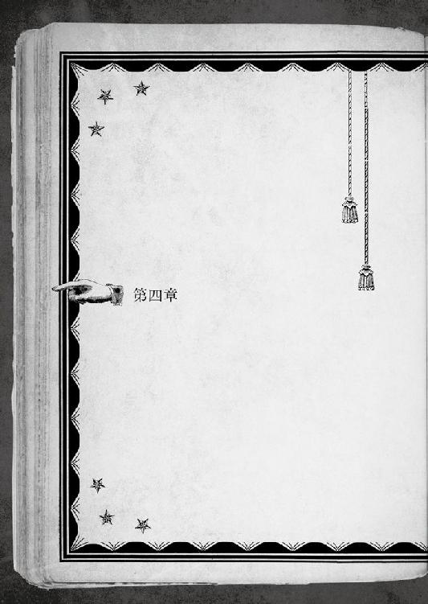
選択視で左右される人生。
選択視に記された行動でなければ、何一つ結末を変えられない。
叔美は連れ去られてしまった。
最後まで「二人で逃げ切る」選択視が現れなかったのは、どうあっても、叔美は連れ去られてしまっていたということ。
まるで、誰かが書いた物語の中にいるようだ、と一條は思う。
人生が一冊の『本』として見えるのは、己が所詮は一冊の本の登場人物である、という事実の証明かもしれなかった。
結局の処、人の一生とは嵐の大海に浮かぶ小舟にすぎない。自分の選択以外のものに大きく揺すられて、何をどうしたところで、駄目なものは駄目なのだ。
「──なんて、諦めると思うなよ」
世の中、どうしようもないことはあるだろう。
それが、何をどうしても人生を変えられなかったという意味であるとは、一條は思ったりしない。
『結末』というものは、大概の場合、ずっと前の段階で決まっている。人間が手遅れになってからしか気づけない、というだけの話。
嵐の海で難破するのが嫌なら、先に丈夫な大船を用意しておくなり、そもそも嵐の海には出ないなりの選択をして、まだ取り返しのつく時点で成り行きを変えてしまえばいい。
もっとも、例えば血筋のように「取り返しのつく時点」が、自分が生まれるよりずっと前で、人の一生では如何ともし難いということも往々にしてあったりはするのだが。
一條は、千里家に戻っていた。
さっきの戦いで汚れた服を着替えてから、未だに馴染みの薄い、自分の部屋の前の廊下で、ぽつんと独り時間を潰している。
何もせずにただ待っているのが耐えがたく、悪足掻きのような思考を続けた。
「問題は、どれが正しい解答か......だ」
そもそも、「正しい解答」なんてあるのだろうか？
手当を終えて痛み止めも使った筈の胸の怪我が、何故かズキリと軋んだ。
叔美を救えなかった──叔美自身が救われようとしなかった。
今更どうする方法も無いに等しいのに、こうして考えることを止めない自分がおかしかった。
とっくに終わった過去を振り返って、あーでもないこうでもないと悩み続けるなんて。
まったく、らしくない。
そろそろ待つのにも焦れ始めた頃、部屋から碧流が出てきた。
「目が醒めたようだ」
碧流は、弟の顔を何故か怖い目で睨んでいた。今夜叱られる心当たりは幾つもあるが、そういう判りやすい感情が原因でもなさそうなので、困惑するしかない。
一呼吸置いてからどこか突き放したように目を逸らした碧流が横に退いて、一條を部屋の奥へ招き入れる。普段自分が使っているベッドには、負傷したウシオが寝かされていた。
他でもない、一條がここへ連れてきたのだ。腹に大穴が開いて、病院よりも葬儀屋直行がお似合いな状態だったのに、ウシオはどっこいしぶとく生きていた。
ヨブスが去った直後──
ＰＧ５６０の選択視は、選ぶ余地のあまりないシンプルな二択だった。
ここは冷静に病院に運ぼう／６０９─■■■■ へ行け
馬鹿げているが、家に連れて帰ろう／２２４─■■■■ へ行け
見捨てていく、という選択視が著されていないのは、『本』もわかってきたなと思う。
あの虎の怪物に殺されかけたウシオを反射的に助けてしまった以上、毒を食らわば皿まで。少なくとも一段落つくまでは面倒を見るのが、一條の流儀だ。
病院に運ぶのは６番台。余計な騒ぎが起きるという示唆だ。『本』に言われるまでもなく判りきっている。詰まるところ、ウシオはまともな人間ではないのだから。
「──相当に面倒すぎる」
偶然か狙ったのか、心を読まれたようなタイミングで碧流の一言が刺さる。
「その......御免なさい。碧流さん」
一條は、素直に頭を下げた。
「姉さん、だ」
「碧流......姉さん」
姉への借りは、伝説の焼き土下座をしても間に合わない。一段落つくまで、ウシオの面倒を看ようとすれば、迷惑を掛け倒してしまう。
だからといって見捨てられないから、一條は黙って謝るしかない。懐かし系のホームドラマで、できた女房に借金を押しつける駄目亭主にでもなった気分だ。
「うん。まあ、いい。キミの頼みだし、異邦人に情けを掛けるのは家訓にも合う。二度目だしな。昨夜も話しただろう。千里の家は代々、『ヒトデナシ』の介添えをやってきた。キミもやはり、千里の男だったわけだな」
心なしか嬉しそうに言われても、実感は０である。家族だの家系だのと一條にとってウェット系の話題は苦手なので、曖昧に笑って誤魔化した。
「ベッドを占領しているアレがどの程度人間かはわからないが、まあ、些細な問題だろう」
落ち着き払っている碧流の態度に、どうにも違和感が付きまとう。
碧流は、一條から見ても相当の傑物かつ変わり者だ。おかしな血筋の話もされた。なるほど、色々と慣れているのかもしれない。
......にしても、だ。弟が突然、腹に穴の開いた見知らぬ少女を連れ帰ってきて、おまけに居候が誘拐されたという現在進行形の異常事態の渦中。いくら何でも平静すぎないか。
「それで、碧......姉さん。彼女......ウシオとは話せる？」
今はそんな疑問どころではない、という分別は一條にもつく。
「大丈夫だ、問題ない。......多分」
多分ですか。
一つ屋根の下にいると思い知るが、家での碧流は存外大ざっぱなのだ。とはいえ、ウシオに多少の無理をしてもらってでも、話をする必要がある。
まだ起きられないのか、横になったままのウシオは随分とふて腐れていた。あくまで一條の主観では、だ。相手の表情は乏しい。人間ではなく、ｃＳだから──その意味するところも、数多く抱える疑問の一つには違いない。
「さっき助けたわね」
「まあね」
傍に行くなり、先手を取られた。「さっき」というのは、虎から三枚おろしにされかけた一幕のことだろう。
「どうして助けたの？ 敵なのよ」
「咄嗟だったんだよ。女の子がやられるのは見たくなかったし」
「オンナノコ？ 私が？」
「だろ？」
ウシオは、一條が束になって掛かってもお話にならないほど強力だ。理屈ではわかっているが、あの一瞬にそんな計算は頭を掠めもしなかった。
「バカね」
我ながら全くだと同意したかったが、面と向かって言われると腹立たしくもある。
「......人間は悲しいかな、見た目に左右される生き物なんだ」
「ここは、何処？」
「私と一條の家だ。倒れて意識を失ったお前を、愚弟が運んできた。お前は、一條に二度も命を助けられたわけだ。死ぬまで感謝し続けろ」
部屋を見回すウシオに応えたのは、後ろにいた碧流だ。
「......恩着せがましい」
「当たり前だ。恩がある。ちなみに、利息はトイチだ」
「ナニその暴利!?」
助けた一條の方がツッコんでしまった。相当に非道い。碧流は、身内が相手でなければ血も涙も容赦もなくなるのだ。加えて、一見普段通りだが、どうやら彼女はとても不機嫌らしい。背筋をゾクゾクと悪寒めいた直感が走った。
不機嫌の原因は、どう考えても一條自身。叔美のことやウシオのことや自分の怪我や心当たりがありすぎて困る。矛先がこっちに来たらどうしようと焦るが、せめて楽に殺してくださいと頼むぐらいしか思いつかない。
「それで、私の身体は......」
「無事だ」
「うそっ、これで無事なの!?」
大穴を開けたまま立ち回っていたのだから相当にしぶといとは思っていたが、無事だとこの姉の口からハッキリ言われると、ぶっちゃけ一條はドン引きである。
「こいつらは、元々腹に穴が開いたくらいでは死なない」
しれりとした淡泊な無表情のウシオからは、碧流の話が本当かどうかは推し量れない。
「大ざっぱな治療はしておいた。私が、だ。それも死ぬまで感謝しろ、私と一條に、だ」
「......治療とかできたんだ」
「それほど難しくないからな。まあ、大丈夫だろう......多分......」
結構適当なところの多い碧流だった。
「放置でよかったのに。どのみちこれは廃棄だわ」
「なんだよ、廃棄って」
ウシオがポツリと漏らした単語が引っ掛かった。
「アイツに裏切られた。仕事を果たせなかった以上、戻っても廃棄処分。まあ、間違いない。だから、放置でも同じだった」
「......なんだよ、それ。同じ訳ないだろ！」
自分でも驚くぐらいの大声が出た。自分を省みないウシオの態度にムカついたし、何をしても同じだと言われたことが腹に据えかねたからだ。
ウシオと碧流が目を丸くしていた。
「怒鳴られると、穴の開いたお腹に響く」
「あ、その.........ごめんなさい」
怪我人の女の子相手に声を荒げるのもみっともないので、咳払いして仕切り直す。
「そんなことよりも、訊きたいことがある！ あのコートの男、ヨブスだっけ？ あいつが叔美を何処に連れて行ったのか、心当たりがあれば教えてほしい」
「どうして、私が応えなくちゃいけないの？」
「助けた借りを返して......ってことでどう？」
筋を通せ、ということだった。
恩を押しつけるのは一條の趣味じゃないが、この際だからとやかく言ってられない。
分かり易い計算式を説かれて、反対側の壁を睨んでいたウシオの首が、ぐりんと一八〇度回ってきた。
（あれ......？）
人形みたいな整った顔の少女が、まるで敵を見るように睨んでいる。おまけに、斜め右後ろやや後方、つまり姉の碧流からも、何故か似たような視線が突き刺さってくる。一條には理由が全くよくわからない。何故か、結婚記念日に浮気がバレてしまった直後の食卓についたお父さんの気分。
人気なく雪降る冬の一夜のように、しんと部屋が静まった。
「コウモリは裏切って逃げた。私の知ってる所にはいないかも」
「こんなところで終わりなんて納得できない。終わらせるつもりもないんだ。何でもいいから、この先へ行ける手掛かりが欲しい」
「いいわ」
意外にも悩むでもなく、ウシオは応えた。
「アイツをこのままにするのも、ムカつくし」
「私たちは、社命で派遣されてきたｃＳ」
駆け引きらしい駆け引きも、腹を探り合うような前置きもなく、ウシオは本題に入った。
こういう言い方が正しいのかは判らないが、ウシオは、一條がちょっと驚くほど素直だ。
カーテンの外は夜が深い。夕食時はとっくに過ぎて、街には凪ぎに似た静かな帷が落ちている。奥志麻は日本列島では比較的高緯度にある為、まだ真夏の熱気こそないが、本州よりも一足早く、夜にも暑さを感じる季節になっていた。
──さっきから、『本』が現れないな。
一條は、努めて冷静に現状を分析しようとする。「家に連れて帰る」を選んで『本』を閉じた後、この場面に至るまで姿を見せようとしない。どう行動したとしても、ここまでの展開に《分岐点》はなかったということだ。
叔美の居場所を知りたいと気持ちばかり焦るが、この状況でアテもなく飛び出して、辿り着ける筈もないだろう。
今の一條には、前兆や伏線から物事を推測することだけが、ただ一つの武器である。
常に精密に、慎重に、乱れることなく、一つ一つ段取りを踏んで、あると信じる「正解」へ近づく手段を見極めなければ、何の役にも立たないのだ。
「ｃＳって何？ 君たちみたいな......その、ちょっとオカシナ連中のこと？」
身も蓋もあるように言葉を選んだが、返答は端的だった。
「簡単に言うと『化け物』が一番近い。人間みたいな別のモノ。人間を模造した、人間よりずっと強力な、尸器を機能させる怪物的なツール」
「タ......なに？」
「尸器。私の糸みたいな、ｃＳが個々に持つ特別な機能のこと」
「なるほど」
「といっても、生身には違いないけど。造った企業の名前は、言いたくても言えない。守秘コードを設定されているから」
遣り取りは一條に任せっきりにして、碧流は後ろで見守っていた。何故か背中に視線が刺さってきて、とても痛い。
「私たちは、とある場所で確保したアレを、これまたとある場所まで移送する途中だった。トラブルが重なって、逃げられてしまったけど」
「アレっていうのは、叔美を？ どうして叔美を狙う？」
「アレは、柱。......と言っても、わからないか。私から質問するわ。アレの周りでオカシナことは起きなかった？」
叔美が来てから、オカシナことなら一山幾らで起きた。ウシオとヨブスがやってきたのも、間違いなくオカシイ部類の出来事だ。
「......あったよ」
「それもオカシイわね。何かあったなら、アナタはとっくにくたばってる。生きているんだから、何も起きなかった筈。でも何もないのは、輪を掛けてオカシイ」
「それは、どういう意味？」
「アレは不幸を引き寄せる。周りはとばっちりで非道い目に遭う。大概は死ぬ。いつも生き残るのはアレだけ」
専門の用語はわからなくても、ウシオの語る意味は通じた。驚きはない。一條の中でずっと燻っていた感覚に、すっと筋が通っただけだ。
通っただけに、解らなくなることもある。
「.........どうして、そんなのをわざわざ捕まえようとするんだ？」
叔美は『１４』に取り憑かれている。
拘われば、死ぬ。捕まえようなんてしようものなら、大勢が命を落とすだろう。捕まえた後も死を振りまき続ける。そこまでして欲しがる神経が、一條にはこれっぽっちも理解できない。
「人が何かをする理由は、大概一つしかない」
後ろに下がっていた碧流が、ようやく話題がそこへ来たかと言いたそうだった。やはり、碧流は何かを知っているのだろう。
「利益だ。特に『企業』ならば、な」
「でも、叔美に拘わると只じゃ済まない。ハッキリ言うと死ぬんだよ」
「不幸の裏返しは、幸運だ。生と死。幸と不幸。奪う者と奪われる者。世の中は、どこかで平衡が取れるようになっている。誰かが得た分、誰かが喪うのは道理に合う」
他人事のように、突き放したように、道を示唆する魔女のように、碧流は囁く。
「お祖母様から昔聞かされた憶えがあるよ。そういう血筋の輩がいると。叔美は天秤だ。秤の一方の皿に不幸を集める。そうすることで、反対側には幸が集まって釣り合いが取れる。込み入った理屈もあるにはあるが、分かり易いよう説明すると、そういう仕掛けだ」
そんな簡単な理屈で幸福や不幸を扱っていいのかと思うが、一條が腹を立てたのは違う部分だった。
また、血筋か。
選択しようにも、最初から決まっていて動かせないモノ。
「叔美を欲しがる誰かは、天秤の反対に貯まった『幸福』の取り出し方を知っているのだろう」
「そんなの、まるで便利な道具みたいじゃないか」
「まるで、じゃない。そのものだよ」
不幸を集めてバラ撒く。代わりに他の誰かを幸福にする。
見事な道具。素晴らしい道具。
納得いったわけではないが、そういうカラクリだと仮定すると、筋の通ることが多い。
一條が見た、叔美の孤独も、泣きそうな顔もお構いなしに、あちらからこちらへ、こちらからあちらへと、幸福量をグルグル回していく、どこかの誰かの便利なカラクリ。
──誰かって誰だよ。
叔美自身もよく解っていなかったであろう事の原因を、碧流は「血筋」だと言った。あるいは、大昔の誰かが用意したカラクリの、巡り巡った因果の端っこなのかもしれないが。
『結末』というものは、大概の場合、始まる前の『選択』で出来上がっている。今があるのは、ずっと昔の何かがあるから。
筋は通っているのだ。
『行く先』は既に決まっているのだから、結局自分で選択することに意味なんてない、と「誰か」に嘲笑われているようで、胸クソが悪かった。
「ふーん、そうなんだ」
ウシオが、碧流の話を感心しながら聞いていた。
「えっ、知らなかったの？」
「どうでもいいことだもの。命令されたから連れて行くだけ。言われたように、アレをある場所へ運ぶ。いえ、運ぶ筈だった......か」
ヨブスが裏切って、命令はオジャンになってしまったのだ。
「ｃＳのクセにどういうつもりなんだろう、あの野郎」
「裏切ったヤツは確か、コウモリ男だったな。コウモリだけに、見事な身の振り方だ。流石、私。今のは上手いことを言ったな」
「いや、碧流さん......そんなドヤ顔されても......」
「姉さん、だ」
この期に及んで、チェックが厳しかった。
「でも、どうして今まで何もなかったんだろう。今の話からすると、僕にしろ、碧流......姉さんにしろ、叔美と拘わってる。とっくにタダでは済んでない筈だろ」
「それ、私たちも不思議だった」
「疑問はもっともだ。勿論、それは偶然ではなく人の業だ。理由がある」
碧流が、どこか自慢げに大きな胸を反らしながら謎解きをする。
「お祖母様のおかげだ」
「おばあさん？」
「私の祖母、つまり、キミの祖母でもある。憶えていないかもしれないが。ここは宿、一つの楽園。『アンブロシウス』というのは、お祖母様が付けた名前だ。彼女は、この奥志麻で安らいで土に帰った。だから、寄る辺ない者には与えるようにと、遺言を残した。私はそれを守っている」
碧流が両手を広げて、この家を指し示した。
「この場所には、彼女の『力』が残っている。魔女とでも、霊場とでも、霊験とでも、結界とでも、好きに呼べばいい。キミは憶えていなくても、お祖母様は守っているんだ。私たちを、この街を。だから、この家に迎え入れたから、叔美の災いは眠りについた」
「それなら......」
「キミの言いたいことはわかる。だから、先に言っておく。お祖母様の『力』は大した物だよ。今時には珍しい、『本物』だからね。それでも、叔美の力は、きっと抑えきれない。彼女はこの家よりも強いんだ。そこの二人が追ってきたせいで、歪みが早く出てしまったが、そうでなくても遅かれ早かれ、似たような結果になっただろう」
「それならそうと、先に言っておいてくれれば......」
「言っただろう、前に」
真顔で言い返された。
そういえば──と。一條が軽く聞き流していただけで、碧流はそれとなく事情を窺わせていた。昨日の夜も、『衝撃の告白』で仄めかしていた。
人は、手遅れになってから気づくもの。ヒントは何処にでもあった、悲しいくらいに。
「あの男......ヨブスは、叔美をどうするつもりなんだろう？」
「アナタはどう思う？」
ウシオに訊き返された。一條は手持ちの手掛かりを、一つ一つ頭の中で整理していく。
「............叔美は傍にいるだけで危険だから、長く連れて歩かない。お前たちは、どこかへ移すつもりだった。何か方法があるんだな、この家みたいに。叔美の『１４』を一時的に抑えるか、先送りにするみたいな方法が」
「１４？」
「えっと、その......『災い』だかなんだかを」
「イイ線突いてる。私たちは船で運んできた。大掛かりな設備で、セーフティを幾つも掛けて、そして慎重に移動することで、不測の事態を限りなく避ける」
設備が非常に大きくなるので、大型の船でないと運べない。それに、海上の方が何か遭った時にも人目につかなくて済む──という理屈らしい。
「そうか......ヨブスだって条件は同じ。つまり、似たような迎えの船と合流するんだ！」
「なるほどね」
フンフンと素直に感じ入ってるウシオは、子供のようだった。
「わかった。ありがとう」
残された時間は、ヨブスに迎えの船が来るまでだ。
どれだけ残されているかはわからない。手遅れかもしれない。
だから、今すぐ飛び出そうとした一條を、碧流が真顔で制止した。
「どこへ行くつもりだ？」
「叔美を連れ戻してくる」
二人で逃げ切れなかったことも、怒鳴り合ったことも、もういい。
過ぎたことは過ぎたこと、だ。
次を目指す。
この先に彼女を連れ戻せる『結末』があるのか、そんなモノは何処にも存在していないのか。
──信じるだけだ。
今はまだ「途中」なんだと、きっと望んだ『結末』に辿り着けると、最後まで。
「無茶だ。ｃＳ相手に、キミではどうにもならないだろう。万一何とかなったとして、連れ戻して、どうする？ さっき説明した通りだぞ──キミまで殺されてしまう」
驚くほど強い言葉を碧流が使ったので、息を呑む。
「叔美は、殺そうとしてるわけじゃ──」
「ああ、そうだろう。アレに悪意はない。だが、悪意のあるなしは関係ない」
「その女の言う通り。拘わると死ぬ。それがアレのルール。アナタ、普通の人間でしょ」
何故かウシオまで口を挟む。二人の方が正論だ。認めざるを得ない。今回連れ戻せたとしても、『アンブロシウス』の守りもいつかは及ばなくなる。
その時、叔美の周囲の大勢は、彼女が『死神』であるという言葉の意味を知る。
そこまでして助ける、理由も意味もあるのか？
「──叔美は、ちゃんと言ったよ。自分に近づくなって」
一條には、意味も理由もよくわかっていなかった。
ただ、叔美をこのままにはしておきたくなかった。彼女は何度も何度も、自分にだけではなく、碧流にも似たような警告をしていた。
言う必要はなかったのに。お人好しの善意だけを奪って、周りが死ぬに任せればいい。そうやって、他人を喰らって生きていくこともできた筈だ。
叔美は、ずっと独りだったクセに、そんな生き方は選ばなかった。
善意か、良心か、あるいは偽善と言うべきか。
どこかの誰かに運命の筋書きを与えられていた叔美が、名前も知らないどこかの誰かを殺すまいとして、だから、独りで孤独にあの路地で行き詰まっていた。
不幸を集めるのが血筋なら、それは生まれた時から押しつけられていたのだろう。
とっくに手遅れで自分自身では変えようのない選択を、一方的に押しつけられた嫌がらせのような不条理を、叔美はずっと耐えてきた。自分で変えようのないことを押しつけた、この世界の何もかもを恨んでもよかったのに。
やろうと思えば、見えるもの全てに八つ当たりするだけの『力』だって、彼女には与えられていたのだから。
選べばよかったんだ。
いいＰＧを、自分に都合のいい選択視を。
「まったくバカみたいだ」
お人好しの叔美。
しみじみと、一條は思う。この世の中には、他に幾らでも選択があるのに、わざわざ行き詰まりを選ぶバカもいる。
叔美は、離れたくて、離れたくない顔をしていた。
彼女は、自分に拘わった一條が死なずにいることが、とても不思議だったのだろう。
だから、自分の節を曲げて、ここに居てくれた。
「──手は引かないよ」
叔美を連れ戻しにいくのだ。
碧流は、遠くにある眩しいものでも見るように目を細めていた。
一條にとって、その選択をする意味があるのかは、まだよくわからない。
でも、あの路地裏で行き逢った時から、理由ならきっとあったのだ。
自分を見失いかけていた時に、ここにいて、誰かの為に何かをする理由を与えてくれた。
還ってきても、居るべき場所もなく漂流していた一條が、やっとのことで、ここに居るべき理由を見出せた。
叔美の選択で救われたのは、きっと一條の方だ。
叔美であることが、一條であることの意味を与えてくれた。
「叔美は、行きたくないって思ってるよ。出て行くって言ってたけど、でも......本心からそう思ってない。だから連れ戻してくるよ」
「その先は──ないぞ」
叔美は、『１４』を引き連れている。これまで自分や碧流が無事だったのは、この場所で祖母が守ってくれていたからだ。そう、比喩でなく本当に。
『幸運』は、いつまでも続かない。碧流が教えてくれた。
掛け値なしの事実だろう。行かせたくないからと、いい加減なことを言う人ではない。
どんな時でも、彼女は自分に嘘は吐けない、とても眩しい人だ。
だから──
姉と呼んでもいいと思ったのだ。
「まだできる内から、選ぶのを諦めたくないんだ、姉さん」
真っ正面から姉と呼ばれて、意表を突かれた碧流が鼻白む。
初めて、真っ当に姉であることを認めた時に、一條の中で、何か形のないモノがすとんと胸に落ちた。
「死にたくないし、死ぬのはイヤだし、姉さんたちを死なせるのはもっとイヤだ。でも、死にかけるぐらいまでなら、まあいいかな。それで、この先、叔美の進む道筋を、ちょっとでもマシにしてあげられるなら──それはきっと、僕にならできることだ」
世の中は、何もかもが収まるところに収まるようにはできてはいない。よくできた物語のような、綺麗なオチは着いてくれないのだ。
一條は学んでいる。世界はとても不格好で、手探りで、それでいて、いつだって時間は限られていて、選び取れる選択視だって有限だ。
些末なことで世界は変わるが、多少のことでは、人生の行く末はピクリともしない。
この選択だって、結局は収束して無駄に終わってしまうかもしれない。
今から遣ろうとすることに、意味はないのかもしれない。
だけど、意味のある選択ばかりが人生じゃない。
愚かな選択と判っていても、行き止まりが見えていても、どんな理屈も正論も振り切って選択してしまう時だってある。
それが、自由ということ。
自分の人生を選ぶという、本当の意味だ。
この今がずっと前に決められていて変えようがなかったのだとしても、この先の為に選び続けよう。
「叔美を助ける。連れて戻ってくる。無事に二人で帰ってくることができたら、後は......叔美次第かな。彼女に任せる」
自分の『本』は、自分にしか見えない。叔美の選択視は、どこまでいっても叔美自身が選ぶもの。
他人は触れられない。僕も、姉さんも、他の誰も。
叔美を助けられる結果に辿り着けても、その先彼女がどうするかは、彼女自身の問題だ。
それでも出て行くというのなら、今度は一條も止めない。ここに居たいと望むのなら、そうできるように手を尽くそう。どうにもならなくなったら、その時にまた考えて、選択視を選択しよう。
この『選択』で、一條に大事なことを教えてくれた彼女にも、まだ知らないことを教えてあげられるのなら、もっといい。
「キミがやろうとしているのは、為せば成ることじゃない」
「遣ってみないとわからないよ」
「わかるよ。キミは全く憶えていないだろうけど、私はよく憶えている」
懐かしさよりも哀切を込めて、碧流は言うのだ。
「一年前も......あの事故の時もキミは無茶をして......死にかけて......それで、
──記憶まで、失くしたんじゃないか」
「そうなの？」
不思議なモノを見る顔をウシオがしていた。
そう──
『本』に取り憑かれるキッカケとなった去年の事故。
その事故で死にかけた一條は、後遺症なのか記憶を失った。
周囲に隠していた訳ではなかったが、周りに変に気を遣われるのがイヤだから、わざわざ言わないようにしてきた。その事実を知っているのは数えるほどだ。姉の碧流と幼馴染だった久留美、久留美の両親......。
一年前。病院のベッドの上で起きたら、一條は何も憶えていなかった。故郷も自分の家も懐かしい持ち物も、何もかもが他人の所有物のように実感がない。
それは、千里一條が何者でもなくなってしまった、ということだ。
療養の名目で、一時、見知らぬ故郷を離れて、頭が冷えてから戻ってきても、ここが自分が居ていい場所だという確信は持てなかった。
遣るべきことも居るべき場所も何一つ見出せないクセに、自分以外は誰もが自分を知っている土地で、宙ぶらりんのまま浮かんでいただけの千里一條に、理由を与えてくれたのは叔美だ。
自分がここにいるのは、叔美の為になる、と。
自己満足かもしれない。彼女がそれを喜んでいるかどうかもわからなかったが、叔美の連れてきた『１４』が見えるのは一條だけだ。
それは、いなくなってしまった、かつての千里一條ではなく、今の一條にとっての理由であり意味なのだと確信できる。
「今度は......上手くやるよ」
前の時の記憶もないのに、ぬけぬけと言う自分に苦笑する。
「今度は記憶だけじゃなく、命だって落とすかもしれない」
「......かもね」
正直、死ぬのはイヤだが、死ぬのが怖いと思い切れない自分がいる。決定的に欠けているのは、多分......執着だ。
過去がない一條は、過去を振り向いても仕方がない。
真っ白な空白がドカンと構えているだけの空虚を掬ったところで、何も出てこない。
自分を作っている素材が過去の積み重ねだとすれば、記憶のない千里一條は、何者でもない曖昧で薄っぺらな幽霊みたいなものなのだ。
そんな曖昧さと、この『本』のような異常の上を、一條は素足で氷の刃の上を渡るようにソロソロと生きていた。
──ああ、そうか。
最後のピースがピタリと嵌る。
叔美は、自分とよく似ている。
一條よりも、もっと深い孤独を生きていた。それでも逞しく生き続けようとした。
そんな叔美の人生が、きっと目に痛いくらい眩しかった。
自分も胸を張っていいのかもと、そんなことを想ってしまうぐらいには。
だから、迎えに行かないと。
叔美が与えてくれたものを、今度は自分が返す番だ。
それが筋道というものだろう。
そうだったのか、と小さく頷いて、自分で納得して。
「今度こそ、上手くやる」
遣るべきことを選んでしまった。
そして、待ちかねていたように、一條の目の前に『本』が現れる。
４０１─■■■■
さて、残された時間は少ないぞ。
最後に必要なのは、キミの決断だけだろう。
行く／７１１─■■■■ へ行け
考え直す／２０５─■■■■ へ行け
ＰＧの記述は極めてシンプルだった。選択視も。
まるで、最後の忠告のように。
選んだ後はやり直しが利かないのが筋道、「ルールその五」だ。
どちらが「正解」なのかはわからなかったけれど、どちらを選ぶかは迷わなかった。
「行く」を選んだ。
「............キミは、昔から、つくづくバカなんだな」
「ごめんなさい......昔のこと、憶えてなくて」
「キミが謝ることじゃない」
碧流が、どこか嬉しそうに笑っていた。
「判った。もう、好きにしていい」
「姉さん」
「その代わり、私も一緒に行く」
「うぇ」
驚きすぎて、変な声が出た。
「何を驚く。私は姉だ。キミを手伝うのは当然だ。血は水よりも濃いんだ。イヤだというなら、二度と出て行けないように、キミの両足を切ってベッドに縛り付ける」
どこまでも本気そうで、アグレッシブ過ぎる愛情表現に笑いが引き攣ったが、正直嬉しかった。そこまで想われているという意味でもあるのだから。
「それに、私にだって遣れることはある」
「あのね、こっちを忘れて話が勝手に進んでるんだけど......コウモリが居るかもしれない場所なら、わからなくもないわよ」
一人置いてけぼりだったウシオが、どうしてだか白い眇目で睨みながら割って入った。
「本当に!? 居場所はわからないんじゃ......」
「一條を騙すつもりなら、心臓に杭を打って、後で裏庭に埋めてやるぞ」
そこまでしますか!?
「私の知ってる場所には居ないわ。でも、心当たりはある」
おそらく、これが最後のチャンスになるだろう。
「教えるには条件がある。私を、連れて行くこと」
ウシオまで......。それはつまり、力を貸してくれるということだろうか。
まさか。そんな少年漫画みたいな展開を期待するのは浅はかだろう。
「ｃＳでも、その傷で動けば無事には済まないぞ。それに、お前は叔美を狙っている筈だ」
現れたままの『本』に目を落とすと、
７１１─■■■■
碧流のごもっともなツッコミを、ウシオは淡々と鼻で笑う。
「このまま、コウモリ野郎の好きにさせるのは、気に入らないのよ。連れてってくれるのなら、案内するわ」
「叔美のことは？」
キミの問いにも、彼女は平然としたものだ。
「ヨブスの始末を付けてからにしましょう。私、先のことは考えない主義だから」
キミが後ろを振り向かないように、ウシオは先を考えない主義らしい。
さて、どうやら得るべき情報は全て得たようだ。
ウシオの申し出を受ける／９１１─■■■■ へ行け
申し出を受けない／３０１─■■■■ へ行け
叔美が目を覚ますと、埃と機械油と鉄錆の入り混じった据えた臭いが鼻をついた。天井近くに開いた通気窓から流れ込むのは潮の臭い。驚くほど近い汽笛の音。
ここは倉庫の中、おそらく港の近くだろう、と素早く当たりをつける。
冷たい床に投げ出された格好で天井を見上げていた。まるでいつかの路地のようだと思う。あの時は、バカがやってきたが、今は誰もいない。
断線していたい記憶回路が繋がって、バラバラのパズルのピースがいきなり組み上がった。曖昧だった時系列が奔流みたいに流れ込んで整頓される船酔いめいた感覚に、気分が悪くなる。
自分の身体を見回すが、不思議なことに縛られていない。
「──オマエ」
コートの男が、離れた場所で倉庫の壁に背を預けて座っているのに、ようやく気づく。気配が殺しているのか、叔美にも今まで察知できなかった。
意識を失う直前までの記憶は、もう思い出している。
自分は捕まった。一條がバカをしようとしたので一喝したら、理由はわからないが敵に仲間割れが起きた。
「縛ったりしないでいいのかよ。アタシが逃げ出したらどうすンだ？」
石でも投げるように言葉を投げつけると、コート男がむさ苦しい顔を向けてきた。何か言った、らしい。
「............」
「だから、オマエの声は小さすぎて聞こえないって」
同じような台詞を、前にも言ったことがある。叔美が奥志麻に来る以前だ。
ここからずっと遠い場所でヨブスとウシオに捕まって、大きな船に乗せられた。叔美の『呪い』だか何だかを知っていたらしいその連中は、何やら大げさな模様やら機械やらを詰め込んだ船内の片隅に彼女を閉じ込めて、それ以上誰も近寄ろうとはしなかった。食事などの世話をしていたのは、もっぱらヨブスたちだ。
男はしばらく考えていたが、黙って携帯端末を差し出す。画面に文字が出力されている。
『問題はないか？』
会話の代わりかよ、とこの期に及んで苦笑してしまった。
『逃げても、無駄だ。捕まえるのは簡単だ』
「大人しくしててやるよ。逃げないって。オマエの魂胆は別にどうでもいいし」
両足を投げ出して本当にどうでもよさそうにしていると、驚いたことに、
『怖くないのか』
不景気そうなコートの男が、柄にもないことを訊ねてきた。
「オマエが？ それともこの先どうなるか？ まあ、連れて行かれる先とか、考えなくもないけど、考えたって無駄だろ」
叔美を殺すつもりなら、とっくに殺されている。そうでないのなら、囚われようが、何をされようが、どこへ行くとしても同じ事だ。物事を深く考えたところで意味がない。
遅かれ早かれ、『道』は必ず行き詰まる。この世界で、自分には行ける場所がないという事実を、奥志麻に来てイヤという程思い知った。
来なければ、わからなかった。そっちの方がよかったのに。
これまでは死体のような人生だった。本物の死体になったところで、きっと大差はないだろう。死にたいわけじゃないが、死んでしまえば、この世から厄介事が一つ減る。
「............どうして、そっちの方がいいンだよ」
自分で思ったことなのに、筋が通っていない気がした。
死体同然の人生でも、『投げ出す』のがイヤで歯を食い縛ってきたこれまでが嘘のように、胸の内が冷めている。
それよりも、ウシオやヨブスに命令している偉いヤツ──どこぞの金持ちか、珍しいモノ好きの酔狂人かは知らないが、ソイツらに叔美は散々な目に遭わされた。
正直、ヨブスが裏切ったのは小気味いい。自分を狙う連中の誰かが煮え湯を飲んでいるとするなら、この胸につっかえている黒泥みたいな感情も少しは晴れる。
八つ当たりで気持ち良くなると思ったのに、忌々しくも頭を掠めた顔があった。
「......あのクモ女、死ンだのか？」
しばらく考えてから、ヨブスは首を横に振る。
そっか、アイツも死んでないのなら、よかった。
「アイツも......？」
自分がホッとしたのだとわかって、余計胸に石の詰まったような気分になった。
「どうしてアタシが、狙ってくるヤツの心配してやンなきゃならねーんだよ......」
『お前を引き渡す』
液晶が律儀に突きつけられたので、思案する余裕ができた。
「引き渡すって、誰にだ？ オマエ、仲間割れしてたろ？」
『新しい雇い主』
叔美の世界には、産業スパイやヘッドハンティングという価値感がない。単語が上手くイメージに結びつかない。ただ、この化け物を差し向けてくるような手合いが、飼い犬に手を噛まれてそのままにしておかない、というのはわかる。
「オマエ、アタシを連れてっても、元の飼い主に始末されちまうンじゃねーのかよ？」
ヨブスは地蔵のように何も言わなかったし、顔色も変わらなかった。もしかすると、攫ってきた相手に、身の振り方の心配をされるのが不思議だったのか。
「オマエら、ムカつくし腹立つけど、憎たらしいわけじゃねーよ。だって、死なねーもンな」
ヨブスの仲間たちは、叔美を物々しい部屋に閉じ込めて移送している最中も、死ぬのを怖れて誰も近づいてこなかった。只二つ接点のあった化け物二人組が、今も元気で生きてるのは妙に嬉しい。古馴染みに遇う、というのはこんな感覚かと思う。
「まあ、偉そうにふんぞり返ってる連中に一泡吹かせたのは、それなりにいい気味だし。どうせ、どこ行っても変わらない」
少なくとも、奥志麻ではない場所に行くのなら。
そっちの方が良い。
「それよりさ、オマエ、大丈夫？ この前だって車にぶつかってたし、それでピンピンしてるんだから、化け物なんだろうけど。でも、死なねーってワケじゃねーンだろ。死なねーのなら、ちょっと嬉しいけど」
『ｃＳだから、問題ない』
「それってなに？ オマエらみたいなお化けモドキのこと？」
『造られて、生まれてくる』
よく判らなかったが、漠然と納得して、もう一つの疑問を訊ねる。
「そういえば、さっきのアレ、何だよ？ っていうか、この首輪だけど」
『お前が招く黒気を抑える』
叔美が連中に捕らえられた時、最初に着けられたのがこの首輪だ。似たようなカラクリは幾つもあった。それはどれも、振りまかれる災いを抑える為の仕掛けである。何重もの安全装置を掛けられて、叔美は運ばれていく危険物だった。
「じゃあ、ここへ来て一週間何もなかったのは、この首輪のせいか？」
困惑じみた気配が、返事の代わりにやってきた。
「......違うの？」
『そこまでの性能はない』
「......じゃあ、アレは何だよ」
『抑えられた力は消えずに溜まる。一種のダムだ。さっきのアレは、溜まって密度の増した力の一部を開放した結果だ』
理屈はよく判らなかったが、一部でアレなら、総量なら一体どれ程なのか。叔美の背筋が冷たく凍った。
『使うつもりはなかったが、やむを得ない状況だった』
「困るの？」
『お前の「力」は相手を選ばないし、制御もできない』
一つ間違えれば、叔美以外の全員があの場で死んでいた。ヨブスにとっても、首輪の解除は危うい賭けだったのだ。
「......オマエも死ンじゃうところだったンだろ。そんなアブナイ橋渡って、仲間のこと裏切ったのか？ 頭わるいヤツだな」
束の間の空白があって。
『取引だ』
「お金、沢山貰えるってことか？」
『もっと重要なものを』
叔美に声色は判らなくても、幽かに見える目線に宿った切実な色は理解できた。
だからコイツは裏切ったのだ、と。危険を承知で、処分されるとわかっていて。
そこまでする理由って、超スゴいお宝とかだろうか。
叔美の貧困な想像力では、その程度が発想の限界だった。
「最後に一つだけ。これから、アタシどうなるの？」
『お前を欲しがっている連中がいる。そいつらに引き渡す』
「奥志麻から離れるンだな」
『そうだ』
ホッとしている、と叔美は思った。
ここを離れたいのは、彼女の大嫌いな、どうしようもなく薄っぺらなお節介が多いからだ。
自分が遠くへ行けば、きっと。
──きっと、なんだろう？
何故か、胸の奥が締めつけられて、その痛みでようやく行き当たる。
遠くに行けば、一條たちは死ななくて済む。
ああ、なんて単純な答え。
そんな簡単なこともわからなかったのかと、叔美は笑い出しそうになった。
叔美がここにいると、一條たちが不幸に巻き込まれてしまう。だから、遠く、ずっと遠くへ離れる。理に叶っている。筋が通っている。
不幸が去れば、後には幸運だってやってきてくれるかもしれない。
完璧で、何一つ齟齬のない、完膚無きまでに、正しい。
「おっしゃああ!!」
喜んで、いきなり飛び上がったら、隣の男が何事かという顔をした。頭のネジが外れた、ぐらいは思われたかもしれないが、叔美には気にならなかった。
だって、答えが出たのだ。
右も左も考えたことがなかったのに、生まれて初めて自分で得た、正しい答え。
「じゃあ、あとちょっとだけ、待つとするか!!」
叔美は、本当に嬉しかったのだ。
胸の奥の膿んだ傷口のような鈍い痛みは、いつまで経っても消えてくれなかったが。
奥志麻が水の都と呼ばれるのは、市内を天川支流の三本の河川が流れているという理由だけではない。都心部からほんの僅か、東に三キロも足を伸ばせば、雄渾な紀伊水道が待ち受けている。
玄関口に当たるのは男毬島港だ。奥志麻市と隣接する市の二つに跨がった一大港湾センターであり、四国と本州を繋ぐ二本の大橋の登場で旅客港の地位こそ失われて久しいが、未だ国際貿易港としては確たる地位を保っている。
かつて水路全盛の時代。本土からの定期航路フェリーの舳先に立てば、近づくにつれて、奥志麻の街中に忽然と現れる美山の景観が、まるで空に描かれた美しい眉の如くに映えたろう。美と冠された名の由来でもあった。
一條たちを乗せた車が走るのは、奥志麻市内から港湾部へと出るルート。古来の旅人たちの足取りを逆に辿った。運転するのはマスターだ。碧流の電話一本で、深夜にも拘わらず、文句一つ挟まずに車を出す老紳士と『アンブロシウス』の先代との間に、どんな友誼が結ばれていたのか一條にはわからない。
あるいは、去年までなら知っていたのかもしれないが、既に失われてしまった風景だ。一條は過去を振り向かない。
近づく前に車とマスターには退避を願い、一條たちは徒歩で港湾部の倉庫街を行く。夜も深く人気はないが、港の全てが眠るわけではない。遠く、潮の匂いに混じって汽笛が細い音色を奏でている。
一歩ごとに、その瞬間が近づきつつあるのだと悟る。痛み止めがよく効いているのか、胸の傷に感覚はない。この騒ぎが終わるまでは保つだろう。十分だ。
そして、まさに際どいところだったと言えた。
無人の倉庫が建ち並んだ迷路のような区画に、ヨブスと叔美の姿を発見した。どうやら、移動する直前に追い着けたらしい。
長身で無愛想なコート姿の傍らに、叔美がいる。
親子のような。兄妹のような。
人攫いと攫われた女の子の位置──には不思議と見えない。
けれど一條にとって、叔美が男の隣にそうしている光景は、キチンと言語化こそ出来なかったものの、奇妙なほど腑に落ちた。
９１９─■■■■
「......来やがった」
と、嘆くように零したのは叔美で。
「悪い予感が当たったか」
と、聞こえない声で言ったのはヨブスだ。
キミの味方は、姉の碧流とウシオ。叔美は数に含めないから、状況そのものは三対一だが、コウモリ男にとっては失笑ものだったろう。
実際、男の石の塊みたいな顔には表情らしい表情こそないが、追い詰められた鼠のそれではなく、窮鼠の反撃に驚いた虎の余裕が窺えた。
目の前に『本』を開いたまま、一條は慎重にタイミングを窺う。
追い着いたものの、間に合ったと言えるかどうかは、これからの選択次第だ。
「叔美を返せ」
口火を切った一條に、真っ先に返事をしたのは、予想外の相手──
「このバカ！ アタシは戻らねーぞ。コイツと一緒に行くンだ。さっさと帰れ！」
叔美本人だ。
「そうか。清々しい態度だ。お前の意志を尊重して、さっさと帰ろう」
碧流が、これっぽっちも躊躇いなく踵を返そうとしたので、慌てて腕に縋りついた。
「待ったーーーーっ！ さっきの打ち合わせ通りにするの!!」
「......ちっ」
舌打ちまでされた。恐ろしい人だ。ポーズではなく、まるっきり本気なのが輪を掛けて恐ろしいが、今はそれよりも遣るべきことがある。
「叔美では話にならない。さっさとコウモリと代われ」
「だから、さっさと帰れって！」
自分を「そいつ」呼ばわりする碧流に、叔美は一歩も退かなかった。
勿論、一條だって引き下がるワケにはいかない。
「五月蠅い、一緒に帰るんだ。叔美は、ウチの従業員なんだから！」
「オマエの方がうるさい！ 帰るって何だよ！ アソコは、元々アタシの家じゃねーぞ。アタシには家なンてない、どこへ行っても同じだ。だから、アタシはコイツと一緒に行く」
ハッキリと言い切られて、一條は大きく深呼吸した。
言い負かされたからではなく、腹が立って血が上りかけた頭を冷やす為だ。
「嘘はもっと上手につけよ」
「何だとっ!!」
「そんな泣きそうな顔で言われたって、誰も騙されないよ」
「誰が騙すか！ いい加減にしろ!!」
折角助けに来てみれば、あまりの言い様だ。往生際の悪すぎる叔美に、一條も頭にキたのを抑えきれない。
叔美の、考えていることなんて大体判る。
──『アンブロシウス』に残るのか。そして、大勢周りの人間を死なせるのか。
──アタシは「死神」なのに。
「素直になれって！」
「アタシはいつだって素直だ！ おせっかいはさっさと帰って寝ちまえ!!」
売り言葉に買い言葉で、際限なくヒートアップする。白馬の王子を気取って囚われのプリンセスを颯爽と助けに来たつもりが、待っていたのはバタ足のボクサー同士にも似た泥沼のドツキ合いだ。
「わからず屋め!!」
「オマエがだろ!!」
拳を振り上げる代わりに、言葉で相手を叩きのめそうとして、息が切れるまで罵り合っても、どこまでも平行線にしかならない。
「だから、帰ろうと言ったのに。キミたちに任せていると、全く話が進まない」
「本当ね。これは流石に予想外」
碧流とウシオが、二人揃ってボヤく。
「時間を無駄にすれば、後ろのコウモリも困るだろう。まあ、それは別に構わないが、話が長くなるのも面倒だ。私が代わろう──叔美」
ぜぇぜぇと肩を弾ませて、罵倒する気力も尽きた二人の間に、碧流が割って入る。
「出て行くと言うのなら、私に引き留める理由はない。が、他ならない愚弟の頼みだ。お前にチャンスをやる」
「............このブラコン。そンなもの、どこにあるンだよ」
「訂正しよう。ブラコンではなくファミリーだ。お前には入り込めない間柄だ。悔しがれ」
真っ赤になって「この女死なせる」と歯を剥く叔美の怒りを、当然のように碧流は無視する。
「お前のチャンスが何処にあるかといえば、『アンブロシウス』にだ。この一週間、お前の周りで何も起こらなかったのが不思議だったろう？」
一番の餌を目の前にぶら下げられて、叔美の顔色が目に見えて変わった。
「理由を知ってるの!?」
「教えてほしいか、ほしいだろうな──あげない」
「............ッッ」
「ね......姉さん............」
「冗談だ、教えてやる」
心底恐ろしい人だった。この期に及んで、叔美も顔を引き攣らせていた。
「何も起こらなかったのは、『アンブロシウス』に来たからだよ。あるいは、それこそ『必然』というものかもしれないが。お前にも言った筈だ。千里の家は『ヒトデナシ』なんだ。お祖母様は偉大な人だった。その為にあの場所に、様々な『守り』を施した。その手の専門用語で言うと、結界のようなヤツで、お前の力を抑えていた」
「それじゃ──」
溺れた者が掴む藁を見つけたような叔美の声に、碧流は無情にも否定のジェスチャーで首を振る。
「残念だったな。ご都合主義はそこまでだ。あくまで、一時的なものだよ」
「──べ、別に、残念じゃない」
「お前は磁石のようなものだ。不幸を集めて、周りに振りまくことで、引き替えの幸福をもたらす人柱だ。私にも、それはどうすることもできない。なので私は......千里碧流は
──『アンブロシウス』の主として、こう言ってやろう」
神託を下す巫女のように堂々と、千里の名跡を継ぐ者として、碧流のなすべき役割を果たす。
「『働かざる者食うべからず』。労働の対価は猶予。それが一ヶ月か一年かはわからないが、結末を先送りにして、お前が何者か、この先どうすればいいのか、どうにかできるのか、それを考えて試す時間と機会を与えてやる」
「......結局、その程度じゃないか」
まるで、泣き出しそうな声だった。
それは猶予にすぎない。先行きの見えない可能性でしかない。結局は全部駄目になって、無駄な回り道で終わるかもしれない。
けれど、そのちっぽけなモノは、叔美がこれまでどうしても欲しくて、どれだけ足掻いても決して得られなかった代物。
──希望だ。
叔美は、差し伸べられた手を前に躊躇する。
それは、何も知らない者が間違って手を触れて巻き込まれるのではなく、生まれて二度目の、彼女が死神だと知りながら差し伸べられたものだ。
どうすればいいのか、叔美は自分でもわからなかった。
留まれば、余計な災いをもたらしてしまうかもしれない。傍にいる誰かに。
碧流の言うことが本当でも、その『守り』とやらがいつまで持つのかは、きっと誰にも──偉大だったとかいう、碧流たちの死んだお祖母さんにもわからないだろう。
それでも、残る意味はあるのか。
出て行った方が楽じゃないのか。
「僕は、君に居てほしいよ、叔美」
一條が、手を差し出していた。
どうしようもなく愚かしく、どこまでも真っ直ぐに。
だから、叔美は、あり得ない選択をしても許されるような気がしたのだ。
「アタシは──」
応えようとした手の前を、ゆらりと翻った厚手のコートが遮った。
どうやら話し合いの時間はここまでらしい。
影のように無言で佇んでいたヨブスが、ようやく自分の出番がきたとばかりに、幽鬼の如く音もなくキミたちに向き直る。
「お前たちを排除する」
聞こえない声の宣言は、この場においては死刑宣告の意味だ。
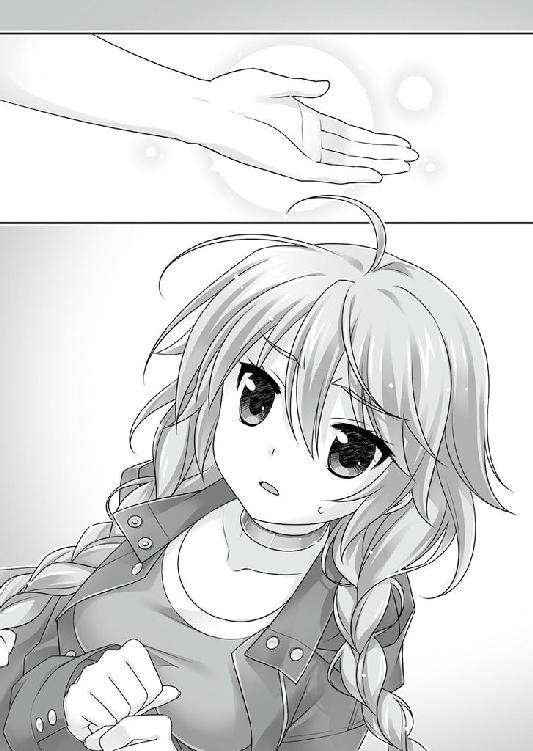
叔美と言葉を交わしている間、この男はどうして何もせず待っていてくれたのだろう。
叔美の「一緒に行く」という言葉を受け入れて、最後の別れの猶予を与えてくれたのか。
その疑問は、ヨブスの無感情な眸に跳ね返される。
男は、その視線の先の、ウシオだけしか見ていない。
敵が来る。どうするべきか？
キミが悩む必要はなかった。ウシオが、ヨブスとの間に割り込むように前へ出たからだ。かつての仲間へ立ち向かうように。背負ったか弱い人間を庇うように。
「よくこの場所が判ったな」
無言の声で言う相方に、ウシオは軽く肩を竦める。
「簡単よ。アナタが逃げる時、背中に糸を付けてたから」
「────」
あまりにも馬鹿馬鹿しい種明かしに、ヨブスは失笑した。
ウシオの「力」はよく知っていたつもりが、そんな失敗をしでかすとは、と。
一條は、ウシオの背中と『本』の記述の両方を見据える。
一挙一動、一言一句を見逃さないようにして、『その時』の訪れを待ち侘びる。
ヨブスがウシオしか眼中にないのは、計算通りで予想通りだ。
この盤面で、ヨブスにどうにか対抗できるこちらの持ち駒はウシオだけ。真っ当に駒を進める限り、一條や碧流は頭数にも入らない。
そして、二人のｃＳはどちらも手負いだが、片やウシオは立って動いているのさえ不思議な状態。単純な力の量で比べる限り、三対一でもヨブスの勝ちは動くまい。
だから、ただ今この場で、一條は動けなかった。
まだ、ウシオに任せるしか術がない。
「でも、最後まで気づかないとか、正直意外。ほら、私の糸が見えちゃうでしょ」
ヨブスの尸器はコウモリだ。幾つかある能力の一つは、本物のコウモリが暗闇でも障害物を回避する為に使う反響定位。完全な状態なら、追跡の糸を発見することは難しくなかった筈だ。
「前日にあれだけ負傷して、おまけに妙な切り札を使って。あんなのがあるなら、もっと早くに使えば良かったのに」
切り札──黒い炎の虎を呼び出した、叔美の首輪のカラクリ。
使わなかった理由なら、一條にも想像がつく。
まるで『１４』を具現したようなアレを、制御しきれる者なんているわけがない。
「アナタにとっても痛かった筈よね。傷口が開いた？ それとも、逃げ際に非道い目に遭った？ まあ、アナタもそろそろポンコツってことね」
淡々と、ウシオは挑発するように言ってのける。
「その傷で、俺に勝てるつもりか」
「傷物は、お互い様よ」
ヨブスの眼球が、ウシオ以外の二人を見回す。
「ｃＳのクセに、敵とツルんだか」
「ｃＳのクセに、裏切った不良品はどこのどいつよ。アナタをほったらかしにしておくつもりがないだけよ。コトワザで呉越同舟......だっけ？ 覚えておきなさい」
今は、睨み合う二人が主役。キミは一観客でしかないが、ここで下手な考えを起こすべきじゃない。分を弁えないヤツは怪我をするだけだ。
ウシオが一歩前に出る。揺るぎない動作。まるで仕事を果たす機械のように。ゼンマイ仕掛けのカラクリ仕掛けのように。
「頭数だけ揃えて勝てるつもりか。不良廃棄よりは、自滅が好みか」
「バッチリ叩きのめしてあげるから、先に一つだけ聞かせなさい。どうして、裏切った？」
元敵の少女の質問は、一條にも疑問だった。
ウシオを見ていれば判るが、道具だというｃＳは、確かに自分たちとは少し違う。
執着がない。だから、人格がとても薄い。
ウシオが子供みたいに素直なのも、そのせいだろう。
「......取引をした」
多分、これが最後の遣り取りになるのだと、両者とも疑っていなかった。
迷いどころか、元々感情もなさそうな無表情で、お互いに元相棒と対峙する。
「それで、何を貰うの？ お金？ 自由？ それとも、人間のフリができる身分？」
「人間だった頃の素性」
「..................................................................はぁ？」
ウシオが露骨に顔を顰める。リンゴを囓ったら芯まで食べてしまったと言い出しそうな、思いもよらない失敗に面と向かってしまったような。
「そんなものが欲しくて裏切ったの？ マジで？ 正気で？ 本気で？」
「お前は、憶えているか？」
「憶えているも何も。私たちは、人間ベースなだけで、ｃＳでしょう。人間だった頃なんて、ないのよ。それは只の外側よ」
「憶えていないなら、お前は幸運だ。俺は、時々夢を見る」
「いや、ｃＳが夢って......アナタ............」
「断片を。過去の縁を、だ」
「それは、アナタのモノじゃないでしょ。壊れてるんじゃないの」
「それでも、いい。俺たちは何でもない。誰でもない。あの一瞬しか見えない記憶だけが、確かに俺を証明してくれる」
ああ、まったく。なんて身につまされる話だろう。
「アナタ、本気でバカ............」
それっきり沈黙したヨブスに、どうしようもなく、コイツは真剣なのだとウシオは痛いほど理解した。
だから、それ以上言うべきことは尽きてしまった。
音もなく、二人の戦いが始まった。
後ろで注視していた一條にも、それが何時どうやって始まったのか、わからない。
二人の怪物は左右に散る。ウシオは右に、ヨブスが左に。コンクリートを踏み砕き、羽根でも生えたような勢いで疾走する。生物として決定的に遅い一條からは、どちらも消えたとしか思えない。
木霊のように魔笛が歌う。二人の闘争の軋みの隙間から、口笛のような音がする。
波を切る船の軌跡のように、ジェット機の残す飛行機雲のように、彼らの人外の動きが生んだ見えない爪痕が、大気を裂いて魔笛を歌うのだ。
「──よし」
一條は、冷静だった。
巻き込まれたら一溜まりもないだろうが、見えない分だけ怖くない。人間、一歩先に落とし穴が口を開けていても、そうと知らなければ歩いていける。
何時とばっちりが飛んでくるか、という雑念は、頭の中から追い出した。
代わりに思考したのは──
あのコウモリ男は、「明日」が欲しかったのか、「昨日」を取り戻したかったのか。
自分である理由が欲しかったのか。
一條には、男の願望が解る気がした。
まるで鏡の中を覗き込んだような気分。
自分である理由も意味もなければ、自分が誰であるかさえ、わからない。水面を泡になって浮かんでいるような、不安。ふとした弾みに弾けて消えてしまうという、頼りなさ。
だから、男は証明を求めた。狂おしいほどに自分の欠片を渇望した。
同じではないが、似たものを抱いているからこそ、敵である男の焦燥も想像することができてしまう。
──それでも、だ。
千里一條の遣るべきことは、一つきりなのだ。
二匹のｃＳの戦闘は続いていた。
待ちかねた『その時』は、きっと今だ。
ヨブスの注意が一点に集中して、ウシオ以外の『外野』を、眼中ではなく意識の外へ弾き出してしまうこの瞬間が、一條たちには必要だった。
「ここへの途中で打ち合わせた通りだ」
碧流が囁く。
ここまでは、計画通りの進行だ。
ここからがキミの出番であり、キミにとっては苦難の道だ。
本当に後悔しないのか？
打ち合わせ通りにやる／８０７─■■■■ へ行け
もう少し様子を見る／５１０─■■■■ へ行け
今更だよと苦笑しながら、碧流に頷く。
打ち合わせの内容──それには、碧流の持つ『力』の説明も混じっていた。
一條の『本』とは別種の、千里の血筋に伝わる力の断片について。
「本当に、そんなこと、できるの？」
「姉を信じろ」
「うん」
「そして、選べ。キミは、どうしたい。選べる『結末』は一つ。二つはない」
「それは──」
一瞬たりと躊躇わずに、答える。
ヨブスをぶちのめすのでも、勝つのでもない。
たった今、この場で遣るべきことを、間違わずに選ぶ。
悲しいような、笑ったような、そんな顔で碧流は頷いた。
「キミの意志は伝わった」
それだけで十分だと言いたそうだった。
『──私はここに、正しい終わりを書き加える』
魔法の言葉を唱える。
碧流にとっては、祖母から教えられた奇跡を為す呪文だ。
千里は、古い一族である。
その昔は西の八石と呼ばれて尊ばれ、天文地文を読んだという、もっともらしいことが語り継がれているが、本当かどうかはわからない。碧流はそれなりに信じていたが。
千里の祖先は色々しでかした挙げ句、都を追われてこの土地に落ち延びてきた。
人ではない「ヒトデナシ」は怖れられ追われる宿命である、と言えば聞こえはよいが、所詮権力闘争に敗れた負け犬というのが実情かもしれない。
例えば、大江山に鬼がいたという。鞍馬の山には天狗がいたという。彼らのある者は討伐され、ある者は人間に味方した。
それぞれの選択がなされたのだ。
千里一族は、ケツを捲くって逃げ出す道を選んだ。ある意味で、頭が良かったと言うべきだろう。都を巡るあまたの政争や戦争に巻き込まれずに済んだのだから。
そこから遥か悠久に近い歳月が流れた。人の一生を幾十重ねなければ到底追い着かない時間の流れの最果てで、代を重ねるごとに薄れて、とっくに廃れてしまった千里の血だが、時折は先祖返りのように顔を出すこともある。
「あ──」
碧流の『力』を、一條は初めて目の当たりにした。
一條の『本』が、選択視を選んでもいないのに独りでにパラパラと捲れていく。
今ではない、どこかのページが開かれる。
碧流の指先が、見えていない筈の『本』の読めない『のたくり文字』の隙間に、何かを書き込むのを見た。限られた文字数で、出来るだけ正確に。
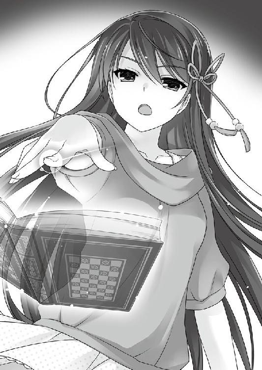
必要な『結末』が書き加えられた......のか。
これが千里碧流の『力』──
他人の人生の分岐に、存在しなかった「新たな一葉」を加える。
『本』に書き込んでいるように見えたのは、一條にとってそう見えただけで、実際には人生の筋道そのもの、人間という一冊の『本』に、望む行き先を書き足したのだろう。
例えば──目の前のコウモリ男を倒してしまうという、あり得ない『結末』を、だ。
そして、向かうべき『結末』があるのだから、そこへ至る道筋も存在する。
原因があるから結果があるという不動の前提に叛逆し、結果が確定しているから原因が創り出されてしまう矛盾。
ここに、因果は逆転する。
現実を覆して、あり得ざる不条理を実現する力。
「姉さん......」
「道は拓いた。その『本』のルールに則ると......」
そう、一條が望んだ、これから向かうべき『道筋』は拓かれた。
だから、後はその道を間違わずに選び切れるか、だ。
「五つか、六つ先だ......多分......」
多分なの？ と一條は思った。
こんなところへ来てまで、普段と何も変わることなく、つくづく大ざっぱな姉である。
千里の先祖は、世の運気を実際に読み取ったのだという。吉凶を自在に導いた──とも言われている。もはや伝説でしかないが。
碧流には、そこまでの力はない。今の千里は枯れた成れの果てだ。多くの限界に縛られている。片鱗が泡沫のように浮かぶことはあっても、やはり最初の一には遠く及ばない。
（いくら、望む『結末』が書き加えられたからといったって......）
一條は考える。
碧流の力が、説明された通りの代物だとしても、それは望んだ『結末』の実在を保証してくれるだけで、それ以上でもそれ以下でもない。
考えてみればいい。人には、一体どれだけの「結末」があるのか。
その中から、自らが唯一とする『結末』に辿り着くのが、どれほどの困難か。
碧流は『結末』を書き込む際に、そこに辿り着くまでの大凡の『距離』を測ることもできる。ただ、具体的にどんな選択をすれば、どの分岐を選べば、そこに到着できるのかは、碧流にもわからない。相手に合った助言をするぐらいが精々なのだ。
五つか、六つ。
『本』のルールで説明するなら、ＰＧを五つか六つ選んだ先に、一條が必要とする『結末』、待ち望んだ『正解』が用意されている、ということ。
「正しい」選択視を選び続けなければ、折角作った『結末』に辿り着けない。
（当たるも八卦、当たらぬも八卦......ってところか）
よくある口上が、碧流の力を的確に言い表していると、一條は思う。
仮に、五つ先に正解があるとしよう。
選択視が全て二択でも、適当に選んで辿り着ける確率は、三パーセントちょっと。普通に考えれば、まず無理だ。
（──普通ではなければ、話は違うってことだ）
一條には『本』がある。ＰＧを頼りに道筋を選び抜くことができる。辿り着きさえすれば、望む結果になると判っている。
簡単に滑り込めないのは確かだが、普段のように目的地もわからず選び続けるのと、確実に待っているゴール目指して前進するのでは、やる気も集中力も選択視のチョイスも全然違う。
スゴい。行けるぞ。
自己暗示のように自分を奮い立たせて、一條はこれまでとは違う一歩を踏み出した。
碧流は後ろに下がったまま、動かない。
動きたくても動けないのだ。一條の前だから無理に平静を装っているが、顔色を見れば、立っているのも辛いのだとわかる。
──他人の『人生』に、新しい『結末』を書き加える。
人の手に余ることをしでかしたのだから、ひどく消耗するのも当然だった。
この場で、碧流が与えてくれる機会は、この一度だけ。
「......上等」
「本当にいいの？ 私には、あの女の言ってること、信じられないけど」
ウシオが一旦後退してきて、一條と並んだ。
「いいよ、僕は信じてる」
ヨブスとの戦力差は明らかだ。事前の打ち合わせでも、今のままではとてもじゃないが勝ち目はない、という結論だった。
勝ち目がないなら、作ってから勝負に出る。
碧流の『力』は扱いが難しい。望んだ『結末』と現在の状況との違いが大きいほど、辿り着くまでの距離は長くなる。必然的に辿り着くまでに選ばなければならない選択の数は増え、ゴールするのはより難しくなる。
例えば、一條が億万長者になる『結末』を望んで書き込んだとすれば。最短コースを踏破できたとしても、辿り着くのにＰＧを一〇〇個選んでもまだ足りないだろう。
また、書き込める「文字数」に限度があり、書いていない部分の保証はできないらしい。「相手に勝つ」と書き込めば、「勝ったが大怪我をする」という結果も全然ありなのだ。
わざわざ「事」が始まってから書き込んだのは、ギリギリまで現在と『結末』との距離を短くして、不測の事態の起きる状況を出来るだけ減らす為だ。
８０７─■■■■
できることは、全てやった。
コトの次第はキミ次第、というわけだ。昔の諺では、こういうのを人事を尽くして天命を待つとか言ったそうだが。天命が信用できないヒネクレ者なのを、キミは知り尽くしてる。
とやかく言うのは、ここまでだ。
まずは目の前に立ちはだかるヨブスを退けない限り、叔美の処へは行けないだろう。
問題は、次に取るべき行動だ。
ウシオに先手を譲る／８８５─■■■■ へ行け
最初に自分が突っ込む／４５２─■■■■ へ行け
焦らずにチャンスを待ち構える／７３８─■■■■ へ行け
何か武器になるモノを捜してみるか／７１７─■■■■ へ行け
一條の前に開かれていた『本』が、『道』を告げる。
思えば、明確な目的を持って、行き先を目指してこの『本』を見るのは初めてだ。過去はないものと割り切った筈の自分が、無意識の内にこの『本』を遠ざけて、そのクセ、拒絶しきることもできなかった。ずっと半端だった。
逡巡も一瞬。千里一條は、振り向かないのが信条だ。
前を見る。ＰＧ８０７の最後には選択視。
一つ目は、四択──どれを選ぶか？
８８５と４５２と７３８と７１７。
五つか六つ向こうには、「結末」が待っている。正解のＰＧを選び続けている限り、そこまでは選択視が続いているということだ。
行き止まりの１４の気配は、そこかしこにあった。
今はパンピーには厳しすぎる、人外の域の戦いの真っ直中。１４は幾つも潜んで爪を研いでいて、一條にも到底見分けられない。
慎重に、慎重すぎるほど慎重に、選択視を選ばなければならない。
「え、ちょっと、死にたいの!?」
ウシオが慌てているが、一條は後ろも見ずに突っ込んだ。
──状況を変えられる選択は、これだけだ。
まずは、「ヨブスを退け」なければと、『本』には著されている。ｃＳを退けられる選択視を、論理的に思考した。自分が武器を持ったところで足しにはならない。ウシオに任せていても、さっきまでの場面の再現だろう。
それでは意味がない。状況を先に進めなければならない。
だから、一條は大胆にも、力の差も顧みず、全力で戦場の真っ直中に飛び出した。
単身で先頭を切るのは一見危険だが、この状況で取り得る選択では、最も安全だと『本』が教えてくれている。
信じよう、ここまで一緒にやってきた『本』を。
「もぅうぅ、人の話を聞け！」
憤るウシオに隙を見たか、ヨブスが挑み掛かった。
二人の魔人が戦いを再開する。
４５２─■■■■
「糸の数も密度も足りないな。お前は壊れかけのガラクタだ」
「うっさいわね」
空を裂くヨブスの爪が、美しい火花を振りまく。
降り注ぐ糸と迎え撃つ爪の拮抗が咲かせた華は、うら若き乙女のあげる悲鳴のように咲いては散る。
元仲間の指を鳴らす音に、ヨブスは夜の空を振り仰いだ。
四方から頭上に、巣のように組み合わさった糸が降り落ちてくる。
「アナタとやり合ってる間に作った即席だけど、これでどうよ」
「さっきから、何かしているとは思っていたが......」
見えない糸もヨブスには見えるが、この密度では避けられない。
「その身体で、よくやる」
上に注意を向けさせておいてから、ウシオが正面から新たな糸を放つ。
続く糸は数えられる程の本数だが、取引のブツである叔美を守ろうとしたヨブスは、全ての糸を避けられなかった。
一條には、正直何がどうなっているのかさっぱり判らないが、『本』の記述によると、飛び出した一條を援護しようとウシオが糸を飛ばし、ヨブスがそれを迎撃したらしい。
わー、すごーい。
見えない速さでやり合っている二人に、思わず平仮名で拍手したくなる。
「────」
糸の攻撃によって、男のコートが細切れになって裂ける。中には大きい破片もあったが。
ヨブス本人は無傷だった。おまけに、ｃＳたちの戦いについていけずに棒立ちになっていた叔美を左腕で浚う。逃がさない為だろう。小さな叔美を荷物のように抱えたまま、地を跳ね飛んでウシオとの距離を詰めていく。
「うくぅ」
高速で飛び回られて速度を浴びた叔美が、押し潰されそうな悲鳴をあげる。
おいおい、他人の騒ぎに見入っている場合じゃないぞ。おっと、キミには見えてないんだったな。とにかく今は、少しでも前に進まなければ。見えるものを見て、自分のやるべきことを忘れないのが重要だ。
今の内に出来るだけ叔美に近づくんだ！／５１６─■■■■ へ行け
戦っているウシオを援護するぞ／９２２─■■■ へ行け
あるいは、ここは港だ。周囲をよく捜せば、力になりそうな道具や機械を発見できるかも。ウシオが敵を引きつけている内に調べてみるのなら／７９９─■■■■ へ行け
焦って下手に動かず、ここは耐えて隙を窺うべきなら／８７１─■■■■ へ行け
二つ目──今度も四択だ。
「どれだ!?」
望む結末は、最低三つ先の分岐。そこまでは成功しない、という意味でもある。
ここで叔美を助けようとしても、ほぼ確実に失敗するが、失敗そのものが「その次」への布石ということも考えられる。
「──落ち着け、僕、いいか焦るなよ」
いつもと同じく『本』は何も応えない。いや、『本』はいつでも答えている。一條が視えていないだけだ。
追い詰められた小さな自分を呑み込む。信じると決めたのだから、冷静に見極めろ。
『結末』は、ずっと前の段階で決まっている。
それは動かせない大前提だ。ならば、碧流の『力』とは、今この場にある「状況」に、ほんのちょっぴりの「幸運」を加えて、望んだ『結末』への道を拓く力。
「────！」
そして、判断し、決断した。
「一條!?」
叔美は、一條があまりに出鱈目な行動に出るのを見た。
ヨブスに向かって走ったのだ。
「バカ、よせ！」
ヨブスの動きに振り回されながら叔美は叫んだが、一條は止まらない。
並の人間がｃＳに近づくのは、無謀ではなく、自殺も同然の蛮行だ。一條が「何」を見ているとしても、ヨブスが腕を一振りすれば、何もかもが終わるのだから。
自分の行動の愚かさは、一條自身が百も承知だ。
碧流が『結末』を加えても、状況そのものは突然ガラリと変わったりはしない。つまり、これは同じパズルのピースを使って、別の絵柄を作る作業──望む『結末』へ至る道筋の伏線は、「現在」の中に必ずある。
だから、『本』の忠告に従って、見えるものを見た。
必要なものを見出して、一條は、ススキの葉のように風に舞うコートの細片を潜り抜ける。ウシオに注意を向けているヨブスの背後から疾走し、限界を超えて近づく。
「──僕のことは、頭数に入れてなかっただろ！」
選択視に従って、叔美に手を伸ばした。
選んだのは、「今の内に出来るだけ叔美に近づくんだ！／５１６」だ。
ヨブスに抱えられままの叔美の手が、応じるように伸びる。
少女の眸が一條を映す。指先が触れようとした。
その間を、黒い巨大な皮膜が遮った。
「────」
同類以外には聞こえない声で、おそらくは嘲笑を嘯くヨブスの腕は、コウモリ状の皮膜が──羽根になっていた。
片腕が叔美で塞がっていて使えないからか、空を飛びこそしないが、もう片方の羽ばたきで跳躍を加速し、追ってくる糸を振り切った。ついで程度に、一條も殴り倒された。
羽根でぶん殴られたのだ。見た目は脆そうなのに、丸太でもぶつけられた気分で、目の前に色鮮やか星が飛び散る。途切れた意識が戻った時には、仰向けで踏みつけられていた。
胸を鉄塊のように圧迫するのは、今や羽根の生えた怪物的な姿形を現したヨブスの右足。ポーズ的には、金剛力士に踏みつけられる小鬼状態だ。
「おい、やめろ！ ソイツは、ただの一般人だろ!!」
頭上で叔美が、一條が踏み抜かれるのを止めようと暴れている。
もうちょっとだけ、待ってて。
すぐに、そこへ行くから。
その前に、何とか金剛力士と小鬼状態から脱出しなければならないが、相手はｃＳだ。普通にやっても勝ち目はない。考えなければ、ならない。
だが、そんな間もなく三つ目がきた。
内容を一目見て、一條は強引に動こうとした。
抵抗を意にも介さなかったヨブスが、突然仰け反る。死角から襲い掛かったウシオを、コウモリは見逃さずに綺麗に避けたのだ。
おかげで一條は自由になった。即座にその場から脱出する。
選択視は、とっくに選んでいる。
６３５─■■■■
「要するに、これは解りきった勝負だ。俺に届くのは、お前だけだ。こいつらを囮にしても、俺はお前の居場所を聞き逃さない」
冷静に戦力を見切った男の、聞こえない声が珍しく多弁に告げた隙に、キミは素早くその足下を駆け抜けて──
ＰＧは、三つ目の６３５へ。
ソナーじみた音波の反射を知覚するコウモリ男は、四方の全ての状況を視覚以上に認識している。付け入るのは容易ではない。
──この場合、でなければ、だ。
ヨブスは、必死に食らいついてくるウシオに集中し過ぎていた。自分が有利とはいえ、相手も同格のｃＳだ。油断すれば足下を掬われる。最後まで確実に仕留めようとした。
だから、足下から逃げる一條のことは、戦力外だと無視をした。
一條が、地面に落ちているコートの破片に飛びついて拾った時も、何の不安も感じていなかった。そこにあったものに気づくまでは。
「貴様!!」
ヨブスが叫ぶ。無言の声はキミの耳には届かないので無視しよう。
切り裂かれたコートの破片から、目当てのモノを発見したか？
よし、上出来だ。
三つ目に選んだのは、「落ちているコートの破片を探ってみる／６３５」。
「──よし、上出来！」
一條が拾い上げたコートの破片の一部は、内ポケットの部分だった。
その中を探って取り出したのは──
叔美の「首輪」を操作した、あの制御端末！
ＰＧ４２５で『本』の忠告を視て、一條は考えた。
この状況をひっくり返す「伏線」は何処にあるのか、と。
原因もなく「結果」は生まれない。碧流の書き込んだ『結末』でもそれは同じ──だとすれば、力では勝ち目のない自分たちが逆転できる手札の心当たりは、一つしかなかった。
だから、捜した。
「見えるものを視て」発見した。
昨日、ヨブスが端末をコートの内側のポケットから取り出すのを、一條は目撃していた。先程、糸で切り裂かれてコートが細切れになった時、一緒に紛れて、端末はポケットごと落ちたのだ。『本』に著かれていた通り、大きな破片になって。
一條が無謀に突っ込んで、叔美を救えないと判っていながら手を伸ばして見せたのは、ヨブスの注意を惹く為だ。こちらの目論見と、端末の行方を気づかせないように。
一見無謀な特攻のようでも、おそらくヨブスが一條を侮っていて、その実危険そのものが少ないのは、ＰＧの数字が教えてくれていた。
それでも、負傷を押してウシオが死に物狂いに食い下がっていなければ、ヨブスは一條の意図を見抜いて先手を打てていた筈だ。
全ては、積み重ねた結果の必然だ。
そして、端末は一條の手元にやってきた──『切り札』が。
■所持品
首輪の操作端末
最初から、「首輪の操作端末」は見過ごせないファクターだった。
奪うか、最低でも破壊しなければ、どうにかしてヨブスを追い詰められたとしても、前回のようにひっくり返される。
「パスワードは──」
ウシオの叫んだ暗証番号は一六ケタで、とても一度では覚えきれないが、ここに記述しておくので、打ち込む前に間違えないよう確認すること。
「!? お前がパスワードを知っている筈がない！」
ヨブスが初めて表情を歪めている。残念ながら、これは彼のミスだ。叔美の炎虎を起こした時、糸に掛かったまま端末を操作してしまったからな。
あの時に、糸の振動を通して、ウシオに首輪を解く暗証番号を盗み取られていたわけだ。
阻止しようと羽根を広げたヨブスに、後ろからウシオが食らいつく。
「アナタの相手は私でしょ！」
とっくに限界のウシオに稼げる時間は何秒もないが、ヨブスが糸とウシオを振り払って向き直った時には、遣るべきことは終わっていた。
「叔美!!」
「一條!?」
状況の解っていない叔美が、不安を叫んでいる。
叔美までの距離は、ほんの数メートル。キミは、この短いが果てしなく危険で遠い距離を詰められるだろうか。
危険なのは、ウシオも同じだ。怒り狂ったヨブスの攻撃は、今のウシオではとても防ぎきれるとは思えない。
キミは、どうすべきだろう？
このままではウシオが危ない。助けに行こう／９２８─■■■■ へ行け
まだだ、もう少しだけ様子を見るんだ／７７４─■■■■ へ行け
手に入れたばかりの「首輪の操作端末」にパスワードを打ち込んで、今ここで使うことは可能だ。
アイテム・「首輪の操作端末」を使用するなら／８４９─■■■■ へ行け
これは、四つ目だ。選択視は、減っていた。
これまでの四つの選択肢で、一番悩むことなく選び取る。
ヨブスが持つ最強の手札だった端末は、こちらにとっても状況を決定的に左右できる一枚だ。
この三択は、実質一択と変わらない。今の不利な状況を一発で逆転できる妙案は、ただ一つ！
──端末を、叔美の首輪に照準する。
暗証コードは入力は終えた。後は実行するだけで首輪の戒めは解き放たれる。
「押したらどうなるか、わかってるだろ！」
緊張で足に力が入らない。へたり込みそうになったが、無理して格好をつけて言った。
その場の時間が凍りつく。
即座にボタンは押さなかった。選択視は「アイテムを使う」で、ボタンを押せとは書かれていないから、一條は慎重に使い方を吟味したのだ。
ＰＧが危険を告げても、きっとこれが最善の選択だ、と。
対峙しているヨブスとウシオも叔美も碧流も、全員が、次の一瞬を待って息を呑む。ヨブスがｃＳでも、この距離なら一條が端末のボタンを押す方が早い。
そして、五つ目が出た。
やっとだ、と一條は思う。ここまで来た。これか、更にこの次か。
どちらかで、望む『結末』へ辿り着ける。
８４９─■■■■
さあ、いよいよ重大な決断をするべき時が来たぞ!!
パスワードは打ち込んでいる。後はボタンを押すと完了だ。
あまりにも重要なことだから、念の為にもう一度確認しよう。
首輪の操作端末のボタンを、本当に、今、押してしまうのか？
ボタンを押す／９２９─■■■■ へ行け
やっぱり、ボタンを押さない／９３８─■■■■ へ行け
いよいよ来た、待ち続けていた選択視だ。
ボタンに関する表記が、ハッキリ著かれている。
しかし、この二択は、一條にも判断がつかない。
押すのか、押さないのか──どっちが「正解」だ!?
短い記述には「伏線」らしいものも視えない。
この二つの選択視のどちらかは、碧流に書き加えて貰った、一條が願った通りの『叔美を連れて帰る』というゴールに繋がっている筈。
それはつまり──
ゴールがあるのだから、辿り着けなければ、叔美を救えない。
「──ッ」
ここへ来て思い知る。
タダで転がり込む幸運なんて、そんなご都合主義は存在しない。碧流の力で「正解」が書き込まれてしまった以上、それ以外は「不正解」ということだ。
正解があるから不正解が生まれるという、逆理。
──考えろ、僕！ 何か手掛かりはないのか？
身を削ってくれたウシオや碧流の為にも、ここまできて失敗はできない。
この端末は、元々勝算のない一條たちの、起死回生一発逆転の一手。絶対かつ最終的な切り札だ。つーか、現状これ以上、他の手段はないし思いつかない。
ここへ来る途上で聞かされたウシオの説明によれば、叔美の首輪は「災いをある程度食い止める」為のもので、引き寄せる「不幸」の力が蓄えられる。いわば、小さなダム。暗証番号を打ち込んで解除すれば、蓄えていた『力』を解き放って、周りの全てを押し流す。
一條の直感は正しかった。昨日、ヨブスが首輪を解いた時に現れた怪物は、叔美の『１４』の具現なのだ。
だがそれは、強すぎて扱いきれない。この場の誰一人として。叔美自身さえ。
アレは嵐と同じだ。具象化すれば制御できず、ただ荒れ狂い、１４──死をもたらすだけのもの。
野生の獣が、時に巧妙なハンターの罠を見破るように、かつて一度１４に触れて戻ってきた一條の感覚が、いよいよすぐ傍に潜んでいる１４の気配を察していた。
ゴールが近い分、障害も過酷になるということか。それとも、碧流が強引に成り行きを「書き加えた」釣り合いとして、ハズレが非道い結末に繋がるのか。
この状況では１４の気配で、正解を見極められない。
二択のどちらが「正解」か、判断する方法が他にあるだろうか？
「──どっちだ？」
一條にもわからない。見えない。人生の一寸先はどこまでも不透明。伏線から推測して、身構えるのが精一杯。
この状況を、ここまでの碧流やウシオの助けを、何もかもを無駄にしない選択が出来るのは、自分だけだというのに。
碧流は、五つか六つだと言った。
五つ目で正解へ着けるなら、「押して」決着をつけるのが正しい筈だ。きっと、何らかの幸運で、叔美を助け出すご都合主義が訪れるのだろう。
六つ目なら、「押さない」がおそらく正解。今すぐボタンを押しても、何らかのトラブルが起きる。一度待った先が、この状況を打破して『結末』へと繋がる最後の選択視だ。
（どっちか......じゃない）
何の手掛かりもないこの選択、それなのに『運命』を二分してしまう究極の二者択一を選ぶのは、自分自身の決断でなければならない。
どちらが損得かではなく、自分がどうしたいか、だ。
後ろ髪引く迷いを振り切った。
千里一條は、振り向かない。前だけ見るのが信条だ。
──死か、さもなくば、正解か。
「叔美、いいな、やるよ！」
ハズレを選んでしまうのが怖くないわけじゃない。
それでも、選べないのは、もっと怖い。
ここにいるのが、千里一條の理由であるように、この選択を遣り切るのが、千里一條の意味だ。立ち止まってなんか、いられるか。
「............帰りたいよ」
震える肩で、まるで家を見失った迷子のような顔で、叔美がポツリと言葉を零した。
──ああ、そうか。
端末の先端が、ヨブスが抱えた叔美の首輪を狙っていた。
叔美は、何かを祈るように目を閉じている。
首輪は、どうしようもなく危険な代物だ。凡そ救いもなく区別もなく皆殺し。全員に１４をもたらす爆弾にもなり得る。
叔美は、全て承知の上だった。
それでも。
一條と、一條が見える「何か」の選択に全てを託していた。
ヨブスが、もはや間に合わないと承知で、地を這う影のように疾走する。
その時──
端末が一條の手から落ちた。
何が起こったのかは判らなくても、ヨブスはその隙を見落とすような男ではなかった。
半死半生のウシオを払い除け、敵が端末を拾う前に爪を振り抜けば決着はつく。
──とても、簡単なことだった。
それは一瞬の出来事だ。
一條が、地面に落ちた端末を踵で踏み潰した。
確実に、完全に、二つに折れた端末は破壊されて、二度と使えなくなった。
「はぁ────？」
全員が、狸に化かされたような顔をしていた。
特に、叔美と碧流はヒドかった。「なにやってんだ、このバカ」という心の叫びが、そのまま顔に出ていて最悪だ。
一條は申し訳なさで一杯だったが、仕方なかったのだ。
叔美が、とても怖がっていたから。
自分に取り憑いているモノを。それが、もたらしてしまうかもしれない『１４』を。
それが、一條や、碧流や、他の誰かを捕まえてしまうかもしれないことを。
それでも、ボタンを押すのは簡単だ。リスクを覚悟しなければ、この状況を一発逆転なんて不可能なのだから。
だから、使えばいい。
まるで道具のように。
そこにいる、人間の形をした１４を。
お前は、「１４」なのだと知らしめてやればいい。
──そんな真似ができなかった。
死ぬよりも嫌なことだって、世の中にはある。
そんな涙を、女の子に流させるのは、それこそ死ぬよりも嫌だ。
だから、選んだのは、９３８。
これで、綺麗さっぱり切り札がなくなってしまった一條の目の前に、ヨブスが真っ直ぐ迫ってくる。
さて、後のことなど考えていなかった。避けるか、逃げるか。
所持品欄から、「首輪の操作端末」が消える。
この選択は、「正解」なのか「不正解」なのか。
六つ目がゴールだったとして、必要な『アイテム』が消えてしまった以上、どうなるのだろう。やはり失敗するのだろうか。
折角与えて貰った機会を活かしきれなかった。
「......ごめんなさい」
碧流とウシオに謝りながら、この選択を、最後まで後悔だけはするまいと決めた。
千里一條は、振り向かないのが信条なのだから。
ヨブスには、理解できなかった。
一條が何をしたのか。ヤツらにとって、端末は切り札だった。アレを使えば自分を排除して、望みを叶えられる。
最後まで、一條のやったことはわからなかったから。
「────」
ヨブスは、前ではなく自分を見た。
「おい............」
叔美も、呆気に取られた顔で、それを見た。
男の腹から、鋭く刃のように指を伸ばした手が突き出ている。
「バカじゃないの？」
まるで昨日のやり直しのように、今度はウシオの右手が、後ろから前に貫いていた。
「我を忘れて。バカみたい」
ヨブスは、唇の端をほんのちょっぴり歪めた。
初めて見る表情らしい表情は、もしかすると苦笑だったのかもしれない。
真っ直ぐに、迷うことなく進んでいれば、こんな結果にはなっていなかっただろう。全くもってバカだ、と。
──ああ、そうか。
一條は、終わりを確信した。
血を吐いて傾いでいくヨブスの姿こそ、正解だったのだろう。
この男を倒したいとは一度も思わなかったけれど、千里一條があり得ない『結末』を望んだから辿り着いてしまった。
五つ目の選択視で辿り着くゴール。欲しかった筈の正解なのに、哀しくて、やるせない。
ヨブスの腕から力が抜ける。叔美はそのまま下に落ちて鈍い音を立てた。
自由になった叔美は、ぶつけた頭の痛みを気にする素振りも見せず、こけつまろびつやってきた。
映画のように飛び込んでくるかと思ったのに、そんなオシャレな遣り取りはなく、泥臭く途中で一度転んだ後、立ち上がって、手が届くには足りない距離を置いて足を止めた。
「い──」
彼女は何か伝えようとして。
９３８─■■■■
ヤツが動いた。まだ生きているのだ!!
ヨブスは、最後まで諦めない。自分の息がある内は、自分の遣るべきことを、望みを果たす為にやり遂げる。
それは機械のようなｃＳが持たない、人間じみた執念だ。
機能停止した筈のヨブスが、目を見開いて半回転する。足下のコンクリートを踏み抜くほどの力だ。
何をするつもりなのかを悟ったウシオは、それを食い止めようとした。しがみついて。
最後の咆吼もなく、高速回転しながら、ヨブスの右の肘がウシオのこめかみを打ち抜く。とっくに限界の彼女に、踏み止まる力はない。
ヨブスは、更にもう半回転しながら跳躍する。瀕死の状態とは思えない恐るべき速度で、叔美を追い越す。
左の爪が、名刀の軌跡に似た鮮やかな弧を描く。
自分の一條へ。そう、敵。
理屈はよくわからなかったが、ヨブスは、この目の前の、数にも入らなかった一條こそ、今の事態を招いた根幹なのだと察していた。
時間が鈍化した、引き延ばされた一瞬。
一條は、そこに在るものを見た。
とうとう、追い着かれてしまったのだ、と。
そして、一瞬で──
キミの胸を、ヨブスの爪が貫く。
肉が裂ける。骨が削れる。着実に、確実に、キミを表から裏まで貫き通す。
切っ先が鋭すぎて痛みは感じないが、細く鋭い熱がある。
「──あれ？」
どこで選び損ねてしまったのだろう。
用意されていた『結末』へ辿り着く為の正しい道程は、どれだったのか。
それとも、ここは碧流の『力』の外、辿り着いてしまった後の、思いもよらぬ「不幸」なのか。
一條にはもうわからないし、それを知る意味もない。
そう、『結末』とは登場人物だけのもの。
本の中の物語とは違う。いつか正しい行き止まりに潰える日がやってくるまでは、道中の目標に辿り着いた後も、粛々と続くのが人生だ。
姉さんやウシオには、キチンと謝っておきたい。
頑張って貰ったのに、この様だ。
どうやら、辿り着けなかったらしい。
叔美には......なんて声を掛ければいいんだろうか。
結局、ここ一番で、ハズレを引いてしまった。
まあ、そういうこともある。
正直に明かせば、この結末はイヤだ。本当にイヤだ。
思い残しは色々とあった。
しかし、どうにもならないことも世の中にはある。
そういえば、現国で宿題が出てるんだったっけ。
提出しなくても、多分、怒られないだろう。
あまり長く引っ張ってもなんだし、そろそろ一番大事なことを──
──キミは死んだ。
爪に貫かれてあの世行き。わかるな..................１４ へ行け
【ｅｎｄ】
１４
キミは、気づくと丘の頂にいた。
夜明け間近の紫の空。張り詰めた冷たい空気。風はなく、キミの周りだけ、草の変わりに丸く土が露出していた。どれも見覚えのない風景だ。
想い出というものは厄介だ。あれば困ることも多いが、なければ根拠を見失う。キミとか、ここに来る原因になったあの男のように。
故郷に戻ってからの、糸の切れた凧のような気分は、キミ以外の誰にも解らないだろう。
仕方ない。自分のことだ。結局自分で何とかしなければならない。何とかなるのかは、ともかくとして。
正面には大きな石の柱があった。一本ではなく、何本も。手を広げて周りを巡っても三人分は必要そうな巨石が組み合わさって、墓標とも祭壇ともつかない代物を作っていた。
ストーンサークル。いわゆるヨーロッパの巨石遺跡の一つで、古代の天体観測に用いられていたとも、宗教的意義があるとも言われている。一つ勉強になったな。
「ここ、どこだろう？」
首を傾げていると、誰かが傍に座っているのに気づく。
倒れた古木をベンチの代わりにキミに背を向けて、ゆるゆると地平から昇ってくる朝日と曙光に色めく空を眺めている。後ろ姿なのに、楽しそうと思った理由はよくわからない。
「死んでしまうとは何たることだい」
英語だったと思うが、どうしてだか意味は理解できた。
「............やっぱり僕は死んだんだ」
「『１４』を選んだろ」
「選んだというか、それしかなかったというか......」
してみると、ここは三途のなんたらか、あるいはその近くのお花畑ということになるのだろうか。噂に聞いた死後の情景とは違っているのに、首を傾げる。
「まだ若いのに、失敗ばかりだね。若い内は失敗した方がいいとは言うけど、限度ってものがある。幾ら助けがあっても足りないよ」
見たこともない相手だが、随分と親しげだ。
「あの、もしかすると、どこかでお会いしました？」
「お前はもう憶えていないよ。仕方がないよ。そういうものだ」
随分と古い、有り体にいうと、年寄り臭い言い回しだ。
逆光が丘の上にスルスルと昇ってくるのを眺めながら、彼女は、左手に持っていた短いヤドリギの杖を軽く振る。姿もよく見えないのに、どうして「彼女」だと思ったのだろう。
「ここは、どこですか？」
「わかってるだろう。『１４』だ。普通なら、ここを真っ直ぐ下りて行く。あっち側へね」
西の斜面の下を杖の先で指し示す。
「行くと？」
「還ってこられないよ」
ですよねー、としみじみ思った。
「今回も、特別だ。前回は、私が助けてやった。今回は、あの子がやっておいてくれた。還ったら、よくお礼を言っておくんだよ」
「あの子......？」
「でも、これは難しくて、厄介な遣り方なんだ。何にでも代価は掛かってしまうからね。使う相手、条件もある。たった一度だけだから、奇跡なんだよ。一度切りの魔法。だから次にお前がここへ来てしまったら、もうあの子には助けられない」
「その、使う相手の条件って？」
「『愛』さ！」
「うわっ、恥ずかし......」
現代っ子らしく本音でツッコんだら、杖で頭を叩かれた。
「愛......素晴らしいです、とっても」
「まあね。あの子は、前の時にお前を助けられなかったから、ずーっと気に病んでてね。それで、んー......ちょっと、道を踏み外しそうな感じの『愛』になってるから......ああ、色んな意味で心配だね」
「そんなこと言われる僕の方が心配だよ！」
泣きそうになったが、相手はお構いなしだった。
「さあ、そろそろ還りなさい」
キミは、言われるままに立ち上がる。
「『働かざる者食うべからず』、と言ってね。昔、あの土地は流刑地で、だからそんな理ができたんだ。誰かの為に働けば、自分もその分食べられる」
「コトワザとちょっと違うね」
どちらが正解だろうか、と考えたが、どっちでもいいのだろう。何が正しいかは、それを必要とする人が決めればいい。
「還るお前に、いいものをあげよう」
「何を？」
「『フォティゾ』という言葉を。人には色々な拘わり方がある。血とか、過去とか、感情とか、利益とかね。それは全部お前である証だけど、それ以外の拘わり方もあるのさ」
「それは、たとえば......？」
よく判らなくて訊ねると、彼女は親しげに応えた。
「例えば、本と読者のような。棚に飾っても本は意味がないだろう？ お前が何者だったかなんて関係なく、今のお前という『本』を手に取ってくれる者、お前自身であることを照らしてくれる誰かが、きっと何処かには居るんだよ。そんな誰かと出逢えたら......」
「うん」
「大事に育てなさい。それはとても貴重な出逢いなのだよ。特にお前にとっては......お前がいつの日か、『何者か』を見出すまでは得難い杖になるだろう。この先も続いていく、人生という長い航海に相応しい喜びを与えてくれるだろうから」
そして、彼女は杖を振る。魔法の呪文めいた何かを口ずさむ。
「さあ、行きなさい。祝福を受けて。でもね、当然代価が必要だよ。支払うのは、あの子だけじゃなく、お前もだ。前もそうだったようにね」
「代価って」
「私や、あの子の代わりを務めるのさ。お前は結局家に還ってしまった。仕方ない、自分で選んだことだものね。ここから戻ったら、お前は千里の名前と生き方を背負って生きることになる。それがこの『結果』だよ」
厳しいが、温かくもある、そんな別れの言葉だった。
キミは、本当は大切な彼女の名前を、多分、永遠に喪ってしまったのだ。
「次は、躓いたりするんじゃないよ」
背中に声を聞きながら、丘を東側に下りていった。
今度こそ目を覚ますと、あの港だった。
千里一條は生きていた。
生き返った、の方が正確なのかもしれないが、自分ではよくわからない。
胸が熱くて、身体が痛くて、ついでに身動きが取れそうにない。
スペクタクル映画のラストのヒロインみたいに、見ていられないほどクシャクシャの泣き顔で叔美が飛びついてきた。倒れていた一條からすると、上から潰されたようなものだった。
「ぐえぇ」
その後ろから、怒っているような、得意げのような、よく判らない顔で、ゆっくりと自分の歩みを確かめるような速度で碧流がやってくる。
「一條!!」
「......生きてるよ。死んだと思ったんだけど」
「思ったよりも、傷は浅そうで何よりだ」
見下ろす碧流の仏頂面でも、ホッとしているのは伝わった。
何故か、長かった姉の髪がふっつりと短くなっていたのだが、起きたばかりの一條は、そこまで気が回らない。
「あの......ヨブスは......」
「キミが倒れた後、最期に羽ばたいたがそのまま海に落ちた。あの傷だ。おそらく......」
そうか、ヨブスはいなくなったのか。
消えたのはフラグみたいで、再生怪人として登場したら面倒この上ないけれど、当面の問題は片付いたとしようと、割り切る。過ぎたことは過ぎたこと。
終わりよければ、全てよし。この怪我も、痛みも、それで帳消しだ。
胸のどこかに、小さな穴の開いてしまったような感慨は残ったけれど。
「そうだ、ウシオは!? 彼女は無事？」
叔美が恐る恐るといったように後ろを向いた。
事情を知らない彼女にとって、ウシオは今でも追っ手に違いない。
碧流も視線を落とした足下に、ウシオは倒れて動かなくなっていた。
「ｃＳの片割れはここに転がっている。どっこい生きている......多分......」
「多分......は......余計」
減らず口は、ヒューヒューと呼吸音が混じる掠れ声。お腹に風穴を抱えてヨブスと戦い抜くのは、ｃＳとしても相当無理をしていた筈だ。さっきまでのは空元気で、とっくに限界を超えていたのだろう。
「姉さん」
「と、弟が頼みたそうな顔をしているので、私もお前を助けてやるのはやぶさかじゃない。この恩は、取りあえず叔美の件を先延ばしにして返して貰おう」
「何......か......ってな......」
「アレが『アンブロシウス』を出て行くまでは、手出しはナシだ。自ら出て行った後は、煮るなり焼くなり五分刻みなり、好き勝手にしろ」
出て行った後は好き勝手にしてもいいんだ、と一條はそれはそれでビビった。
「私はビジネスライクだから、それで手を打ってやる。有り難く嬉し涙を流して感謝するんだな」
「............好きに、すれ......ば」
ウシオは応える。というよりも、選択の余地がなかっただけだが。
放置されると死んじゃうだろう、おそらく、きっと。
「姉さん......」
「うん」
「色々ありがとう」
「姉弟だから、礼は言わなくていい」
「うん、でも言っておきたいことが......聞きたいことも......」
「後にしよう。キミが治ってから、ゆっくりと」
動けない一條に、叔美は愚図つきながら縋りついてくる。
「何もかも引っくるめて、結果オーライかな......？」
「オマエ、死にかけたのに、なに言ってンだよ」
「過ぎたことを後悔するのは、主義に合わないんだ。だから......このくらいの傷で、この結果なら、まあ、見合うんじゃないかな」
「ホント、バカみたい」
「それでさ、叔美」
「うン？」
そして、一條は大切なことを確かめる。
「これから君は、何処へ行きたい？」
時計の音が鳴っている。
チクタク、チクタク、チクタク、チクタク。
時計は部屋に幾つもある。種類も山ほど。
大きな時計。小さな時計。丸い時計。四角い時計。三角の時計。ハト時計。目覚まし時計。仕掛け時計。ゴシック調の見事な彫刻が施された時計。とても大きな壁掛け時計。
そこは、遠い国の遠い場所だった。
明るい部屋の筈が、まるで暗夜のような印象がある。
男がいた。大きな黒檀のテーブルについている。
美しい男だ。強靱で、しなやかな印象を与える。
男の眸は冷たかった。悲観的で、傲慢で、嘲笑で何もかもを見下していた。
「失敗して、二機とも未帰還か。悪くない。そう、悪くない」
通話機を手に、距離を隔てた誰かと言葉を交わしていた。
「満足している。そう、とても満足している。無事に運んでこられるかどうか、危ういと思っていた。全く頓挫するのに比べれば、十分に結果を出してくれたからな。だから、あの二機を評価してやろう」
男は、戯れるように手の中に合ったモノを転がす。
ダイス、いわゆるサイコロだった。
ごく普通の、何処にでもある白く四角い代物を、冷めた目に一滴、不可解な情念を浮かべて見つめていた。
サイコロを振ると、６と６が出て止まる。
「面白い。予想外に状況が動くというのも悪くない。楽しくはない。アレは石だ。水面に投げ込めば、波を立てずにはおられない。場所も悪くない。日本......奥志麻か。あそこはいい。楽しくはないが。ふん、次の準備はする。しばらくは時間がいるが」
もう一度、サイコロで戯れる。６と６。
「悪くない。次は、誰に行ってもらおうか」
チクタク、チクタク、チクタク、チクタク。
無数の時計の無数の針が、一斉に一二時を示して。
一際大きな時計が、ボーンと大きな音で、また一つ時を刻んだ。
あの出来事から、一夜明けて。
今もって馴染みの薄い壁と天井と梁の腰のポスターと田舎じみた古い木造建築の匂いで、目を覚ました。すぐに起きようとしたが、身体が思いのほか重い。着替えて下りるまでに三〇分ほど掛けた。
軋む身体で無理をして、古臭い階段を下りていく。
どこかで嗅いだ、森によく似た木の匂いがする『アンブロシウス』の店内には、既に碧流がいて、自分で歩いて下りてきた一條を一目見るなり──
「バカか、キミは！」
隣で、叔美が何を言おうか考えてモジモジしている内に、面と向かって頭の上から、お小言を食らってしまった。
怒られるのは怪我に差し障る。それで、今以上に学校を休むのが長引いたら、目も当てられない。大人しく部屋に戻って寝ていることにする。
言い足りなかったのか、碧流が部屋まで追い掛けてきた。
「キミは、バカだ。怪我が治っていないのに、動くヤツがどこにいる」
此処にいる、と言ったら絶対に殴られる、怪我人なのに......という空気ぐらいは、いちいち『本』を見るまでもない。
全治一ヶ月──
それが、一條の現状だ。
叔美と出逢った時が一週間。今回の騒動全部合わせて全治一ヶ月。順調に回復までの期間が伸びていた。次に怪我を負ったら半年入院とかになってそうで、とてもイヤな気分だ。
「キミは、私に、沢山の心配を掛けた」
肩までになった姉の髪には、まだ慣れていない。あれから理由を訊ねたが、気分転換と言い張られてそれっきりだ。
「姉さんに......」
「私にも、叔美にも」
話を振られた叔美は、突然餌を差し出された野良猫同然だった。
そして、上目遣いでこちらの様子を窺いながら、野良猫曰く。
「......別に心配してないから」
何とも叔美らしい。過剰に優しくされたりされたら、薄気味悪くて仕方ないので、こっちの方が断然いい。
「人生万事なるようになる」
当年徒って十数年だが、一條の記憶にあるのは、ほんの一年分だ。
それでも思う。
人生は、難しい選択の寄せ集めだ。
幸運な時ばかりは続かないし、不幸だけってこともない。
一見では成功か失敗かもわからないが、実はよく考えてもわからない。
助けた相手から噛みつかれることもあるし、怪我をしたおかげで物事が収まるべきところへ収まることもある。
コトワザにある。禍福は糾える縄の如し。
１４へ繋がっていたあの選択だって、きっと「正解」ではなかったかもしれないが、自分で選んだのだから失敗だったとは言えない。
今回は『特別』に生き返れた訳だし、結果オーライではないか。
「ルールその五」だ。選択にやり直しは利かない。
死んでしまったのは不満でも、それも選んだ「結果」である。
そうやって、選択を積み重ねていったものが、千里一條というカタチになる。
失ってしまったものを惜しんで悔いるより、また始めていこう。
次からは、死なないように......少しは注意することにして。
「今回助かったのは、運が良かっただけだぞ」
碧流の言い方に、運だけではなかったのだと思う。
何かを支払うのは理屈だ。何かと何かを交換する。そうやって世の中は回っている。
かつての一條は、記憶を支払った。今回は、別のものを支払っただけだろう。
そして、続いていく。その先へだ。記憶がなくても、他の何かを失くしてしまっても。終わっていないから、次へ進む。
お小言を言うだけ言って、碧流が出て行く。
あの時、倒れて目が醒める前に見た『ＰＧ』は、起きた直後はハッキリと憶えていた筈なのに、今では霞のような曖昧さでよく思い出せない。
自分が選んだ「結果」は引き受けなければならないのだと、そんな内容のことを、昔はとてもよく知っていた筈の人から言われたというのは、何となく憶えていた。
九死に一生を得た自分を背負って、この先へ進むのだ。
そう、『働かざる者食うべからず』。
部屋には、一條と叔美が残った。静かな時間が過ぎる。
一條は身体が痛いのを思い出して、重い息を吐く。無理して下りたからだ。
深呼吸して、心臓を落ち着かせてから、
「君がどうしたいのかは、決まった？」
店に向かった理由を、思い出したように訊ねた。
窓の外は淡い色の濃淡が変化し、強い朝の光が差し込んできた。
季節はもう夏、蝉の声が聞こえ始める時期だ。
それが一年で一番輝ける季節であるのは、今の一條だって知っている。
そして。
「オマエの怪我が治るまでは、ここにいてやるよ」
彼女が見せたのは、これまでで一番の笑顔。
こうして、一つの出逢いが終わる。
いつものように現れて、『本』が告げた。
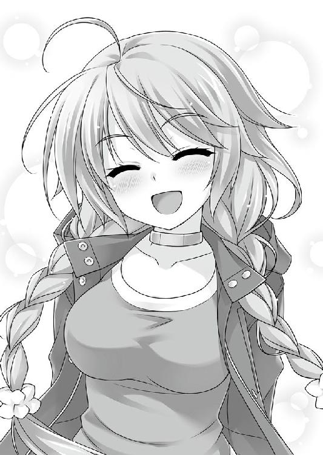
１１７─■■■■
さあ、本日もお待ちかねのヤツだぞ。
キミが返事をどうするかは、一考の余地がある。
この『物語』の行き先を大きく左右してしまう《分岐点》なんだからな。
歓迎する／３２３─■■■■ へ行け
お断りする／５─■■■■ へ行け
とある『本』と『死神』の道行きは、まだこれからだ。
【ＥＮＤ】
 あ と が き
あ と が き
お久しぶりになります日野亘です。
この『ＰＧ１４』は、自分がこれまでに得た様々な『関係』からヒントを得た物語です。
しみじみと思うのは、人と人の関係が、人生を豊かにもすれば厳しくもするということです。そして、関係には様々な形があります。家族、友人もそうですし、編集者と作家もその一つだったりします。
よき人生は、独りでは得られないのでしょう。
今作を形にする上で、皆様もよくご存じの「ゲームブック」を、テーマの一つとして扱っています。えっ、知って......ますよね？
「ゲームブック」というジャンルの『本』は、創土社様はじめ幾つかの出版社様から、自分が慣れ親しんだ時代の作品の復刻版や新たなオリジナル作品が発表されていますので、本作を読んで興味を持たれた方は、御覧になってみてはいかがでしょうか。
ゲームブックを堪能していただければ、本作の題材にどうして「ゲームブック」を選んだのかをわかって頂けることでしょう。
さて、前作『るいは智を呼ぶＰＬＵＳ』はＰＣゲームからのノベライズでしたが、この『ＰＧ１４』は完全な新作。楽しんでいただけましたら幸いです。
本作の舞台になっている「Ｔ県奥志麻市」は、暁WORKSから好評発売中の年齢制限のあるＰＣゲーム『ハロー・レディ！』の舞台でもあります。無料体験版もダウンロードできますので、本作を気に入ってくださって、年齢制限に引っ掛からない方は、是非ともプレイしていただければと思います。
一條と叔美の物語は始まったばかりですが、ひとまずの幕となりました。続きの物語をお伝えできる機会が得られることを祈りつつ、一旦は筆を置くこととします。
できますれば------------------今後ともよろしくお願いします。
最後に謝辞を。
内容から装丁に至るまで、尽力してくださった編集の遠藤様。
本作について、ご賛同いただきました創土社様。
今回も素晴らしい表紙と挿絵を描いてくださった、さえき北都様。
今回は、細部のチェックで殊更にご迷惑を掛けました、有限会社リサイトの皆様。
実家に新しくやってきた、心を癒やしてくれるニャンコ様。
多くのインスピレーションを与えてくださったＴ県民の皆様。
それから、この本を手に取ってくださった、全ての皆様。
心から、感謝を捧げます。この本が完成したのは、皆様の力があればこそです。
ありがとうございました。
日野 亘
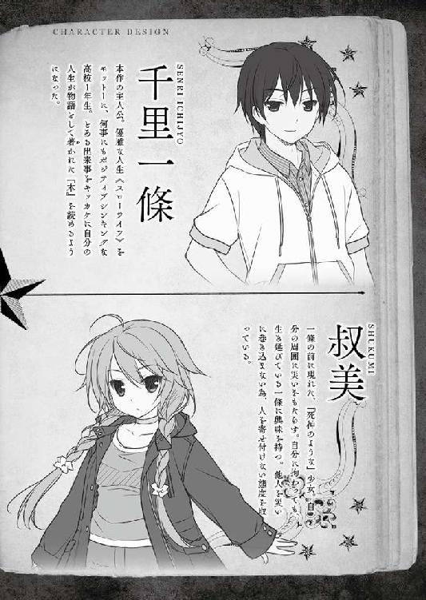
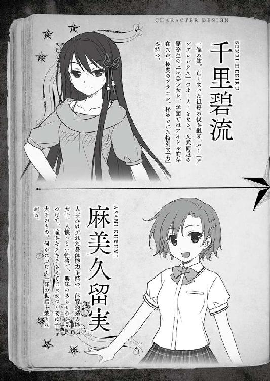
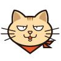
日野 亘
リサイト所属。四国でまったりと執筆中。代表作は「るいは智を呼ぶ」「コミュ〜黒い竜と優しい王国」他。
フランス革命と潜水艦をこよなく愛する、ワープロを打てる猫。
ＰＧ１４
電子版発行 ２０１４年８月５日
著 者 日野 亘
発行者 辻 信幸
発行所 株式会社一二三書房
〒１０２─００７２
東京都千代田区飯田橋２─14─２ 雄邦ビル
電話 ０３─３２６５─１８８１
イラスト さえき北都
©HIFUMI SHOBO
本書の無断複製（コピー）は、著作権上の例外を除き、禁じられています。
●本書は『ＰＧ１４』（２０１４年７月20日 初版第１刷）に基づいて制作されました。